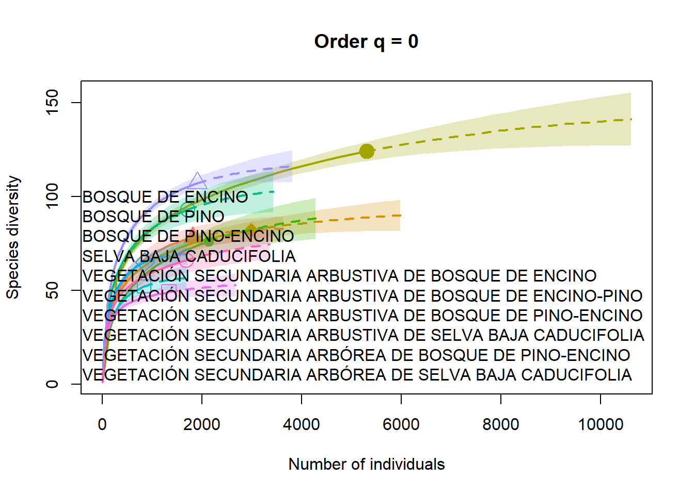
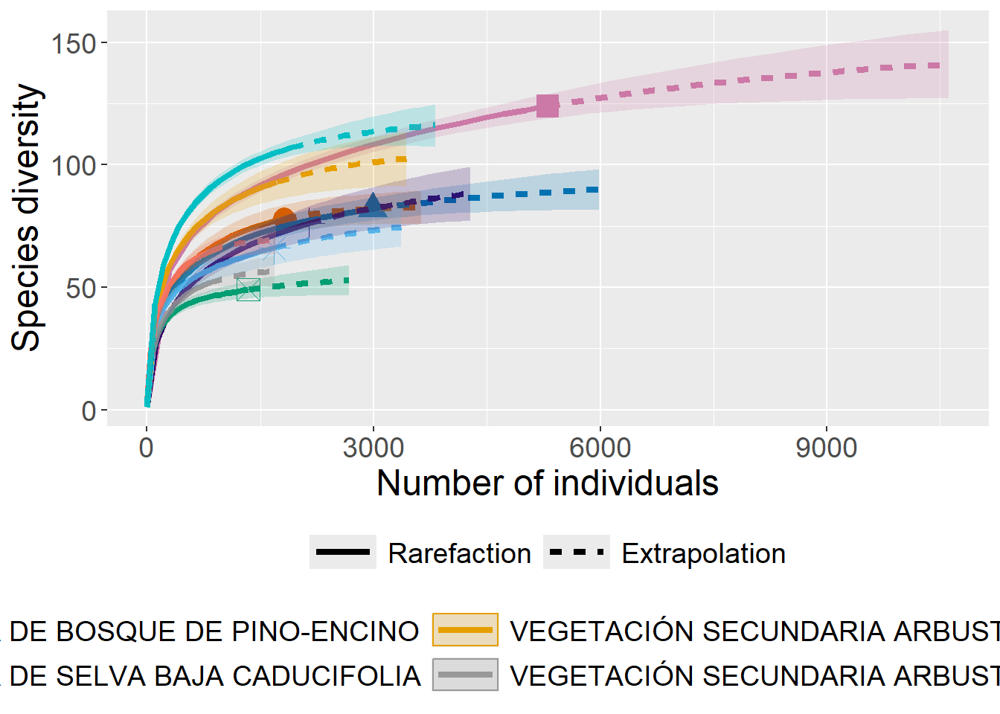
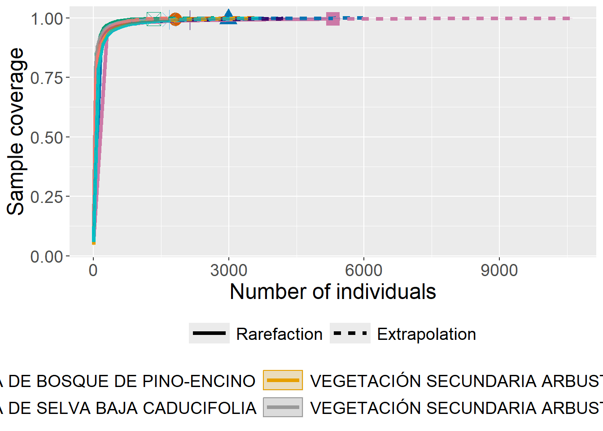
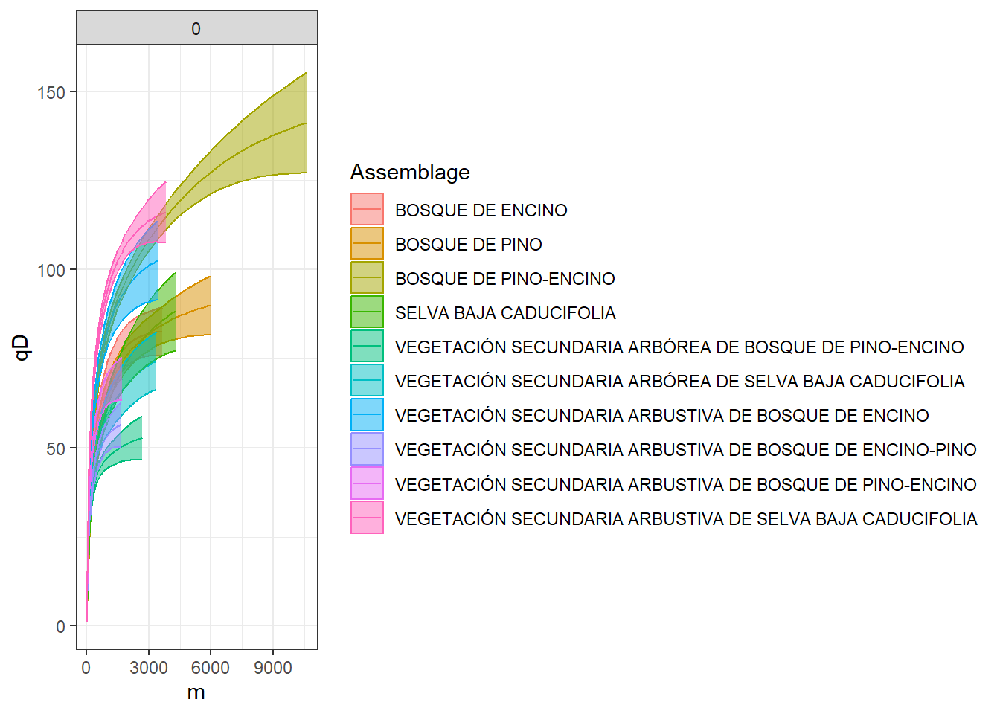

6.Diversidad
Medidas de diversidad
Conceptos básicos
- Especie. Grupo de organismos que se pueden reproducir entre sí y generar descendencia fértil.
- Comunidad. Conjunto de diferentes especies que interactúan entre sí.
- Muestreo. Método por el cual inferimos propiedades de una población objetivo (no confundir con población en el sentido ecológico).
- Esfuerzo de muestreo. Número de individuos muestreados o el tiempo invertido en obtener datos.
- Interpolación. Modelar datos dentro del intervalo observado.
- Extrapolación. Modelar datos fuera del intervalo observado.

- Abundancia. Qué tan común o raro es encontrar una especie en una comunidad.
- Diversidad. Propiedad emergente de las comunidades que incorpora el grado de heterogeneidad de algún estado o propiedad (este estado puede ser diversidad de especies, gremios, grupos funcionales, familias, genética, etc).

- Remuestreo. Técnica estadística que permite obtener estimaciones simulando submuestras de una muestra.
No existe una única forma de medir biodiversidad. Por lo tanto, hay diversas medidas que describen de manera distinta la diversidad. ¿Cómo responder a la pregunta qué tan diversa es una comunidad?
Diversidad
Diversidad \(\alpha\), \(\beta\) y \(\gamma\).

Los índices que vamos a ver permiten obtener mediciones \(\alpha\) y \(\gamma\). \(\beta\) normalmente se mide con índice de similitud o disimilitud.
Relevancia
El poder medir la diversidad permite entender patrones de distribución de especies (p.ej., zonas tropicales vs polares), poner a prueba hipótesis ecológicas (p.ej., sobre el estado de conservación / perturbación), crear líneas base (p.ej., conocer el número de especies presentes en una región), proveer información de prioridades de conservación (p.ej., proteger zonas más biodiversas), entre otras.
Índices tradicionales
Índices sobre qué tan heterogénea es una comunidad. Normalmente tratan de resumir dos componentes:
- Número de especies.
- Abundancia de éstas.
Medidas sobre diversidad incluyen el cálculo de índices “clásicos”:
- Riqueza. Número de especies en una muestra.
- Índice de Shannon. Incertidumbre en la identidad de una especie en una muestra. Índice que considera riqueza de especies y dominancia.
\[ D = -\sum_{i=1}^S p_i ln p_i \]
- Índice de Simpson. Probabilidad de que dos individuos, de una muestra, elegidos al azar sean de especies distintas. Índice que considera riqueza de especies y dominancia, pero está más influenciado por la dominancia.
Está el índice de Simpson (o Gini-Simpson).
\[ D = 1 - \sum_{i=1}^S p_i^2 \]
y el inverso de Simpson.
\[ D = \frac{1}{\sum_{i=1}^S p_i^2} \]
- Curvas de rango abundancia. Abundancia de cada especie encontrada en el muestreo.
Figuras tomadas de: https://www.davidzeleny.net/anadat-r/doku.php/en:div-ind
Sin embargo, el principal problema con estos índices es que los índices dependen del esfuerzo de muestreo, cuántas especies hay y su abundancia relativa. Entonces qué puede pasar:
- Una comunidad puede ser igual de diversa que otra, pero si se muestreó con un menor esfuerzo de muestreo, el índice saldrá menor.
- Dos comunidades con el mismo valor del índice de Shannon, pero una puede tener el doble número de especies con diferente abundancia.
Otras métricas que se han plantado como alternativas, basadas en técnicas de remuestreo:
- Curvas de acumulación de especies.
- Rarefacción.

Las curvas de acumulación de especies permiten simular la diversidad encontrada en función del esfuerzo de muestreo. Tratan de describir la dependencia de los índices de diversidad de acuerdo con el esfuerzo de muestreo.
Los índices rarificados se basan en las curvas de acumulación de especies para intrapolar el valor de diversidad (modelado) de una comunidad con un esfuerzo de muestreo reducido.
Números de Hill
Los números de Hill corresponden a medidas de diversidad que tratan de estandarizar estas medidas en función del número de especies y su abundancia.
Trata de abordar el problema de la medir la diversidad en comunidades, como un valor que depende del: 1) esfuerzo de muestreo y 2) cuántas especies hay y su abundancia relativa.
Figuras tomadas de: https://nsojournals.onlinelibrary.wiley.com/doi/full/10.1111/oik.07202
Su ventaja respecto a los índices de diversidad “tradicionales”:
- Interpretables en términos de número de especies.
- Cuentan con un exponente que controla la sensibilidad de la diversidad a la abundancia de las especies (q = c(0,1,2)). Más importancia a especies abundantes conforme incrementa el número q.
- q0: Riqueza de especies. Más sensible a especies raras.
- q1: Similar al índice de Shannon, pero expresado en número de especies (comunes). Punto intermedio.
- q2: Similar al índice de Simpson, pero expresado en número de especies (comunes). Más sensible a especies comunes.

Figuras tomadas de: https://www.davidzeleny.net/anadat-r/doku.php/en:div-ind
Ventajas:
- Si dos comunidades tienen una proporción similar de especies dominantes, pero distinto número de especies totales, su índice de Shannon o Simpson serán muy similares; pero q1 y q2 no (reflejará la diferencia en número de especies).
- Los valores se expresan en número de especies. Modelan una comunidad con determinada diversidad donde todas las especies tienen la misma abundancia.
- Permite hacer comparaciones proporcionales en términos de diversidad entre números de Hill de distintas comunidades.
\[ D = (\sum_{i=1}^S p_i^q)^{1/1-q} \]
\(S\): número de especies en la muestra. \(p_i\): número de individuos de la especie \(i\) entre total de individuos. \(q\): exponente del número de Hill.
Otro concepto importante: Coverage.
Es una medida de qué tanto se ha muestrado una comunidad. Coverage crece más lento conforme crece el tamaño de la muestra. Se calcula a partir del número de singletons, doubletons y número total de individuos.
Datos INFyS
Veremos tres paquetes hoy: vegan, BiodiversityR y iNEXT.
- vegan: Clásico paquete para calcular índices de diversidad, curvas de acumulación de especies, rarificación, extrapolación de número de especies.
- BiodiversityR: funciones basadas en vegan más amigable con el tidyverse.
- iNEXT: Cálculo de números de Hill y curva de acumulación de especies.
Empecemos cargando los paquetes que vamos a usar.
library(BiodiversityR)Cargando paquete requerido: tcltkCargando paquete requerido: veganCargando paquete requerido: permuteCargando paquete requerido: latticeThis is vegan 2.6-8BiodiversityR 2.16-1: Use command BiodiversityRGUI() to launch the Graphical User Interface;
to see changes use BiodiversityRGUI(changeLog=TRUE, backward.compatibility.messages=TRUE)library(readxl)
library(tidyverse)── Attaching core tidyverse packages ──────────────────────── tidyverse 2.0.0 ──
✔ dplyr 1.1.4 ✔ readr 2.1.5
✔ forcats 1.0.0 ✔ stringr 1.5.1
✔ ggplot2 3.5.1 ✔ tibble 3.2.1
✔ lubridate 1.9.3 ✔ tidyr 1.3.1
✔ purrr 1.0.2 ── Conflicts ────────────────────────────────────────── tidyverse_conflicts() ──
✖ dplyr::filter() masks stats::filter()
✖ dplyr::lag() masks stats::lag()
ℹ Use the conflicted package (<http://conflicted.r-lib.org/>) to force all conflicts to become errorslibrary(readr)
library(skimr)
library(iNEXT)
library(dplyr)
knitr::opts_chunk$set(echo = TRUE)Cargar los datos del INFyS, pero ahora usaremos las columnas de especies.
df <- read_excel("INFyS_2015_2020_Michoacan_de_Ocampo_lHwLKIM.xlsx",
sheet = "Arbolado")Warning: Expecting numeric in BW19313 / R19313C75: got 'NULL'Warning: Expecting numeric in BX19313 / R19313C76: got 'NULL'# Preprocesamiento limpieza de datos
df <- df |>
mutate(across(c(AlturaTotal_C3, DiametroNormal_C3), ~ifelse(.x >= 99999, NA, .x))) |>
# Eliminar NA
drop_na(AlturaTotal_C3, DiametroNormal_C3) |>
# Seleccionar columnas de interés
select(IdConglomerado, DESCRIP_S7_C3, Genero_APG_C3, Especie_APG_C3) |>
# Renombrar columnas
rename("ParcelaId" = "IdConglomerado",
"TipoVeg" = "DESCRIP_S7_C3",
"Genero" = "Genero_APG_C3",
"Especie" = "Especie_APG_C3")
skim(df)| Name | df |
| Number of rows | 25258 |
| Number of columns | 4 |
| _______________________ | |
| Column type frequency: | |
| character | 3 |
| numeric | 1 |
| ________________________ | |
| Group variables | None |
Variable type: character
| skim_variable | n_missing | complete_rate | min | max | empty | n_unique | whitespace |
|---|---|---|---|---|---|---|---|
| TipoVeg | 0 | 1 | 7 | 61 | 0 | 32 | 0 |
| Genero | 0 | 1 | 2 | 21 | 0 | 173 | 0 |
| Especie | 0 | 1 | 4 | 17 | 0 | 292 | 0 |
Variable type: numeric
| skim_variable | n_missing | complete_rate | mean | sd | p0 | p25 | p50 | p75 | p100 | hist |
|---|---|---|---|---|---|---|---|---|---|---|
| ParcelaId | 0 | 1 | 61220.67 | 2777.27 | 56011 | 59280 | 60559 | 62584 | 69266 | ▃▇▃▂▁ |
Crear columna de especies
df <- df |>
mutate(nom_cien = paste(Genero, Especie, sep = " "))
df |>
select(nom_cien) |>
distinct() |>
arrange(nom_cien)# A tibble: 392 × 1
nom_cien
<chr>
1 Aa NULL
2 Abies NULL
3 Abies durangensis
4 Abies religiosa
5 Acacia NULL
6 Acacia acatlensis
7 Acacia angustissima
8 Acacia cochliacantha
9 Acacia cornigera
10 Acacia farnesiana
# ℹ 382 more rowsHay algunos géneros sin especies (NULL)
df <- df |>
mutate(across(nom_cien, ~str_replace_all(.x, "NULL", "sp.")))
df |>
select(nom_cien) |>
distinct() |>
arrange(nom_cien)# A tibble: 392 × 1
nom_cien
<chr>
1 Aa sp.
2 Abies durangensis
3 Abies religiosa
4 Abies sp.
5 Acacia acatlensis
6 Acacia angustissima
7 Acacia cochliacantha
8 Acacia cornigera
9 Acacia farnesiana
10 Acacia greggii
# ℹ 382 more rowsvegan
Sacar datos de los sitios
Queremos usar las siguientes funciones, ver ayuda
help(diversity)starting httpd help server ... donePara saber cómo meter los dato conviene revisar los datos que vienen en los ejemplos. Datos de la isla de Barro Colorado.
Vemos que en BCI vienen las especies en columnas, las abundancias correpsonden a cada entrada y las filas representan los sitios de muestreo. Trataremos de poner los datos en ese formato.
data(BCI)
data(BCI.env)
BCI Abarema.macradenia Vachellia.melanoceras Acalypha.diversifolia
1 0 0 0
2 0 0 0
3 0 0 0
4 0 0 0
5 0 0 0
6 0 0 0
7 0 0 0
8 0 0 0
9 0 0 0
10 1 0 0
11 0 0 0
12 0 0 0
13 0 0 0
14 0 0 0
15 0 0 0
16 0 0 0
17 0 0 0
18 0 0 0
19 0 0 0
20 0 0 0
21 0 0 0
22 0 0 0
23 0 0 0
24 0 0 0
25 0 0 0
26 0 0 0
27 0 0 0
28 0 2 0
29 0 0 0
30 0 0 0
31 0 0 0
32 0 1 0
33 0 0 0
34 0 0 1
35 0 0 0
36 0 0 0
37 0 0 0
38 0 0 0
39 0 0 0
40 0 0 1
41 0 0 0
42 0 0 0
43 0 0 0
44 0 0 0
45 0 0 0
46 0 0 0
47 0 0 0
48 0 0 0
49 0 0 0
50 0 0 0
Acalypha.macrostachya Adelia.triloba Aegiphila.panamensis
1 0 0 0
2 0 0 0
3 0 0 0
4 0 3 0
5 0 1 1
6 0 0 0
7 0 0 1
8 0 0 0
9 0 5 0
10 0 0 1
11 0 0 0
12 0 1 1
13 0 1 1
14 0 0 0
15 0 2 0
16 0 2 0
17 0 0 1
18 0 1 1
19 0 0 1
20 0 0 2
21 0 0 1
22 0 1 0
23 0 0 0
24 0 2 1
25 0 0 1
26 0 0 0
27 0 1 4
28 1 0 1
29 0 1 0
30 0 14 2
31 0 5 0
32 0 7 0
33 0 3 1
34 0 3 0
35 0 6 0
36 0 1 0
37 0 2 0
38 0 6 0
39 0 9 0
40 0 7 0
41 0 0 1
42 0 0 0
43 0 0 1
44 0 4 0
45 0 0 0
46 0 0 0
47 0 2 0
48 0 1 0
49 0 0 0
50 0 1 0
Alchornea.costaricensis Alchornea.latifolia Alibertia.edulis
1 2 0 0
2 1 0 0
3 2 0 0
4 18 0 0
5 3 0 0
6 2 1 0
7 0 0 0
8 2 0 0
9 2 0 0
10 2 0 0
11 10 0 0
12 3 0 0
13 1 0 1
14 4 0 0
15 2 0 0
16 2 0 0
17 2 0 0
18 0 0 0
19 1 0 0
20 2 0 0
21 2 0 0
22 4 0 0
23 1 0 0
24 0 0 0
25 2 0 0
26 3 0 0
27 3 0 0
28 2 0 0
29 1 0 0
30 6 0 0
31 4 0 0
32 6 0 0
33 3 0 0
34 5 0 0
35 8 0 0
36 3 0 0
37 4 0 0
38 2 0 0
39 3 0 0
40 3 0 0
41 11 0 0
42 0 0 0
43 3 0 0
44 4 0 0
45 0 0 0
46 0 0 0
47 1 0 0
48 3 0 0
49 6 0 0
50 2 0 0
Allophylus.psilospermus Alseis.blackiana Amaioua.corymbosa
1 0 25 0
2 0 26 0
3 0 18 0
4 0 23 0
5 1 16 0
6 0 14 0
7 0 18 0
8 0 14 0
9 0 16 0
10 0 14 0
11 0 14 0
12 2 19 0
13 1 8 0
14 0 17 0
15 0 15 0
16 3 25 0
17 2 31 0
18 0 7 0
19 1 13 0
20 0 10 0
21 1 12 0
22 4 22 0
23 0 5 0
24 1 14 0
25 0 20 0
26 0 7 0
27 3 17 0
28 0 16 0
29 0 15 0
30 0 36 0
31 0 11 0
32 0 21 0
33 1 24 0
34 0 42 0
35 0 93 0
36 0 8 0
37 0 19 0
38 1 25 0
39 1 38 0
40 1 65 0
41 0 13 0
42 0 13 0
43 0 8 0
44 0 13 0
45 0 10 0
46 0 29 2
47 1 17 0
48 1 12 0
49 1 6 1
50 1 9 0
Anacardium.excelsum Andira.inermis Annona.spraguei Apeiba.glabra
1 0 0 1 13
2 0 0 0 12
3 0 0 1 6
4 0 0 0 3
5 0 1 0 4
6 0 1 0 10
7 0 0 0 5
8 1 0 1 4
9 0 1 1 5
10 0 0 0 5
11 1 1 0 2
12 0 0 0 4
13 0 0 3 1
14 0 1 4 5
15 0 0 2 8
16 0 0 0 5
17 0 0 1 1
18 2 0 2 1
19 0 2 1 13
20 0 0 2 6
21 2 0 0 2
22 0 1 0 7
23 2 1 0 3
24 1 2 0 6
25 1 0 0 6
26 0 2 0 4
27 0 0 0 2
28 2 1 0 6
29 0 1 0 5
30 0 2 0 5
31 0 0 0 5
32 0 0 0 4
33 0 2 0 8
34 0 1 0 3
35 0 0 0 5
36 0 0 1 3
37 0 0 0 4
38 0 0 1 1
39 0 0 0 3
40 2 0 0 7
41 2 1 0 2
42 0 1 0 5
43 0 2 0 2
44 0 0 0 7
45 0 0 0 1
46 0 0 3 0
47 0 0 1 8
48 3 1 2 2
49 1 2 0 4
50 2 1 0 3
Apeiba.tibourbou Aspidosperma.desmanthum Astrocaryum.standleyanum
1 2 0 0
2 0 0 2
3 1 0 1
4 1 1 5
5 0 1 6
6 0 1 2
7 0 0 2
8 1 0 0
9 0 0 2
10 0 1 1
11 0 0 3
12 0 0 1
13 1 0 12
14 1 1 5
15 0 0 0
16 0 0 5
17 0 1 1
18 1 0 6
19 1 0 2
20 1 0 0
21 0 2 3
22 0 0 8
23 0 0 17
24 0 0 7
25 0 3 13
26 1 0 4
27 0 0 5
28 0 2 4
29 0 2 1
30 1 0 1
31 0 0 3
32 0 1 4
33 1 3 10
34 1 3 3
35 1 0 3
36 0 3 2
37 0 1 2
38 0 3 1
39 0 5 1
40 0 3 3
41 0 0 3
42 1 2 13
43 0 3 1
44 0 2 6
45 0 0 1
46 3 1 6
47 1 2 5
48 0 2 7
49 0 1 4
50 1 2 4
Astronium.graveolens Attalea.butyracea Banara.guianensis
1 6 0 0
2 0 1 0
3 1 0 0
4 3 0 0
5 0 0 0
6 1 1 0
7 2 1 0
8 2 0 0
9 0 0 0
10 0 0 0
11 0 0 0
12 0 0 0
13 0 4 0
14 0 4 0
15 0 0 0
16 0 1 0
17 2 0 0
18 0 2 0
19 0 0 0
20 0 0 0
21 1 1 0
22 2 1 0
23 0 1 1
24 0 1 0
25 0 2 0
26 2 2 0
27 0 1 0
28 1 0 0
29 1 0 0
30 1 0 0
31 1 2 0
32 0 0 0
33 1 0 0
34 7 0 0
35 1 0 0
36 0 0 0
37 0 0 0
38 0 1 0
39 2 0 0
40 1 0 0
41 0 1 0
42 0 1 0
43 0 0 0
44 0 0 0
45 0 1 0
46 1 1 0
47 0 0 0
48 0 2 0
49 0 1 0
50 0 0 0
Beilschmiedia.pendula Brosimum.alicastrum Brosimum.guianense
1 4 5 0
2 5 2 0
3 7 4 0
4 5 3 0
5 8 2 0
6 6 2 0
7 5 6 0
8 9 4 0
9 11 3 0
10 14 6 0
11 1 5 0
12 2 4 0
13 0 2 0
14 3 4 0
15 9 3 0
16 4 4 0
17 2 5 0
18 0 0 0
19 2 4 0
20 1 0 0
21 2 2 0
22 0 8 0
23 0 2 0
24 16 4 0
25 5 5 0
26 3 3 0
27 1 5 0
28 3 4 0
29 11 2 0
30 4 5 0
31 2 2 0
32 5 8 0
33 2 3 0
34 5 5 0
35 1 1 0
36 1 3 0
37 2 4 0
38 5 8 0
39 9 5 0
40 5 5 0
41 7 6 0
42 4 4 0
43 10 2 0
44 21 2 0
45 42 2 0
46 0 5 0
47 1 1 1
48 1 6 0
49 11 4 0
50 17 4 0
Calophyllum.longifolium Casearia.aculeata Casearia.arborea
1 0 0 1
2 2 0 1
3 0 0 3
4 2 0 2
5 1 0 4
6 2 0 1
7 2 0 2
8 2 1 3
9 2 0 9
10 0 0 7
11 0 0 2
12 0 0 1
13 0 1 0
14 4 0 4
15 0 0 6
16 1 0 1
17 0 1 0
18 4 0 0
19 1 0 4
20 2 0 6
21 2 1 0
22 1 1 0
23 1 0 1
24 2 0 1
25 1 1 3
26 0 0 1
27 1 2 0
28 1 0 2
29 1 0 0
30 0 1 0
31 4 0 1
32 0 1 0
33 0 0 0
34 0 7 8
35 1 0 3
36 0 1 5
37 1 1 1
38 1 0 2
39 0 0 2
40 1 1 4
41 0 1 1
42 1 1 1
43 0 0 0
44 2 1 1
45 3 0 0
46 2 0 2
47 0 0 1
48 2 0 2
49 2 0 0
50 0 0 1
Casearia.commersoniana Casearia.guianensis Casearia.sylvestris
1 0 0 2
2 0 0 1
3 1 0 0
4 0 0 0
5 1 0 0
6 0 0 3
7 0 0 1
8 0 0 0
9 1 0 1
10 0 0 1
11 0 0 0
12 0 0 1
13 0 0 1
14 0 0 0
15 0 0 0
16 0 0 2
17 0 1 0
18 0 0 1
19 0 0 1
20 0 0 1
21 0 0 0
22 0 0 2
23 0 0 1
24 0 0 2
25 0 0 1
26 0 0 1
27 0 0 1
28 0 0 0
29 0 0 0
30 0 0 5
31 0 0 0
32 0 0 4
33 0 0 0
34 0 0 1
35 0 0 3
36 0 0 2
37 0 0 1
38 0 0 0
39 0 0 3
40 0 0 2
41 0 0 2
42 0 0 2
43 0 0 0
44 0 0 1
45 0 0 0
46 0 1 3
47 0 0 0
48 0 0 0
49 0 0 1
50 0 0 0
Cassipourea.guianensis Cavanillesia.platanifolia Cecropia.insignis
1 2 0 12
2 0 0 5
3 1 0 7
4 1 0 17
5 3 0 21
6 4 0 4
7 4 0 0
8 0 0 7
9 2 0 2
10 1 0 16
11 0 0 3
12 2 0 2
13 9 0 1
14 3 0 11
15 0 0 24
16 1 0 2
17 0 0 3
18 6 0 0
19 2 0 8
20 3 0 11
21 1 0 2
22 2 0 1
23 6 0 2
24 1 0 3
25 2 1 10
26 2 3 1
27 0 1 3
28 3 1 3
29 3 0 5
30 3 1 14
31 0 1 3
32 1 1 4
33 0 1 6
34 1 1 2
35 0 1 2
36 0 0 6
37 2 0 10
38 2 1 6
39 0 1 4
40 0 1 2
41 2 0 7
42 2 0 2
43 2 1 2
44 0 0 0
45 3 0 5
46 1 0 1
47 2 2 2
48 0 1 0
49 0 0 0
50 2 0 0
Cecropia.obtusifolia Cedrela.odorata Ceiba.pentandra Celtis.schippii
1 0 0 0 0
2 0 0 1 0
3 0 0 1 0
4 0 0 0 2
5 1 0 1 2
6 0 0 0 0
7 0 0 0 1
8 2 0 1 0
9 0 0 0 0
10 2 0 1 0
11 0 0 2 0
12 1 0 0 1
13 1 0 2 0
14 1 0 0 0
15 0 1 2 1
16 0 0 1 2
17 0 0 2 1
18 0 0 0 0
19 3 0 0 1
20 0 0 1 3
21 4 0 2 2
22 0 0 2 1
23 3 0 2 1
24 0 0 1 4
25 1 0 1 0
26 0 0 1 0
27 0 0 2 0
28 0 0 0 0
29 1 0 3 0
30 1 0 1 1
31 0 1 0 0
32 0 0 1 1
33 1 0 1 1
34 1 0 0 1
35 0 0 1 0
36 0 0 1 0
37 0 0 1 0
38 0 0 1 1
39 0 0 0 1
40 0 0 0 0
41 0 0 1 1
42 0 0 0 0
43 0 0 0 1
44 1 0 0 1
45 0 0 0 3
46 0 0 2 0
47 0 0 0 2
48 0 0 0 1
49 1 0 0 1
50 0 0 0 0
Cespedesia.spathulata Chamguava.schippii Chimarrhis.parviflora
1 0 0 0
2 0 0 0
3 0 0 0
4 0 0 0
5 0 0 0
6 0 0 0
7 0 0 0
8 0 0 0
9 0 0 0
10 0 0 0
11 0 0 0
12 0 0 0
13 0 0 1
14 0 0 0
15 0 0 0
16 1 0 0
17 0 0 0
18 0 2 0
19 0 0 0
20 0 0 0
21 0 0 0
22 0 0 0
23 0 0 0
24 0 1 0
25 0 0 0
26 0 0 0
27 0 0 0
28 0 0 0
29 0 0 0
30 0 0 0
31 0 0 0
32 0 0 0
33 0 0 0
34 0 0 0
35 0 0 0
36 0 0 0
37 0 0 0
38 0 0 0
39 0 0 0
40 0 0 0
41 0 0 0
42 0 0 0
43 0 0 0
44 0 0 0
45 0 0 0
46 0 0 0
47 0 0 0
48 0 0 0
49 1 0 0
50 0 0 0
Maclura.tinctoria Chrysochlamys.eclipes Chrysophyllum.argenteum
1 0 0 4
2 0 0 1
3 0 0 2
4 0 0 2
5 0 0 6
6 0 0 2
7 0 0 3
8 0 0 2
9 0 0 4
10 0 0 2
11 0 0 2
12 0 0 1
13 0 0 4
14 0 0 2
15 0 0 1
16 0 1 2
17 0 0 1
18 1 0 0
19 0 0 0
20 0 0 2
21 0 0 2
22 0 0 0
23 0 0 1
24 0 0 2
25 0 0 1
26 0 0 0
27 0 0 1
28 0 0 0
29 0 0 3
30 0 0 1
31 0 0 0
32 0 0 1
33 0 0 2
34 0 0 1
35 0 0 1
36 0 0 3
37 0 0 2
38 0 0 0
39 0 0 2
40 0 0 0
41 0 1 3
42 0 0 2
43 0 0 0
44 0 0 1
45 0 0 2
46 0 0 1
47 0 0 5
48 0 0 1
49 0 0 2
50 0 0 2
Chrysophyllum.cainito Coccoloba.coronata Coccoloba.manzinellensis
1 0 0 0
2 0 0 0
3 0 0 0
4 0 1 0
5 0 2 0
6 0 0 0
7 1 0 0
8 0 1 2
9 0 2 0
10 0 1 0
11 0 0 0
12 0 0 0
13 0 1 1
14 2 0 0
15 1 1 0
16 0 1 0
17 0 0 0
18 2 0 2
19 1 0 0
20 0 2 0
21 0 1 0
22 1 1 1
23 2 1 0
24 1 0 0
25 2 1 0
26 0 0 0
27 1 0 0
28 0 1 0
29 1 0 0
30 0 0 2
31 0 1 0
32 0 0 0
33 1 2 0
34 2 0 1
35 0 0 1
36 0 1 1
37 0 0 0
38 0 0 0
39 0 0 0
40 1 0 0
41 0 0 1
42 0 0 0
43 2 0 0
44 0 0 0
45 1 0 0
46 1 0 0
47 1 0 1
48 0 0 0
49 0 1 0
50 1 0 0
Colubrina.glandulosa Cordia.alliodora Cordia.bicolor Cordia.lasiocalyx
1 0 2 12 8
2 0 3 14 6
3 0 3 35 6
4 0 7 23 11
5 0 1 13 7
6 0 1 7 6
7 0 2 5 6
8 0 0 10 3
9 0 0 7 0
10 0 2 13 4
11 0 3 10 5
12 0 0 2 3
13 0 2 0 4
14 0 1 11 7
15 0 1 21 3
16 0 1 11 10
17 0 0 7 3
18 0 2 2 3
19 0 5 8 4
20 0 0 17 4
21 0 0 5 11
22 1 0 4 5
23 0 0 2 10
24 0 0 3 4
25 0 0 3 4
26 0 1 1 8
27 0 0 3 9
28 0 0 4 4
29 0 2 3 5
30 0 2 5 0
31 0 2 0 6
32 0 0 3 7
33 0 0 3 11
34 0 2 0 5
35 0 0 3 4
36 0 0 9 10
37 0 6 2 13
38 0 2 3 8
39 0 0 1 8
40 0 0 2 3
41 0 1 6 12
42 0 0 9 12
43 0 1 2 12
44 0 0 3 20
45 0 0 1 8
46 0 6 7 17
47 0 1 3 13
48 0 0 3 14
49 0 0 2 7
50 0 1 2 11
Coussarea.curvigemma Croton.billbergianus Cupania.cinerea Cupania.latifolia
1 0 2 0 0
2 0 2 0 0
3 0 0 0 0
4 1 11 0 1
5 0 6 0 0
6 2 0 0 0
7 1 0 0 0
8 0 4 0 0
9 1 2 0 0
10 1 0 0 0
11 0 1 0 0
12 3 2 0 0
13 4 12 0 0
14 0 11 0 0
15 0 1 0 0
16 1 3 0 2
17 4 0 0 0
18 6 4 0 0
19 3 1 1 0
20 0 0 0 1
21 0 1 0 0
22 11 0 0 0
23 2 2 0 0
24 1 0 0 0
25 0 1 0 0
26 0 1 0 0
27 2 0 0 1
28 2 0 0 0
29 0 1 0 0
30 2 2 0 0
31 0 0 0 0
32 0 0 0 0
33 0 0 0 0
34 0 0 0 1
35 1 1 0 0
36 0 0 0 1
37 0 2 0 1
38 0 2 0 0
39 0 0 0 0
40 0 1 0 0
41 0 6 0 3
42 0 3 0 0
43 0 0 0 0
44 0 0 0 0
45 0 1 0 0
46 5 0 0 1
47 1 3 0 0
48 1 6 0 0
49 0 2 0 0
50 0 1 0 0
Cupania.rufescens Cupania.seemannii Dendropanax.arboreus
1 0 2 0
2 0 2 3
3 0 1 6
4 0 0 0
5 0 3 5
6 0 0 2
7 0 1 1
8 0 2 6
9 0 2 1
10 0 0 3
11 0 2 2
12 0 1 2
13 1 2 5
14 0 0 2
15 0 4 5
16 0 0 3
17 2 3 2
18 1 0 2
19 0 1 3
20 0 2 1
21 0 2 3
22 0 0 0
23 0 1 1
24 0 1 3
25 0 1 10
26 0 0 0
27 0 2 0
28 0 0 0
29 0 2 2
30 0 1 3
31 0 0 0
32 0 1 0
33 0 0 1
34 0 0 2
35 0 1 0
36 0 1 0
37 0 0 1
38 0 0 1
39 0 1 0
40 0 0 1
41 0 1 1
42 0 1 0
43 0 0 1
44 0 0 0
45 0 0 2
46 0 1 0
47 0 1 0
48 0 0 0
49 0 0 1
50 0 1 1
Desmopsis.panamensis Diospyros.artanthifolia Dipteryx.oleifera
1 0 1 1
2 0 1 1
3 4 1 3
4 0 1 0
5 0 0 0
6 0 0 0
7 0 0 0
8 0 0 2
9 0 0 1
10 1 1 2
11 0 1 0
12 0 0 0
13 0 0 0
14 0 0 1
15 0 0 1
16 0 0 0
17 0 1 0
18 0 0 0
19 1 0 1
20 0 0 2
21 0 0 0
22 0 2 0
23 1 0 0
24 0 0 0
25 0 0 0
26 0 0 1
27 0 0 1
28 0 0 3
29 0 0 1
30 0 0 2
31 0 1 0
32 0 0 1
33 1 0 1
34 1 0 0
35 0 0 0
36 1 0 1
37 1 0 0
38 0 1 0
39 1 0 0
40 0 0 0
41 0 0 0
42 0 0 0
43 0 0 2
44 1 0 1
45 0 0 2
46 0 3 1
47 0 2 0
48 0 0 0
49 0 0 0
50 0 0 1
Drypetes.standleyi Elaeis.oleifera Enterolobium.schomburgkii
1 2 0 0
2 1 0 0
3 2 0 0
4 0 0 0
5 0 0 0
6 0 0 0
7 0 0 0
8 0 0 0
9 0 0 0
10 0 0 0
11 3 0 0
12 2 0 0
13 0 6 0
14 0 0 0
15 0 0 0
16 2 0 0
17 3 0 0
18 1 9 0
19 1 1 1
20 0 0 0
21 7 0 0
22 4 0 0
23 0 5 0
24 0 0 0
25 2 0 0
26 8 0 0
27 7 0 0
28 2 0 0
29 4 0 0
30 3 0 1
31 15 0 0
32 6 0 0
33 2 0 0
34 1 0 0
35 1 0 0
36 39 0 0
37 13 0 0
38 12 0 0
39 2 0 0
40 0 0 0
41 21 0 0
42 14 0 0
43 17 0 0
44 8 0 0
45 7 0 0
46 33 0 0
47 12 0 0
48 11 0 0
49 5 0 0
50 12 0 0
Erythrina.costaricensis Erythroxylum.macrophyllum Eugenia.florida
1 0 0 0
2 0 1 1
3 0 0 0
4 0 0 7
5 0 0 2
6 3 0 0
7 0 0 0
8 0 1 1
9 1 1 1
10 0 1 3
11 1 0 1
12 0 1 1
13 0 0 2
14 1 0 1
15 1 1 0
16 1 0 0
17 0 0 2
18 0 0 2
19 0 0 2
20 1 1 1
21 0 0 1
22 0 2 1
23 1 1 2
24 3 0 1
25 0 1 2
26 1 0 1
27 0 1 1
28 0 0 0
29 0 0 5
30 0 1 3
31 0 0 0
32 0 0 1
33 0 0 1
34 0 0 4
35 0 1 1
36 1 0 2
37 1 1 2
38 0 0 3
39 0 0 4
40 0 0 1
41 0 0 1
42 1 0 2
43 2 0 3
44 4 0 2
45 1 0 1
46 0 0 4
47 0 0 4
48 0 1 1
49 2 1 0
50 0 1 0
Eugenia.galalonensis Eugenia.nesiotica Eugenia.oerstediana
1 0 0 3
2 0 0 2
3 0 1 5
4 0 0 1
5 0 0 5
6 0 0 2
7 0 5 2
8 1 4 3
9 0 3 3
10 0 0 3
11 0 0 6
12 1 2 1
13 0 2 11
14 0 3 1
15 0 2 4
16 0 0 7
17 0 2 3
18 0 2 4
19 1 1 6
20 0 0 2
21 1 1 2
22 0 1 2
23 0 1 2
24 0 0 2
25 1 0 6
26 1 0 1
27 0 2 3
28 0 1 5
29 1 0 1
30 0 0 5
31 0 0 3
32 0 1 2
33 0 1 5
34 0 3 7
35 0 0 6
36 0 2 0
37 0 0 4
38 0 1 10
39 0 2 4
40 2 2 3
41 0 0 7
42 0 0 8
43 0 3 4
44 0 0 3
45 0 1 2
46 0 1 0
47 1 1 2
48 0 1 1
49 0 2 1
50 2 1 2
Faramea.occidentalis Ficus.colubrinae Ficus.costaricana Ficus.insipida
1 14 0 0 0
2 36 1 0 0
3 39 0 0 0
4 39 0 0 0
5 22 0 0 0
6 16 0 0 0
7 38 0 0 0
8 41 0 0 0
9 33 0 0 0
10 42 0 0 0
11 17 0 0 0
12 38 0 0 0
13 39 0 0 1
14 31 0 0 0
15 31 0 0 0
16 27 0 0 0
17 42 0 0 0
18 35 0 1 0
19 42 0 0 0
20 21 0 1 0
21 17 0 0 0
22 58 0 0 0
23 26 0 1 1
24 24 0 0 0
25 35 0 0 0
26 31 0 0 0
27 51 0 0 0
28 58 0 0 0
29 54 0 0 0
30 61 0 0 0
31 30 0 0 0
32 60 0 0 0
33 53 0 0 0
34 49 0 0 0
35 37 0 0 0
36 32 0 1 0
37 65 0 0 0
38 80 0 1 0
39 43 0 2 0
40 41 0 0 1
41 22 0 0 0
42 25 0 0 0
43 15 0 0 0
44 15 0 0 0
45 10 0 0 0
46 22 0 0 0
47 27 0 0 0
48 15 0 0 0
49 11 0 0 0
50 7 0 0 0
Ficus.maxima Ficus.obtusifolia Ficus.popenoei Ficus.tonduzii Ficus.trigonata
1 1 0 0 0 0
2 0 0 0 0 0
3 0 0 0 1 0
4 0 0 0 2 0
5 0 0 0 1 0
6 0 0 0 0 0
7 0 0 1 0 0
8 0 0 0 0 0
9 0 0 0 0 0
10 0 0 0 0 0
11 0 0 0 0 0
12 0 0 1 1 0
13 0 0 0 0 0
14 0 1 0 0 0
15 0 0 0 2 0
16 0 0 0 1 0
17 0 0 0 0 0
18 0 0 0 0 0
19 0 0 0 0 0
20 0 0 0 3 0
21 0 0 0 0 0
22 1 1 0 0 0
23 0 0 0 0 0
24 0 2 0 0 0
25 0 0 0 1 0
26 0 0 0 0 0
27 0 0 0 0 0
28 0 0 0 0 0
29 0 0 0 0 0
30 0 0 0 0 0
31 1 0 0 1 0
32 0 0 0 0 0
33 0 1 0 0 0
34 0 0 0 0 1
35 0 0 0 0 0
36 0 0 0 1 0
37 0 0 0 1 0
38 0 0 0 1 0
39 0 0 0 0 0
40 0 0 0 0 0
41 1 1 0 0 0
42 0 0 0 2 1
43 0 0 0 2 1
44 0 0 1 0 1
45 0 0 0 0 0
46 0 0 0 0 0
47 0 1 0 0 0
48 0 0 0 1 0
49 0 0 0 1 0
50 0 0 0 1 1
Ficus.yoponensis Garcinia.intermedia Garcinia.madruno Genipa.americana
1 1 0 4 0
2 0 1 0 0
3 0 1 0 1
4 0 3 0 0
5 0 2 1 0
6 1 1 0 0
7 1 2 0 1
8 0 2 0 0
9 0 1 0 1
10 0 0 1 1
11 0 1 0 0
12 0 3 0 0
13 0 3 0 1
14 0 1 0 1
15 0 0 1 0
16 0 1 0 2
17 0 0 0 1
18 0 2 0 1
19 0 3 0 0
20 0 0 1 0
21 0 1 0 0
22 0 3 0 0
23 0 2 1 0
24 0 1 0 0
25 1 3 1 0
26 0 2 0 1
27 0 2 1 0
28 0 4 0 0
29 0 1 0 1
30 0 1 0 0
31 0 0 0 0
32 0 3 0 0
33 0 0 0 0
34 0 4 1 0
35 1 2 0 0
36 0 0 0 1
37 0 1 0 0
38 0 2 0 0
39 0 6 0 1
40 0 6 0 0
41 0 0 0 2
42 0 0 0 0
43 0 2 0 0
44 0 4 0 0
45 0 0 0 1
46 0 8 0 1
47 1 3 0 1
48 0 0 0 0
49 0 0 0 1
50 0 4 0 3
Guapira.myrtiflora Guarea.fuzzy Guarea.grandifolia Guarea.guidonia
1 3 1 0 2
2 1 1 0 6
3 0 0 0 2
4 1 1 0 5
5 1 3 0 3
6 7 0 0 4
7 3 0 0 4
8 1 2 1 0
9 1 0 0 1
10 1 3 0 5
11 1 1 1 5
12 3 1 0 3
13 2 0 0 4
14 0 0 0 3
15 1 2 2 0
16 2 2 0 7
17 1 0 0 2
18 0 0 0 2
19 3 0 0 2
20 1 1 1 5
21 3 3 0 7
22 3 0 1 4
23 1 2 0 6
24 7 0 0 8
25 2 1 0 6
26 2 1 0 6
27 4 1 0 12
28 2 2 0 8
29 2 3 1 3
30 2 2 0 2
31 2 0 0 9
32 0 2 0 11
33 4 1 1 27
34 2 5 0 16
35 1 0 0 3
36 2 2 0 10
37 1 2 1 24
38 5 2 0 12
39 3 1 1 9
40 4 2 0 6
41 1 0 0 18
42 1 1 0 8
43 1 1 0 16
44 0 3 0 8
45 2 7 0 11
46 2 2 0 4
47 2 0 0 10
48 4 1 0 13
49 1 1 0 20
50 0 2 0 14
Guatteria.dumetorum Guazuma.ulmifolia Guettarda.foliacea Gustavia.superba
1 6 0 1 10
2 16 0 5 5
3 6 0 1 0
4 3 1 2 1
5 9 0 1 3
6 7 0 0 1
7 8 0 0 8
8 6 0 4 4
9 2 0 1 4
10 2 0 3 4
11 3 0 1 2
12 2 0 0 3
13 0 2 2 10
14 7 1 0 4
15 16 1 4 4
16 5 1 0 10
17 3 0 1 7
18 0 1 2 3
19 3 1 1 6
20 7 2 4 4
21 10 0 0 6
22 5 0 0 9
23 2 1 0 3
24 5 1 3 4
25 2 2 3 14
26 13 0 0 8
27 3 2 0 3
28 3 1 1 8
29 5 1 0 6
30 1 2 6 23
31 10 0 1 2
32 11 0 2 8
33 3 0 0 6
34 1 5 3 25
35 0 5 7 247
36 8 2 2 1
37 5 0 0 1
38 3 0 2 11
39 1 2 2 22
40 4 0 3 63
41 5 1 1 6
42 7 0 2 4
43 5 1 1 1
44 6 0 2 17
45 1 0 0 2
46 1 0 1 11
47 0 0 4 11
48 2 1 3 4
49 7 1 1 15
50 4 0 2 10
Hampea.appendiculata Hasseltia.floribunda Heisteria.acuminata
1 0 5 0
2 0 9 0
3 1 4 0
4 0 11 0
5 0 9 1
6 0 2 1
7 0 7 0
8 0 6 0
9 2 3 0
10 1 4 0
11 0 5 0
12 1 0 0
13 0 1 0
14 0 4 1
15 0 20 0
16 0 7 0
17 0 1 0
18 0 2 0
19 0 3 0
20 0 6 0
21 0 3 1
22 0 5 0
23 0 6 0
24 1 5 0
25 1 3 0
26 0 7 1
27 0 1 0
28 0 3 0
29 1 1 0
30 0 10 0
31 0 2 0
32 0 7 0
33 0 4 0
34 0 1 0
35 0 7 0
36 1 1 1
37 1 3 0
38 0 2 0
39 0 2 0
40 1 3 0
41 0 1 1
42 1 4 0
43 0 6 0
44 0 6 0
45 1 1 0
46 0 0 0
47 0 1 0
48 0 2 0
49 0 7 0
50 0 16 0
Heisteria.concinna Hirtella.americana Hirtella.triandra Hura.crepitans
1 4 0 21 0
2 5 0 14 0
3 4 0 5 0
4 6 0 4 0
5 4 0 6 0
6 8 0 6 2
7 2 0 7 1
8 5 0 14 1
9 1 0 8 0
10 5 0 7 0
11 5 0 12 0
12 12 0 6 2
13 4 0 11 1
14 0 0 13 0
15 3 0 4 0
16 2 0 4 3
17 13 0 4 0
18 8 0 12 0
19 7 0 24 0
20 1 0 12 0
21 1 0 17 0
22 9 0 6 2
23 5 0 10 5
24 7 1 15 0
25 3 0 26 0
26 4 0 24 4
27 1 0 8 2
28 4 0 9 2
29 5 0 7 5
30 0 0 3 1
31 6 0 14 3
32 6 0 8 7
33 5 0 9 2
34 4 0 4 5
35 2 0 1 0
36 4 0 24 2
37 6 0 7 3
38 15 0 3 2
39 12 0 3 2
40 3 0 7 3
41 6 0 31 2
42 4 0 18 3
43 10 0 23 1
44 6 0 18 6
45 18 0 26 7
46 15 4 22 5
47 6 0 33 7
48 3 0 41 7
49 8 0 43 1
50 11 0 27 2
Hieronyma.alchorneoides Inga.acuminata Inga.cocleensis Inga.goldmanii
1 0 0 2 0
2 2 0 4 0
3 0 0 4 1
4 0 0 6 0
5 0 0 0 2
6 0 0 0 1
7 0 0 1 0
8 0 0 6 1
9 1 0 4 1
10 0 0 5 2
11 0 0 0 1
12 0 0 0 0
13 1 0 2 1
14 2 0 3 1
15 0 0 2 2
16 0 7 0 0
17 0 2 2 1
18 2 0 1 2
19 1 0 2 0
20 3 0 2 3
21 1 0 0 0
22 1 1 3 2
23 5 0 1 6
24 0 0 0 1
25 2 0 0 0
26 1 2 0 1
27 0 0 0 2
28 2 1 0 2
29 1 0 0 0
30 0 0 0 1
31 1 0 0 0
32 0 0 0 1
33 0 0 0 2
34 0 0 0 1
35 3 0 0 0
36 1 0 0 2
37 3 3 0 2
38 1 0 0 0
39 0 0 0 0
40 1 0 0 1
41 2 1 0 1
42 1 2 0 0
43 0 3 0 0
44 0 0 0 1
45 0 0 0 0
46 0 0 2 1
47 2 3 0 1
48 0 1 0 1
49 1 0 0 1
50 0 0 0 0
Inga.laurina Inga.semialata Inga.nobilis Inga.oerstediana Inga.pezizifera
1 0 0 0 0 0
2 0 0 0 0 0
3 0 2 1 0 0
4 0 4 3 0 0
5 1 0 1 0 0
6 0 0 0 0 0
7 0 0 2 0 0
8 0 4 2 0 0
9 0 1 2 0 0
10 0 1 3 0 0
11 0 2 0 0 0
12 1 1 0 0 0
13 1 0 0 0 0
14 0 1 0 0 0
15 0 8 5 0 0
16 0 6 0 0 0
17 0 0 1 0 0
18 0 1 1 0 0
19 1 0 0 0 0
20 0 9 2 0 0
21 1 1 1 1 0
22 0 2 0 0 0
23 0 0 0 0 0
24 0 2 1 0 0
25 0 1 0 0 0
26 0 2 2 0 0
27 0 1 2 0 0
28 0 2 1 0 0
29 0 1 0 1 0
30 1 1 1 0 0
31 0 1 0 0 0
32 0 1 2 0 0
33 0 0 0 0 0
34 0 0 2 0 0
35 0 1 0 0 0
36 0 3 0 0 0
37 0 2 0 0 0
38 0 3 1 0 0
39 0 4 1 0 0
40 0 7 1 0 3
41 0 3 2 0 0
42 0 7 3 0 0
43 0 0 6 0 2
44 0 1 2 0 5
45 0 3 2 0 3
46 3 1 2 0 0
47 1 1 3 0 3
48 0 4 3 0 0
49 0 3 2 0 1
50 0 0 4 0 3
Inga.punctata Inga.ruiziana Inga.sapindoides Inga.spectabilis
1 3 0 2 0
2 0 0 0 2
3 0 0 3 0
4 0 0 2 1
5 0 0 5 0
6 0 0 0 0
7 0 0 0 0
8 0 0 1 0
9 0 0 1 0
10 0 0 0 0
11 0 0 0 1
12 0 0 2 0
13 0 0 0 0
14 0 0 4 2
15 0 0 1 1
16 0 0 0 0
17 0 0 1 1
18 0 3 1 0
19 0 0 3 1
20 1 0 1 1
21 1 1 1 0
22 0 0 2 0
23 0 0 0 0
24 0 0 4 0
25 0 0 2 0
26 0 0 0 0
27 1 0 1 0
28 0 0 4 0
29 0 0 0 0
30 0 0 2 1
31 0 0 2 0
32 0 0 2 0
33 0 0 1 0
34 1 0 3 0
35 1 0 2 0
36 0 0 2 0
37 0 0 3 0
38 0 0 1 0
39 0 0 0 0
40 0 0 1 0
41 1 0 2 1
42 0 0 3 1
43 0 0 1 0
44 0 0 1 1
45 0 0 0 0
46 0 0 1 0
47 0 0 1 0
48 0 0 3 0
49 0 0 2 0
50 1 1 2 0
Inga.umbellifera Jacaranda.copaia Lacistema.aggregatum Lacmellea.panamensis
1 0 6 1 1
2 0 10 0 0
3 0 9 0 0
4 1 2 1 2
5 0 3 1 2
6 0 7 2 1
7 0 4 1 3
8 2 8 0 2
9 2 5 0 0
10 1 12 2 0
11 0 7 0 0
12 0 2 0 1
13 0 3 0 1
14 0 12 0 2
15 1 23 1 1
16 0 6 1 0
17 0 4 2 1
18 0 3 0 3
19 1 7 1 4
20 0 10 1 1
21 0 8 0 1
22 0 6 1 0
23 0 4 0 2
24 0 2 0 0
25 0 5 2 1
26 0 0 1 0
27 0 3 1 1
28 0 3 1 0
29 0 3 1 1
30 0 3 0 2
31 1 0 0 0
32 0 3 1 0
33 1 6 2 1
34 0 2 0 1
35 1 3 1 1
36 1 3 1 1
37 0 2 0 0
38 0 1 0 3
39 0 1 2 1
40 0 1 0 1
41 0 3 0 1
42 0 3 3 1
43 0 2 0 1
44 1 0 0 0
45 0 1 1 0
46 0 7 0 2
47 1 13 1 2
48 0 1 0 2
49 0 3 0 0
50 0 1 0 0
Laetia.procera Laetia.thamnia Lafoensia.punicifolia Licania.hypoleuca
1 0 0 0 0
2 1 1 0 0
3 1 1 0 0
4 0 0 0 0
5 1 0 0 1
6 0 0 0 0
7 0 0 0 0
8 1 2 0 1
9 0 1 0 0
10 0 1 0 1
11 1 1 0 0
12 1 0 0 0
13 0 3 0 1
14 1 3 1 0
15 0 2 0 1
16 0 0 0 0
17 1 1 0 0
18 2 0 0 0
19 1 3 4 2
20 0 2 0 1
21 1 0 0 0
22 0 0 0 1
23 0 1 0 0
24 0 2 0 0
25 0 1 0 1
26 0 0 0 0
27 0 1 0 0
28 0 0 0 0
29 0 0 0 1
30 0 0 0 0
31 0 0 0 0
32 0 0 0 0
33 0 0 0 0
34 0 0 0 0
35 0 0 0 1
36 0 1 0 0
37 0 0 0 0
38 0 0 0 0
39 0 0 0 0
40 0 0 0 0
41 0 0 0 1
42 0 0 0 0
43 0 0 0 0
44 0 0 0 0
45 0 0 0 0
46 0 0 0 0
47 0 0 0 0
48 0 0 0 0
49 0 0 0 1
50 0 0 0 0
Licania.platypus Lindackeria.laurina Lonchocarpus.heptaphyllus
1 0 0 7
2 0 0 7
3 0 0 3
4 0 0 9
5 0 0 2
6 0 0 1
7 1 1 4
8 0 0 2
9 0 2 2
10 0 2 4
11 1 0 2
12 0 1 3
13 0 3 4
14 0 4 3
15 0 0 2
16 0 0 2
17 0 2 5
18 0 5 3
19 0 3 1
20 0 2 1
21 1 0 2
22 0 2 1
23 1 2 4
24 0 6 2
25 0 2 2
26 0 1 2
27 0 2 0
28 0 1 0
29 0 2 3
30 0 1 7
31 0 0 3
32 0 2 1
33 0 0 1
34 0 0 1
35 0 2 2
36 0 0 4
37 0 0 2
38 0 0 0
39 0 1 1
40 0 0 3
41 1 2 1
42 0 0 1
43 0 1 2
44 0 0 0
45 0 0 1
46 0 7 2
47 1 3 3
48 2 0 1
49 2 1 0
50 0 1 2
Luehea.seemannii Macrocnemum.roseum Maquira.guianensis.costaricana
1 1 0 4
2 0 0 3
3 0 0 7
4 0 0 7
5 1 0 10
6 1 0 4
7 2 0 3
8 0 0 4
9 1 0 7
10 0 0 3
11 4 0 6
12 1 0 3
13 4 0 2
14 1 0 0
15 0 0 4
16 4 0 4
17 1 0 2
18 5 0 0
19 4 0 1
20 0 0 2
21 4 0 5
22 2 0 2
23 6 0 2
24 0 0 5
25 2 0 4
26 1 1 7
27 3 1 3
28 3 0 2
29 1 0 2
30 5 0 2
31 2 0 4
32 3 3 3
33 4 0 3
34 3 2 3
35 6 6 1
36 2 0 5
37 2 2 0
38 2 0 3
39 2 0 1
40 1 4 0
41 2 1 2
42 2 0 4
43 1 1 4
44 1 0 5
45 0 0 7
46 0 0 0
47 1 2 1
48 1 1 4
49 1 0 5
50 0 1 2
Margaritaria.nobilis Marila.laxiflora Maytenus.schippii Miconia.affinis
1 0 1 2 0
2 0 0 0 0
3 0 0 0 0
4 0 0 1 1
5 1 0 0 0
6 0 0 1 0
7 0 0 2 0
8 0 0 0 1
9 0 0 0 0
10 0 0 1 1
11 0 0 1 0
12 0 0 0 0
13 0 0 0 0
14 0 0 0 1
15 0 0 0 0
16 0 0 0 0
17 0 0 0 1
18 0 0 1 0
19 0 0 1 0
20 0 0 1 1
21 0 0 1 0
22 0 0 0 0
23 0 0 0 0
24 0 0 0 0
25 0 0 0 0
26 0 0 1 0
27 0 0 0 0
28 0 0 1 0
29 0 0 0 0
30 0 0 0 0
31 0 1 0 0
32 0 0 1 0
33 0 0 0 0
34 0 0 0 1
35 0 0 0 0
36 0 0 0 0
37 0 0 0 0
38 0 0 0 0
39 0 0 0 1
40 0 0 0 0
41 0 0 2 0
42 0 0 0 0
43 0 0 1 0
44 0 0 1 0
45 0 0 0 0
46 0 0 0 0
47 0 0 0 0
48 1 0 0 0
49 0 0 1 0
50 0 8 1 0
Miconia.argentea Miconia.elata Miconia.hondurensis Mosannona.garwoodii
1 2 0 0 1
2 0 0 0 0
3 1 0 0 0
4 0 0 0 0
5 1 0 0 1
6 0 0 0 1
7 1 0 0 1
8 4 0 0 0
9 0 0 0 0
10 0 0 0 1
11 0 0 0 0
12 0 0 0 0
13 5 0 0 0
14 3 0 1 0
15 0 0 1 0
16 0 0 0 0
17 3 0 0 2
18 4 0 0 1
19 0 1 2 0
20 10 0 1 1
21 0 0 0 0
22 0 0 2 1
23 0 0 0 0
24 6 0 0 0
25 0 0 0 0
26 0 0 0 0
27 2 0 0 0
28 0 0 0 0
29 2 0 0 0
30 8 0 0 0
31 0 0 0 1
32 1 0 0 0
33 0 0 0 0
34 3 0 0 0
35 3 0 0 0
36 0 0 0 0
37 2 0 0 0
38 1 0 0 0
39 1 0 0 0
40 0 0 0 0
41 1 0 0 0
42 0 0 0 0
43 0 0 0 0
44 0 0 0 1
45 0 0 0 1
46 3 0 0 1
47 3 0 0 1
48 0 0 0 0
49 0 0 0 0
50 0 0 0 0
Myrcia.gatunensis Myrospermum.frutescens Nectandra.cissiflora
1 1 0 0
2 0 0 1
3 0 0 2
4 0 0 2
5 0 0 2
6 0 2 0
7 0 0 1
8 0 0 2
9 1 0 3
10 0 0 5
11 0 0 3
12 0 0 0
13 0 0 0
14 1 0 1
15 0 0 0
16 0 0 0
17 0 0 1
18 0 0 0
19 1 0 0
20 0 0 2
21 0 0 1
22 0 0 0
23 0 0 0
24 0 1 0
25 0 0 0
26 0 0 0
27 0 0 0
28 0 0 1
29 0 0 0
30 0 0 0
31 0 1 0
32 0 0 0
33 0 0 1
34 0 0 0
35 0 0 0
36 0 0 0
37 0 0 0
38 0 0 0
39 0 0 0
40 0 0 0
41 0 0 1
42 0 0 3
43 0 0 1
44 0 0 0
45 1 0 0
46 0 3 0
47 0 0 0
48 0 0 0
49 0 0 0
50 0 0 0
Nectandra.lineata Nectandra.purpurea Ochroma.pyramidale Ocotea.cernua
1 0 1 1 0
2 0 0 0 0
3 0 0 0 1
4 0 0 0 1
5 0 0 0 0
6 0 1 0 0
7 0 0 0 1
8 0 0 3 0
9 0 0 0 1
10 0 0 0 0
11 0 0 0 0
12 1 0 0 2
13 0 0 0 5
14 0 0 0 1
15 0 0 1 2
16 1 0 0 0
17 0 0 0 0
18 1 0 0 1
19 0 0 0 2
20 1 0 0 1
21 1 0 0 0
22 0 0 0 0
23 0 0 0 1
24 1 0 0 1
25 0 0 0 1
26 0 0 0 0
27 0 0 0 0
28 0 0 0 0
29 0 0 0 0
30 0 0 0 1
31 0 0 0 0
32 0 0 0 0
33 0 0 0 0
34 0 0 0 2
35 0 0 0 1
36 1 0 0 0
37 0 0 0 0
38 0 1 0 0
39 2 0 0 1
40 0 0 0 0
41 0 0 0 3
42 0 0 0 0
43 0 0 0 0
44 0 0 0 0
45 0 0 0 0
46 0 1 0 0
47 0 0 0 0
48 0 0 0 0
49 0 0 0 0
50 1 0 0 0
Ocotea.oblonga Ocotea.puberula Ocotea.whitei Oenocarpus.mapora
1 0 0 1 22
2 0 0 0 21
3 1 0 2 14
4 2 2 3 23
5 0 0 16 17
6 0 1 3 19
7 0 0 0 20
8 0 2 1 20
9 0 0 1 18
10 1 2 3 20
11 3 1 3 17
12 0 0 0 19
13 0 3 0 17
14 1 0 1 22
15 1 3 1 11
16 0 0 2 15
17 0 0 0 31
18 0 0 0 24
19 0 1 1 24
20 0 2 5 19
21 2 0 12 11
22 1 0 0 24
23 0 0 0 22
24 0 1 2 24
25 1 1 1 14
26 0 0 15 6
27 3 0 1 11
28 1 0 0 10
29 0 1 0 16
30 1 0 0 12
31 0 0 29 7
32 2 0 4 5
33 0 0 2 10
34 0 0 0 9
35 1 0 0 4
36 2 0 11 24
37 0 0 8 15
38 2 0 0 11
39 1 0 0 4
40 1 0 0 2
41 2 0 2 11
42 1 0 7 19
43 1 0 7 11
44 1 0 5 10
45 1 1 13 8
46 0 0 0 36
47 1 0 1 28
48 1 1 4 15
49 1 0 8 4
50 0 0 9 12
Ormosia.amazonica Ormosia.coccinea Ormosia.macrocalyx Pachira.quinata
1 0 0 0 0
2 0 0 0 0
3 0 0 0 0
4 0 0 0 0
5 0 0 0 0
6 0 0 0 0
7 0 0 0 1
8 0 0 0 0
9 0 0 0 0
10 0 0 0 0
11 0 0 0 0
12 0 0 1 0
13 0 0 0 0
14 0 0 0 0
15 0 0 0 0
16 0 0 0 0
17 0 0 0 0
18 0 0 0 0
19 0 1 0 0
20 0 0 0 0
21 0 0 0 0
22 0 0 0 0
23 0 0 0 0
24 0 0 0 0
25 0 0 0 0
26 0 0 0 0
27 0 0 1 0
28 0 0 0 0
29 1 0 0 0
30 0 0 0 0
31 0 0 0 0
32 0 0 0 0
33 0 0 1 0
34 0 1 0 0
35 0 1 0 0
36 0 0 0 0
37 0 0 0 0
38 0 0 0 0
39 0 1 0 0
40 0 0 0 0
41 0 0 0 0
42 0 0 0 0
43 0 0 0 0
44 0 1 0 0
45 0 0 0 0
46 0 0 0 0
47 0 0 0 0
48 0 0 0 0
49 0 0 0 0
50 0 0 0 0
Pachira.sessilis Perebea.xanthochyma Cinnamomum.triplinerve
1 0 0 0
2 0 1 0
3 0 0 1
4 0 0 0
5 0 1 1
6 0 0 0
7 0 0 2
8 0 0 0
9 0 8 1
10 0 6 0
11 0 0 0
12 0 0 1
13 0 0 0
14 0 2 1
15 0 1 0
16 0 0 1
17 0 0 0
18 0 0 0
19 0 0 0
20 0 1 0
21 0 0 0
22 0 0 1
23 0 0 1
24 0 0 2
25 0 0 1
26 0 0 0
27 0 0 0
28 0 0 0
29 0 0 0
30 9 0 0
31 0 0 0
32 0 0 0
33 0 0 0
34 0 0 0
35 0 0 1
36 0 1 1
37 0 0 0
38 0 0 0
39 0 0 0
40 0 0 0
41 0 0 1
42 0 0 0
43 0 0 0
44 0 0 0
45 0 0 0
46 0 0 0
47 0 0 0
48 0 0 0
49 0 0 0
50 0 0 0
Picramnia.latifolia Piper.reticulatum Platymiscium.pinnatum
1 0 0 3
2 0 0 3
3 1 0 5
4 0 0 1
5 0 2 1
6 0 0 1
7 0 0 6
8 1 0 0
9 0 0 2
10 0 0 0
11 1 1 0
12 0 0 0
13 1 0 2
14 1 0 2
15 0 0 1
16 0 0 1
17 0 1 2
18 0 0 1
19 0 0 2
20 1 0 0
21 0 0 0
22 1 0 0
23 0 0 1
24 0 0 2
25 1 0 3
26 6 1 1
27 3 1 0
28 0 0 4
29 0 0 0
30 0 0 0
31 2 0 0
32 2 0 2
33 0 0 0
34 2 1 2
35 1 0 1
36 2 1 0
37 2 0 2
38 1 0 1
39 0 0 0
40 0 0 0
41 5 0 0
42 1 0 2
43 0 0 1
44 1 0 1
45 1 0 2
46 2 0 2
47 0 0 1
48 4 1 0
49 1 0 0
50 1 0 0
Platypodium.elegans Posoqueria.latifolia Poulsenia.armata Pourouma.bicolor
1 2 0 24 5
2 1 1 16 3
3 3 0 28 0
4 0 0 15 0
5 0 0 25 1
6 2 0 15 0
7 3 0 8 0
8 3 0 13 1
9 1 0 5 1
10 0 0 24 0
11 1 0 22 1
12 2 0 8 0
13 2 0 0 0
14 1 0 13 0
15 2 0 16 0
16 1 0 32 0
17 0 1 2 0
18 1 0 0 0
19 1 0 4 0
20 1 0 15 0
21 0 0 44 0
22 0 0 5 0
23 1 3 1 0
24 0 0 6 0
25 1 1 4 0
26 2 0 22 0
27 1 1 9 0
28 2 0 1 0
29 0 0 2 0
30 1 0 8 0
31 0 0 24 0
32 1 0 2 0
33 0 0 4 0
34 0 0 1 0
35 1 0 0 0
36 1 0 14 0
37 0 0 6 0
38 0 0 1 0
39 0 0 1 0
40 2 0 2 0
41 0 1 11 0
42 0 0 26 0
43 0 0 55 0
44 1 0 55 0
45 0 1 57 1
46 0 3 0 0
47 2 0 4 0
48 0 3 23 0
49 0 0 39 0
50 0 0 43 0
Pouteria.fossicola Pouteria.reticulata Pouteria.stipitata Prioria.copaifera
1 0 5 0 13
2 0 7 0 12
3 0 3 1 12
4 0 6 0 5
5 0 5 0 3
6 0 4 0 26
7 0 4 0 18
8 0 4 0 5
9 0 3 0 1
10 0 0 1 2
11 0 5 1 26
12 0 4 0 21
13 0 5 0 7
14 0 5 1 3
15 0 4 0 0
16 0 3 1 18
17 0 5 6 25
18 0 17 1 5
19 0 10 5 5
20 0 1 2 0
21 1 1 0 14
22 0 2 1 17
23 0 6 0 1
24 1 4 0 4
25 0 9 0 1
26 0 3 0 11
27 0 2 1 11
28 0 2 0 4
29 0 2 1 14
30 0 3 1 9
31 0 3 0 3
32 0 4 0 1
33 0 3 1 5
34 0 3 0 14
35 0 4 0 7
36 0 3 1 0
37 0 2 0 1
38 0 4 0 5
39 0 4 0 6
40 0 5 0 1
41 0 3 0 0
42 0 4 0 1
43 0 4 0 1
44 0 2 0 1
45 0 2 1 0
46 0 4 3 3
47 0 7 1 1
48 0 5 0 2
49 0 2 1 0
50 0 1 0 0
Protium.costaricense Protium.panamense Protium.tenuifolium
1 5 2 11
2 4 0 8
3 1 2 3
4 3 3 9
5 7 2 3
6 1 1 2
7 0 0 6
8 0 3 7
9 4 0 4
10 4 1 6
11 2 0 4
12 0 0 5
13 0 0 4
14 3 4 5
15 4 0 4
16 1 0 2
17 1 1 2
18 0 0 1
19 0 2 5
20 7 0 9
21 2 1 7
22 0 2 4
23 0 2 3
24 0 1 7
25 6 4 7
26 4 0 6
27 2 1 4
28 3 1 2
29 1 1 6
30 4 2 9
31 3 0 9
32 2 1 3
33 1 0 8
34 5 3 8
35 1 0 1
36 3 0 3
37 4 0 8
38 1 0 10
39 3 1 10
40 2 0 7
41 0 1 6
42 3 2 12
43 1 0 6
44 3 2 8
45 1 3 11
46 0 0 18
47 1 1 27
48 1 0 26
49 2 0 22
50 5 0 23
Pseudobombax.septenatum Psidium.friedrichsthalianum Psychotria.grandis
1 0 0 0
2 0 0 0
3 0 0 0
4 0 0 0
5 0 0 0
6 0 0 0
7 0 0 0
8 0 0 0
9 0 0 0
10 0 0 0
11 0 0 0
12 0 0 0
13 0 1 0
14 0 0 0
15 0 0 0
16 0 0 0
17 0 0 0
18 0 0 0
19 0 0 0
20 0 0 0
21 1 0 0
22 0 0 0
23 1 0 2
24 1 0 0
25 0 0 0
26 0 1 0
27 1 0 0
28 1 0 0
29 0 0 0
30 1 0 0
31 0 0 0
32 0 0 0
33 0 1 0
34 0 0 0
35 2 0 0
36 0 0 0
37 0 0 0
38 0 0 0
39 0 0 0
40 0 0 0
41 0 0 0
42 0 0 0
43 0 1 0
44 0 0 0
45 0 0 0
46 0 0 0
47 0 0 0
48 0 0 0
49 0 0 0
50 0 0 0
Pterocarpus.rohrii Quararibea.asterolepis Quassia.amara Randia.armata
1 1 11 0 3
2 0 12 0 2
3 0 15 0 1
4 2 14 0 4
5 1 9 0 2
6 1 3 0 9
7 2 21 0 14
8 2 7 0 4
9 1 4 0 4
10 0 18 0 1
11 2 25 0 7
12 2 11 0 2
13 2 1 0 15
14 2 10 0 3
15 2 8 0 2
16 1 25 0 3
17 1 9 0 5
18 3 0 0 10
19 1 2 0 2
20 3 15 0 3
21 0 12 0 1
22 0 11 0 11
23 4 6 0 1
24 0 12 0 4
25 1 22 0 4
26 2 20 0 3
27 1 20 0 10
28 2 24 0 5
29 1 14 0 6
30 3 13 0 4
31 1 25 0 7
32 6 21 0 20
33 1 22 0 16
34 1 17 0 11
35 2 11 0 5
36 0 11 0 2
37 3 14 1 2
38 2 20 0 8
39 2 20 0 5
40 0 22 0 7
41 2 11 0 3
42 3 19 0 1
43 1 12 0 2
44 1 23 0 1
45 1 32 0 1
46 3 3 3 4
47 1 7 0 2
48 2 21 0 4
49 3 25 0 0
50 2 14 0 2
Sapium.broadleaf Sapium.glandulosum Schizolobium.parahyba Senna.dariensis
1 0 0 0 0
2 0 0 0 0
3 0 1 0 0
4 0 0 0 0
5 0 2 0 0
6 0 0 1 0
7 0 0 0 0
8 0 0 0 0
9 0 0 0 0
10 0 0 0 0
11 0 0 0 0
12 0 0 0 0
13 0 0 0 0
14 0 0 0 0
15 0 0 0 0
16 0 0 0 0
17 0 0 0 0
18 0 1 0 0
19 0 1 0 0
20 0 0 0 0
21 0 0 0 0
22 0 0 1 0
23 0 0 0 0
24 0 1 0 0
25 0 1 0 0
26 0 1 0 0
27 0 2 0 0
28 0 0 0 0
29 0 0 0 0
30 0 0 0 0
31 0 0 0 0
32 0 0 0 0
33 0 1 0 0
34 0 1 0 0
35 0 1 0 0
36 0 0 0 0
37 0 0 0 0
38 0 0 0 0
39 0 0 0 0
40 0 0 0 0
41 0 0 0 1
42 0 0 0 0
43 1 0 0 0
44 1 0 0 0
45 1 0 0 0
46 0 1 0 0
47 0 0 0 0
48 0 1 0 0
49 0 1 0 0
50 0 1 0 0
Simarouba.amara Siparuna.guianensis Siparuna.pauciflora Sloanea.terniflora
1 14 3 0 1
2 6 2 0 0
3 16 1 1 2
4 8 2 0 2
5 7 0 3 3
6 7 1 0 2
7 13 1 0 1
8 14 0 0 2
9 12 0 1 1
10 17 0 1 2
11 7 1 0 1
12 9 0 0 1
13 2 0 0 1
14 4 0 0 1
15 6 0 2 0
16 8 1 0 0
17 2 0 0 1
18 2 1 0 0
19 6 0 1 1
20 8 0 0 0
21 4 0 0 1
22 5 0 0 0
23 1 0 0 0
24 3 0 1 0
25 10 0 0 0
26 5 0 0 1
27 16 0 0 0
28 7 0 0 1
29 3 0 0 1
30 8 0 1 1
31 5 0 1 2
32 5 0 0 2
33 2 0 0 2
34 2 0 0 1
35 0 0 0 0
36 9 0 0 3
37 6 0 1 3
38 3 0 0 4
39 1 0 0 1
40 4 0 1 1
41 1 0 0 1
42 4 0 0 7
43 0 0 1 2
44 0 0 0 1
45 3 0 0 5
46 3 0 0 2
47 4 0 0 4
48 0 0 0 3
49 4 0 0 2
50 3 0 1 5
Socratea.exorrhiza Solanum.hayesii Sorocea.affinis Spachea.membranacea
1 15 0 1 0
2 22 0 1 0
3 31 0 1 0
4 9 0 1 0
5 55 1 0 0
6 44 0 1 0
7 23 0 0 0
8 22 0 0 0
9 17 0 0 0
10 12 2 1 0
11 5 0 1 0
12 8 0 0 0
13 0 0 0 0
14 6 0 0 0
15 7 1 1 0
16 1 2 0 0
17 0 0 0 0
18 0 0 0 0
19 3 0 1 0
20 6 0 0 1
21 5 1 0 0
22 0 0 0 0
23 1 1 1 0
24 5 0 1 0
25 5 0 0 7
26 3 0 0 0
27 0 1 2 0
28 0 0 1 0
29 0 0 1 0
30 0 0 0 0
31 8 0 2 0
32 0 1 1 0
33 0 0 0 0
34 0 0 0 0
35 0 1 0 0
36 1 1 0 0
37 0 0 0 0
38 2 0 0 0
39 0 0 0 0
40 0 0 0 0
41 0 0 0 0
42 3 0 0 0
43 7 0 1 0
44 5 0 0 0
45 9 0 1 0
46 0 0 0 0
47 0 0 3 0
48 0 0 2 0
49 2 0 3 0
50 4 0 0 0
Spondias.mombin Spondias.radlkoferi Sterculia.apetala
1 1 2 1
2 1 0 2
3 0 3 0
4 1 3 0
5 1 5 0
6 0 0 1
7 0 5 1
8 1 0 0
9 0 1 0
10 2 1 0
11 0 1 0
12 1 0 0
13 10 1 3
14 1 0 0
15 0 2 0
16 0 2 0
17 1 0 1
18 3 3 2
19 0 0 1
20 0 3 0
21 0 1 0
22 0 1 0
23 2 2 1
24 0 1 0
25 0 2 0
26 0 0 1
27 0 0 0
28 0 0 1
29 0 2 0
30 1 1 1
31 0 1 0
32 0 1 2
33 0 0 0
34 0 1 0
35 0 1 0
36 0 3 0
37 0 1 1
38 0 0 0
39 0 1 0
40 0 2 0
41 0 3 1
42 0 1 1
43 0 1 1
44 0 0 0
45 0 0 1
46 0 1 2
47 0 0 1
48 1 2 0
49 1 1 0
50 1 1 0
Swartzia.simplex.var.grandiflora Swartzia.simplex.continentalis
1 3 1
2 3 4
3 0 2
4 1 2
5 1 1
6 9 5
7 9 7
8 5 0
9 5 0
10 0 0
11 10 5
12 13 13
13 2 2
14 3 3
15 1 0
16 5 5
17 6 4
18 9 2
19 6 4
20 2 0
21 2 1
22 6 4
23 2 4
24 4 3
25 2 1
26 5 2
27 6 4
28 8 1
29 6 4
30 3 0
31 0 1
32 4 3
33 13 4
34 14 2
35 4 1
36 0 3
37 8 3
38 10 2
39 5 3
40 1 3
41 0 0
42 3 1
43 8 0
44 3 2
45 1 1
46 0 0
47 0 1
48 4 2
49 2 1
50 1 1
Symphonia.globulifera Handroanthus.guayacan Tabebuia.rosea
1 0 1 1
2 1 0 2
3 1 1 1
4 1 0 2
5 2 0 3
6 0 1 0
7 0 0 1
8 1 0 0
9 1 0 0
10 0 0 0
11 0 0 0
12 1 0 0
13 0 2 6
14 0 1 0
15 2 1 0
16 1 0 1
17 0 1 1
18 0 0 0
19 0 0 0
20 0 0 1
21 2 0 2
22 0 2 0
23 0 0 4
24 1 1 0
25 1 0 0
26 0 0 2
27 0 2 0
28 0 6 1
29 0 1 0
30 0 4 3
31 0 0 2
32 0 0 1
33 0 0 5
34 0 0 0
35 0 1 0
36 0 0 2
37 0 0 1
38 0 0 1
39 1 0 4
40 0 0 2
41 2 0 1
42 1 0 1
43 0 2 0
44 0 1 2
45 2 0 1
46 0 1 3
47 1 0 3
48 0 0 5
49 1 0 2
50 3 1 1
Tabernaemontana.arborea Tachigali.versicolor Talisia.nervosa
1 9 6 0
2 5 1 0
3 6 3 0
4 10 3 0
5 16 0 0
6 11 1 0
7 9 2 0
8 8 0 0
9 12 3 0
10 10 1 0
11 4 4 0
12 6 2 0
13 12 3 1
14 22 0 0
15 8 5 0
16 11 2 0
17 3 1 0
18 10 3 0
19 9 2 0
20 13 3 0
21 4 1 0
22 10 1 0
23 5 1 0
24 9 3 0
25 6 3 0
26 4 4 0
27 12 2 0
28 5 8 0
29 2 2 0
30 21 1 0
31 1 5 0
32 4 1 0
33 2 1 0
34 5 0 0
35 2 1 0
36 1 1 0
37 0 1 0
38 4 1 0
39 3 2 0
40 2 0 0
41 1 3 0
42 2 1 0
43 0 2 0
44 1 0 0
45 2 2 0
46 2 1 0
47 1 1 0
48 8 0 0
49 2 2 0
50 7 2 0
Talisia.princeps Terminalia.amazonia Terminalia.oblonga
1 1 1 0
2 0 0 0
3 0 0 0
4 0 0 0
5 0 1 0
6 0 1 0
7 0 0 0
8 0 0 0
9 0 0 0
10 0 0 0
11 0 0 0
12 0 0 0
13 0 5 0
14 0 2 0
15 0 0 0
16 0 0 3
17 0 0 0
18 0 2 0
19 0 0 0
20 0 1 0
21 0 0 1
22 0 0 1
23 0 6 0
24 0 1 0
25 0 2 2
26 1 0 5
27 0 0 10
28 1 0 0
29 0 1 0
30 0 0 0
31 0 1 8
32 0 0 2
33 0 0 0
34 0 0 0
35 0 2 0
36 0 0 0
37 0 0 0
38 0 0 0
39 0 0 0
40 0 1 0
41 0 0 0
42 0 0 0
43 0 0 0
44 0 0 0
45 0 0 0
46 0 0 0
47 0 0 0
48 0 0 2
49 0 1 9
50 0 0 0
Tetragastris.panamensis Tetrathylacium.johansenii Theobroma.cacao
1 5 0 1
2 7 0 1
3 10 0 0
4 10 0 0
5 7 0 1
6 17 0 0
7 8 0 0
8 9 0 0
9 5 0 0
10 6 0 0
11 10 0 0
12 10 0 0
13 6 0 0
14 5 0 0
15 3 0 0
16 6 0 1
17 13 0 0
18 11 2 0
19 9 0 0
20 4 0 0
21 4 0 0
22 9 0 0
23 11 2 0
24 15 0 1
25 7 0 1
26 6 0 0
27 11 1 0
28 13 0 0
29 8 0 1
30 5 1 0
31 5 0 0
32 4 0 1
33 1 0 0
34 2 1 0
35 1 0 0
36 5 0 0
37 9 0 0
38 1 0 0
39 2 0 0
40 1 0 0
41 7 0 1
42 7 0 0
43 6 0 1
44 4 0 0
45 9 0 0
46 20 0 0
47 25 0 0
48 8 0 0
49 4 0 0
50 8 0 2
Thevetia.ahouai Tocoyena.pittieri Trattinnickia.aspera Trema.micrantha
1 0 0 3 0
2 0 1 1 0
3 0 0 1 0
4 0 0 0 2
5 0 0 2 1
6 0 0 0 0
7 0 0 0 0
8 0 0 2 0
9 0 0 2 0
10 0 0 1 0
11 0 0 0 1
12 0 1 0 1
13 0 0 0 0
14 0 0 0 0
15 0 0 1 0
16 0 0 1 0
17 0 0 3 0
18 0 0 0 0
19 0 0 3 1
20 0 0 0 0
21 0 1 1 0
22 0 0 0 0
23 1 0 0 1
24 0 0 1 0
25 0 0 0 1
26 0 0 0 0
27 0 0 1 0
28 0 0 1 1
29 0 0 0 0
30 0 0 0 0
31 0 0 0 0
32 0 0 0 0
33 0 1 0 0
34 0 0 0 0
35 0 0 0 0
36 0 0 4 0
37 0 0 1 0
38 0 0 0 0
39 0 0 0 3
40 0 0 1 0
41 1 0 0 0
42 0 0 0 1
43 0 0 0 0
44 0 0 0 1
45 0 0 0 0
46 0 0 7 0
47 0 0 1 0
48 0 0 1 0
49 0 0 0 0
50 0 1 1 1
Trichanthera.gigantea Trichilia.pallida Trichilia.tuberculata
1 0 0 18
2 0 1 27
3 0 0 28
4 0 1 35
5 0 0 15
6 0 0 31
7 0 1 27
8 0 0 36
9 0 0 65
10 0 0 46
11 0 2 41
12 0 1 46
13 0 8 35
14 0 1 33
15 0 6 33
16 0 3 25
17 0 2 36
18 0 5 23
19 0 1 44
20 0 10 33
21 0 0 23
22 0 1 42
23 0 1 23
24 1 2 38
25 1 6 26
26 0 1 15
27 0 3 20
28 0 0 43
29 0 0 47
30 0 4 33
31 0 1 33
32 0 8 50
33 0 1 37
34 0 2 31
35 0 1 30
36 0 0 28
37 0 4 33
38 0 1 59
39 0 0 79
40 0 2 97
41 0 0 19
42 0 0 15
43 0 0 36
44 0 0 26
45 0 0 26
46 0 0 16
47 0 1 16
48 0 0 19
49 0 1 26
50 0 0 18
Trichospermum.galeottii Triplaris.cumingiana Trophis.caucana
1 0 0 2
2 0 0 0
3 0 0 0
4 0 0 0
5 0 0 2
6 0 1 0
7 0 0 0
8 0 0 0
9 0 0 0
10 0 1 0
11 0 1 2
12 0 3 0
13 0 13 0
14 0 7 0
15 0 0 0
16 0 2 0
17 0 3 1
18 0 6 0
19 0 1 0
20 1 0 0
21 0 2 1
22 0 1 1
23 0 11 0
24 0 1 0
25 0 3 0
26 0 2 1
27 0 3 0
28 0 0 0
29 0 0 0
30 0 0 0
31 0 1 0
32 0 13 0
33 0 11 0
34 0 11 0
35 0 1 0
36 0 0 0
37 0 3 0
38 0 6 0
39 0 4 0
40 0 5 0
41 0 1 0
42 0 0 0
43 0 1 4
44 0 6 1
45 0 5 4
46 0 1 0
47 0 3 0
48 0 6 3
49 0 4 8
50 0 4 3
Trophis.racemosa Turpinia.occidentalis Unonopsis.pittieri Virola.multiflora
1 1 0 1 0
2 1 1 5 0
3 0 1 12 0
4 1 4 3 0
5 0 2 4 0
6 0 1 3 2
7 1 0 3 0
8 0 1 2 0
9 0 1 5 0
10 2 1 9 1
11 0 1 4 0
12 0 1 0 1
13 0 0 0 0
14 1 0 3 0
15 0 5 11 0
16 2 2 1 1
17 0 0 0 0
18 2 0 0 0
19 3 0 4 0
20 0 5 10 0
21 0 1 6 2
22 0 1 1 0
23 1 0 1 0
24 1 2 3 0
25 2 0 3 0
26 1 0 4 1
27 1 7 0 0
28 0 1 0 0
29 0 3 5 0
30 2 1 1 1
31 1 0 3 5
32 2 0 4 0
33 1 2 5 0
34 0 1 1 0
35 0 0 0 0
36 0 2 9 2
37 0 5 8 2
38 0 0 2 0
39 0 2 0 0
40 1 1 0 0
41 0 2 4 2
42 0 0 5 3
43 1 0 5 0
44 0 0 3 0
45 0 0 4 0
46 0 0 0 0
47 2 0 0 0
48 2 0 0 1
49 0 0 2 0
50 0 1 4 1
Virola.sebifera Virola.surinamensis Vismia.baccifera Vochysia.ferruginea
1 17 4 0 0
2 12 3 0 0
3 11 2 0 0
4 16 2 0 0
5 31 6 0 0
6 19 1 0 0
7 8 1 0 0
8 19 1 0 0
9 16 1 0 0
10 17 2 0 0
11 6 4 0 0
12 6 2 0 2
13 0 0 0 3
14 17 1 0 1
15 16 4 0 0
16 24 5 0 0
17 5 0 0 1
18 0 2 0 2
19 12 1 0 0
20 15 4 0 0
21 15 10 0 0
22 7 1 0 0
23 9 1 0 0
24 12 1 0 0
25 12 4 0 0
26 20 12 0 0
27 12 1 0 0
28 18 1 0 0
29 9 1 0 0
30 8 3 0 0
31 20 6 0 0
32 18 4 0 0
33 16 3 0 0
34 7 1 0 0
35 11 0 0 0
36 14 5 0 0
37 14 4 1 0
38 11 0 0 0
39 7 2 0 0
40 11 1 0 0
41 12 7 0 0
42 12 5 0 0
43 14 8 0 0
44 10 1 0 0
45 13 7 0 0
46 0 0 0 2
47 11 1 0 1
48 7 5 0 0
49 6 16 0 0
50 14 7 0 0
Xylopia.macrantha Zanthoxylum.ekmanii Zanthoxylum.juniperinum
1 1 3 0
2 0 4 0
3 0 8 1
4 0 13 1
5 0 3 0
6 0 1 0
7 0 2 0
8 0 4 0
9 0 13 1
10 4 7 10
11 1 1 0
12 0 0 0
13 1 5 2
14 0 12 3
15 3 5 6
16 1 2 1
17 2 1 0
18 1 0 2
19 1 3 1
20 1 4 2
21 15 7 2
22 0 1 1
23 0 0 0
24 0 0 0
25 0 4 3
26 15 1 1
27 8 4 1
28 0 0 0
29 0 2 0
30 0 1 0
31 23 0 1
32 4 4 0
33 8 3 0
34 1 0 0
35 0 0 0
36 20 2 1
37 1 5 0
38 1 2 1
39 0 1 1
40 0 0 0
41 9 3 0
42 14 4 0
43 2 1 0
44 1 2 0
45 0 2 1
46 3 1 1
47 1 2 1
48 1 5 0
49 0 1 0
50 0 0 0
Zanthoxylum.panamense Zanthoxylum.setulosum Zuelania.guidonia
1 2 0 0
2 2 0 0
3 2 0 0
4 5 0 1
5 5 0 0
6 3 0 2
7 0 0 0
8 2 0 0
9 4 0 0
10 4 0 0
11 1 0 0
12 0 0 0
13 0 0 0
14 1 0 0
15 2 0 0
16 0 0 0
17 1 0 1
18 1 0 1
19 3 0 0
20 1 0 0
21 0 0 0
22 1 0 0
23 0 0 0
24 0 0 0
25 1 0 0
26 0 0 0
27 2 0 0
28 0 0 1
29 0 0 0
30 3 0 0
31 1 0 0
32 2 0 0
33 1 0 0
34 3 0 0
35 1 0 0
36 0 0 0
37 4 0 0
38 1 0 0
39 1 0 0
40 0 0 0
41 1 1 0
42 1 0 1
43 0 0 0
44 0 0 0
45 0 0 0
46 1 0 0
47 0 0 1
48 1 0 2
49 1 0 0
50 2 0 0BCI.env UTM.EW UTM.NS elevation convex slope aspectEW aspectNS
1 625754 1011569 130.2525 -7.8725000 6.6948280 -0.89108252 -0.453841316
2 625754 1011669 136.8100 -10.7000000 5.0868422 -0.21903766 -0.975716405
3 625754 1011769 143.6775 -14.6675000 3.1047944 0.03051372 -0.999534348
4 625754 1011869 147.0075 -16.7575000 1.8728129 -0.86414183 -0.503248340
5 625754 1011969 144.3850 -12.4850000 5.1187247 -0.67148116 0.741021630
6 625854 1011569 136.8750 -9.6850000 2.9455318 -0.86532324 -0.501214210
7 625854 1011669 139.2450 0.2500000 3.1281253 -0.76696195 -0.641692584
8 625854 1011769 142.6425 0.1881250 2.8310056 0.40623791 -0.913767344
9 625854 1011869 145.8750 1.1296875 2.8756964 0.89684900 -0.442336821
10 625854 1011969 146.8500 -11.9400000 3.6070312 0.97247911 0.232990073
11 625954 1011569 138.5475 -5.9275000 4.6828731 0.06634526 -0.997796726
12 625954 1011669 141.7025 1.6921875 1.3443193 -0.83037939 0.557198416
13 625954 1011769 141.4525 -1.2059375 1.6267072 0.51769818 -0.855563319
14 625954 1011869 143.8650 -0.9268750 3.0098757 -0.09852747 -0.995134331
15 625954 1011969 148.0825 -11.7725000 3.1911315 -0.61468521 -0.788772525
16 626054 1011569 136.9950 -3.7250000 8.1498273 0.18645360 -0.982463767
17 626054 1011669 142.7950 2.2468750 1.2328608 -0.12752301 0.991835612
18 626054 1011769 141.5300 -1.9046875 0.6746578 -0.82595050 0.563742652
19 626054 1011869 143.6125 -1.6112500 3.0334809 0.19324151 -0.981151222
20 626054 1011969 148.2900 -12.7900000 3.2248613 0.53446100 -0.845193137
21 626154 1011569 136.3025 -1.6425000 9.5092296 -0.07254043 -0.997365473
22 626154 1011669 143.9100 1.6378125 1.5178770 -0.79608459 0.605185357
23 626154 1011769 143.9450 -1.8859375 2.6663678 -0.93742496 -0.348187379
24 626154 1011869 146.1950 -1.3618750 3.8745835 -0.89999003 -0.435910487
25 626154 1011969 148.4300 -15.6600000 3.1551052 -0.90674524 -0.421678861
26 626254 1011569 139.8500 -4.6900000 8.4977242 -0.40182169 -0.915717932
27 626254 1011669 147.4250 2.4171875 3.3517587 -0.94527357 -0.326278825
28 626254 1011769 149.3350 0.1465625 3.9684753 -0.95391047 -0.300091338
29 626254 1011869 151.8450 0.7715625 3.4537969 -0.87099631 -0.491289553
30 626254 1011969 153.4675 -16.2575000 4.0941636 -0.99905612 -0.043438195
31 626354 1011569 142.1500 -6.3300000 6.2828036 0.11641969 -0.993200108
32 626354 1011669 150.5550 2.7396875 3.6162685 -0.19803527 -0.980194895
33 626354 1011769 154.0150 1.7568750 1.7068298 -0.93770775 -0.347425062
34 626354 1011869 155.6175 1.4075000 1.8218061 -0.72879990 -0.684726738
35 626354 1011969 157.5825 -20.6525000 1.3623534 -0.63562954 -0.771994226
36 626454 1011569 141.8725 -4.7625000 8.4427104 -0.04988548 -0.998754945
37 626454 1011669 152.5125 6.3309375 4.2112577 -0.37363474 -0.927575916
38 626454 1011769 155.3625 4.6656250 1.5223193 0.07955920 0.996830143
39 626454 1011869 155.4125 2.8012500 1.7669638 0.91949390 -0.393104283
40 626454 1011969 156.6600 -18.3200000 2.0386916 0.92711022 -0.374788798
41 626554 1011569 135.6350 2.8250000 10.3727050 0.76564803 -0.643259738
42 626554 1011669 143.6675 3.8421875 11.8737929 0.97156717 -0.236764084
43 626554 1011769 146.1950 2.1687500 10.4681913 0.99999039 -0.004383192
44 626554 1011869 147.6000 1.8221875 7.6335651 0.97833206 -0.207041987
45 626554 1011969 147.8575 -8.3175000 8.5262290 0.98823960 0.152913376
46 626654 1011569 125.2175 13.2125000 4.9217355 0.88983586 -0.456280777
47 626654 1011669 129.0950 10.6550000 5.4517332 0.91536158 -0.402632819
48 626654 1011769 132.7125 7.1875000 5.3474854 0.93179398 -0.362987582
49 626654 1011869 135.8475 4.4125000 6.4017985 0.96516186 -0.261653573
50 626654 1011969 136.1750 4.5750000 5.7948705 0.97120609 0.238240896Preprocesamiento
df_sites2: Abundancia por sitio de muestreo. Este lo vamos a usar después, pero para dejarlo en el ambiente de trabajo. df2: Abundancia por tipo de vegetación.
Convertirlo a datos en formato ancho y convertirlo a matriz para poder usar las funciones de vegan.
library(vegan)
# Crear matriz de sitios y abundancia por especies
df_sites2 <- df |>
select(TipoVeg, ParcelaId, nom_cien) |>
group_by(TipoVeg, ParcelaId, nom_cien) |>
count() |>
pivot_wider(id_cols = c(TipoVeg, ParcelaId),
names_from = nom_cien,
values_from = n,
values_fill = 0) |>
ungroup()
# Grupos de tipos de vegetación
veggroups <- df_sites2 |>
pull(TipoVeg)
# Datos de los sitios, quitar tipoVeg y ParcelaID para solo dejar datos de abundancias
df_sites2 <- df_sites2 |>
select(-c(TipoVeg, ParcelaId)) |>
as.matrix()Crear tablas de abundancias a partir de observaciones individuales
# Acomodar datos y ponerlos en formato para usarlo por funciones de vegan
# Por tipo de vegetación
df2 <- df |>
select(TipoVeg, nom_cien) |>
group_by(TipoVeg, nom_cien) |>
count() |>
ungroup() |>
select(TipoVeg, nom_cien, n)
tv <- df2 |>
pull(TipoVeg)
df2mat <- df2 |>
pivot_wider(id_cols = TipoVeg,
names_from = nom_cien,
values_from = n,
values_fill =0) |>
select(-TipoVeg) |>
as.matrix()Índices de diversidad
Calcular índices de diversidad de dos formas, una más “tidyverse” y otra menos.
# Por tipo de vegetación: Tidyverse. Más organizado
res_vegan <- df2 |>
group_by(TipoVeg) |>
summarise(rich = specnumber(n),
shan = diversity(n,
index = "shannon"),
simp = diversity(n,
index = "simpson"),
invsimp = diversity(n,
index = "invsimpson"))
res_vegan# A tibble: 32 × 5
TipoVeg rich shan simp invsimp
<chr> <int> <dbl> <dbl> <dbl>
1 AGRICULTURA DE RIEGO ANUAL 4 1.24 0.667 3
2 AGRICULTURA DE RIEGO ANUAL Y PERMANENTE 3 0.937 0.568 2.31
3 AGRICULTURA DE RIEGO PERMANENTE 11 1.86 0.789 4.75
4 AGRICULTURA DE TEMPORAL ANUAL 11 1.90 0.806 5.16
5 AGRICULTURA DE TEMPORAL ANUAL Y PERMANENTE 7 1.26 0.634 2.73
6 AGRICULTURA DE TEMPORAL PERMANENTE 1 0 0 1
7 ASENTAMIENTOS HUMANOS 2 0.451 0.278 1.38
8 BOSQUE CULTIVADO 10 1.90 0.798 4.94
9 BOSQUE DE ENCINO 78 3.46 0.953 21.3
10 BOSQUE DE ENCINO-PINO 36 2.92 0.915 11.8
# ℹ 22 more rowsMás con sintáxis R base
# Por tipo de vegetación: más R base. Menos organizados (luego hay que hacer un data.frame).
specnumber(df2mat) [1] 4 3 11 11 7 1 2 10 78 36 12 82 124 9 4 26 24 76 8
[20] 93 52 47 65 107 37 6 6 16 49 18 66 11diversity(df_sites2,
index = "shannon",
groups = veggroups) AGRICULTURA DE RIEGO ANUAL
1.2424533
AGRICULTURA DE RIEGO ANUAL Y PERMANENTE
0.9368883
AGRICULTURA DE RIEGO PERMANENTE
1.8613602
AGRICULTURA DE TEMPORAL ANUAL
1.8997754
AGRICULTURA DE TEMPORAL ANUAL Y PERMANENTE
1.2560497
AGRICULTURA DE TEMPORAL PERMANENTE
0.0000000
ASENTAMIENTOS HUMANOS
0.4505612
BOSQUE CULTIVADO
1.8956203
BOSQUE DE ENCINO
3.4613067
BOSQUE DE ENCINO-PINO
2.9199529
BOSQUE DE OYAMEL
1.5242200
BOSQUE DE PINO
3.3385756
BOSQUE DE PINO-ENCINO
3.5455536
Bosque mesófilo DE MONTAÑA
1.5888496
MANGLAR
1.1231308
PASTIZAL CULTIVADO
2.5538907
PASTIZAL INDUCIDO
2.3804905
SELVA BAJA CADUCIFOLIA
2.7304372
VEGETACIÓN SECUNDARIA ARBÓREA DE BOSQUE DE ENCINO
2.9944029
VEGETACIÓN SECUNDARIA ARBÓREA DE BOSQUE DE ENCINO-PINO
1.5989074
VEGETACIÓN SECUNDARIA ARBÓREA DE BOSQUE DE OYAMEL
1.6269161
VEGETACIÓN SECUNDARIA ARBÓREA DE BOSQUE DE PINO
1.9417785
VEGETACIÓN SECUNDARIA ARBÓREA DE BOSQUE DE PINO-ENCINO
2.9262089
VEGETACIÓN SECUNDARIA ARBÓREA DE Bosque mesófilo DE MONTAÑA
1.5532701
VEGETACIÓN SECUNDARIA ARBÓREA DE SELVA BAJA CADUCIFOLIA
3.1759746
VEGETACIÓN SECUNDARIA ARBÓREA DE SELVA MEDIANA SUBCADUCIFOLIA
0.5655066
VEGETACIÓN SECUNDARIA ARBUSTIVA DE BOSQUE DE ENCINO
3.5890436
VEGETACIÓN SECUNDARIA ARBUSTIVA DE BOSQUE DE ENCINO-PINO
3.0563670
VEGETACION SECUNDARIA ARBUSTIVA DE BOSQUE DE OYAMEL
1.4364904
VEGETACIÓN SECUNDARIA ARBUSTIVA DE BOSQUE DE PINO
3.1257529
VEGETACIÓN SECUNDARIA ARBUSTIVA DE BOSQUE DE PINO-ENCINO
3.3643147
VEGETACIÓN SECUNDARIA ARBUSTIVA DE SELVA BAJA CADUCIFOLIA
3.6876133 Aquí vamos a ver que la desventaja es que vegan no se cruza tan bien con el tidyverse (sobre todo porque las funciones deben leer matrices). Sin embargo, vamos a ver rápido algunas funciones básicas.
Crear matriz de abundancias por sitios, en lugar de tipos de vegetación. Lo vamos a usar más adelante.
# Por sitio
df3 <- df |>
select(ParcelaId, nom_cien) |>
group_by(ParcelaId, nom_cien) |>
count() |>
ungroup() |>
select(ParcelaId, nom_cien, n) Curva de acumulación de especies
Esto hay que hacerlo por comunidad. Ahorita tomaremos datos de Bosque de Pino-Encino.
# Por un tipo de vegetación
dfbpq <- df |>
filter(TipoVeg == "BOSQUE DE PINO-ENCINO") |>
select(ParcelaId, nom_cien) |>
group_by(ParcelaId, nom_cien) |>
count() |>
ungroup() |>
select(ParcelaId, nom_cien, n) |>
pivot_wider(id_cols = ParcelaId,
names_from = nom_cien,
values_from = n,
values_fill =0) |>
select(-ParcelaId) |>
as.matrix()comm : datos de comunidad method: “collector”, orden de los datos como viene “random”, orden aleatorio “exact”, promedio esperado de especies, “coleman”, de acuerdo con Coleman et al 1982 “rarefaction”, promedio acumulando individuos en lugar de sitios. gamma: método para obtener el número de especies extrapolado, jack1, jack2, chao, boot, species
spacum <- specaccum(comm = dfbpq,
method="random",
permutations=100,
gamma="chao.1")
spacumSpecies Accumulation Curve
Accumulation method: random, with 100 permutations
Call: specaccum(comm = dfbpq, method = "random", permutations = 100, gamma = "chao.1")
Sites 1.00000 2.0000 3.00000 4.00000 5.00000 6.00000 7.00000 8.00000
Richness 6.48000 11.4000 15.98000 19.89000 23.73000 27.40000 30.68000 33.64000
sd 3.65834 4.2947 4.89275 5.11266 5.51006 6.38179 7.37301 7.66274
Sites 9.00000 10.00000 11.00000 12.00000 13.00000 14.0000 15.00000 16.00000
Richness 36.47000 39.18000 41.84000 44.42000 46.96000 49.3700 51.50000 53.69000
sd 7.86946 7.91033 7.89799 8.07938 8.61631 8.5619 8.45845 8.70237
Sites 17.00000 18.00000 19.00000 20.00000 21.00000 22.00000 23.00000
Richness 55.96000 58.45000 60.66000 62.54000 63.95000 66.00000 68.19000
sd 8.98025 9.04017 9.58663 9.83543 9.67594 9.99192 10.33352
Sites 24.00000 25.00000 26.00000 27.00000 28.00000 29.00000 30.00000
Richness 70.46000 72.44000 74.57000 76.39000 77.56000 79.21000 80.53000
sd 10.33032 10.47394 10.69056 10.71852 10.83421 10.86398 10.87993
Sites 31.00000 32.00000 33.00000 34.00000 35.00000 36.00000 37.00000
Richness 82.29000 83.70000 85.27000 86.42000 87.68000 88.82000 90.37000
sd 11.22704 11.22902 10.99849 11.23503 10.88682 10.79878 10.70132
Sites 38.00000 39.00000 40.00000 41.00000 42.0000 43.0000 44.00000 45.00000
Richness 91.52000 92.90000 94.44000 95.48000 97.1600 98.4200 99.32000 100.30000
sd 10.44706 10.53565 10.28318 10.00755 10.1242 10.1416 10.24338 10.33333
Sites 46.00000 47.00000 48.0000 49.00000 50.00000 51.00000 52.00000
Richness 101.83000 103.56000 104.7500 106.22000 107.30000 108.40000 110.02000
sd 10.19413 9.61829 9.4167 9.01131 8.78187 8.79394 8.15256
Sites 53.00000 54.00000 55.00000 56.00000 57.00000 58.00000 59.00000
Richness 111.08000 112.06000 112.95000 114.18000 115.08000 115.93000 116.83000
sd 7.66295 7.54223 7.49191 6.60636 6.32404 6.11052 6.00682
Sites 60.00000 61.00000 62.00000 63.00000 64.00000 65
Richness 118.10000 119.31000 120.75000 121.82000 123.15000 124
sd 5.69512 5.04464 3.76688 3.40048 1.84979 0plot(spacum)
Rarificación
Rarificar número de especies.
Para cada sitio le calcula el número esperado de especies si se hubieran muestreado en todas 20 individuos. Además se muestra el error estándar.
# Rarificar número de especies
temp <- rarefy(dfbpq,
sample = 20,
se = TRUE)Warning in rarefy(dfbpq, sample = 20, se = TRUE): requested 'sample' was larger
than smallest site maximum (1)temp [,1] [,2] [,3] [,4] [,5] [,6] [,7]
S 4.7353630 5.662614 4.6328265 2.7393411 3.6466210 4.312330 2.4919355
se 0.8069547 0.990053 0.9163352 0.8197459 0.5120074 1.010441 0.5819318
[,8] [,9] [,10] [,11] [,12] [,13] [,14] [,15]
S 4.7121916 3.8408408 4.8128392 6.0676206 1 4.9913802 6.7390781 3.3728263
se 0.7417946 0.8008827 0.4061646 0.9604662 0 0.7017689 0.9477569 0.6265777
[,16] [,17] [,18] [,19] [,20] [,21] [,22]
S 2.5126752 3.6503590 4.4123082 5.7219339 3.5386514 4.476083 3.0111766
se 0.4999295 0.6235621 0.8715933 0.7823664 0.4997654 0.888893 0.7173617
[,23] [,24] [,25] [,26] [,27] [,28] [,29]
S 3.0101738 5.6537947 5.1616800 6.7632516 5.3634085 4.239443 6.2493835
se 0.9086285 0.9105218 0.8125108 0.8764778 0.9496699 0.710029 0.7084459
[,30] [,31] [,32] [,33] [,34] [,35] [,36] [,37]
S 5.5709712 4 3.5842893 5.9629255 4.091208 4.8450494 6.709836 3.8376166
se 0.8669328 0 0.6317954 0.8315371 1.025309 0.6666457 1.039531 0.3688233
[,38] [,39] [,40] [,41] [,42] [,43] [,44]
S 4.7218560 3.3825208 3.9881423 4.6280826 4.1560776 5.671827 2.4616800
se 0.6968103 0.9514644 0.1082456 0.5433478 0.5020651 0.877552 0.7562642
[,45] [,46] [,47] [,48] [,49] [,50] [,51] [,52]
S 5.579984 3.7130348 4.9815477 4.3582855 4.563074 7.059179 3 4.7952942
se 1.118280 0.7375148 0.8455379 0.6632085 1.071086 1.188708 0 0.8018448
[,53] [,54] [,55] [,56] [,57] [,58] [,59] [,60] [,61]
S 5.4395289 4 4.9805559 4 5.3416236 2 4.372792 5.276075 6
se 0.5472207 0 0.8748795 0 0.9692255 0 1.146961 1.020268 0
[,62] [,63] [,64] [,65]
S 9.701435 1 10.686741 2.9204440
se 1.257140 0 1.465539 0.7595642
attr(,"Subsample")
[1] 20Algunas parcelas tienen SE = 0 porque tienen menos individuos que los que le pusimos en sample.
Extrapolar número total de especies
Modelos: “arrhenius” (SSarrhenius), “gleason” (SSgleason), “gitay” (SSgitay), “lomolino” (SSlomolino) of vegan package. “asymp” (SSasymp). “gompertz” (SSgompertz). “michaelis-menten” (SSmicmen). “logis” (SSlogis). “weibull” (SSweibull).
Usar modelo de michaelis menten para calcular la curva de acumulación
# Calcular número de especies total
extrspp <- predict(fitspecaccum(dfbpq,
model = "michaelis-menten",
method = "exact"),
# Datos sobre los cuales se hace la predicción
newdata=seq(1,500,50))
plot(x = seq(1,500,50),
y = extrspp)
De acuerdo con el modelo de Michaelis-Menten, calcula cuál podría ser el número de especies esperado si se aumentara el esfuerzo de muestreo. La idea principal es que si hay mucha diversidad en el muestreo, al extrapolar va a calcular que hay más especies sin registrar y por lo tanto su diversidad extrapolada va a ser mayor.
BiodiversityR
Ver primero ejemplos de la función
help(diversityresult)data(dune.env)
data(dune)
dune Achimill Agrostol Airaprae Alopgeni Anthodor Bellpere Bromhord Chenalbu
1 1 0 0 0 0 0 0 0
2 3 0 0 2 0 3 4 0
3 0 4 0 7 0 2 0 0
4 0 8 0 2 0 2 3 0
5 2 0 0 0 4 2 2 0
6 2 0 0 0 3 0 0 0
7 2 0 0 0 2 0 2 0
8 0 4 0 5 0 0 0 0
9 0 3 0 3 0 0 0 0
10 4 0 0 0 4 2 4 0
11 0 0 0 0 0 0 0 0
12 0 4 0 8 0 0 0 0
13 0 5 0 5 0 0 0 1
14 0 4 0 0 0 0 0 0
15 0 4 0 0 0 0 0 0
16 0 7 0 4 0 0 0 0
17 2 0 2 0 4 0 0 0
18 0 0 0 0 0 2 0 0
19 0 0 3 0 4 0 0 0
20 0 5 0 0 0 0 0 0
Cirsarve Comapalu Eleopalu Elymrepe Empenigr Hyporadi Juncarti Juncbufo
1 0 0 0 4 0 0 0 0
2 0 0 0 4 0 0 0 0
3 0 0 0 4 0 0 0 0
4 2 0 0 4 0 0 0 0
5 0 0 0 4 0 0 0 0
6 0 0 0 0 0 0 0 0
7 0 0 0 0 0 0 0 2
8 0 0 4 0 0 0 4 0
9 0 0 0 6 0 0 4 4
10 0 0 0 0 0 0 0 0
11 0 0 0 0 0 2 0 0
12 0 0 0 0 0 0 0 4
13 0 0 0 0 0 0 0 3
14 0 2 4 0 0 0 0 0
15 0 2 5 0 0 0 3 0
16 0 0 8 0 0 0 3 0
17 0 0 0 0 0 2 0 0
18 0 0 0 0 0 0 0 0
19 0 0 0 0 2 5 0 0
20 0 0 4 0 0 0 4 0
Lolipere Planlanc Poaprat Poatriv Ranuflam Rumeacet Sagiproc Salirepe
1 7 0 4 2 0 0 0 0
2 5 0 4 7 0 0 0 0
3 6 0 5 6 0 0 0 0
4 5 0 4 5 0 0 5 0
5 2 5 2 6 0 5 0 0
6 6 5 3 4 0 6 0 0
7 6 5 4 5 0 3 0 0
8 4 0 4 4 2 0 2 0
9 2 0 4 5 0 2 2 0
10 6 3 4 4 0 0 0 0
11 7 3 4 0 0 0 2 0
12 0 0 0 4 0 2 4 0
13 0 0 2 9 2 0 2 0
14 0 0 0 0 2 0 0 0
15 0 0 0 0 2 0 0 0
16 0 0 0 2 2 0 0 0
17 0 2 1 0 0 0 0 0
18 2 3 3 0 0 0 0 3
19 0 0 0 0 0 0 3 3
20 0 0 0 0 4 0 0 5
Scorautu Trifprat Trifrepe Vicilath Bracruta Callcusp
1 0 0 0 0 0 0
2 5 0 5 0 0 0
3 2 0 2 0 2 0
4 2 0 1 0 2 0
5 3 2 2 0 2 0
6 3 5 5 0 6 0
7 3 2 2 0 2 0
8 3 0 2 0 2 0
9 2 0 3 0 2 0
10 3 0 6 1 2 0
11 5 0 3 2 4 0
12 2 0 3 0 4 0
13 2 0 2 0 0 0
14 2 0 6 0 0 4
15 2 0 1 0 4 0
16 0 0 0 0 4 3
17 2 0 0 0 0 0
18 5 0 2 1 6 0
19 6 0 2 0 3 0
20 2 0 0 0 4 3dune.env A1 Moisture Management Use Manure
1 2.8 1 SF Haypastu 4
2 3.5 1 BF Haypastu 2
3 4.3 2 SF Haypastu 4
4 4.2 2 SF Haypastu 4
5 6.3 1 HF Hayfield 2
6 4.3 1 HF Haypastu 2
7 2.8 1 HF Pasture 3
8 4.2 5 HF Pasture 3
9 3.7 4 HF Hayfield 1
10 3.3 2 BF Hayfield 1
11 3.5 1 BF Pasture 1
12 5.8 4 SF Haypastu 2
13 6.0 5 SF Haypastu 3
14 9.3 5 NM Pasture 0
15 11.5 5 NM Haypastu 0
16 5.7 5 SF Pasture 3
17 4.0 2 NM Hayfield 0
18 4.6 1 NM Hayfield 0
19 3.7 5 NM Hayfield 0
20 3.5 5 NM Hayfield 0Pre procesamiento
Igual formato que vegan
Primero sacar los 10 tipos de vegetación con más especies. Luego usar esto para filtrar datos. Luego generar datos de abundancia.
- df3: Datos por sitio.
- df4: Datos por tipo de vegetación.
tiposveg <- df2 |>
group_by(TipoVeg) |>
count()|>
arrange(desc(n)) |>
ungroup() |>
slice_head(n = 10) |>
pull(TipoVeg)
df3 <- df |>
filter(TipoVeg %in% tiposveg) |>
select(TipoVeg, ParcelaId, nom_cien) |>
group_by(TipoVeg, ParcelaId, nom_cien) |>
count() |>
ungroup() |>
select(TipoVeg, ParcelaId,nom_cien, n) |>
pivot_wider(id_cols = c(TipoVeg, ParcelaId),
names_from = nom_cien,
values_from = n,
values_fill = 0)
df4 <- df |>
filter(TipoVeg %in% tiposveg) |>
select(TipoVeg, nom_cien) |>
group_by(TipoVeg, nom_cien) |>
count() |>
ungroup() |>
select(TipoVeg, nom_cien, n) |>
pivot_wider(id_cols = c(TipoVeg),
names_from = nom_cien,
values_from = n,
values_fill = 0) Métricas de diversidad
Por tipo vegetación
Riqueza se puede calcular por:
- pooled: todo junto.
- each site: cada sitio o cada nivel de los datos (fila).
- mean: promedio.
Todos los tipos de vegetación juntos
respool <- diversityresult(x = df4 |>
select(-c(TipoVeg)) |>
as.matrix(),
index = "richness",
method = "pooled",
sortit = FALSE,
digits = 5)
respool richness
pooled 358Por tipo de vegetación
resit <- diversityresult(x = df4 |>
select(-c(TipoVeg)) |>
as.matrix(),
index = "richness",
method = "each site",
sortit = FALSE,
digits = 5)
resit richness
1 78
2 82
3 124
4 76
5 93
6 52
7 65
8 107
9 49
10 66Promedio por tipo de vegetación
resmean <- diversityresult(x = df4 |>
select(-c(TipoVeg)) |>
as.matrix(),
index = "richness",
method = "mean",
sortit = FALSE,
digits = 5)
resmean richness
mean 79.2Por sitio
Riqueza de todo el muestreo
respool <- diversityresult(x = df3 |>
select(-c(TipoVeg, ParcelaId)) |>
as.matrix(),
index = "richness",
method = "pooled",
sortit = FALSE,
digits = 5)
respool richness
pooled 358Riqueza por sitio
resit <- diversityresult(x = df3 |>
select(-c(TipoVeg, ParcelaId)) |>
as.matrix(),
index = "richness",
method ="each site",
sortit = FALSE,
digits = 5)
resit richness
1 7
2 6
3 5
4 9
5 11
6 3
7 3
8 4
9 11
10 9
11 5
12 7
13 4
14 5
15 2
16 8
17 5
18 6
19 4
20 9
21 6
22 6
23 12
24 5
25 9
26 8
27 7
28 6
29 4
30 8
31 5
32 7
33 9
34 7
35 5
36 9
37 4
38 9
39 6
40 10
41 8
42 4
43 8
44 6
45 5
46 4
47 4
48 8
49 9
50 5
51 6
52 5
53 3
54 4
55 6
56 7
57 5
58 14
59 6
60 8
61 7
62 7
63 4
64 8
65 3
66 6
67 5
68 5
69 8
70 1
71 6
72 10
73 4
74 3
75 5
76 6
77 7
78 4
79 6
80 4
81 5
82 7
83 8
84 9
85 8
86 5
87 7
88 7
89 4
90 5
91 9
92 7
93 6
94 9
95 4
96 6
97 6
98 4
99 5
100 5
101 9
102 4
103 10
104 5
105 7
106 5
107 7
108 12
109 3
110 6
111 6
112 4
113 7
114 4
115 8
116 2
117 9
118 8
119 6
120 14
121 1
122 20
123 4
124 2
125 9
126 6
127 2
128 14
129 15
130 7
131 11
132 10
133 9
134 7
135 11
136 2
137 5
138 11
139 2
140 3
141 19
142 5
143 6
144 6
145 4
146 4
147 8
148 10
149 5
150 4
151 7
152 5
153 10
154 7
155 10
156 9
157 14
158 3
159 6
160 2
161 2
162 6
163 1
164 4
165 18
166 12
167 7
168 12
169 2
170 7
171 2
172 6
173 10
174 8
175 1
176 2
177 9
178 6
179 5
180 5
181 5
182 5
183 12
184 14
185 11
186 11
187 2
188 8
189 4
190 4
191 1
192 6
193 4
194 4
195 7
196 11
197 9
198 4
199 9
200 8
201 5
202 6
203 5
204 6
205 9
206 8
207 7
208 8
209 7
210 2
211 10
212 3
213 1
214 8
215 12
216 6
217 5
218 15
219 10
220 9
221 10
222 6
223 5
224 10
225 5
226 15
227 12
228 4
229 10
230 13
231 9
232 1
233 2
234 9
235 6
236 9
237 5
238 8
239 5
240 10
241 6
242 12
243 9
244 5
245 4
246 1
247 7
248 1
249 5
250 6
251 13
252 7
253 9
254 12
255 6
256 4
257 5
258 9
259 9
260 10
261 6
262 6
263 11
264 10
265 8
266 8
267 16Riqueza promedio por sitio
resmean <- diversityresult(x = df3 |>
select(-c(TipoVeg, ParcelaId)) |>
as.matrix(),
index = "richness",
method = "mean",
sortit = FALSE,
digits = 5)
resmean richness
mean 6.8202Shannon de todo el muestreo
respool <- diversityresult(x = df3 |>
select(-c(TipoVeg, ParcelaId)) |>
as.matrix(),
index = "Shannon",
method = "pooled",
sortit = FALSE,
digits = 5)
respool Shannon
pooled 4.2136Shannon por sitio
resit <- diversityresult(x = df3 |>
select(-c(TipoVeg, ParcelaId)) |>
as.matrix(),
index = "Shannon",
method ="each site",
sortit = FALSE,
digits = 5)
resit Shannon
1 1.18321
2 1.32302
3 1.00891
4 1.94935
5 1.46269
6 0.70423
7 0.84157
8 1.18961
9 1.74965
10 1.52913
11 1.26806
12 1.29488
13 0.52867
14 1.43917
15 0.15621
16 1.53715
17 0.75612
18 1.37597
19 0.45821
20 1.75648
21 1.42702
22 1.02655
23 2.05452
24 0.90227
25 1.69614
26 1.67194
27 1.57869
28 1.58076
29 0.59207
30 1.77141
31 0.89292
32 1.38626
33 1.58633
34 1.69430
35 0.71337
36 1.56027
37 1.28645
38 1.84966
39 1.58344
40 1.68548
41 1.24934
42 0.91016
43 1.90473
44 1.50346
45 1.41407
46 1.09255
47 0.21572
48 1.61773
49 1.73781
50 1.33089
51 1.22638
52 0.68036
53 0.69294
54 0.75802
55 1.30826
56 1.49479
57 0.90197
58 2.25477
59 1.25691
60 1.53581
61 1.17270
62 0.61241
63 0.97031
64 1.23109
65 0.37080
66 1.33862
67 0.78435
68 1.47738
69 1.61987
70 0.00000
71 1.38219
72 1.91862
73 0.85339
74 0.68080
75 1.14863
76 1.08920
77 1.53563
78 1.14635
79 1.08608
80 0.57315
81 0.57772
82 1.37538
83 1.50484
84 1.89848
85 1.61012
86 1.08068
87 1.77863
88 1.60400
89 1.26586
90 1.19150
91 1.74389
92 0.94115
93 1.38200
94 1.74270
95 1.23241
96 1.43189
97 0.69383
98 1.14328
99 1.36991
100 1.22626
101 1.65023
102 0.40680
103 1.64396
104 1.03887
105 1.42469
106 1.07460
107 0.99121
108 1.92241
109 1.05492
110 1.20479
111 1.63247
112 1.22061
113 1.34760
114 1.19885
115 1.50879
116 0.45056
117 0.98720
118 1.34107
119 1.53672
120 2.37488
121 0.00000
122 2.58421
123 0.51103
124 0.02690
125 1.62703
126 1.59516
127 0.42932
128 1.87756
129 2.00397
130 1.46507
131 1.21879
132 2.06820
133 1.79596
134 1.42491
135 1.48752
136 0.32508
137 1.30448
138 1.93915
139 0.63651
140 0.13996
141 2.57836
142 1.21463
143 0.72214
144 1.13662
145 1.12095
146 0.57406
147 1.51315
148 1.82658
149 0.85477
150 1.27985
151 1.68484
152 1.07625
153 1.87134
154 1.36835
155 2.08109
156 1.25575
157 2.10908
158 0.72984
159 1.39451
160 0.63651
161 0.19852
162 1.55202
163 0.00000
164 0.92220
165 2.55551
166 2.16587
167 1.50753
168 2.10655
169 0.69315
170 1.46941
171 0.69315
172 1.27180
173 1.95980
174 1.88225
175 0.00000
176 0.61724
177 1.85382
178 1.44397
179 1.26224
180 1.54983
181 1.03494
182 1.28213
183 1.76266
184 1.94303
185 1.83900
186 2.13052
187 0.69315
188 1.44913
189 1.06087
190 1.03356
191 0.00000
192 1.44072
193 0.72012
194 0.51441
195 1.46151
196 2.04478
197 1.53886
198 0.58188
199 1.97995
200 1.64680
201 1.49006
202 0.95251
203 1.01175
204 1.41860
205 1.25020
206 1.56612
207 1.27798
208 1.76043
209 1.50782
210 0.67301
211 2.07030
212 0.67026
213 0.00000
214 1.60403
215 2.15275
216 1.60542
217 1.33166
218 2.44362
219 2.06540
220 1.58785
221 2.01483
222 1.47685
223 1.27500
224 1.81742
225 1.26265
226 2.39629
227 2.17165
228 1.22144
229 1.84018
230 1.53923
231 1.70072
232 0.00000
233 0.56234
234 1.87793
235 1.61968
236 1.77100
237 0.79111
238 1.30136
239 0.48992
240 1.79694
241 1.46858
242 2.09500
243 1.99833
244 1.17959
245 0.30466
246 0.00000
247 1.86605
248 0.00000
249 1.04549
250 1.47981
251 2.05889
252 1.85852
253 1.87812
254 1.58034
255 1.23710
256 0.76409
257 1.54983
258 1.89958
259 1.57896
260 1.87539
261 1.44075
262 1.25395
263 1.97637
264 1.96203
265 1.41262
266 1.73328
267 2.17983Shannon promedio por sitio
resmean <- diversityresult(x = df3 |>
select(-c(TipoVeg, ParcelaId)) |>
as.matrix(),
index = "Shannon",
method = "mean",
sortit = FALSE,
digits = 5)
resmean Shannon
mean 1.3158Simpson de todo el muestreo
respool <- diversityresult(x = df3 |>
select(-c(TipoVeg, ParcelaId)) |>
as.matrix(),
index = "Simpson",
method = "pooled",
sortit = FALSE,
digits = 5)
respool Simpson
pooled 0.95829Simpson para cada sitio
resit <- diversityresult(x = df3 |>
select(-c(TipoVeg, ParcelaId)) |>
as.matrix(),
index = "Simpson",
method ="each site",
sortit = FALSE,
digits = 5)
resit Simpson
1 0.62711
2 0.67139
3 0.58360
4 0.84019
5 0.62663
6 0.41837
7 0.50643
8 0.66270
9 0.74312
10 0.73493
11 0.69563
12 0.60156
13 0.25307
14 0.73684
15 0.07008
16 0.70892
17 0.35900
18 0.70107
19 0.19898
20 0.76053
21 0.71928
22 0.50470
23 0.80988
24 0.45911
25 0.77798
26 0.77269
27 0.77176
28 0.76049
29 0.29516
30 0.79838
31 0.51658
32 0.64014
33 0.69959
34 0.79206
35 0.33365
36 0.71438
37 0.70487
38 0.81666
39 0.76190
40 0.73804
41 0.57141
42 0.51756
43 0.82689
44 0.73457
45 0.73214
46 0.58059
47 0.08032
48 0.76166
49 0.79102
50 0.71597
51 0.61528
52 0.30618
53 0.41617
54 0.38377
55 0.65425
56 0.69224
57 0.49609
58 0.86535
59 0.60327
60 0.69929
61 0.54229
62 0.29349
63 0.52136
64 0.60772
65 0.17383
66 0.66545
67 0.36961
68 0.74406
69 0.73662
70 0.00000
71 0.67658
72 0.83015
73 0.44685
74 0.41815
75 0.63552
76 0.50977
77 0.70891
78 0.65595
79 0.50417
80 0.27839
81 0.25113
82 0.61156
83 0.72085
84 0.82845
85 0.76324
86 0.54254
87 0.80980
88 0.75595
89 0.69822
90 0.66704
91 0.79223
92 0.43047
93 0.67925
94 0.76718
95 0.68512
96 0.72028
97 0.30972
98 0.61248
99 0.69572
100 0.63492
101 0.75956
102 0.18221
103 0.75924
104 0.54875
105 0.69377
106 0.52996
107 0.42545
108 0.81188
109 0.64000
110 0.57840
111 0.78875
112 0.66000
113 0.64453
114 0.65278
115 0.72000
116 0.27778
117 0.41736
118 0.61045
119 0.73469
120 0.88792
121 0.00000
122 0.90434
123 0.23268
124 0.00826
125 0.76194
126 0.78005
127 0.26036
128 0.74717
129 0.80311
130 0.74133
131 0.50589
132 0.84217
133 0.78440
134 0.63699
135 0.64511
136 0.18000
137 0.68560
138 0.82307
139 0.44444
140 0.05447
141 0.90703
142 0.64485
143 0.31354
144 0.60560
145 0.61157
146 0.27466
147 0.70520
148 0.79359
149 0.42604
150 0.70000
151 0.78125
152 0.56238
153 0.80085
154 0.64099
155 0.85602
156 0.54668
157 0.84348
158 0.42593
159 0.69601
160 0.44444
161 0.09500
162 0.73457
163 0.00000
164 0.49905
165 0.90533
166 0.85776
167 0.73155
168 0.85600
169 0.50000
170 0.66618
171 0.50000
172 0.66153
173 0.81579
174 0.82918
175 0.00000
176 0.42604
177 0.82237
178 0.73320
179 0.64360
180 0.77551
181 0.51701
182 0.65256
183 0.77121
184 0.81618
185 0.76524
186 0.85539
187 0.50000
188 0.67382
189 0.56888
190 0.54545
191 0.00000
192 0.71802
193 0.34667
194 0.23823
195 0.68367
196 0.83317
197 0.70032
198 0.27734
199 0.84082
200 0.77180
201 0.76370
202 0.42361
203 0.52002
204 0.67982
205 0.51974
206 0.73201
207 0.65170
208 0.78559
209 0.74065
210 0.48000
211 0.85760
212 0.40311
213 0.00000
214 0.74376
215 0.84737
216 0.77505
217 0.68750
218 0.90019
219 0.85560
220 0.71910
221 0.84072
222 0.74024
223 0.68637
224 0.80465
225 0.62591
226 0.89120
227 0.86202
228 0.65928
229 0.76531
230 0.70903
231 0.76317
232 0.00000
233 0.37500
234 0.81836
235 0.78301
236 0.78068
237 0.37018
238 0.62790
239 0.25016
240 0.75193
241 0.73923
242 0.85151
243 0.84505
244 0.62193
245 0.13675
246 0.00000
247 0.83333
248 0.00000
249 0.51242
250 0.72947
251 0.82577
252 0.83471
253 0.79953
254 0.71351
255 0.65036
256 0.38031
257 0.77551
258 0.82558
259 0.72819
260 0.79801
261 0.71450
262 0.60683
263 0.84189
264 0.81870
265 0.70558
266 0.80181
267 0.84379Simpson promedio por sitio
resmean <- diversityresult(x = df3 |>
select(-c(TipoVeg, ParcelaId)) |>
as.matrix(),
index = "Simpson",
method = "mean",
sortit = FALSE,
digits = 5)
resmean Simpson
mean 0.61508Acumulación de especies
Por tipo de vegetación
resul <- accumcomp(x = df3 |>
filter(TipoVeg %in% tiposveg) |>
select(-c(TipoVeg, ParcelaId)) |>
as.matrix(),
y = df3 |>
filter(TipoVeg %in% tiposveg) |>
select(c(TipoVeg, ParcelaId)),
factor = "TipoVeg",
method = "exact",
plotit = FALSE)
dim(resul)[1] 10 65 3# pa df
resul_list <- map(1:dim(resul)[1], function(i){
as.data.frame(resul[i,,])
}) |>
setNames(dimnames(resul)$TipoVeg) |>
bind_rows(.id = "tipoveg") |>
drop_na(Sites)
resul_list tipoveg Sites
1...1 BOSQUE DE ENCINO 1
2...2 BOSQUE DE ENCINO 2
3...3 BOSQUE DE ENCINO 3
4...4 BOSQUE DE ENCINO 4
5...5 BOSQUE DE ENCINO 5
6...6 BOSQUE DE ENCINO 6
7...7 BOSQUE DE ENCINO 7
8...8 BOSQUE DE ENCINO 8
9...9 BOSQUE DE ENCINO 9
10...10 BOSQUE DE ENCINO 10
11...11 BOSQUE DE ENCINO 11
12...12 BOSQUE DE ENCINO 12
13...13 BOSQUE DE ENCINO 13
14...14 BOSQUE DE ENCINO 14
15...15 BOSQUE DE ENCINO 15
16...16 BOSQUE DE ENCINO 16
17...17 BOSQUE DE ENCINO 17
18...18 BOSQUE DE ENCINO 18
19...19 BOSQUE DE ENCINO 19
20...20 BOSQUE DE ENCINO 20
21...21 BOSQUE DE ENCINO 21
22...22 BOSQUE DE ENCINO 22
23...23 BOSQUE DE ENCINO 23
1...24 BOSQUE DE PINO 1
2...25 BOSQUE DE PINO 2
3...26 BOSQUE DE PINO 3
4...27 BOSQUE DE PINO 4
5...28 BOSQUE DE PINO 5
6...29 BOSQUE DE PINO 6
7...30 BOSQUE DE PINO 7
8...31 BOSQUE DE PINO 8
9...32 BOSQUE DE PINO 9
10...33 BOSQUE DE PINO 10
11...34 BOSQUE DE PINO 11
12...35 BOSQUE DE PINO 12
13...36 BOSQUE DE PINO 13
14...37 BOSQUE DE PINO 14
15...38 BOSQUE DE PINO 15
16...39 BOSQUE DE PINO 16
17...40 BOSQUE DE PINO 17
18...41 BOSQUE DE PINO 18
19...42 BOSQUE DE PINO 19
20...43 BOSQUE DE PINO 20
21...44 BOSQUE DE PINO 21
22...45 BOSQUE DE PINO 22
23...46 BOSQUE DE PINO 23
24...47 BOSQUE DE PINO 24
25...48 BOSQUE DE PINO 25
26...49 BOSQUE DE PINO 26
27...50 BOSQUE DE PINO 27
28...51 BOSQUE DE PINO 28
29...52 BOSQUE DE PINO 29
30...53 BOSQUE DE PINO 30
31...54 BOSQUE DE PINO 31
32...55 BOSQUE DE PINO 32
33...56 BOSQUE DE PINO 33
34...57 BOSQUE DE PINO 34
35...58 BOSQUE DE PINO 35
1...59 BOSQUE DE PINO-ENCINO 1
2...60 BOSQUE DE PINO-ENCINO 2
3...61 BOSQUE DE PINO-ENCINO 3
4...62 BOSQUE DE PINO-ENCINO 4
5...63 BOSQUE DE PINO-ENCINO 5
6...64 BOSQUE DE PINO-ENCINO 6
7...65 BOSQUE DE PINO-ENCINO 7
8...66 BOSQUE DE PINO-ENCINO 8
9...67 BOSQUE DE PINO-ENCINO 9
10...68 BOSQUE DE PINO-ENCINO 10
11...69 BOSQUE DE PINO-ENCINO 11
12...70 BOSQUE DE PINO-ENCINO 12
13...71 BOSQUE DE PINO-ENCINO 13
14...72 BOSQUE DE PINO-ENCINO 14
15...73 BOSQUE DE PINO-ENCINO 15
16...74 BOSQUE DE PINO-ENCINO 16
17...75 BOSQUE DE PINO-ENCINO 17
18...76 BOSQUE DE PINO-ENCINO 18
19...77 BOSQUE DE PINO-ENCINO 19
20...78 BOSQUE DE PINO-ENCINO 20
21...79 BOSQUE DE PINO-ENCINO 21
22...80 BOSQUE DE PINO-ENCINO 22
23...81 BOSQUE DE PINO-ENCINO 23
24...82 BOSQUE DE PINO-ENCINO 24
25...83 BOSQUE DE PINO-ENCINO 25
26...84 BOSQUE DE PINO-ENCINO 26
27...85 BOSQUE DE PINO-ENCINO 27
28...86 BOSQUE DE PINO-ENCINO 28
29...87 BOSQUE DE PINO-ENCINO 29
30...88 BOSQUE DE PINO-ENCINO 30
31...89 BOSQUE DE PINO-ENCINO 31
32...90 BOSQUE DE PINO-ENCINO 32
33...91 BOSQUE DE PINO-ENCINO 33
34...92 BOSQUE DE PINO-ENCINO 34
35...93 BOSQUE DE PINO-ENCINO 35
36 BOSQUE DE PINO-ENCINO 36
37 BOSQUE DE PINO-ENCINO 37
38 BOSQUE DE PINO-ENCINO 38
39 BOSQUE DE PINO-ENCINO 39
40 BOSQUE DE PINO-ENCINO 40
41 BOSQUE DE PINO-ENCINO 41
42 BOSQUE DE PINO-ENCINO 42
43 BOSQUE DE PINO-ENCINO 43
44 BOSQUE DE PINO-ENCINO 44
45 BOSQUE DE PINO-ENCINO 45
46 BOSQUE DE PINO-ENCINO 46
47 BOSQUE DE PINO-ENCINO 47
48 BOSQUE DE PINO-ENCINO 48
49 BOSQUE DE PINO-ENCINO 49
50 BOSQUE DE PINO-ENCINO 50
51 BOSQUE DE PINO-ENCINO 51
52 BOSQUE DE PINO-ENCINO 52
53 BOSQUE DE PINO-ENCINO 53
54 BOSQUE DE PINO-ENCINO 54
55 BOSQUE DE PINO-ENCINO 55
56 BOSQUE DE PINO-ENCINO 56
57 BOSQUE DE PINO-ENCINO 57
58 BOSQUE DE PINO-ENCINO 58
59 BOSQUE DE PINO-ENCINO 59
60 BOSQUE DE PINO-ENCINO 60
61 BOSQUE DE PINO-ENCINO 61
62 BOSQUE DE PINO-ENCINO 62
63 BOSQUE DE PINO-ENCINO 63
64 BOSQUE DE PINO-ENCINO 64
65 BOSQUE DE PINO-ENCINO 65
1...124 SELVA BAJA CADUCIFOLIA 1
2...125 SELVA BAJA CADUCIFOLIA 2
3...126 SELVA BAJA CADUCIFOLIA 3
4...127 SELVA BAJA CADUCIFOLIA 4
5...128 SELVA BAJA CADUCIFOLIA 5
6...129 SELVA BAJA CADUCIFOLIA 6
7...130 SELVA BAJA CADUCIFOLIA 7
8...131 SELVA BAJA CADUCIFOLIA 8
9...132 SELVA BAJA CADUCIFOLIA 9
10...133 SELVA BAJA CADUCIFOLIA 10
11...134 SELVA BAJA CADUCIFOLIA 11
12...135 SELVA BAJA CADUCIFOLIA 12
13...136 SELVA BAJA CADUCIFOLIA 13
14...137 SELVA BAJA CADUCIFOLIA 14
15...138 SELVA BAJA CADUCIFOLIA 15
16...139 SELVA BAJA CADUCIFOLIA 16
17...140 SELVA BAJA CADUCIFOLIA 17
18...141 SELVA BAJA CADUCIFOLIA 18
19...142 SELVA BAJA CADUCIFOLIA 19
1...143 VEGETACIÓN SECUNDARIA ARBÓREA DE BOSQUE DE PINO-ENCINO 1
2...144 VEGETACIÓN SECUNDARIA ARBÓREA DE BOSQUE DE PINO-ENCINO 2
3...145 VEGETACIÓN SECUNDARIA ARBÓREA DE BOSQUE DE PINO-ENCINO 3
4...146 VEGETACIÓN SECUNDARIA ARBÓREA DE BOSQUE DE PINO-ENCINO 4
5...147 VEGETACIÓN SECUNDARIA ARBÓREA DE BOSQUE DE PINO-ENCINO 5
6...148 VEGETACIÓN SECUNDARIA ARBÓREA DE BOSQUE DE PINO-ENCINO 6
7...149 VEGETACIÓN SECUNDARIA ARBÓREA DE BOSQUE DE PINO-ENCINO 7
8...150 VEGETACIÓN SECUNDARIA ARBÓREA DE BOSQUE DE PINO-ENCINO 8
9...151 VEGETACIÓN SECUNDARIA ARBÓREA DE BOSQUE DE PINO-ENCINO 9
10...152 VEGETACIÓN SECUNDARIA ARBÓREA DE BOSQUE DE PINO-ENCINO 10
11...153 VEGETACIÓN SECUNDARIA ARBÓREA DE BOSQUE DE PINO-ENCINO 11
12...154 VEGETACIÓN SECUNDARIA ARBÓREA DE BOSQUE DE PINO-ENCINO 12
13...155 VEGETACIÓN SECUNDARIA ARBÓREA DE BOSQUE DE PINO-ENCINO 13
14...156 VEGETACIÓN SECUNDARIA ARBÓREA DE BOSQUE DE PINO-ENCINO 14
15...157 VEGETACIÓN SECUNDARIA ARBÓREA DE BOSQUE DE PINO-ENCINO 15
1...158 VEGETACIÓN SECUNDARIA ARBÓREA DE SELVA BAJA CADUCIFOLIA 1
2...159 VEGETACIÓN SECUNDARIA ARBÓREA DE SELVA BAJA CADUCIFOLIA 2
3...160 VEGETACIÓN SECUNDARIA ARBÓREA DE SELVA BAJA CADUCIFOLIA 3
4...161 VEGETACIÓN SECUNDARIA ARBÓREA DE SELVA BAJA CADUCIFOLIA 4
5...162 VEGETACIÓN SECUNDARIA ARBÓREA DE SELVA BAJA CADUCIFOLIA 5
6...163 VEGETACIÓN SECUNDARIA ARBÓREA DE SELVA BAJA CADUCIFOLIA 6
7...164 VEGETACIÓN SECUNDARIA ARBÓREA DE SELVA BAJA CADUCIFOLIA 7
8...165 VEGETACIÓN SECUNDARIA ARBÓREA DE SELVA BAJA CADUCIFOLIA 8
9...166 VEGETACIÓN SECUNDARIA ARBÓREA DE SELVA BAJA CADUCIFOLIA 9
10...167 VEGETACIÓN SECUNDARIA ARBÓREA DE SELVA BAJA CADUCIFOLIA 10
11...168 VEGETACIÓN SECUNDARIA ARBÓREA DE SELVA BAJA CADUCIFOLIA 11
12...169 VEGETACIÓN SECUNDARIA ARBÓREA DE SELVA BAJA CADUCIFOLIA 12
13...170 VEGETACIÓN SECUNDARIA ARBÓREA DE SELVA BAJA CADUCIFOLIA 13
14...171 VEGETACIÓN SECUNDARIA ARBÓREA DE SELVA BAJA CADUCIFOLIA 14
15...172 VEGETACIÓN SECUNDARIA ARBÓREA DE SELVA BAJA CADUCIFOLIA 15
16...173 VEGETACIÓN SECUNDARIA ARBÓREA DE SELVA BAJA CADUCIFOLIA 16
17...174 VEGETACIÓN SECUNDARIA ARBÓREA DE SELVA BAJA CADUCIFOLIA 17
18...175 VEGETACIÓN SECUNDARIA ARBÓREA DE SELVA BAJA CADUCIFOLIA 18
1...176 VEGETACIÓN SECUNDARIA ARBUSTIVA DE BOSQUE DE ENCINO 1
2...177 VEGETACIÓN SECUNDARIA ARBUSTIVA DE BOSQUE DE ENCINO 2
3...178 VEGETACIÓN SECUNDARIA ARBUSTIVA DE BOSQUE DE ENCINO 3
4...179 VEGETACIÓN SECUNDARIA ARBUSTIVA DE BOSQUE DE ENCINO 4
5...180 VEGETACIÓN SECUNDARIA ARBUSTIVA DE BOSQUE DE ENCINO 5
6...181 VEGETACIÓN SECUNDARIA ARBUSTIVA DE BOSQUE DE ENCINO 6
7...182 VEGETACIÓN SECUNDARIA ARBUSTIVA DE BOSQUE DE ENCINO 7
8...183 VEGETACIÓN SECUNDARIA ARBUSTIVA DE BOSQUE DE ENCINO 8
9...184 VEGETACIÓN SECUNDARIA ARBUSTIVA DE BOSQUE DE ENCINO 9
10...185 VEGETACIÓN SECUNDARIA ARBUSTIVA DE BOSQUE DE ENCINO 10
11...186 VEGETACIÓN SECUNDARIA ARBUSTIVA DE BOSQUE DE ENCINO 11
12...187 VEGETACIÓN SECUNDARIA ARBUSTIVA DE BOSQUE DE ENCINO 12
13...188 VEGETACIÓN SECUNDARIA ARBUSTIVA DE BOSQUE DE ENCINO 13
14...189 VEGETACIÓN SECUNDARIA ARBUSTIVA DE BOSQUE DE ENCINO 14
15...190 VEGETACIÓN SECUNDARIA ARBUSTIVA DE BOSQUE DE ENCINO 15
16...191 VEGETACIÓN SECUNDARIA ARBUSTIVA DE BOSQUE DE ENCINO 16
17...192 VEGETACIÓN SECUNDARIA ARBUSTIVA DE BOSQUE DE ENCINO 17
18...193 VEGETACIÓN SECUNDARIA ARBUSTIVA DE BOSQUE DE ENCINO 18
19...194 VEGETACIÓN SECUNDARIA ARBUSTIVA DE BOSQUE DE ENCINO 19
20...195 VEGETACIÓN SECUNDARIA ARBUSTIVA DE BOSQUE DE ENCINO 20
21...196 VEGETACIÓN SECUNDARIA ARBUSTIVA DE BOSQUE DE ENCINO 21
22...197 VEGETACIÓN SECUNDARIA ARBUSTIVA DE BOSQUE DE ENCINO 22
23...198 VEGETACIÓN SECUNDARIA ARBUSTIVA DE BOSQUE DE ENCINO 23
24...199 VEGETACIÓN SECUNDARIA ARBUSTIVA DE BOSQUE DE ENCINO 24
25...200 VEGETACIÓN SECUNDARIA ARBUSTIVA DE BOSQUE DE ENCINO 25
26...201 VEGETACIÓN SECUNDARIA ARBUSTIVA DE BOSQUE DE ENCINO 26
27...202 VEGETACIÓN SECUNDARIA ARBUSTIVA DE BOSQUE DE ENCINO 27
28...203 VEGETACIÓN SECUNDARIA ARBUSTIVA DE BOSQUE DE ENCINO 28
1...204 VEGETACIÓN SECUNDARIA ARBUSTIVA DE BOSQUE DE ENCINO-PINO 1
2...205 VEGETACIÓN SECUNDARIA ARBUSTIVA DE BOSQUE DE ENCINO-PINO 2
3...206 VEGETACIÓN SECUNDARIA ARBUSTIVA DE BOSQUE DE ENCINO-PINO 3
4...207 VEGETACIÓN SECUNDARIA ARBUSTIVA DE BOSQUE DE ENCINO-PINO 4
5...208 VEGETACIÓN SECUNDARIA ARBUSTIVA DE BOSQUE DE ENCINO-PINO 5
6...209 VEGETACIÓN SECUNDARIA ARBUSTIVA DE BOSQUE DE ENCINO-PINO 6
7...210 VEGETACIÓN SECUNDARIA ARBUSTIVA DE BOSQUE DE ENCINO-PINO 7
8...211 VEGETACIÓN SECUNDARIA ARBUSTIVA DE BOSQUE DE ENCINO-PINO 8
9...212 VEGETACIÓN SECUNDARIA ARBUSTIVA DE BOSQUE DE ENCINO-PINO 9
10...213 VEGETACIÓN SECUNDARIA ARBUSTIVA DE BOSQUE DE ENCINO-PINO 10
11...214 VEGETACIÓN SECUNDARIA ARBUSTIVA DE BOSQUE DE ENCINO-PINO 11
12...215 VEGETACIÓN SECUNDARIA ARBUSTIVA DE BOSQUE DE ENCINO-PINO 12
13...216 VEGETACIÓN SECUNDARIA ARBUSTIVA DE BOSQUE DE ENCINO-PINO 13
14...217 VEGETACIÓN SECUNDARIA ARBUSTIVA DE BOSQUE DE ENCINO-PINO 14
15...218 VEGETACIÓN SECUNDARIA ARBUSTIVA DE BOSQUE DE ENCINO-PINO 15
1...219 VEGETACIÓN SECUNDARIA ARBUSTIVA DE BOSQUE DE PINO-ENCINO 1
2...220 VEGETACIÓN SECUNDARIA ARBUSTIVA DE BOSQUE DE PINO-ENCINO 2
3...221 VEGETACIÓN SECUNDARIA ARBUSTIVA DE BOSQUE DE PINO-ENCINO 3
4...222 VEGETACIÓN SECUNDARIA ARBUSTIVA DE BOSQUE DE PINO-ENCINO 4
5...223 VEGETACIÓN SECUNDARIA ARBUSTIVA DE BOSQUE DE PINO-ENCINO 5
6...224 VEGETACIÓN SECUNDARIA ARBUSTIVA DE BOSQUE DE PINO-ENCINO 6
7...225 VEGETACIÓN SECUNDARIA ARBUSTIVA DE BOSQUE DE PINO-ENCINO 7
8...226 VEGETACIÓN SECUNDARIA ARBUSTIVA DE BOSQUE DE PINO-ENCINO 8
9...227 VEGETACIÓN SECUNDARIA ARBUSTIVA DE BOSQUE DE PINO-ENCINO 9
10...228 VEGETACIÓN SECUNDARIA ARBUSTIVA DE BOSQUE DE PINO-ENCINO 10
11...229 VEGETACIÓN SECUNDARIA ARBUSTIVA DE BOSQUE DE PINO-ENCINO 11
12...230 VEGETACIÓN SECUNDARIA ARBUSTIVA DE BOSQUE DE PINO-ENCINO 12
13...231 VEGETACIÓN SECUNDARIA ARBUSTIVA DE BOSQUE DE PINO-ENCINO 13
14...232 VEGETACIÓN SECUNDARIA ARBUSTIVA DE BOSQUE DE PINO-ENCINO 14
15...233 VEGETACIÓN SECUNDARIA ARBUSTIVA DE BOSQUE DE PINO-ENCINO 15
16...234 VEGETACIÓN SECUNDARIA ARBUSTIVA DE BOSQUE DE PINO-ENCINO 16
17...235 VEGETACIÓN SECUNDARIA ARBUSTIVA DE BOSQUE DE PINO-ENCINO 17
18...236 VEGETACIÓN SECUNDARIA ARBUSTIVA DE BOSQUE DE PINO-ENCINO 18
19...237 VEGETACIÓN SECUNDARIA ARBUSTIVA DE BOSQUE DE PINO-ENCINO 19
20...238 VEGETACIÓN SECUNDARIA ARBUSTIVA DE BOSQUE DE PINO-ENCINO 20
1...239 VEGETACIÓN SECUNDARIA ARBUSTIVA DE SELVA BAJA CADUCIFOLIA 1
2...240 VEGETACIÓN SECUNDARIA ARBUSTIVA DE SELVA BAJA CADUCIFOLIA 2
3...241 VEGETACIÓN SECUNDARIA ARBUSTIVA DE SELVA BAJA CADUCIFOLIA 3
4...242 VEGETACIÓN SECUNDARIA ARBUSTIVA DE SELVA BAJA CADUCIFOLIA 4
5...243 VEGETACIÓN SECUNDARIA ARBUSTIVA DE SELVA BAJA CADUCIFOLIA 5
6...244 VEGETACIÓN SECUNDARIA ARBUSTIVA DE SELVA BAJA CADUCIFOLIA 6
7...245 VEGETACIÓN SECUNDARIA ARBUSTIVA DE SELVA BAJA CADUCIFOLIA 7
8...246 VEGETACIÓN SECUNDARIA ARBUSTIVA DE SELVA BAJA CADUCIFOLIA 8
9...247 VEGETACIÓN SECUNDARIA ARBUSTIVA DE SELVA BAJA CADUCIFOLIA 9
10...248 VEGETACIÓN SECUNDARIA ARBUSTIVA DE SELVA BAJA CADUCIFOLIA 10
11...249 VEGETACIÓN SECUNDARIA ARBUSTIVA DE SELVA BAJA CADUCIFOLIA 11
12...250 VEGETACIÓN SECUNDARIA ARBUSTIVA DE SELVA BAJA CADUCIFOLIA 12
13...251 VEGETACIÓN SECUNDARIA ARBUSTIVA DE SELVA BAJA CADUCIFOLIA 13
14...252 VEGETACIÓN SECUNDARIA ARBUSTIVA DE SELVA BAJA CADUCIFOLIA 14
15...253 VEGETACIÓN SECUNDARIA ARBUSTIVA DE SELVA BAJA CADUCIFOLIA 15
16...254 VEGETACIÓN SECUNDARIA ARBUSTIVA DE SELVA BAJA CADUCIFOLIA 16
17...255 VEGETACIÓN SECUNDARIA ARBUSTIVA DE SELVA BAJA CADUCIFOLIA 17
18...256 VEGETACIÓN SECUNDARIA ARBUSTIVA DE SELVA BAJA CADUCIFOLIA 18
19...257 VEGETACIÓN SECUNDARIA ARBUSTIVA DE SELVA BAJA CADUCIFOLIA 19
20...258 VEGETACIÓN SECUNDARIA ARBUSTIVA DE SELVA BAJA CADUCIFOLIA 20
21...259 VEGETACIÓN SECUNDARIA ARBUSTIVA DE SELVA BAJA CADUCIFOLIA 21
22...260 VEGETACIÓN SECUNDARIA ARBUSTIVA DE SELVA BAJA CADUCIFOLIA 22
23...261 VEGETACIÓN SECUNDARIA ARBUSTIVA DE SELVA BAJA CADUCIFOLIA 23
24...262 VEGETACIÓN SECUNDARIA ARBUSTIVA DE SELVA BAJA CADUCIFOLIA 24
25...263 VEGETACIÓN SECUNDARIA ARBUSTIVA DE SELVA BAJA CADUCIFOLIA 25
26...264 VEGETACIÓN SECUNDARIA ARBUSTIVA DE SELVA BAJA CADUCIFOLIA 26
27...265 VEGETACIÓN SECUNDARIA ARBUSTIVA DE SELVA BAJA CADUCIFOLIA 27
28...266 VEGETACIÓN SECUNDARIA ARBUSTIVA DE SELVA BAJA CADUCIFOLIA 28
29...267 VEGETACIÓN SECUNDARIA ARBUSTIVA DE SELVA BAJA CADUCIFOLIA 29
Richness sd
1...1 6.3913 2.6823
2...2 11.4862 3.5303
3...3 16.2106 4.0905
4...4 20.6542 4.4845
5...5 24.8545 4.7727
6...6 28.8421 4.9857
7...7 32.6421 5.1411
8...8 36.2749 5.2496
9...9 39.7576 5.3179
10...10 43.1042 5.3501
11...11 46.3265 5.3485
12...12 49.4348 5.3139
13...13 52.4375 5.2461
14...14 55.3424 5.1438
15...15 58.1562 5.0044
16...16 60.8847 4.8243
17...17 63.5334 4.5978
18...18 66.1073 4.3165
19...19 68.6107 3.9672
20...20 71.0480 3.5287
21...21 73.4229 2.9616
22...22 75.7391 2.1512
23...23 78.0000 0.0000
1...24 6.5429 2.2595
2...25 11.5479 3.0748
3...26 15.8434 3.6643
4...27 19.6703 4.1499
5...28 23.1423 4.5725
6...29 26.3332 4.9470
7...30 29.2959 5.2801
8...31 32.0704 5.5757
9...32 34.6871 5.8370
10...33 37.1701 6.0662
11...34 39.5389 6.2655
12...35 41.8090 6.4364
13...36 43.9936 6.5804
14...37 46.1034 6.6986
15...38 48.1477 6.7917
16...39 50.1342 6.8603
17...40 52.0693 6.9048
18...41 53.9586 6.9254
19...42 55.8070 6.9221
20...43 57.6186 6.8945
21...44 59.3969 6.8422
22...45 61.1450 6.7644
23...46 62.8655 6.6602
24...47 64.5608 6.5279
25...48 66.2330 6.3659
26...49 67.8839 6.1715
27...50 69.5152 5.9415
28...51 71.1281 5.6713
29...52 72.7241 5.3546
30...53 74.3043 4.9823
31...54 75.8697 4.5403
32...55 77.4212 4.0052
33...56 78.9597 3.3317
34...57 80.4857 2.4068
35...58 82.0000 0.0000
1...59 6.3077 2.9138
2...60 11.4596 3.9310
3...61 15.9907 4.6811
4...62 20.0972 5.3000
5...63 23.8739 5.8373
6...64 27.3804 6.3162
7...65 30.6600 6.7491
8...66 33.7462 7.1437
9...67 36.6659 7.5050
10...68 39.4408 7.8368
11...69 42.0884 8.1419
12...70 44.6233 8.4226
13...71 47.0577 8.6808
14...72 49.4017 8.9182
15...73 51.6641 9.1362
16...74 53.8522 9.3361
17...75 55.9723 9.5188
18...76 58.0302 9.6855
19...77 60.0305 9.8369
20...78 61.9777 9.9738
21...79 63.8756 10.0968
22...80 65.7274 10.2066
23...81 67.5364 10.3036
24...82 69.3051 10.3884
25...83 71.0362 10.4612
26...84 72.7319 10.5226
27...85 74.3943 10.5727
28...86 76.0252 10.6119
29...87 77.6264 10.6403
30...88 79.1995 10.6582
31...89 80.7461 10.6657
32...90 82.2675 10.6630
33...91 83.7649 10.6500
34...92 85.2398 10.6269
35...93 86.6930 10.5938
36 88.1258 10.5505
37 89.5391 10.4970
38 90.9339 10.4334
39 92.3110 10.3594
40 93.6713 10.2749
41 95.0156 10.1798
42 96.3446 10.0737
43 97.6591 9.9566
44 98.9597 9.8279
45 100.2472 9.6875
46 101.5220 9.5347
47 102.7848 9.3690
48 104.0361 9.1900
49 105.2766 8.9967
50 106.5066 8.7884
51 107.7267 8.5641
52 108.9374 8.3225
53 110.1392 8.0622
54 111.3323 7.7813
55 112.5173 7.4777
56 113.6946 7.1486
57 114.8645 6.7904
58 116.0275 6.3983
59 117.1837 5.9658
60 118.3337 5.4836
61 119.4777 4.9373
62 120.6161 4.3029
63 121.7490 3.5331
64 122.8769 2.5085
65 124.0000 0.0000
1...124 7.8947 4.7672
2...125 14.1404 5.9132
3...126 19.5645 6.5016
4...127 24.4876 6.8301
5...128 29.0540 7.0035
6...129 33.3438 7.0711
7...130 37.4095 7.0573
8...131 41.2879 6.9774
9...132 45.0061 6.8400
10...133 48.5837 6.6492
11...134 52.0353 6.4062
12...135 55.3715 6.1098
13...136 58.6003 5.7552
14...137 61.7279 5.3349
15...138 64.7593 4.8355
16...139 67.6987 4.2339
17...140 70.5497 3.4750
18...141 73.3158 2.4290
19...142 76.0000 0.0000
1...143 6.2000 2.9710
2...144 11.4476 3.7238
3...145 16.0198 4.0873
4...146 20.0886 4.2530
5...147 23.7646 4.2945
6...148 27.1223 4.2479
7...149 30.2159 4.1327
8...150 33.0867 3.9605
9...151 35.7676 3.7349
10...152 38.2847 3.4567
11...153 40.6586 3.1206
12...154 42.9055 2.7184
13...155 45.0381 2.2101
14...156 47.0667 1.5261
15...157 49.0000 0.0000
1...158 8.6111 2.9840
2...159 15.0980 3.6290
3...160 20.6262 3.9479
4...161 25.4761 4.1095
5...162 29.8031 4.1913
6...163 33.7175 4.2281
7...164 37.3004 4.2353
8...165 40.6136 4.2186
9...166 43.7055 4.1778
10...167 46.6146 4.1101
11...168 49.3722 4.0093
12...169 52.0034 3.8676
13...170 54.5284 3.6763
14...171 56.9631 3.4202
15...172 59.3199 3.0815
16...173 61.6078 2.6124
17...174 63.8333 1.9221
18...175 66.0000 0.0000
1...176 6.8214 3.9010
2...177 12.4418 5.0078
3...178 17.5049 5.6929
4...179 22.1971 6.1616
5...180 26.5962 6.4928
6...181 30.7500 6.7269
7...182 34.6942 6.8874
8...183 38.4562 6.9889
9...184 42.0579 7.0413
10...185 45.5169 7.0514
11...186 48.8475 7.0239
12...187 52.0616 6.9625
13...188 55.1693 6.8699
14...189 58.1791 6.7480
15...190 61.0985 6.5981
16...191 63.9340 6.4212
17...192 66.6912 6.2175
18...193 69.3752 5.9870
19...194 71.9906 5.7287
20...195 74.5413 5.4410
21...196 77.0309 5.1213
22...197 79.4629 4.7653
23...198 81.8403 4.3664
24...199 84.1659 3.9140
25...200 86.4423 3.3898
26...201 88.6720 2.7548
27...202 90.8571 1.9033
28...203 93.0000 0.0000
1...204 6.7333 3.7142
2...205 11.9143 4.4457
3...206 16.3890 4.8027
4...207 20.4168 4.9960
5...208 24.1149 5.0695
6...209 27.5566 5.0580
7...210 30.7919 4.9759
8...211 33.8547 4.8283
9...212 36.7690 4.6140
10...213 39.5531 4.3317
11...214 42.2220 3.9666
12...215 44.7890 3.5008
13...216 47.2667 2.8874
14...217 49.6667 2.0221
15...218 52.0000 0.0000
1...219 6.1500 2.7253
2...220 11.4000 3.2734
3...221 16.0456 3.5253
4...222 20.2588 3.6660
5...223 24.1434 3.7502
6...224 27.7660 3.7972
7...225 31.1722 3.8148
8...226 34.3959 3.8066
9...227 37.4629 3.7741
10...228 40.3944 3.7190
11...229 43.2074 3.6404
12...230 45.9162 3.5380
13...231 48.5330 3.4098
14...232 51.0683 3.2526
15...233 53.5310 3.0599
16...234 55.9290 2.8228
17...235 58.2693 2.5238
18...236 60.5579 2.1345
19...237 62.8000 1.6000
20...238 65.0000 0.0000
1...239 7.6552 3.8172
2...240 14.1404 4.8451
3...241 19.9882 5.4372
4...242 25.3959 5.8122
5...243 30.4547 6.0527
6...244 35.2195 6.2010
7...245 39.7304 6.2821
8...246 44.0185 6.3121
9...247 48.1093 6.3020
10...248 52.0238 6.2594
11...249 55.7798 6.1899
12...250 59.3922 6.0972
13...251 62.8740 5.9842
14...252 66.2365 5.8528
15...253 69.4894 5.7043
16...254 72.6414 5.5395
17...255 75.7000 5.3585
18...256 78.6719 5.1614
19...257 81.5632 4.9474
20...258 84.3792 4.7154
21...259 87.1246 4.4638
22...260 89.8039 4.1898
23...261 92.4210 3.8898
24...262 94.9794 3.5580
25...263 97.4826 3.1857
26...264 99.9335 2.7576
27...265 102.3350 2.2446
28...266 104.6897 1.5559
29...267 107.0000 0.0000resul_list |>
mutate(ymin = Richness - 1.96* sd,
ymax = Richness + 1.96 * sd) |>
ggplot(aes(x = Sites,
y = Richness,
col = tipoveg,
fill = tipoveg,
gropu = tipoveg,
ymin = ymin,
ymax = ymax)) +
geom_point() +
geom_line() +
geom_ribbon(alpha=0.5) +
theme_bw()Curvas rango abundancia
Preprocesamiento
df4 <- df |>
select(TipoVeg, nom_cien, ParcelaId) |>
group_by(TipoVeg, nom_cien, ParcelaId) |>
count() |>
ungroup() |>
select(TipoVeg, nom_cien, ParcelaId, n) |>
as.data.frame() |>
mutate(across(nom_cien, ~gsub(" ", "_", .x))) |>
pivot_wider(id_cols = c(TipoVeg, ParcelaId),
names_from = nom_cien,
values_from = n,
values_fill = 0)
tiposveg <- df4 |>
group_by(TipoVeg) |>
count()|>
filter(n >= 10) |>
ungroup() |>
pull(TipoVeg)
df4 <- df4 |>
filter(TipoVeg %in% tiposveg) |>
select(-c(TipoVeg, ParcelaId)) |>
as.matrix()Cálculo de curvas de rango abundancia
help(rankabundance)Usan mismos datos de dune.env, así que podemos usar los objetos que ya creamos.
Hechas con los datos de los tipos de vegetación seleccionados.
resul <- rankabundance(x = df4)
especies <- rownames(resul)
resul |>
as_tibble() |>
mutate(Especie = especies) |>
ggplot(aes(x = rank,
y = abundance,
label = Especie)) +
geom_point() +
geom_line() +
geom_text(nudge_y = 1000,
angle = 90,
size = 1.2) +
# Si queremos ver solo parte del gráfico
scale_x_continuous(limits = c(1,10)) +
theme_bw() Warning: Removed 382 rows containing missing values or values outside the scale range
(`geom_point()`).Warning: Removed 382 rows containing missing values or values outside the scale range
(`geom_line()`).Warning: Removed 382 rows containing missing values or values outside the scale range
(`geom_text()`).10 Especies más comunes
resul |>
as_tibble() |>
mutate(Especie = especies) |>
arrange(rank) |>
slice_head(n = 10) |>
distinct(Especie)# A tibble: 10 × 1
Especie
<chr>
1 ZZ_Genero_Desconocido_sp.
2 Pinus_pseudostrobus
3 Quercus_rugosa
4 Quercus_magnoliifolia
5 Cordia_elaeagnoides
6 Arbutus_xalapensis
7 Pinus_oocarpa
8 Alnus_acuminata
9 Lysiloma_acapulcense
10 Lysiloma_divaricatum iNEXT
Paquete de R enfocado en calcular los números de Hill.
Preprocesamiento
Diversidad por sitio y por comunidad: df1
tipo vegetación df_sitios: sitios.
Sacar los 10 tipos de vegetación con mauor número de sitios muestrados.
tipos_veg <- df |>
group_by(TipoVeg) |>
distinct(ParcelaId) |>
count() |>
arrange(desc(n)) |>
ungroup() |>
slice_head(n = 10) |>
pull(TipoVeg)
df1 <- df |>
filter(TipoVeg %in% tipos_veg) |>
select(TipoVeg, nom_cien) |>
group_by(TipoVeg, nom_cien) |>
count() |>
ungroup() |>
pivot_wider(id_cols = nom_cien,
names_from = TipoVeg,
values_from = n,
values_fill = 0) |>
select(-nom_cien) |>
as.data.frame()
# Si quisieran hacerlo por sitios
# df_sitios <- df |>
# filter(TipoVeg %in% tipos_veg) |>
# select(ParcelaId, nom_cien) |>
# group_by(ParcelaId, nom_cien) |>
# count() |>
# ungroup() |>
# pivot_wider(id_cols = nom_cien,
# names_from = ParcelaId,
# values_from = n,
# values_fill = 0) |>
# select(-nom_cien) |>
# as.data.frame()Números de Hill
Estimar números de hill con cierto número de individuos muestreados por tipo de vegetación.
- m: tamaño de muestra.
- Method: método de cálculo.
- valor de q: Exponente de número de Hill.
- SC: sample coverage.
- qD: valor de números de Hill
- Intervalos de confianza.
hills_tv <- estimateD(
x = df1,
q = c(0, 1, 2),
datatype = "abundance",
base = "size",
level = NULL,
nboot = 50,
conf = 0.95
)Curva de acumularción de especies: Interpolación y Extrapolación
Primer prueba
# No corre, por qué
# iNEXT(x = df,
# q = c(0, 1, 2),
# datatype="abundance",
# endpoint = 120,
# nboot = 1)¿Qué signifca el error? Ver los datos que están entrando.
- endpoint: valor al que quieres interpolar o extrapolar todos los estimados.
- nboot: número de bootstraps.
# Por si quisieran hacerlo por sitios
# resul_s <- iNEXT(x = df_sitios,
# q = 0,
# datatype="abundance",
# endpoint = 120,
# nboot = 10)
resul <- iNEXT(x = df1,
q = 0,#c(0,1,2),
datatype="abundance",
# endpoint = 2100,
nboot = 10)Por comunidad
# por sitios
# plot(resul_s)
plot(resul)
Resultados de iNext
Resultados básicos
Número de individuos muestrados, especies observadas, Sample Coverage estimada (qué tan completo fue el muestreo), y primeros conteos de frecuencias.
resul$DataInfo Assemblage n S.obs SC
1 BOSQUE DE ENCINO 1817 78 0.9934
2 BOSQUE DE PINO 2990 82 0.9957
3 BOSQUE DE PINO-ENCINO 5307 124 0.9947
4 SELVA BAJA CADUCIFOLIA 2140 76 0.9911
5 VEGETACIÓN SECUNDARIA ARBUSTIVA DE BOSQUE DE ENCINO 1715 93 0.9901
6 VEGETACIÓN SECUNDARIA ARBUSTIVA DE BOSQUE DE ENCINO-PINO 844 52 0.9894
7 VEGETACIÓN SECUNDARIA ARBUSTIVA DE BOSQUE DE PINO-ENCINO 857 65 0.9884
8 VEGETACIÓN SECUNDARIA ARBUSTIVA DE SELVA BAJA CADUCIFOLIA 1907 107 0.9911
9 VEGETACIÓN SECUNDARIA ARBÓREA DE BOSQUE DE PINO-ENCINO 1340 49 0.9955
10 VEGETACIÓN SECUNDARIA ARBÓREA DE SELVA BAJA CADUCIFOLIA 1682 66 0.9923
f1 f2 f3 f4 f5 f6 f7 f8 f9 f10
1 12 14 5 2 4 4 2 4 0 0
2 13 7 10 4 2 1 3 4 1 0
3 28 15 4 3 5 2 5 2 1 0
4 19 9 7 6 2 3 0 4 1 3
5 17 11 9 4 5 4 1 2 4 3
6 9 7 7 3 2 1 2 1 2 2
7 10 10 5 7 2 2 4 1 1 2
8 17 12 12 5 6 3 3 3 2 2
9 6 3 2 2 0 5 3 3 1 1
10 13 6 2 3 3 1 3 2 0 1Estimados de diversidad con muestras rarificadas y extrapoladas
Dos listas: 1) size_based, 2) coverage_based. Principales resultados: Order.q (número de Hill), qD (estimado del número de Hill), SC (Sample Coverage) e intervalos de confianza LCL y UCL.
resul$iNextEst$size_based
Assemblage m
1 BOSQUE DE ENCINO 1
2 BOSQUE DE ENCINO 101
3 BOSQUE DE ENCINO 202
4 BOSQUE DE ENCINO 303
5 BOSQUE DE ENCINO 404
6 BOSQUE DE ENCINO 505
7 BOSQUE DE ENCINO 606
8 BOSQUE DE ENCINO 706
9 BOSQUE DE ENCINO 807
10 BOSQUE DE ENCINO 908
11 BOSQUE DE ENCINO 1009
12 BOSQUE DE ENCINO 1110
13 BOSQUE DE ENCINO 1211
14 BOSQUE DE ENCINO 1311
15 BOSQUE DE ENCINO 1412
16 BOSQUE DE ENCINO 1513
17 BOSQUE DE ENCINO 1614
18 BOSQUE DE ENCINO 1715
19 BOSQUE DE ENCINO 1816
20 BOSQUE DE ENCINO 1817
21 BOSQUE DE ENCINO 1818
22 BOSQUE DE ENCINO 1913
23 BOSQUE DE ENCINO 2009
24 BOSQUE DE ENCINO 2104
25 BOSQUE DE ENCINO 2200
26 BOSQUE DE ENCINO 2295
27 BOSQUE DE ENCINO 2391
28 BOSQUE DE ENCINO 2487
29 BOSQUE DE ENCINO 2582
30 BOSQUE DE ENCINO 2678
31 BOSQUE DE ENCINO 2773
32 BOSQUE DE ENCINO 2869
33 BOSQUE DE ENCINO 2964
34 BOSQUE DE ENCINO 3060
35 BOSQUE DE ENCINO 3156
36 BOSQUE DE ENCINO 3251
37 BOSQUE DE ENCINO 3347
38 BOSQUE DE ENCINO 3442
39 BOSQUE DE ENCINO 3538
40 BOSQUE DE ENCINO 3634
41 BOSQUE DE PINO 1
42 BOSQUE DE PINO 167
43 BOSQUE DE PINO 333
44 BOSQUE DE PINO 499
45 BOSQUE DE PINO 665
46 BOSQUE DE PINO 831
47 BOSQUE DE PINO 997
48 BOSQUE DE PINO 1163
49 BOSQUE DE PINO 1329
50 BOSQUE DE PINO 1495
51 BOSQUE DE PINO 1661
52 BOSQUE DE PINO 1827
53 BOSQUE DE PINO 1993
54 BOSQUE DE PINO 2159
55 BOSQUE DE PINO 2325
56 BOSQUE DE PINO 2491
57 BOSQUE DE PINO 2657
58 BOSQUE DE PINO 2823
59 BOSQUE DE PINO 2989
60 BOSQUE DE PINO 2990
61 BOSQUE DE PINO 2991
62 BOSQUE DE PINO 3148
63 BOSQUE DE PINO 3305
64 BOSQUE DE PINO 3462
65 BOSQUE DE PINO 3620
66 BOSQUE DE PINO 3777
67 BOSQUE DE PINO 3934
68 BOSQUE DE PINO 4092
69 BOSQUE DE PINO 4249
70 BOSQUE DE PINO 4406
71 BOSQUE DE PINO 4564
72 BOSQUE DE PINO 4721
73 BOSQUE DE PINO 4878
74 BOSQUE DE PINO 5036
75 BOSQUE DE PINO 5193
76 BOSQUE DE PINO 5350
77 BOSQUE DE PINO 5508
78 BOSQUE DE PINO 5665
79 BOSQUE DE PINO 5822
80 BOSQUE DE PINO 5980
81 BOSQUE DE PINO-ENCINO 1
82 BOSQUE DE PINO-ENCINO 295
83 BOSQUE DE PINO-ENCINO 590
84 BOSQUE DE PINO-ENCINO 885
85 BOSQUE DE PINO-ENCINO 1179
86 BOSQUE DE PINO-ENCINO 1474
87 BOSQUE DE PINO-ENCINO 1769
88 BOSQUE DE PINO-ENCINO 2064
89 BOSQUE DE PINO-ENCINO 2358
90 BOSQUE DE PINO-ENCINO 2653
91 BOSQUE DE PINO-ENCINO 2948
92 BOSQUE DE PINO-ENCINO 3242
93 BOSQUE DE PINO-ENCINO 3537
94 BOSQUE DE PINO-ENCINO 3832
95 BOSQUE DE PINO-ENCINO 4127
96 BOSQUE DE PINO-ENCINO 4421
97 BOSQUE DE PINO-ENCINO 4716
98 BOSQUE DE PINO-ENCINO 5011
99 BOSQUE DE PINO-ENCINO 5306
100 BOSQUE DE PINO-ENCINO 5307
101 BOSQUE DE PINO-ENCINO 5308
102 BOSQUE DE PINO-ENCINO 5587
103 BOSQUE DE PINO-ENCINO 5866
104 BOSQUE DE PINO-ENCINO 6145
105 BOSQUE DE PINO-ENCINO 6425
106 BOSQUE DE PINO-ENCINO 6704
107 BOSQUE DE PINO-ENCINO 6983
108 BOSQUE DE PINO-ENCINO 7262
109 BOSQUE DE PINO-ENCINO 7542
110 BOSQUE DE PINO-ENCINO 7821
111 BOSQUE DE PINO-ENCINO 8100
112 BOSQUE DE PINO-ENCINO 8379
113 BOSQUE DE PINO-ENCINO 8659
114 BOSQUE DE PINO-ENCINO 8938
115 BOSQUE DE PINO-ENCINO 9217
116 BOSQUE DE PINO-ENCINO 9496
117 BOSQUE DE PINO-ENCINO 9776
118 BOSQUE DE PINO-ENCINO 10055
119 BOSQUE DE PINO-ENCINO 10334
120 BOSQUE DE PINO-ENCINO 10614
121 SELVA BAJA CADUCIFOLIA 1
122 SELVA BAJA CADUCIFOLIA 119
123 SELVA BAJA CADUCIFOLIA 238
124 SELVA BAJA CADUCIFOLIA 357
125 SELVA BAJA CADUCIFOLIA 476
126 SELVA BAJA CADUCIFOLIA 594
127 SELVA BAJA CADUCIFOLIA 713
128 SELVA BAJA CADUCIFOLIA 832
129 SELVA BAJA CADUCIFOLIA 951
130 SELVA BAJA CADUCIFOLIA 1070
131 SELVA BAJA CADUCIFOLIA 1188
132 SELVA BAJA CADUCIFOLIA 1307
133 SELVA BAJA CADUCIFOLIA 1426
134 SELVA BAJA CADUCIFOLIA 1545
135 SELVA BAJA CADUCIFOLIA 1663
136 SELVA BAJA CADUCIFOLIA 1782
137 SELVA BAJA CADUCIFOLIA 1901
138 SELVA BAJA CADUCIFOLIA 2020
139 SELVA BAJA CADUCIFOLIA 2139
140 SELVA BAJA CADUCIFOLIA 2140
141 SELVA BAJA CADUCIFOLIA 2141
142 SELVA BAJA CADUCIFOLIA 2253
143 SELVA BAJA CADUCIFOLIA 2366
144 SELVA BAJA CADUCIFOLIA 2478
145 SELVA BAJA CADUCIFOLIA 2591
146 SELVA BAJA CADUCIFOLIA 2703
147 SELVA BAJA CADUCIFOLIA 2816
148 SELVA BAJA CADUCIFOLIA 2929
149 SELVA BAJA CADUCIFOLIA 3041
150 SELVA BAJA CADUCIFOLIA 3154
151 SELVA BAJA CADUCIFOLIA 3266
152 SELVA BAJA CADUCIFOLIA 3379
153 SELVA BAJA CADUCIFOLIA 3491
154 SELVA BAJA CADUCIFOLIA 3604
155 SELVA BAJA CADUCIFOLIA 3717
156 SELVA BAJA CADUCIFOLIA 3829
157 SELVA BAJA CADUCIFOLIA 3942
158 SELVA BAJA CADUCIFOLIA 4054
159 SELVA BAJA CADUCIFOLIA 4167
160 SELVA BAJA CADUCIFOLIA 4280
161 VEGETACIÓN SECUNDARIA ARBUSTIVA DE BOSQUE DE ENCINO 1
162 VEGETACIÓN SECUNDARIA ARBUSTIVA DE BOSQUE DE ENCINO 96
163 VEGETACIÓN SECUNDARIA ARBUSTIVA DE BOSQUE DE ENCINO 191
164 VEGETACIÓN SECUNDARIA ARBUSTIVA DE BOSQUE DE ENCINO 286
165 VEGETACIÓN SECUNDARIA ARBUSTIVA DE BOSQUE DE ENCINO 381
166 VEGETACIÓN SECUNDARIA ARBUSTIVA DE BOSQUE DE ENCINO 476
167 VEGETACIÓN SECUNDARIA ARBUSTIVA DE BOSQUE DE ENCINO 572
168 VEGETACIÓN SECUNDARIA ARBUSTIVA DE BOSQUE DE ENCINO 667
169 VEGETACIÓN SECUNDARIA ARBUSTIVA DE BOSQUE DE ENCINO 762
170 VEGETACIÓN SECUNDARIA ARBUSTIVA DE BOSQUE DE ENCINO 857
171 VEGETACIÓN SECUNDARIA ARBUSTIVA DE BOSQUE DE ENCINO 952
172 VEGETACIÓN SECUNDARIA ARBUSTIVA DE BOSQUE DE ENCINO 1047
173 VEGETACIÓN SECUNDARIA ARBUSTIVA DE BOSQUE DE ENCINO 1143
174 VEGETACIÓN SECUNDARIA ARBUSTIVA DE BOSQUE DE ENCINO 1238
175 VEGETACIÓN SECUNDARIA ARBUSTIVA DE BOSQUE DE ENCINO 1333
176 VEGETACIÓN SECUNDARIA ARBUSTIVA DE BOSQUE DE ENCINO 1428
177 VEGETACIÓN SECUNDARIA ARBUSTIVA DE BOSQUE DE ENCINO 1523
178 VEGETACIÓN SECUNDARIA ARBUSTIVA DE BOSQUE DE ENCINO 1618
179 VEGETACIÓN SECUNDARIA ARBUSTIVA DE BOSQUE DE ENCINO 1714
180 VEGETACIÓN SECUNDARIA ARBUSTIVA DE BOSQUE DE ENCINO 1715
181 VEGETACIÓN SECUNDARIA ARBUSTIVA DE BOSQUE DE ENCINO 1716
182 VEGETACIÓN SECUNDARIA ARBUSTIVA DE BOSQUE DE ENCINO 1806
183 VEGETACIÓN SECUNDARIA ARBUSTIVA DE BOSQUE DE ENCINO 1896
184 VEGETACIÓN SECUNDARIA ARBUSTIVA DE BOSQUE DE ENCINO 1986
185 VEGETACIÓN SECUNDARIA ARBUSTIVA DE BOSQUE DE ENCINO 2076
186 VEGETACIÓN SECUNDARIA ARBUSTIVA DE BOSQUE DE ENCINO 2167
187 VEGETACIÓN SECUNDARIA ARBUSTIVA DE BOSQUE DE ENCINO 2257
188 VEGETACIÓN SECUNDARIA ARBUSTIVA DE BOSQUE DE ENCINO 2347
189 VEGETACIÓN SECUNDARIA ARBUSTIVA DE BOSQUE DE ENCINO 2437
190 VEGETACIÓN SECUNDARIA ARBUSTIVA DE BOSQUE DE ENCINO 2527
191 VEGETACIÓN SECUNDARIA ARBUSTIVA DE BOSQUE DE ENCINO 2618
192 VEGETACIÓN SECUNDARIA ARBUSTIVA DE BOSQUE DE ENCINO 2708
193 VEGETACIÓN SECUNDARIA ARBUSTIVA DE BOSQUE DE ENCINO 2798
194 VEGETACIÓN SECUNDARIA ARBUSTIVA DE BOSQUE DE ENCINO 2888
195 VEGETACIÓN SECUNDARIA ARBUSTIVA DE BOSQUE DE ENCINO 2978
196 VEGETACIÓN SECUNDARIA ARBUSTIVA DE BOSQUE DE ENCINO 3069
197 VEGETACIÓN SECUNDARIA ARBUSTIVA DE BOSQUE DE ENCINO 3159
198 VEGETACIÓN SECUNDARIA ARBUSTIVA DE BOSQUE DE ENCINO 3249
199 VEGETACIÓN SECUNDARIA ARBUSTIVA DE BOSQUE DE ENCINO 3339
200 VEGETACIÓN SECUNDARIA ARBUSTIVA DE BOSQUE DE ENCINO 3430
201 VEGETACIÓN SECUNDARIA ARBUSTIVA DE BOSQUE DE ENCINO-PINO 1
202 VEGETACIÓN SECUNDARIA ARBUSTIVA DE BOSQUE DE ENCINO-PINO 47
203 VEGETACIÓN SECUNDARIA ARBUSTIVA DE BOSQUE DE ENCINO-PINO 94
204 VEGETACIÓN SECUNDARIA ARBUSTIVA DE BOSQUE DE ENCINO-PINO 141
205 VEGETACIÓN SECUNDARIA ARBUSTIVA DE BOSQUE DE ENCINO-PINO 188
206 VEGETACIÓN SECUNDARIA ARBUSTIVA DE BOSQUE DE ENCINO-PINO 234
207 VEGETACIÓN SECUNDARIA ARBUSTIVA DE BOSQUE DE ENCINO-PINO 281
208 VEGETACIÓN SECUNDARIA ARBUSTIVA DE BOSQUE DE ENCINO-PINO 328
209 VEGETACIÓN SECUNDARIA ARBUSTIVA DE BOSQUE DE ENCINO-PINO 375
210 VEGETACIÓN SECUNDARIA ARBUSTIVA DE BOSQUE DE ENCINO-PINO 422
211 VEGETACIÓN SECUNDARIA ARBUSTIVA DE BOSQUE DE ENCINO-PINO 468
212 VEGETACIÓN SECUNDARIA ARBUSTIVA DE BOSQUE DE ENCINO-PINO 515
213 VEGETACIÓN SECUNDARIA ARBUSTIVA DE BOSQUE DE ENCINO-PINO 562
214 VEGETACIÓN SECUNDARIA ARBUSTIVA DE BOSQUE DE ENCINO-PINO 609
215 VEGETACIÓN SECUNDARIA ARBUSTIVA DE BOSQUE DE ENCINO-PINO 655
216 VEGETACIÓN SECUNDARIA ARBUSTIVA DE BOSQUE DE ENCINO-PINO 702
217 VEGETACIÓN SECUNDARIA ARBUSTIVA DE BOSQUE DE ENCINO-PINO 749
218 VEGETACIÓN SECUNDARIA ARBUSTIVA DE BOSQUE DE ENCINO-PINO 796
219 VEGETACIÓN SECUNDARIA ARBUSTIVA DE BOSQUE DE ENCINO-PINO 843
220 VEGETACIÓN SECUNDARIA ARBUSTIVA DE BOSQUE DE ENCINO-PINO 844
221 VEGETACIÓN SECUNDARIA ARBUSTIVA DE BOSQUE DE ENCINO-PINO 845
222 VEGETACIÓN SECUNDARIA ARBUSTIVA DE BOSQUE DE ENCINO-PINO 889
223 VEGETACIÓN SECUNDARIA ARBUSTIVA DE BOSQUE DE ENCINO-PINO 933
224 VEGETACIÓN SECUNDARIA ARBUSTIVA DE BOSQUE DE ENCINO-PINO 978
225 VEGETACIÓN SECUNDARIA ARBUSTIVA DE BOSQUE DE ENCINO-PINO 1022
226 VEGETACIÓN SECUNDARIA ARBUSTIVA DE BOSQUE DE ENCINO-PINO 1066
227 VEGETACIÓN SECUNDARIA ARBUSTIVA DE BOSQUE DE ENCINO-PINO 1111
228 VEGETACIÓN SECUNDARIA ARBUSTIVA DE BOSQUE DE ENCINO-PINO 1155
229 VEGETACIÓN SECUNDARIA ARBUSTIVA DE BOSQUE DE ENCINO-PINO 1199
230 VEGETACIÓN SECUNDARIA ARBUSTIVA DE BOSQUE DE ENCINO-PINO 1244
231 VEGETACIÓN SECUNDARIA ARBUSTIVA DE BOSQUE DE ENCINO-PINO 1288
232 VEGETACIÓN SECUNDARIA ARBUSTIVA DE BOSQUE DE ENCINO-PINO 1333
233 VEGETACIÓN SECUNDARIA ARBUSTIVA DE BOSQUE DE ENCINO-PINO 1377
234 VEGETACIÓN SECUNDARIA ARBUSTIVA DE BOSQUE DE ENCINO-PINO 1421
235 VEGETACIÓN SECUNDARIA ARBUSTIVA DE BOSQUE DE ENCINO-PINO 1466
236 VEGETACIÓN SECUNDARIA ARBUSTIVA DE BOSQUE DE ENCINO-PINO 1510
237 VEGETACIÓN SECUNDARIA ARBUSTIVA DE BOSQUE DE ENCINO-PINO 1554
238 VEGETACIÓN SECUNDARIA ARBUSTIVA DE BOSQUE DE ENCINO-PINO 1599
239 VEGETACIÓN SECUNDARIA ARBUSTIVA DE BOSQUE DE ENCINO-PINO 1643
240 VEGETACIÓN SECUNDARIA ARBUSTIVA DE BOSQUE DE ENCINO-PINO 1688
241 VEGETACIÓN SECUNDARIA ARBUSTIVA DE BOSQUE DE PINO-ENCINO 1
242 VEGETACIÓN SECUNDARIA ARBUSTIVA DE BOSQUE DE PINO-ENCINO 48
243 VEGETACIÓN SECUNDARIA ARBUSTIVA DE BOSQUE DE PINO-ENCINO 96
244 VEGETACIÓN SECUNDARIA ARBUSTIVA DE BOSQUE DE PINO-ENCINO 143
245 VEGETACIÓN SECUNDARIA ARBUSTIVA DE BOSQUE DE PINO-ENCINO 191
246 VEGETACIÓN SECUNDARIA ARBUSTIVA DE BOSQUE DE PINO-ENCINO 238
247 VEGETACIÓN SECUNDARIA ARBUSTIVA DE BOSQUE DE PINO-ENCINO 286
248 VEGETACIÓN SECUNDARIA ARBUSTIVA DE BOSQUE DE PINO-ENCINO 333
249 VEGETACIÓN SECUNDARIA ARBUSTIVA DE BOSQUE DE PINO-ENCINO 381
250 VEGETACIÓN SECUNDARIA ARBUSTIVA DE BOSQUE DE PINO-ENCINO 428
251 VEGETACIÓN SECUNDARIA ARBUSTIVA DE BOSQUE DE PINO-ENCINO 476
252 VEGETACIÓN SECUNDARIA ARBUSTIVA DE BOSQUE DE PINO-ENCINO 523
253 VEGETACIÓN SECUNDARIA ARBUSTIVA DE BOSQUE DE PINO-ENCINO 571
254 VEGETACIÓN SECUNDARIA ARBUSTIVA DE BOSQUE DE PINO-ENCINO 618
255 VEGETACIÓN SECUNDARIA ARBUSTIVA DE BOSQUE DE PINO-ENCINO 666
256 VEGETACIÓN SECUNDARIA ARBUSTIVA DE BOSQUE DE PINO-ENCINO 713
257 VEGETACIÓN SECUNDARIA ARBUSTIVA DE BOSQUE DE PINO-ENCINO 761
258 VEGETACIÓN SECUNDARIA ARBUSTIVA DE BOSQUE DE PINO-ENCINO 808
259 VEGETACIÓN SECUNDARIA ARBUSTIVA DE BOSQUE DE PINO-ENCINO 856
260 VEGETACIÓN SECUNDARIA ARBUSTIVA DE BOSQUE DE PINO-ENCINO 857
261 VEGETACIÓN SECUNDARIA ARBUSTIVA DE BOSQUE DE PINO-ENCINO 858
262 VEGETACIÓN SECUNDARIA ARBUSTIVA DE BOSQUE DE PINO-ENCINO 903
263 VEGETACIÓN SECUNDARIA ARBUSTIVA DE BOSQUE DE PINO-ENCINO 948
264 VEGETACIÓN SECUNDARIA ARBUSTIVA DE BOSQUE DE PINO-ENCINO 993
265 VEGETACIÓN SECUNDARIA ARBUSTIVA DE BOSQUE DE PINO-ENCINO 1038
266 VEGETACIÓN SECUNDARIA ARBUSTIVA DE BOSQUE DE PINO-ENCINO 1083
267 VEGETACIÓN SECUNDARIA ARBUSTIVA DE BOSQUE DE PINO-ENCINO 1128
268 VEGETACIÓN SECUNDARIA ARBUSTIVA DE BOSQUE DE PINO-ENCINO 1173
269 VEGETACIÓN SECUNDARIA ARBUSTIVA DE BOSQUE DE PINO-ENCINO 1218
270 VEGETACIÓN SECUNDARIA ARBUSTIVA DE BOSQUE DE PINO-ENCINO 1263
271 VEGETACIÓN SECUNDARIA ARBUSTIVA DE BOSQUE DE PINO-ENCINO 1308
272 VEGETACIÓN SECUNDARIA ARBUSTIVA DE BOSQUE DE PINO-ENCINO 1353
273 VEGETACIÓN SECUNDARIA ARBUSTIVA DE BOSQUE DE PINO-ENCINO 1398
274 VEGETACIÓN SECUNDARIA ARBUSTIVA DE BOSQUE DE PINO-ENCINO 1443
275 VEGETACIÓN SECUNDARIA ARBUSTIVA DE BOSQUE DE PINO-ENCINO 1488
276 VEGETACIÓN SECUNDARIA ARBUSTIVA DE BOSQUE DE PINO-ENCINO 1533
277 VEGETACIÓN SECUNDARIA ARBUSTIVA DE BOSQUE DE PINO-ENCINO 1578
278 VEGETACIÓN SECUNDARIA ARBUSTIVA DE BOSQUE DE PINO-ENCINO 1623
279 VEGETACIÓN SECUNDARIA ARBUSTIVA DE BOSQUE DE PINO-ENCINO 1668
280 VEGETACIÓN SECUNDARIA ARBUSTIVA DE BOSQUE DE PINO-ENCINO 1714
281 VEGETACIÓN SECUNDARIA ARBUSTIVA DE SELVA BAJA CADUCIFOLIA 1
282 VEGETACIÓN SECUNDARIA ARBUSTIVA DE SELVA BAJA CADUCIFOLIA 106
283 VEGETACIÓN SECUNDARIA ARBUSTIVA DE SELVA BAJA CADUCIFOLIA 212
284 VEGETACIÓN SECUNDARIA ARBUSTIVA DE SELVA BAJA CADUCIFOLIA 318
285 VEGETACIÓN SECUNDARIA ARBUSTIVA DE SELVA BAJA CADUCIFOLIA 424
286 VEGETACIÓN SECUNDARIA ARBUSTIVA DE SELVA BAJA CADUCIFOLIA 530
287 VEGETACIÓN SECUNDARIA ARBUSTIVA DE SELVA BAJA CADUCIFOLIA 636
288 VEGETACIÓN SECUNDARIA ARBUSTIVA DE SELVA BAJA CADUCIFOLIA 741
289 VEGETACIÓN SECUNDARIA ARBUSTIVA DE SELVA BAJA CADUCIFOLIA 847
290 VEGETACIÓN SECUNDARIA ARBUSTIVA DE SELVA BAJA CADUCIFOLIA 953
291 VEGETACIÓN SECUNDARIA ARBUSTIVA DE SELVA BAJA CADUCIFOLIA 1059
292 VEGETACIÓN SECUNDARIA ARBUSTIVA DE SELVA BAJA CADUCIFOLIA 1165
293 VEGETACIÓN SECUNDARIA ARBUSTIVA DE SELVA BAJA CADUCIFOLIA 1271
294 VEGETACIÓN SECUNDARIA ARBUSTIVA DE SELVA BAJA CADUCIFOLIA 1376
295 VEGETACIÓN SECUNDARIA ARBUSTIVA DE SELVA BAJA CADUCIFOLIA 1482
296 VEGETACIÓN SECUNDARIA ARBUSTIVA DE SELVA BAJA CADUCIFOLIA 1588
297 VEGETACIÓN SECUNDARIA ARBUSTIVA DE SELVA BAJA CADUCIFOLIA 1694
298 VEGETACIÓN SECUNDARIA ARBUSTIVA DE SELVA BAJA CADUCIFOLIA 1800
299 VEGETACIÓN SECUNDARIA ARBUSTIVA DE SELVA BAJA CADUCIFOLIA 1906
300 VEGETACIÓN SECUNDARIA ARBUSTIVA DE SELVA BAJA CADUCIFOLIA 1907
301 VEGETACIÓN SECUNDARIA ARBUSTIVA DE SELVA BAJA CADUCIFOLIA 1908
302 VEGETACIÓN SECUNDARIA ARBUSTIVA DE SELVA BAJA CADUCIFOLIA 2008
303 VEGETACIÓN SECUNDARIA ARBUSTIVA DE SELVA BAJA CADUCIFOLIA 2108
304 VEGETACIÓN SECUNDARIA ARBUSTIVA DE SELVA BAJA CADUCIFOLIA 2208
305 VEGETACIÓN SECUNDARIA ARBUSTIVA DE SELVA BAJA CADUCIFOLIA 2309
306 VEGETACIÓN SECUNDARIA ARBUSTIVA DE SELVA BAJA CADUCIFOLIA 2409
307 VEGETACIÓN SECUNDARIA ARBUSTIVA DE SELVA BAJA CADUCIFOLIA 2509
308 VEGETACIÓN SECUNDARIA ARBUSTIVA DE SELVA BAJA CADUCIFOLIA 2610
309 VEGETACIÓN SECUNDARIA ARBUSTIVA DE SELVA BAJA CADUCIFOLIA 2710
310 VEGETACIÓN SECUNDARIA ARBUSTIVA DE SELVA BAJA CADUCIFOLIA 2810
311 VEGETACIÓN SECUNDARIA ARBUSTIVA DE SELVA BAJA CADUCIFOLIA 2911
312 VEGETACIÓN SECUNDARIA ARBUSTIVA DE SELVA BAJA CADUCIFOLIA 3011
313 VEGETACIÓN SECUNDARIA ARBUSTIVA DE SELVA BAJA CADUCIFOLIA 3111
314 VEGETACIÓN SECUNDARIA ARBUSTIVA DE SELVA BAJA CADUCIFOLIA 3212
315 VEGETACIÓN SECUNDARIA ARBUSTIVA DE SELVA BAJA CADUCIFOLIA 3312
316 VEGETACIÓN SECUNDARIA ARBUSTIVA DE SELVA BAJA CADUCIFOLIA 3412
317 VEGETACIÓN SECUNDARIA ARBUSTIVA DE SELVA BAJA CADUCIFOLIA 3513
318 VEGETACIÓN SECUNDARIA ARBUSTIVA DE SELVA BAJA CADUCIFOLIA 3613
319 VEGETACIÓN SECUNDARIA ARBUSTIVA DE SELVA BAJA CADUCIFOLIA 3713
320 VEGETACIÓN SECUNDARIA ARBUSTIVA DE SELVA BAJA CADUCIFOLIA 3814
321 VEGETACIÓN SECUNDARIA ARBÓREA DE BOSQUE DE PINO-ENCINO 1
322 VEGETACIÓN SECUNDARIA ARBÓREA DE BOSQUE DE PINO-ENCINO 75
323 VEGETACIÓN SECUNDARIA ARBÓREA DE BOSQUE DE PINO-ENCINO 149
324 VEGETACIÓN SECUNDARIA ARBÓREA DE BOSQUE DE PINO-ENCINO 224
325 VEGETACIÓN SECUNDARIA ARBÓREA DE BOSQUE DE PINO-ENCINO 298
326 VEGETACIÓN SECUNDARIA ARBÓREA DE BOSQUE DE PINO-ENCINO 372
327 VEGETACIÓN SECUNDARIA ARBÓREA DE BOSQUE DE PINO-ENCINO 447
328 VEGETACIÓN SECUNDARIA ARBÓREA DE BOSQUE DE PINO-ENCINO 521
329 VEGETACIÓN SECUNDARIA ARBÓREA DE BOSQUE DE PINO-ENCINO 595
330 VEGETACIÓN SECUNDARIA ARBÓREA DE BOSQUE DE PINO-ENCINO 670
331 VEGETACIÓN SECUNDARIA ARBÓREA DE BOSQUE DE PINO-ENCINO 744
332 VEGETACIÓN SECUNDARIA ARBÓREA DE BOSQUE DE PINO-ENCINO 818
333 VEGETACIÓN SECUNDARIA ARBÓREA DE BOSQUE DE PINO-ENCINO 893
334 VEGETACIÓN SECUNDARIA ARBÓREA DE BOSQUE DE PINO-ENCINO 967
335 VEGETACIÓN SECUNDARIA ARBÓREA DE BOSQUE DE PINO-ENCINO 1041
336 VEGETACIÓN SECUNDARIA ARBÓREA DE BOSQUE DE PINO-ENCINO 1116
337 VEGETACIÓN SECUNDARIA ARBÓREA DE BOSQUE DE PINO-ENCINO 1190
338 VEGETACIÓN SECUNDARIA ARBÓREA DE BOSQUE DE PINO-ENCINO 1264
339 VEGETACIÓN SECUNDARIA ARBÓREA DE BOSQUE DE PINO-ENCINO 1339
340 VEGETACIÓN SECUNDARIA ARBÓREA DE BOSQUE DE PINO-ENCINO 1340
341 VEGETACIÓN SECUNDARIA ARBÓREA DE BOSQUE DE PINO-ENCINO 1341
342 VEGETACIÓN SECUNDARIA ARBÓREA DE BOSQUE DE PINO-ENCINO 1411
343 VEGETACIÓN SECUNDARIA ARBÓREA DE BOSQUE DE PINO-ENCINO 1481
344 VEGETACIÓN SECUNDARIA ARBÓREA DE BOSQUE DE PINO-ENCINO 1552
345 VEGETACIÓN SECUNDARIA ARBÓREA DE BOSQUE DE PINO-ENCINO 1622
346 VEGETACIÓN SECUNDARIA ARBÓREA DE BOSQUE DE PINO-ENCINO 1693
347 VEGETACIÓN SECUNDARIA ARBÓREA DE BOSQUE DE PINO-ENCINO 1763
348 VEGETACIÓN SECUNDARIA ARBÓREA DE BOSQUE DE PINO-ENCINO 1834
349 VEGETACIÓN SECUNDARIA ARBÓREA DE BOSQUE DE PINO-ENCINO 1904
350 VEGETACIÓN SECUNDARIA ARBÓREA DE BOSQUE DE PINO-ENCINO 1975
351 VEGETACIÓN SECUNDARIA ARBÓREA DE BOSQUE DE PINO-ENCINO 2045
352 VEGETACIÓN SECUNDARIA ARBÓREA DE BOSQUE DE PINO-ENCINO 2116
353 VEGETACIÓN SECUNDARIA ARBÓREA DE BOSQUE DE PINO-ENCINO 2186
354 VEGETACIÓN SECUNDARIA ARBÓREA DE BOSQUE DE PINO-ENCINO 2257
355 VEGETACIÓN SECUNDARIA ARBÓREA DE BOSQUE DE PINO-ENCINO 2327
356 VEGETACIÓN SECUNDARIA ARBÓREA DE BOSQUE DE PINO-ENCINO 2398
357 VEGETACIÓN SECUNDARIA ARBÓREA DE BOSQUE DE PINO-ENCINO 2468
358 VEGETACIÓN SECUNDARIA ARBÓREA DE BOSQUE DE PINO-ENCINO 2539
359 VEGETACIÓN SECUNDARIA ARBÓREA DE BOSQUE DE PINO-ENCINO 2609
360 VEGETACIÓN SECUNDARIA ARBÓREA DE BOSQUE DE PINO-ENCINO 2680
361 VEGETACIÓN SECUNDARIA ARBÓREA DE SELVA BAJA CADUCIFOLIA 1
362 VEGETACIÓN SECUNDARIA ARBÓREA DE SELVA BAJA CADUCIFOLIA 94
363 VEGETACIÓN SECUNDARIA ARBÓREA DE SELVA BAJA CADUCIFOLIA 187
364 VEGETACIÓN SECUNDARIA ARBÓREA DE SELVA BAJA CADUCIFOLIA 281
365 VEGETACIÓN SECUNDARIA ARBÓREA DE SELVA BAJA CADUCIFOLIA 374
366 VEGETACIÓN SECUNDARIA ARBÓREA DE SELVA BAJA CADUCIFOLIA 467
367 VEGETACIÓN SECUNDARIA ARBÓREA DE SELVA BAJA CADUCIFOLIA 561
368 VEGETACIÓN SECUNDARIA ARBÓREA DE SELVA BAJA CADUCIFOLIA 654
369 VEGETACIÓN SECUNDARIA ARBÓREA DE SELVA BAJA CADUCIFOLIA 747
370 VEGETACIÓN SECUNDARIA ARBÓREA DE SELVA BAJA CADUCIFOLIA 841
371 VEGETACIÓN SECUNDARIA ARBÓREA DE SELVA BAJA CADUCIFOLIA 934
372 VEGETACIÓN SECUNDARIA ARBÓREA DE SELVA BAJA CADUCIFOLIA 1027
373 VEGETACIÓN SECUNDARIA ARBÓREA DE SELVA BAJA CADUCIFOLIA 1121
374 VEGETACIÓN SECUNDARIA ARBÓREA DE SELVA BAJA CADUCIFOLIA 1214
375 VEGETACIÓN SECUNDARIA ARBÓREA DE SELVA BAJA CADUCIFOLIA 1307
376 VEGETACIÓN SECUNDARIA ARBÓREA DE SELVA BAJA CADUCIFOLIA 1401
377 VEGETACIÓN SECUNDARIA ARBÓREA DE SELVA BAJA CADUCIFOLIA 1494
378 VEGETACIÓN SECUNDARIA ARBÓREA DE SELVA BAJA CADUCIFOLIA 1587
379 VEGETACIÓN SECUNDARIA ARBÓREA DE SELVA BAJA CADUCIFOLIA 1681
380 VEGETACIÓN SECUNDARIA ARBÓREA DE SELVA BAJA CADUCIFOLIA 1682
381 VEGETACIÓN SECUNDARIA ARBÓREA DE SELVA BAJA CADUCIFOLIA 1683
382 VEGETACIÓN SECUNDARIA ARBÓREA DE SELVA BAJA CADUCIFOLIA 1771
383 VEGETACIÓN SECUNDARIA ARBÓREA DE SELVA BAJA CADUCIFOLIA 1859
384 VEGETACIÓN SECUNDARIA ARBÓREA DE SELVA BAJA CADUCIFOLIA 1948
385 VEGETACIÓN SECUNDARIA ARBÓREA DE SELVA BAJA CADUCIFOLIA 2036
386 VEGETACIÓN SECUNDARIA ARBÓREA DE SELVA BAJA CADUCIFOLIA 2125
387 VEGETACIÓN SECUNDARIA ARBÓREA DE SELVA BAJA CADUCIFOLIA 2213
388 VEGETACIÓN SECUNDARIA ARBÓREA DE SELVA BAJA CADUCIFOLIA 2302
389 VEGETACIÓN SECUNDARIA ARBÓREA DE SELVA BAJA CADUCIFOLIA 2390
390 VEGETACIÓN SECUNDARIA ARBÓREA DE SELVA BAJA CADUCIFOLIA 2479
391 VEGETACIÓN SECUNDARIA ARBÓREA DE SELVA BAJA CADUCIFOLIA 2567
392 VEGETACIÓN SECUNDARIA ARBÓREA DE SELVA BAJA CADUCIFOLIA 2656
393 VEGETACIÓN SECUNDARIA ARBÓREA DE SELVA BAJA CADUCIFOLIA 2744
394 VEGETACIÓN SECUNDARIA ARBÓREA DE SELVA BAJA CADUCIFOLIA 2833
395 VEGETACIÓN SECUNDARIA ARBÓREA DE SELVA BAJA CADUCIFOLIA 2921
396 VEGETACIÓN SECUNDARIA ARBÓREA DE SELVA BAJA CADUCIFOLIA 3010
397 VEGETACIÓN SECUNDARIA ARBÓREA DE SELVA BAJA CADUCIFOLIA 3098
398 VEGETACIÓN SECUNDARIA ARBÓREA DE SELVA BAJA CADUCIFOLIA 3187
399 VEGETACIÓN SECUNDARIA ARBÓREA DE SELVA BAJA CADUCIFOLIA 3275
400 VEGETACIÓN SECUNDARIA ARBÓREA DE SELVA BAJA CADUCIFOLIA 3364
Method Order.q qD qD.LCL qD.UCL SC SC.LCL SC.UCL
1 Rarefaction 0 1.000 1.000 1.000 0.046340 0.043528 0.049152
2 Rarefaction 0 33.118 32.024 34.212 0.867918 0.858003 0.877833
3 Rarefaction 0 42.939 41.069 44.810 0.925772 0.919107 0.932437
4 Rarefaction 0 49.239 46.847 51.630 0.947211 0.941994 0.952427
5 Rarefaction 0 53.928 51.154 56.702 0.959078 0.954821 0.963336
6 Rarefaction 0 57.653 54.591 60.714 0.966753 0.963114 0.970393
7 Rarefaction 0 60.726 57.448 64.005 0.972148 0.968893 0.975403
8 Rarefaction 0 63.306 59.862 66.750 0.976119 0.973124 0.979114
9 Rarefaction 0 65.556 61.981 69.131 0.979226 0.976448 0.982004
10 Rarefaction 0 67.526 63.848 71.204 0.981711 0.979141 0.984281
11 Rarefaction 0 69.268 65.509 73.026 0.983756 0.981392 0.986119
12 Rarefaction 0 70.820 66.999 74.640 0.985483 0.983320 0.987647
13 Rarefaction 0 72.210 68.343 76.076 0.986978 0.984998 0.988957
14 Rarefaction 0 73.446 69.547 77.345 0.988286 0.986462 0.990111
15 Rarefaction 0 74.568 70.649 78.488 0.989476 0.987773 0.991180
16 Rarefaction 0 75.576 71.645 79.507 0.990565 0.988939 0.992191
17 Rarefaction 0 76.478 72.544 80.412 0.991572 0.989976 0.993168
18 Rarefaction 0 77.282 73.351 81.213 0.992513 0.990896 0.994129
19 Rarefaction 0 77.993 74.068 81.919 0.993396 0.991709 0.995082
20 Observed 0 78.000 74.075 81.925 0.993404 0.991717 0.995092
21 Extrapolation 0 78.007 74.081 81.932 0.993413 0.991724 0.995101
22 Extrapolation 0 78.596 74.676 82.516 0.994169 0.992390 0.995948
23 Extrapolation 0 79.123 75.206 83.040 0.994845 0.992977 0.996714
24 Extrapolation 0 79.584 75.666 83.503 0.995437 0.993491 0.997383
25 Extrapolation 0 79.997 76.071 83.923 0.995966 0.993955 0.997978
26 Extrapolation 0 80.358 76.417 84.298 0.996430 0.994369 0.998491
27 Extrapolation 0 80.680 76.717 84.644 0.996844 0.994747 0.998941
28 Extrapolation 0 80.966 76.970 84.962 0.997210 0.995090 0.999330
29 Extrapolation 0 81.215 77.179 85.252 0.997530 0.995400 0.999661
30 Extrapolation 0 81.439 77.352 85.525 0.997817 0.995686 0.999947
31 Extrapolation 0 81.634 77.489 85.779 0.998067 0.995947 1.000000
32 Extrapolation 0 81.809 77.597 86.020 0.998292 0.996189 1.000000
33 Extrapolation 0 81.962 77.677 86.246 0.998488 0.996410 1.000000
34 Extrapolation 0 82.098 77.734 86.463 0.998663 0.996616 1.000000
35 Extrapolation 0 82.219 77.769 86.669 0.998818 0.996807 1.000000
36 Extrapolation 0 82.325 77.785 86.864 0.998954 0.996982 1.000000
37 Extrapolation 0 82.419 77.785 87.053 0.999075 0.997147 1.000000
38 Extrapolation 0 82.502 77.772 87.232 0.999181 0.997299 1.000000
39 Extrapolation 0 82.576 77.746 87.406 0.999276 0.997442 1.000000
40 Extrapolation 0 82.641 77.711 87.572 0.999360 0.997576 1.000000
41 Rarefaction 0 1.000 1.000 1.000 0.057347 0.054228 0.060465
42 Rarefaction 0 38.637 37.782 39.492 0.914600 0.909705 0.919495
43 Rarefaction 0 48.732 47.302 50.162 0.955204 0.951340 0.959069
44 Rarefaction 0 54.859 52.938 56.780 0.969219 0.965844 0.972595
45 Rarefaction 0 59.322 56.978 61.666 0.976407 0.973295 0.979520
46 Rarefaction 0 62.843 60.123 65.563 0.980896 0.977934 0.983859
47 Rarefaction 0 65.742 62.680 68.804 0.984030 0.981193 0.986866
48 Rarefaction 0 68.192 64.813 71.570 0.986368 0.983662 0.989075
49 Rarefaction 0 70.298 66.627 73.969 0.988192 0.985617 0.990767
50 Rarefaction 0 72.133 68.192 76.074 0.989658 0.987201 0.992115
51 Rarefaction 0 73.747 69.559 77.936 0.990863 0.988496 0.993230
52 Rarefaction 0 75.179 70.763 79.594 0.991868 0.989555 0.994181
53 Rarefaction 0 76.457 71.831 81.082 0.992717 0.990422 0.995012
54 Rarefaction 0 77.605 72.783 82.426 0.993437 0.991127 0.995747
55 Rarefaction 0 78.642 73.634 83.650 0.994049 0.991699 0.996398
56 Rarefaction 0 79.586 74.396 84.776 0.994566 0.992159 0.996974
57 Rarefaction 0 80.451 75.080 85.823 0.995001 0.992523 0.997478
58 Rarefaction 0 81.250 75.692 86.809 0.995360 0.992804 0.997917
59 Rarefaction 0 81.996 76.242 87.750 0.995652 0.993012 0.998292
60 Observed 0 82.000 76.245 87.755 0.995654 0.993013 0.998294
61 Extrapolation 0 82.004 76.248 87.761 0.995655 0.993014 0.998297
62 Extrapolation 0 82.668 76.714 88.621 0.995894 0.993186 0.998602
63 Extrapolation 0 83.294 77.132 89.457 0.996120 0.993372 0.998868
64 Extrapolation 0 83.887 77.503 90.271 0.996333 0.993567 0.999099
65 Extrapolation 0 84.450 77.832 91.068 0.996536 0.993771 0.999302
66 Extrapolation 0 84.979 78.119 91.839 0.996727 0.993977 0.999477
67 Extrapolation 0 85.479 78.369 92.588 0.996907 0.994185 0.999629
68 Extrapolation 0 85.954 78.586 93.322 0.997078 0.994393 0.999762
69 Extrapolation 0 86.400 78.772 94.028 0.997238 0.994599 0.999878
70 Extrapolation 0 86.822 78.929 94.714 0.997390 0.994802 0.999978
71 Extrapolation 0 87.222 79.063 95.382 0.997535 0.995003 1.000000
72 Extrapolation 0 87.599 79.174 96.024 0.997670 0.995198 1.000000
73 Extrapolation 0 87.955 79.265 96.644 0.997798 0.995387 1.000000
74 Extrapolation 0 88.293 79.338 97.247 0.997920 0.995573 1.000000
75 Extrapolation 0 88.610 79.396 97.825 0.998035 0.995751 1.000000
76 Extrapolation 0 88.910 79.439 98.382 0.998143 0.995924 1.000000
77 Extrapolation 0 89.196 79.470 98.922 0.998245 0.996091 1.000000
78 Extrapolation 0 89.464 79.489 99.438 0.998342 0.996252 1.000000
79 Extrapolation 0 89.717 79.499 99.935 0.998433 0.996406 1.000000
80 Extrapolation 0 89.957 79.500 100.415 0.998520 0.996556 1.000000
81 Rarefaction 0 1.000 1.000 1.000 0.052103 0.049269 0.054936
82 Rarefaction 0 56.586 55.335 57.837 0.930277 0.926214 0.934340
83 Rarefaction 0 71.272 69.211 73.333 0.963386 0.959390 0.967381
84 Rarefaction 0 80.095 77.168 83.021 0.975283 0.971887 0.978678
85 Rarefaction 0 86.407 82.693 90.122 0.981208 0.978324 0.984092
86 Rarefaction 0 91.400 86.982 95.819 0.984675 0.982187 0.987164
87 Rarefaction 0 95.571 90.525 100.616 0.986912 0.984723 0.989102
88 Rarefaction 0 99.190 93.582 104.797 0.988475 0.986510 0.990439
89 Rarefaction 0 102.401 96.285 108.516 0.989633 0.987836 0.991429
90 Rarefaction 0 105.321 98.740 111.901 0.990541 0.988873 0.992208
91 Rarefaction 0 107.999 100.992 115.007 0.991278 0.989708 0.992847
92 Rarefaction 0 110.471 103.070 117.872 0.991894 0.990400 0.993388
93 Rarefaction 0 112.782 105.015 120.550 0.992426 0.990990 0.993862
94 Rarefaction 0 114.946 106.838 123.055 0.992896 0.991503 0.994289
95 Rarefaction 0 116.979 108.551 125.407 0.993318 0.991955 0.994681
96 Rarefaction 0 118.886 110.159 127.613 0.993704 0.992359 0.995049
97 Rarefaction 0 120.690 111.680 129.700 0.994064 0.992726 0.995401
98 Rarefaction 0 122.391 113.113 131.669 0.994402 0.993063 0.995742
99 Rarefaction 0 123.995 114.463 133.527 0.994724 0.993373 0.996075
100 Observed 0 124.000 114.467 133.533 0.994725 0.993374 0.996076
101 Extrapolation 0 124.005 114.472 133.539 0.994726 0.993375 0.996077
102 Extrapolation 0 125.436 115.673 135.199 0.995015 0.993647 0.996383
103 Extrapolation 0 126.789 116.804 136.773 0.995288 0.993901 0.996675
104 Extrapolation 0 128.067 117.867 138.267 0.995546 0.994140 0.996952
105 Extrapolation 0 129.280 118.867 139.692 0.995791 0.994368 0.997213
106 Extrapolation 0 130.422 119.799 141.045 0.996021 0.994585 0.997458
107 Extrapolation 0 131.501 120.669 142.334 0.996239 0.994792 0.997687
108 Extrapolation 0 132.521 121.479 143.564 0.996445 0.994991 0.997900
109 Extrapolation 0 133.489 122.235 144.744 0.996641 0.995182 0.998099
110 Extrapolation 0 134.401 122.933 145.868 0.996825 0.995366 0.998284
111 Extrapolation 0 135.262 123.579 146.945 0.996999 0.995543 0.998454
112 Extrapolation 0 136.076 124.176 147.977 0.997163 0.995714 0.998613
113 Extrapolation 0 136.849 124.728 148.969 0.997319 0.995879 0.998759
114 Extrapolation 0 137.576 125.234 149.918 0.997466 0.996037 0.998894
115 Extrapolation 0 138.264 125.699 150.829 0.997605 0.996191 0.999019
116 Extrapolation 0 138.914 126.124 151.703 0.997736 0.996338 0.999134
117 Extrapolation 0 139.530 126.514 152.546 0.997860 0.996481 0.999240
118 Extrapolation 0 140.111 126.868 153.354 0.997978 0.996619 0.999337
119 Extrapolation 0 140.659 127.189 154.129 0.998088 0.996751 0.999426
120 Extrapolation 0 141.180 127.482 154.877 0.998193 0.996879 0.999508
121 Rarefaction 0 1.000 1.000 1.000 0.133622 0.122726 0.144517
122 Rarefaction 0 26.949 25.901 27.998 0.893178 0.885023 0.901333
123 Rarefaction 0 36.652 34.880 38.423 0.935962 0.929614 0.942310
124 Rarefaction 0 43.128 40.757 45.500 0.953422 0.948556 0.958288
125 Rarefaction 0 48.040 45.197 50.883 0.963316 0.959355 0.967277
126 Rarefaction 0 51.972 48.747 55.196 0.969700 0.966237 0.973162
127 Rarefaction 0 55.295 51.740 58.850 0.974243 0.971024 0.977461
128 Rarefaction 0 58.151 54.297 62.006 0.977627 0.974511 0.980743
129 Rarefaction 0 60.653 56.513 64.792 0.980254 0.977180 0.983328
130 Rarefaction 0 62.874 58.456 67.292 0.982356 0.979304 0.985408
131 Rarefaction 0 64.853 60.159 69.547 0.984065 0.981031 0.987099
132 Rarefaction 0 66.662 61.690 71.634 0.985502 0.982484 0.988519
133 Rarefaction 0 68.314 63.062 73.566 0.986715 0.983710 0.989719
134 Rarefaction 0 69.832 64.299 75.365 0.987747 0.984751 0.990743
135 Rarefaction 0 71.225 65.413 77.038 0.988625 0.985629 0.991621
136 Rarefaction 0 72.533 66.439 78.626 0.989388 0.986383 0.992394
137 Rarefaction 0 73.756 67.383 80.129 0.990048 0.987024 0.993072
138 Rarefaction 0 74.905 68.255 81.555 0.990621 0.987567 0.993676
139 Rarefaction 0 75.991 69.067 82.915 0.991121 0.988025 0.994218
140 Observed 0 76.000 69.074 82.926 0.991125 0.988028 0.994223
141 Extrapolation 0 76.009 69.080 82.938 0.991129 0.988032 0.994227
142 Extrapolation 0 76.978 69.795 84.162 0.991559 0.988413 0.994705
143 Extrapolation 0 77.909 70.471 85.347 0.991971 0.988779 0.995162
144 Extrapolation 0 78.787 71.096 86.477 0.992359 0.989132 0.995586
145 Extrapolation 0 79.629 71.683 87.574 0.992732 0.989482 0.995982
146 Extrapolation 0 80.423 72.224 88.622 0.993084 0.989824 0.996343
147 Extrapolation 0 81.186 72.730 89.641 0.993421 0.990165 0.996677
148 Extrapolation 0 81.911 73.198 90.624 0.993742 0.990502 0.996982
149 Extrapolation 0 82.595 73.627 91.563 0.994045 0.990833 0.997257
150 Extrapolation 0 83.251 74.026 92.477 0.994336 0.991162 0.997509
151 Extrapolation 0 83.870 74.390 93.351 0.994610 0.991483 0.997736
152 Extrapolation 0 84.465 74.729 94.201 0.994873 0.991801 0.997944
153 Extrapolation 0 85.025 75.038 95.012 0.995121 0.992110 0.998131
154 Extrapolation 0 85.563 75.324 95.802 0.995359 0.992416 0.998302
155 Extrapolation 0 86.075 75.588 96.561 0.995586 0.992714 0.998457
156 Extrapolation 0 86.557 75.828 97.286 0.995799 0.993001 0.998597
157 Extrapolation 0 87.020 76.051 97.990 0.996004 0.993284 0.998724
158 Extrapolation 0 87.457 76.254 98.660 0.996197 0.993556 0.998839
159 Extrapolation 0 87.876 76.442 99.310 0.996383 0.993822 0.998944
160 Extrapolation 0 88.275 76.615 99.935 0.996560 0.994080 0.999039
161 Rarefaction 0 1.000 1.000 1.000 0.045565 0.042988 0.048142
162 Rarefaction 0 36.236 35.038 37.434 0.811880 0.801043 0.822717
163 Rarefaction 0 49.554 47.690 51.418 0.894372 0.887683 0.901061
164 Rarefaction 0 57.795 55.578 60.013 0.928373 0.923892 0.932853
165 Rarefaction 0 63.684 61.320 66.048 0.946196 0.942177 0.950215
166 Rarefaction 0 68.248 65.845 70.651 0.957056 0.952889 0.961223
167 Rarefaction 0 71.998 69.586 74.409 0.964459 0.960211 0.968706
168 Rarefaction 0 75.113 72.675 77.551 0.969758 0.965584 0.973932
169 Rarefaction 0 77.788 75.284 80.292 0.973789 0.969779 0.977798
170 Rarefaction 0 80.123 77.508 82.738 0.976965 0.973149 0.980781
171 Rarefaction 0 82.187 79.420 84.954 0.979538 0.975900 0.983176
172 Rarefaction 0 84.027 81.074 86.981 0.981667 0.978165 0.985169
173 Rarefaction 0 85.699 82.528 88.870 0.983476 0.980054 0.986898
174 Rarefaction 0 87.195 83.786 90.605 0.985001 0.981596 0.988406
175 Rarefaction 0 88.557 84.889 92.225 0.986314 0.982864 0.989765
176 Rarefaction 0 89.802 85.857 93.747 0.987454 0.983900 0.991008
177 Rarefaction 0 90.946 86.706 95.187 0.988448 0.984741 0.992155
178 Rarefaction 0 92.002 87.448 96.556 0.989318 0.985415 0.993222
179 Rarefaction 0 92.990 88.100 97.880 0.990087 0.985949 0.994226
180 Observed 0 93.000 88.107 97.893 0.990095 0.985954 0.994236
181 Extrapolation 0 93.010 88.113 97.907 0.990102 0.985959 0.994246
182 Extrapolation 0 93.871 88.640 99.102 0.990752 0.986393 0.995111
183 Extrapolation 0 94.676 89.095 100.258 0.991360 0.986826 0.995894
184 Extrapolation 0 95.428 89.484 101.373 0.991927 0.987258 0.996596
185 Extrapolation 0 96.131 89.812 102.450 0.992457 0.987691 0.997223
186 Extrapolation 0 96.795 90.088 103.502 0.992958 0.988129 0.997787
187 Extrapolation 0 97.408 90.312 104.504 0.993420 0.988560 0.998281
188 Extrapolation 0 97.980 90.491 105.470 0.993852 0.988986 0.998719
189 Extrapolation 0 98.516 90.631 106.400 0.994256 0.989407 0.999105
190 Extrapolation 0 99.016 90.736 107.295 0.994633 0.989821 0.999445
191 Extrapolation 0 99.488 90.811 108.165 0.994990 0.990231 0.999748
192 Extrapolation 0 99.924 90.857 108.991 0.995319 0.990627 1.000000
193 Extrapolation 0 100.331 90.878 109.784 0.995626 0.991013 1.000000
194 Extrapolation 0 100.712 90.879 110.545 0.995913 0.991387 1.000000
195 Extrapolation 0 101.068 90.861 111.275 0.996182 0.991750 1.000000
196 Extrapolation 0 101.404 90.826 111.982 0.996435 0.992104 1.000000
197 Extrapolation 0 101.714 90.777 112.651 0.996669 0.992443 1.000000
198 Extrapolation 0 102.004 90.716 113.292 0.996888 0.992769 1.000000
199 Extrapolation 0 102.275 90.644 113.905 0.997092 0.993083 1.000000
200 Extrapolation 0 102.531 90.563 114.498 0.997285 0.993389 1.000000
201 Rarefaction 0 1.000 1.000 1.000 0.074795 0.064482 0.085108
202 Rarefaction 0 19.327 18.485 20.170 0.797700 0.784251 0.811149
203 Rarefaction 0 26.496 25.267 27.725 0.882556 0.873635 0.891478
204 Rarefaction 0 31.156 29.691 32.621 0.916081 0.908291 0.923871
205 Rarefaction 0 34.631 33.006 36.256 0.934954 0.927798 0.942110
206 Rarefaction 0 37.333 35.594 39.072 0.947082 0.940542 0.953621
207 Rarefaction 0 39.607 37.781 41.433 0.955884 0.950036 0.961733
208 Rarefaction 0 41.523 39.631 43.414 0.962453 0.957325 0.967581
209 Rarefaction 0 43.165 41.228 45.102 0.967564 0.963115 0.972012
210 Rarefaction 0 44.592 42.627 46.556 0.971675 0.967791 0.975559
211 Rarefaction 0 45.818 43.842 47.793 0.975005 0.971515 0.978495
212 Rarefaction 0 46.924 44.952 48.896 0.977875 0.974618 0.981132
213 Rarefaction 0 47.907 45.950 49.863 0.980323 0.977161 0.983485
214 Rarefaction 0 48.782 46.849 50.715 0.982430 0.979281 0.985579
215 Rarefaction 0 49.549 47.644 51.453 0.984214 0.981046 0.987383
216 Rarefaction 0 50.253 48.380 52.127 0.985795 0.982601 0.988988
217 Rarefaction 0 50.889 49.044 52.733 0.987159 0.983944 0.990375
218 Rarefaction 0 51.465 49.645 53.284 0.988333 0.985094 0.991573
219 Rarefaction 0 51.989 50.188 53.791 0.989336 0.986052 0.992621
220 Observed 0 52.000 50.199 53.801 0.989356 0.986071 0.992642
221 Extrapolation 0 52.011 50.210 53.811 0.989376 0.986089 0.992662
222 Extrapolation 0 52.460 50.667 54.253 0.990204 0.986853 0.993554
223 Extrapolation 0 52.874 51.079 54.670 0.990967 0.987551 0.994382
224 Extrapolation 0 53.265 51.455 55.075 0.991686 0.988212 0.995160
225 Extrapolation 0 53.617 51.782 55.451 0.992334 0.988815 0.995853
226 Extrapolation 0 53.941 52.070 55.812 0.992931 0.989382 0.996480
227 Extrapolation 0 54.246 52.327 56.166 0.993494 0.989931 0.997057
228 Extrapolation 0 54.522 52.544 56.499 0.994001 0.990439 0.997562
229 Extrapolation 0 54.775 52.731 56.820 0.994468 0.990922 0.998014
230 Extrapolation 0 55.015 52.893 57.136 0.994909 0.991392 0.998425
231 Extrapolation 0 55.230 53.027 57.433 0.995305 0.991829 0.998782
232 Extrapolation 0 55.433 53.141 57.725 0.995679 0.992254 0.999104
233 Extrapolation 0 55.616 53.232 57.999 0.996016 0.992650 0.999382
234 Extrapolation 0 55.784 53.306 58.263 0.996326 0.993026 0.999626
235 Extrapolation 0 55.943 53.366 58.520 0.996619 0.993392 0.999845
236 Extrapolation 0 56.086 53.411 58.762 0.996882 0.993733 1.000000
237 Extrapolation 0 56.218 53.444 58.992 0.997125 0.994057 1.000000
238 Extrapolation 0 56.342 53.467 59.217 0.997354 0.994371 1.000000
239 Extrapolation 0 56.454 53.481 59.427 0.997560 0.994664 1.000000
240 Extrapolation 0 56.560 53.487 59.632 0.997754 0.994947 1.000000
241 Rarefaction 0 1.000 1.000 1.000 0.059447 0.053724 0.065170
242 Rarefaction 0 23.264 22.349 24.180 0.725850 0.705616 0.746084
243 Rarefaction 0 33.232 31.467 34.996 0.841922 0.826030 0.857814
244 Rarefaction 0 39.409 37.015 41.802 0.890757 0.879113 0.902400
245 Rarefaction 0 43.956 41.117 46.794 0.917941 0.909553 0.926329
246 Rarefaction 0 47.404 44.279 50.529 0.934550 0.927979 0.941122
247 Rarefaction 0 50.256 46.942 53.569 0.946213 0.940341 0.952085
248 Rarefaction 0 52.581 49.148 56.015 0.954612 0.948809 0.960415
249 Rarefaction 0 54.598 51.078 58.119 0.961227 0.955297 0.967158
250 Rarefaction 0 56.298 52.708 59.887 0.966386 0.960324 0.972448
251 Rarefaction 0 57.807 54.148 61.465 0.970683 0.964532 0.976834
252 Rarefaction 0 59.102 55.371 62.833 0.974176 0.967975 0.980376
253 Rarefaction 0 60.269 56.454 64.084 0.977181 0.970943 0.983419
254 Rarefaction 0 61.282 57.372 65.192 0.979691 0.973403 0.985979
255 Rarefaction 0 62.204 58.182 66.225 0.981901 0.975525 0.988277
256 Rarefaction 0 63.010 58.864 67.156 0.983786 0.977275 0.990298
257 Rarefaction 0 63.748 59.457 68.038 0.985482 0.978776 0.992189
258 Rarefaction 0 64.395 59.945 68.845 0.986963 0.980012 0.993915
259 Rarefaction 0 64.988 60.354 69.622 0.988331 0.981079 0.995584
260 Observed 0 65.000 60.362 69.638 0.988359 0.981100 0.995617
261 Extrapolation 0 65.012 60.369 69.654 0.988386 0.981120 0.995651
262 Extrapolation 0 65.508 60.673 70.344 0.989544 0.982052 0.997035
263 Extrapolation 0 65.956 60.910 71.001 0.990586 0.982979 0.998193
264 Extrapolation 0 66.358 61.091 71.625 0.991524 0.983878 0.999171
265 Extrapolation 0 66.721 61.223 72.218 0.992369 0.984737 1.000000
266 Extrapolation 0 67.047 61.312 72.781 0.993130 0.985549 1.000000
267 Extrapolation 0 67.341 61.365 73.316 0.993815 0.986312 1.000000
268 Extrapolation 0 67.605 61.387 73.824 0.994432 0.987025 1.000000
269 Extrapolation 0 67.843 61.381 74.306 0.994987 0.987690 1.000000
270 Extrapolation 0 68.058 61.351 74.765 0.995486 0.988311 1.000000
271 Extrapolation 0 68.251 61.300 75.201 0.995936 0.988889 1.000000
272 Extrapolation 0 68.425 61.233 75.617 0.996342 0.989429 1.000000
273 Extrapolation 0 68.581 61.150 76.013 0.996706 0.989932 1.000000
274 Extrapolation 0 68.722 61.054 76.390 0.997035 0.990404 1.000000
275 Extrapolation 0 68.849 60.947 76.751 0.997330 0.990844 1.000000
276 Extrapolation 0 68.963 60.831 77.095 0.997596 0.991258 1.000000
277 Extrapolation 0 69.066 60.707 77.425 0.997836 0.991646 1.000000
278 Extrapolation 0 69.158 60.577 77.740 0.998052 0.992010 1.000000
279 Extrapolation 0 69.242 60.442 78.042 0.998246 0.992354 1.000000
280 Extrapolation 0 69.318 60.299 78.337 0.998425 0.992684 1.000000
281 Rarefaction 0 1.000 1.000 1.000 0.057000 0.053695 0.060306
282 Rarefaction 0 42.915 42.035 43.795 0.789932 0.782956 0.796908
283 Rarefaction 0 58.875 57.503 60.247 0.890452 0.885427 0.895477
284 Rarefaction 0 68.295 66.615 69.974 0.927214 0.922187 0.932241
285 Rarefaction 0 74.960 73.002 76.918 0.945445 0.940322 0.950568
286 Rarefaction 0 80.123 77.864 82.382 0.956459 0.951416 0.961502
287 Rarefaction 0 84.321 81.734 86.908 0.963981 0.959079 0.968883
288 Rarefaction 0 87.804 84.874 90.734 0.969467 0.964684 0.974250
289 Rarefaction 0 90.807 87.517 94.097 0.973742 0.969031 0.978453
290 Rarefaction 0 93.406 89.745 97.066 0.977146 0.972463 0.981828
291 Rarefaction 0 95.678 91.637 99.719 0.979921 0.975237 0.984605
292 Rarefaction 0 97.682 93.251 102.112 0.982224 0.977521 0.986926
293 Rarefaction 0 99.461 94.634 104.289 0.984159 0.979432 0.988887
294 Rarefaction 0 101.038 95.809 106.266 0.985788 0.981032 0.990544
295 Rarefaction 0 102.468 96.829 108.108 0.987194 0.982407 0.991981
296 Rarefaction 0 103.761 97.704 109.817 0.988400 0.983576 0.993223
297 Rarefaction 0 104.935 98.457 111.413 0.989436 0.984568 0.994305
298 Rarefaction 0 106.007 99.103 112.910 0.990326 0.985400 0.995252
299 Rarefaction 0 106.991 99.659 114.323 0.991085 0.986087 0.996084
300 Observed 0 107.000 99.664 114.336 0.991092 0.986093 0.996092
301 Extrapolation 0 107.009 99.668 114.349 0.991099 0.986098 0.996099
302 Extrapolation 0 107.867 100.118 115.616 0.991734 0.986664 0.996803
303 Extrapolation 0 108.664 100.504 116.824 0.992324 0.987202 0.997445
304 Extrapolation 0 109.404 100.830 117.979 0.992872 0.987718 0.998026
305 Extrapolation 0 110.098 101.104 119.093 0.993385 0.988219 0.998552
306 Extrapolation 0 110.736 101.325 120.148 0.993857 0.988697 0.999018
307 Extrapolation 0 111.328 101.500 121.157 0.994296 0.989159 0.999433
308 Extrapolation 0 111.884 101.635 122.133 0.994707 0.989609 0.999804
309 Extrapolation 0 112.394 101.731 123.057 0.995085 0.990040 1.000000
310 Extrapolation 0 112.868 101.794 123.942 0.995435 0.990455 1.000000
311 Extrapolation 0 113.313 101.827 124.798 0.995764 0.990859 1.000000
312 Extrapolation 0 113.721 101.833 125.609 0.996067 0.991244 1.000000
313 Extrapolation 0 114.100 101.815 126.385 0.996347 0.991615 1.000000
314 Extrapolation 0 114.456 101.776 127.136 0.996610 0.991975 1.000000
315 Extrapolation 0 114.783 101.719 127.846 0.996852 0.992317 1.000000
316 Extrapolation 0 115.086 101.646 128.527 0.997077 0.992645 1.000000
317 Extrapolation 0 115.371 101.558 129.184 0.997288 0.992963 1.000000
318 Extrapolation 0 115.632 101.458 129.806 0.997481 0.993264 1.000000
319 Extrapolation 0 115.875 101.348 130.402 0.997661 0.993553 1.000000
320 Extrapolation 0 116.103 101.229 130.977 0.997829 0.993832 1.000000
321 Rarefaction 0 1.000 1.000 1.000 0.095989 0.084422 0.107557
322 Rarefaction 0 23.524 21.895 25.153 0.854168 0.841534 0.866802
323 Rarefaction 0 31.187 29.000 33.375 0.926157 0.920471 0.931842
324 Rarefaction 0 35.555 33.160 37.950 0.954202 0.949894 0.958510
325 Rarefaction 0 38.374 35.897 40.850 0.968479 0.964607 0.972352
326 Rarefaction 0 40.371 37.851 42.891 0.976988 0.973680 0.980296
327 Rarefaction 0 41.879 39.328 44.430 0.982482 0.979806 0.985158
328 Rarefaction 0 43.035 40.460 45.610 0.986077 0.983932 0.988223
329 Rarefaction 0 43.970 41.377 46.563 0.988542 0.986738 0.990345
330 Rarefaction 0 44.761 42.156 47.366 0.990296 0.988612 0.991979
331 Rarefaction 0 45.431 42.820 48.042 0.991543 0.989789 0.993297
332 Rarefaction 0 46.021 43.408 48.635 0.992472 0.990534 0.994410
333 Rarefaction 0 46.558 43.943 49.173 0.993194 0.991016 0.995373
334 Rarefaction 0 47.040 44.424 49.657 0.993760 0.991325 0.996196
335 Rarefaction 0 47.485 44.863 50.106 0.994225 0.991531 0.996919
336 Rarefaction 0 47.903 45.269 50.536 0.994623 0.991672 0.997573
337 Rarefaction 0 48.288 45.632 50.943 0.994961 0.991766 0.998155
338 Rarefaction 0 48.650 45.960 51.340 0.995257 0.991827 0.998687
339 Rarefaction 0 48.996 46.255 51.736 0.995522 0.991861 0.999184
340 Observed 0 49.000 46.259 51.741 0.995526 0.991862 0.999190
341 Extrapolation 0 49.004 46.263 51.746 0.995529 0.991862 0.999196
342 Extrapolation 0 49.310 46.504 52.115 0.995757 0.991935 0.999578
343 Extrapolation 0 49.599 46.710 52.488 0.995973 0.992047 0.999899
344 Extrapolation 0 49.878 46.885 52.871 0.996181 0.992189 1.000000
345 Extrapolation 0 50.138 47.023 53.253 0.996375 0.992347 1.000000
346 Extrapolation 0 50.389 47.133 53.645 0.996562 0.992520 1.000000
347 Extrapolation 0 50.624 47.213 54.034 0.996737 0.992696 1.000000
348 Extrapolation 0 50.849 47.269 54.430 0.996906 0.992877 1.000000
349 Extrapolation 0 51.060 47.302 54.819 0.997063 0.993055 1.000000
350 Extrapolation 0 51.263 47.315 55.212 0.997215 0.993234 1.000000
351 Extrapolation 0 51.454 47.311 55.596 0.997357 0.993408 1.000000
352 Extrapolation 0 51.636 47.292 55.981 0.997493 0.993579 1.000000
353 Extrapolation 0 51.807 47.260 56.355 0.997621 0.993744 1.000000
354 Extrapolation 0 51.972 47.215 56.729 0.997744 0.993906 1.000000
355 Extrapolation 0 52.126 47.160 57.092 0.997859 0.994062 1.000000
356 Extrapolation 0 52.274 47.094 57.454 0.997969 0.994214 1.000000
357 Extrapolation 0 52.413 47.022 57.803 0.998072 0.994360 1.000000
358 Extrapolation 0 52.546 46.941 58.151 0.998172 0.994502 1.000000
359 Extrapolation 0 52.671 46.854 58.488 0.998265 0.994638 1.000000
360 Extrapolation 0 52.791 46.760 58.822 0.998355 0.994772 1.000000
361 Rarefaction 0 1.000 1.000 1.000 0.080374 0.071895 0.088853
362 Rarefaction 0 30.388 29.522 31.254 0.854562 0.844601 0.864523
363 Rarefaction 0 39.634 38.201 41.068 0.931505 0.924540 0.938470
364 Rarefaction 0 44.680 42.815 46.545 0.957503 0.952572 0.962435
365 Rarefaction 0 48.041 45.859 50.223 0.969049 0.964865 0.973232
366 Rarefaction 0 50.602 48.149 53.055 0.975403 0.971448 0.979359
367 Rarefaction 0 52.712 50.003 55.421 0.979478 0.975541 0.983414
368 Rarefaction 0 54.484 51.530 57.439 0.982286 0.978283 0.986290
369 Rarefaction 0 56.032 52.832 59.232 0.984364 0.980265 0.988463
370 Rarefaction 0 57.423 53.971 60.875 0.985975 0.981779 0.990171
371 Rarefaction 0 58.668 54.961 62.375 0.987231 0.982951 0.991510
372 Rarefaction 0 59.807 55.838 63.776 0.988245 0.983896 0.992595
373 Rarefaction 0 60.871 56.631 65.112 0.989091 0.984680 0.993503
374 Rarefaction 0 61.853 57.337 66.368 0.989797 0.985323 0.994271
375 Rarefaction 0 62.773 57.976 67.570 0.990404 0.985857 0.994951
376 Rarefaction 0 63.649 58.562 68.736 0.990944 0.986305 0.995583
377 Rarefaction 0 64.469 59.088 69.850 0.991422 0.986667 0.996178
378 Rarefaction 0 65.246 59.564 70.929 0.991860 0.986961 0.996758
379 Rarefaction 0 65.992 59.994 71.991 0.992271 0.987199 0.997343
380 Observed 0 66.000 59.998 72.002 0.992275 0.987202 0.997349
381 Extrapolation 0 66.008 60.002 72.013 0.992280 0.987204 0.997355
382 Extrapolation 0 66.671 60.358 72.984 0.992644 0.987394 0.997894
383 Extrapolation 0 67.303 60.669 73.937 0.992991 0.987573 0.998408
384 Extrapolation 0 67.912 60.939 74.886 0.993325 0.987750 0.998900
385 Extrapolation 0 68.486 61.161 75.811 0.993640 0.987923 0.999356
386 Extrapolation 0 69.039 61.342 76.735 0.993943 0.988098 0.999788
387 Extrapolation 0 69.559 61.479 77.639 0.994229 0.988270 1.000000
388 Extrapolation 0 70.060 61.578 78.543 0.994504 0.988445 1.000000
389 Extrapolation 0 70.533 61.638 79.427 0.994763 0.988618 1.000000
390 Extrapolation 0 70.988 61.663 80.313 0.995013 0.988793 1.000000
391 Extrapolation 0 71.416 61.653 81.179 0.995248 0.988966 1.000000
392 Extrapolation 0 71.829 61.612 82.046 0.995475 0.989139 1.000000
393 Extrapolation 0 72.218 61.542 82.894 0.995688 0.989309 1.000000
394 Extrapolation 0 72.593 61.443 83.742 0.995894 0.989479 1.000000
395 Extrapolation 0 72.946 61.320 84.571 0.996087 0.989644 1.000000
396 Extrapolation 0 73.286 61.172 85.399 0.996274 0.989809 1.000000
397 Extrapolation 0 73.606 61.003 86.209 0.996450 0.989969 1.000000
398 Extrapolation 0 73.914 60.811 87.017 0.996619 0.990128 1.000000
399 Extrapolation 0 74.205 60.603 87.806 0.996778 0.990282 1.000000
400 Extrapolation 0 74.485 60.375 88.595 0.996932 0.990435 1.000000
$coverage_based
Assemblage SC m
1 BOSQUE DE ENCINO 0.046340 1
2 BOSQUE DE ENCINO 0.867918 101
3 BOSQUE DE ENCINO 0.925772 202
4 BOSQUE DE ENCINO 0.947211 303
5 BOSQUE DE ENCINO 0.959078 404
6 BOSQUE DE ENCINO 0.966753 505
7 BOSQUE DE ENCINO 0.972148 606
8 BOSQUE DE ENCINO 0.976119 706
9 BOSQUE DE ENCINO 0.979226 807
10 BOSQUE DE ENCINO 0.981711 908
11 BOSQUE DE ENCINO 0.983756 1009
12 BOSQUE DE ENCINO 0.985483 1110
13 BOSQUE DE ENCINO 0.986978 1211
14 BOSQUE DE ENCINO 0.988286 1311
15 BOSQUE DE ENCINO 0.989476 1412
16 BOSQUE DE ENCINO 0.990565 1513
17 BOSQUE DE ENCINO 0.991572 1614
18 BOSQUE DE ENCINO 0.992513 1715
19 BOSQUE DE ENCINO 0.993396 1815
20 BOSQUE DE ENCINO 0.993404 1817
21 BOSQUE DE ENCINO 0.993413 1818
22 BOSQUE DE ENCINO 0.994169 1913
23 BOSQUE DE ENCINO 0.994845 2009
24 BOSQUE DE ENCINO 0.995437 2104
25 BOSQUE DE ENCINO 0.995966 2200
26 BOSQUE DE ENCINO 0.996430 2295
27 BOSQUE DE ENCINO 0.996844 2391
28 BOSQUE DE ENCINO 0.997210 2487
29 BOSQUE DE ENCINO 0.997530 2582
30 BOSQUE DE ENCINO 0.997817 2678
31 BOSQUE DE ENCINO 0.998067 2773
32 BOSQUE DE ENCINO 0.998292 2869
33 BOSQUE DE ENCINO 0.998488 2964
34 BOSQUE DE ENCINO 0.998663 3060
35 BOSQUE DE ENCINO 0.998818 3156
36 BOSQUE DE ENCINO 0.998954 3251
37 BOSQUE DE ENCINO 0.999075 3347
38 BOSQUE DE ENCINO 0.999181 3442
39 BOSQUE DE ENCINO 0.999276 3538
40 BOSQUE DE ENCINO 0.999360 3634
41 BOSQUE DE PINO 0.057347 1
42 BOSQUE DE PINO 0.914600 167
43 BOSQUE DE PINO 0.955204 333
44 BOSQUE DE PINO 0.969219 499
45 BOSQUE DE PINO 0.976407 665
46 BOSQUE DE PINO 0.980896 831
47 BOSQUE DE PINO 0.984030 997
48 BOSQUE DE PINO 0.986368 1163
49 BOSQUE DE PINO 0.988192 1329
50 BOSQUE DE PINO 0.989658 1495
51 BOSQUE DE PINO 0.990863 1661
52 BOSQUE DE PINO 0.991868 1827
53 BOSQUE DE PINO 0.992717 1993
54 BOSQUE DE PINO 0.993437 2159
55 BOSQUE DE PINO 0.994049 2325
56 BOSQUE DE PINO 0.994566 2491
57 BOSQUE DE PINO 0.995001 2657
58 BOSQUE DE PINO 0.995360 2823
59 BOSQUE DE PINO 0.995652 2989
60 BOSQUE DE PINO 0.995654 2990
61 BOSQUE DE PINO 0.995655 2991
62 BOSQUE DE PINO 0.995894 3148
63 BOSQUE DE PINO 0.996120 3305
64 BOSQUE DE PINO 0.996333 3462
65 BOSQUE DE PINO 0.996536 3620
66 BOSQUE DE PINO 0.996727 3777
67 BOSQUE DE PINO 0.996907 3934
68 BOSQUE DE PINO 0.997078 4092
69 BOSQUE DE PINO 0.997238 4249
70 BOSQUE DE PINO 0.997390 4406
71 BOSQUE DE PINO 0.997535 4564
72 BOSQUE DE PINO 0.997670 4721
73 BOSQUE DE PINO 0.997798 4878
74 BOSQUE DE PINO 0.997920 5036
75 BOSQUE DE PINO 0.998035 5193
76 BOSQUE DE PINO 0.998143 5350
77 BOSQUE DE PINO 0.998245 5508
78 BOSQUE DE PINO 0.998342 5665
79 BOSQUE DE PINO 0.998433 5822
80 BOSQUE DE PINO 0.998520 5980
81 BOSQUE DE PINO-ENCINO 0.052103 1
82 BOSQUE DE PINO-ENCINO 0.930277 295
83 BOSQUE DE PINO-ENCINO 0.963386 590
84 BOSQUE DE PINO-ENCINO 0.975283 885
85 BOSQUE DE PINO-ENCINO 0.981208 1179
86 BOSQUE DE PINO-ENCINO 0.984675 1474
87 BOSQUE DE PINO-ENCINO 0.986912 1769
88 BOSQUE DE PINO-ENCINO 0.988475 2064
89 BOSQUE DE PINO-ENCINO 0.989633 2358
90 BOSQUE DE PINO-ENCINO 0.990541 2653
91 BOSQUE DE PINO-ENCINO 0.991278 2948
92 BOSQUE DE PINO-ENCINO 0.991894 3242
93 BOSQUE DE PINO-ENCINO 0.992426 3537
94 BOSQUE DE PINO-ENCINO 0.992896 3832
95 BOSQUE DE PINO-ENCINO 0.993318 4127
96 BOSQUE DE PINO-ENCINO 0.993704 4421
97 BOSQUE DE PINO-ENCINO 0.994064 4716
98 BOSQUE DE PINO-ENCINO 0.994402 5011
99 BOSQUE DE PINO-ENCINO 0.994724 5305
100 BOSQUE DE PINO-ENCINO 0.994725 5307
101 BOSQUE DE PINO-ENCINO 0.994726 5308
102 BOSQUE DE PINO-ENCINO 0.995015 5587
103 BOSQUE DE PINO-ENCINO 0.995288 5866
104 BOSQUE DE PINO-ENCINO 0.995546 6145
105 BOSQUE DE PINO-ENCINO 0.995791 6425
106 BOSQUE DE PINO-ENCINO 0.996021 6704
107 BOSQUE DE PINO-ENCINO 0.996239 6983
108 BOSQUE DE PINO-ENCINO 0.996445 7262
109 BOSQUE DE PINO-ENCINO 0.996641 7542
110 BOSQUE DE PINO-ENCINO 0.996825 7821
111 BOSQUE DE PINO-ENCINO 0.996999 8100
112 BOSQUE DE PINO-ENCINO 0.997163 8379
113 BOSQUE DE PINO-ENCINO 0.997319 8659
114 BOSQUE DE PINO-ENCINO 0.997466 8938
115 BOSQUE DE PINO-ENCINO 0.997605 9217
116 BOSQUE DE PINO-ENCINO 0.997736 9496
117 BOSQUE DE PINO-ENCINO 0.997860 9776
118 BOSQUE DE PINO-ENCINO 0.997978 10055
119 BOSQUE DE PINO-ENCINO 0.998088 10334
120 BOSQUE DE PINO-ENCINO 0.998193 10614
121 SELVA BAJA CADUCIFOLIA 0.133622 1
122 SELVA BAJA CADUCIFOLIA 0.893178 119
123 SELVA BAJA CADUCIFOLIA 0.935962 238
124 SELVA BAJA CADUCIFOLIA 0.953422 357
125 SELVA BAJA CADUCIFOLIA 0.963316 476
126 SELVA BAJA CADUCIFOLIA 0.969700 594
127 SELVA BAJA CADUCIFOLIA 0.974243 713
128 SELVA BAJA CADUCIFOLIA 0.977627 832
129 SELVA BAJA CADUCIFOLIA 0.980254 951
130 SELVA BAJA CADUCIFOLIA 0.982356 1070
131 SELVA BAJA CADUCIFOLIA 0.984065 1188
132 SELVA BAJA CADUCIFOLIA 0.985502 1307
133 SELVA BAJA CADUCIFOLIA 0.986715 1426
134 SELVA BAJA CADUCIFOLIA 0.987747 1545
135 SELVA BAJA CADUCIFOLIA 0.988625 1663
136 SELVA BAJA CADUCIFOLIA 0.989388 1782
137 SELVA BAJA CADUCIFOLIA 0.990048 1901
138 SELVA BAJA CADUCIFOLIA 0.990621 2020
139 SELVA BAJA CADUCIFOLIA 0.991121 2139
140 SELVA BAJA CADUCIFOLIA 0.991125 2140
141 SELVA BAJA CADUCIFOLIA 0.991129 2141
142 SELVA BAJA CADUCIFOLIA 0.991559 2253
143 SELVA BAJA CADUCIFOLIA 0.991971 2366
144 SELVA BAJA CADUCIFOLIA 0.992359 2478
145 SELVA BAJA CADUCIFOLIA 0.992732 2591
146 SELVA BAJA CADUCIFOLIA 0.993084 2703
147 SELVA BAJA CADUCIFOLIA 0.993421 2816
148 SELVA BAJA CADUCIFOLIA 0.993742 2929
149 SELVA BAJA CADUCIFOLIA 0.994045 3041
150 SELVA BAJA CADUCIFOLIA 0.994336 3154
151 SELVA BAJA CADUCIFOLIA 0.994610 3266
152 SELVA BAJA CADUCIFOLIA 0.994873 3379
153 SELVA BAJA CADUCIFOLIA 0.995121 3491
154 SELVA BAJA CADUCIFOLIA 0.995359 3604
155 SELVA BAJA CADUCIFOLIA 0.995586 3717
156 SELVA BAJA CADUCIFOLIA 0.995799 3829
157 SELVA BAJA CADUCIFOLIA 0.996004 3942
158 SELVA BAJA CADUCIFOLIA 0.996197 4054
159 SELVA BAJA CADUCIFOLIA 0.996383 4167
160 SELVA BAJA CADUCIFOLIA 0.996560 4280
161 VEGETACIÓN SECUNDARIA ARBUSTIVA DE BOSQUE DE ENCINO 0.045566 1
162 VEGETACIÓN SECUNDARIA ARBUSTIVA DE BOSQUE DE ENCINO 0.811880 96
163 VEGETACIÓN SECUNDARIA ARBUSTIVA DE BOSQUE DE ENCINO 0.894372 191
164 VEGETACIÓN SECUNDARIA ARBUSTIVA DE BOSQUE DE ENCINO 0.928373 286
165 VEGETACIÓN SECUNDARIA ARBUSTIVA DE BOSQUE DE ENCINO 0.946196 381
166 VEGETACIÓN SECUNDARIA ARBUSTIVA DE BOSQUE DE ENCINO 0.957056 476
167 VEGETACIÓN SECUNDARIA ARBUSTIVA DE BOSQUE DE ENCINO 0.964459 572
168 VEGETACIÓN SECUNDARIA ARBUSTIVA DE BOSQUE DE ENCINO 0.969758 667
169 VEGETACIÓN SECUNDARIA ARBUSTIVA DE BOSQUE DE ENCINO 0.973789 762
170 VEGETACIÓN SECUNDARIA ARBUSTIVA DE BOSQUE DE ENCINO 0.976965 857
171 VEGETACIÓN SECUNDARIA ARBUSTIVA DE BOSQUE DE ENCINO 0.979538 952
172 VEGETACIÓN SECUNDARIA ARBUSTIVA DE BOSQUE DE ENCINO 0.981667 1047
173 VEGETACIÓN SECUNDARIA ARBUSTIVA DE BOSQUE DE ENCINO 0.983476 1143
174 VEGETACIÓN SECUNDARIA ARBUSTIVA DE BOSQUE DE ENCINO 0.985001 1238
175 VEGETACIÓN SECUNDARIA ARBUSTIVA DE BOSQUE DE ENCINO 0.986314 1333
176 VEGETACIÓN SECUNDARIA ARBUSTIVA DE BOSQUE DE ENCINO 0.987454 1428
177 VEGETACIÓN SECUNDARIA ARBUSTIVA DE BOSQUE DE ENCINO 0.988448 1523
178 VEGETACIÓN SECUNDARIA ARBUSTIVA DE BOSQUE DE ENCINO 0.989318 1618
179 VEGETACIÓN SECUNDARIA ARBUSTIVA DE BOSQUE DE ENCINO 0.990087 1714
180 VEGETACIÓN SECUNDARIA ARBUSTIVA DE BOSQUE DE ENCINO 0.990095 1715
181 VEGETACIÓN SECUNDARIA ARBUSTIVA DE BOSQUE DE ENCINO 0.990102 1716
182 VEGETACIÓN SECUNDARIA ARBUSTIVA DE BOSQUE DE ENCINO 0.990752 1806
183 VEGETACIÓN SECUNDARIA ARBUSTIVA DE BOSQUE DE ENCINO 0.991360 1896
184 VEGETACIÓN SECUNDARIA ARBUSTIVA DE BOSQUE DE ENCINO 0.991927 1986
185 VEGETACIÓN SECUNDARIA ARBUSTIVA DE BOSQUE DE ENCINO 0.992457 2076
186 VEGETACIÓN SECUNDARIA ARBUSTIVA DE BOSQUE DE ENCINO 0.992958 2167
187 VEGETACIÓN SECUNDARIA ARBUSTIVA DE BOSQUE DE ENCINO 0.993420 2257
188 VEGETACIÓN SECUNDARIA ARBUSTIVA DE BOSQUE DE ENCINO 0.993852 2347
189 VEGETACIÓN SECUNDARIA ARBUSTIVA DE BOSQUE DE ENCINO 0.994256 2437
190 VEGETACIÓN SECUNDARIA ARBUSTIVA DE BOSQUE DE ENCINO 0.994633 2527
191 VEGETACIÓN SECUNDARIA ARBUSTIVA DE BOSQUE DE ENCINO 0.994990 2618
192 VEGETACIÓN SECUNDARIA ARBUSTIVA DE BOSQUE DE ENCINO 0.995319 2708
193 VEGETACIÓN SECUNDARIA ARBUSTIVA DE BOSQUE DE ENCINO 0.995626 2798
194 VEGETACIÓN SECUNDARIA ARBUSTIVA DE BOSQUE DE ENCINO 0.995913 2888
195 VEGETACIÓN SECUNDARIA ARBUSTIVA DE BOSQUE DE ENCINO 0.996182 2978
196 VEGETACIÓN SECUNDARIA ARBUSTIVA DE BOSQUE DE ENCINO 0.996435 3069
197 VEGETACIÓN SECUNDARIA ARBUSTIVA DE BOSQUE DE ENCINO 0.996669 3159
198 VEGETACIÓN SECUNDARIA ARBUSTIVA DE BOSQUE DE ENCINO 0.996888 3249
199 VEGETACIÓN SECUNDARIA ARBUSTIVA DE BOSQUE DE ENCINO 0.997092 3339
200 VEGETACIÓN SECUNDARIA ARBUSTIVA DE BOSQUE DE ENCINO 0.997285 3430
201 VEGETACIÓN SECUNDARIA ARBUSTIVA DE BOSQUE DE ENCINO-PINO 0.074795 1
202 VEGETACIÓN SECUNDARIA ARBUSTIVA DE BOSQUE DE ENCINO-PINO 0.797700 47
203 VEGETACIÓN SECUNDARIA ARBUSTIVA DE BOSQUE DE ENCINO-PINO 0.882556 94
204 VEGETACIÓN SECUNDARIA ARBUSTIVA DE BOSQUE DE ENCINO-PINO 0.916081 141
205 VEGETACIÓN SECUNDARIA ARBUSTIVA DE BOSQUE DE ENCINO-PINO 0.934954 188
206 VEGETACIÓN SECUNDARIA ARBUSTIVA DE BOSQUE DE ENCINO-PINO 0.947082 234
207 VEGETACIÓN SECUNDARIA ARBUSTIVA DE BOSQUE DE ENCINO-PINO 0.955884 281
208 VEGETACIÓN SECUNDARIA ARBUSTIVA DE BOSQUE DE ENCINO-PINO 0.962453 328
209 VEGETACIÓN SECUNDARIA ARBUSTIVA DE BOSQUE DE ENCINO-PINO 0.967564 375
210 VEGETACIÓN SECUNDARIA ARBUSTIVA DE BOSQUE DE ENCINO-PINO 0.971675 422
211 VEGETACIÓN SECUNDARIA ARBUSTIVA DE BOSQUE DE ENCINO-PINO 0.975005 468
212 VEGETACIÓN SECUNDARIA ARBUSTIVA DE BOSQUE DE ENCINO-PINO 0.977875 515
213 VEGETACIÓN SECUNDARIA ARBUSTIVA DE BOSQUE DE ENCINO-PINO 0.980323 562
214 VEGETACIÓN SECUNDARIA ARBUSTIVA DE BOSQUE DE ENCINO-PINO 0.982430 609
215 VEGETACIÓN SECUNDARIA ARBUSTIVA DE BOSQUE DE ENCINO-PINO 0.984214 655
216 VEGETACIÓN SECUNDARIA ARBUSTIVA DE BOSQUE DE ENCINO-PINO 0.985795 702
217 VEGETACIÓN SECUNDARIA ARBUSTIVA DE BOSQUE DE ENCINO-PINO 0.987159 749
218 VEGETACIÓN SECUNDARIA ARBUSTIVA DE BOSQUE DE ENCINO-PINO 0.988333 796
219 VEGETACIÓN SECUNDARIA ARBUSTIVA DE BOSQUE DE ENCINO-PINO 0.989336 842
220 VEGETACIÓN SECUNDARIA ARBUSTIVA DE BOSQUE DE ENCINO-PINO 0.989356 844
221 VEGETACIÓN SECUNDARIA ARBUSTIVA DE BOSQUE DE ENCINO-PINO 0.989376 845
222 VEGETACIÓN SECUNDARIA ARBUSTIVA DE BOSQUE DE ENCINO-PINO 0.990204 889
223 VEGETACIÓN SECUNDARIA ARBUSTIVA DE BOSQUE DE ENCINO-PINO 0.990967 933
224 VEGETACIÓN SECUNDARIA ARBUSTIVA DE BOSQUE DE ENCINO-PINO 0.991686 978
225 VEGETACIÓN SECUNDARIA ARBUSTIVA DE BOSQUE DE ENCINO-PINO 0.992334 1022
226 VEGETACIÓN SECUNDARIA ARBUSTIVA DE BOSQUE DE ENCINO-PINO 0.992931 1066
227 VEGETACIÓN SECUNDARIA ARBUSTIVA DE BOSQUE DE ENCINO-PINO 0.993494 1111
228 VEGETACIÓN SECUNDARIA ARBUSTIVA DE BOSQUE DE ENCINO-PINO 0.994001 1155
229 VEGETACIÓN SECUNDARIA ARBUSTIVA DE BOSQUE DE ENCINO-PINO 0.994468 1199
230 VEGETACIÓN SECUNDARIA ARBUSTIVA DE BOSQUE DE ENCINO-PINO 0.994909 1244
231 VEGETACIÓN SECUNDARIA ARBUSTIVA DE BOSQUE DE ENCINO-PINO 0.995305 1288
232 VEGETACIÓN SECUNDARIA ARBUSTIVA DE BOSQUE DE ENCINO-PINO 0.995679 1333
233 VEGETACIÓN SECUNDARIA ARBUSTIVA DE BOSQUE DE ENCINO-PINO 0.996016 1377
234 VEGETACIÓN SECUNDARIA ARBUSTIVA DE BOSQUE DE ENCINO-PINO 0.996326 1421
235 VEGETACIÓN SECUNDARIA ARBUSTIVA DE BOSQUE DE ENCINO-PINO 0.996619 1466
236 VEGETACIÓN SECUNDARIA ARBUSTIVA DE BOSQUE DE ENCINO-PINO 0.996882 1510
237 VEGETACIÓN SECUNDARIA ARBUSTIVA DE BOSQUE DE ENCINO-PINO 0.997125 1554
238 VEGETACIÓN SECUNDARIA ARBUSTIVA DE BOSQUE DE ENCINO-PINO 0.997354 1599
239 VEGETACIÓN SECUNDARIA ARBUSTIVA DE BOSQUE DE ENCINO-PINO 0.997560 1643
240 VEGETACIÓN SECUNDARIA ARBUSTIVA DE BOSQUE DE ENCINO-PINO 0.997754 1688
241 VEGETACIÓN SECUNDARIA ARBUSTIVA DE BOSQUE DE PINO-ENCINO 0.059448 1
242 VEGETACIÓN SECUNDARIA ARBUSTIVA DE BOSQUE DE PINO-ENCINO 0.725850 48
243 VEGETACIÓN SECUNDARIA ARBUSTIVA DE BOSQUE DE PINO-ENCINO 0.841922 96
244 VEGETACIÓN SECUNDARIA ARBUSTIVA DE BOSQUE DE PINO-ENCINO 0.890757 143
245 VEGETACIÓN SECUNDARIA ARBUSTIVA DE BOSQUE DE PINO-ENCINO 0.917941 191
246 VEGETACIÓN SECUNDARIA ARBUSTIVA DE BOSQUE DE PINO-ENCINO 0.934550 238
247 VEGETACIÓN SECUNDARIA ARBUSTIVA DE BOSQUE DE PINO-ENCINO 0.946213 286
248 VEGETACIÓN SECUNDARIA ARBUSTIVA DE BOSQUE DE PINO-ENCINO 0.954612 333
249 VEGETACIÓN SECUNDARIA ARBUSTIVA DE BOSQUE DE PINO-ENCINO 0.961227 381
250 VEGETACIÓN SECUNDARIA ARBUSTIVA DE BOSQUE DE PINO-ENCINO 0.966386 428
251 VEGETACIÓN SECUNDARIA ARBUSTIVA DE BOSQUE DE PINO-ENCINO 0.970683 476
252 VEGETACIÓN SECUNDARIA ARBUSTIVA DE BOSQUE DE PINO-ENCINO 0.974176 523
253 VEGETACIÓN SECUNDARIA ARBUSTIVA DE BOSQUE DE PINO-ENCINO 0.977181 571
254 VEGETACIÓN SECUNDARIA ARBUSTIVA DE BOSQUE DE PINO-ENCINO 0.979691 618
255 VEGETACIÓN SECUNDARIA ARBUSTIVA DE BOSQUE DE PINO-ENCINO 0.981901 666
256 VEGETACIÓN SECUNDARIA ARBUSTIVA DE BOSQUE DE PINO-ENCINO 0.983786 713
257 VEGETACIÓN SECUNDARIA ARBUSTIVA DE BOSQUE DE PINO-ENCINO 0.985482 761
258 VEGETACIÓN SECUNDARIA ARBUSTIVA DE BOSQUE DE PINO-ENCINO 0.986963 808
259 VEGETACIÓN SECUNDARIA ARBUSTIVA DE BOSQUE DE PINO-ENCINO 0.988331 856
260 VEGETACIÓN SECUNDARIA ARBUSTIVA DE BOSQUE DE PINO-ENCINO 0.988359 857
261 VEGETACIÓN SECUNDARIA ARBUSTIVA DE BOSQUE DE PINO-ENCINO 0.988386 858
262 VEGETACIÓN SECUNDARIA ARBUSTIVA DE BOSQUE DE PINO-ENCINO 0.989544 903
263 VEGETACIÓN SECUNDARIA ARBUSTIVA DE BOSQUE DE PINO-ENCINO 0.990586 948
264 VEGETACIÓN SECUNDARIA ARBUSTIVA DE BOSQUE DE PINO-ENCINO 0.991524 993
265 VEGETACIÓN SECUNDARIA ARBUSTIVA DE BOSQUE DE PINO-ENCINO 0.992369 1038
266 VEGETACIÓN SECUNDARIA ARBUSTIVA DE BOSQUE DE PINO-ENCINO 0.993130 1083
267 VEGETACIÓN SECUNDARIA ARBUSTIVA DE BOSQUE DE PINO-ENCINO 0.993815 1128
268 VEGETACIÓN SECUNDARIA ARBUSTIVA DE BOSQUE DE PINO-ENCINO 0.994432 1173
269 VEGETACIÓN SECUNDARIA ARBUSTIVA DE BOSQUE DE PINO-ENCINO 0.994987 1218
270 VEGETACIÓN SECUNDARIA ARBUSTIVA DE BOSQUE DE PINO-ENCINO 0.995486 1263
271 VEGETACIÓN SECUNDARIA ARBUSTIVA DE BOSQUE DE PINO-ENCINO 0.995936 1308
272 VEGETACIÓN SECUNDARIA ARBUSTIVA DE BOSQUE DE PINO-ENCINO 0.996342 1353
273 VEGETACIÓN SECUNDARIA ARBUSTIVA DE BOSQUE DE PINO-ENCINO 0.996706 1398
274 VEGETACIÓN SECUNDARIA ARBUSTIVA DE BOSQUE DE PINO-ENCINO 0.997035 1443
275 VEGETACIÓN SECUNDARIA ARBUSTIVA DE BOSQUE DE PINO-ENCINO 0.997330 1488
276 VEGETACIÓN SECUNDARIA ARBUSTIVA DE BOSQUE DE PINO-ENCINO 0.997596 1533
277 VEGETACIÓN SECUNDARIA ARBUSTIVA DE BOSQUE DE PINO-ENCINO 0.997836 1578
278 VEGETACIÓN SECUNDARIA ARBUSTIVA DE BOSQUE DE PINO-ENCINO 0.998052 1623
279 VEGETACIÓN SECUNDARIA ARBUSTIVA DE BOSQUE DE PINO-ENCINO 0.998246 1668
280 VEGETACIÓN SECUNDARIA ARBUSTIVA DE BOSQUE DE PINO-ENCINO 0.998425 1714
281 VEGETACIÓN SECUNDARIA ARBUSTIVA DE SELVA BAJA CADUCIFOLIA 0.057000 1
282 VEGETACIÓN SECUNDARIA ARBUSTIVA DE SELVA BAJA CADUCIFOLIA 0.789932 106
283 VEGETACIÓN SECUNDARIA ARBUSTIVA DE SELVA BAJA CADUCIFOLIA 0.890452 212
284 VEGETACIÓN SECUNDARIA ARBUSTIVA DE SELVA BAJA CADUCIFOLIA 0.927214 318
285 VEGETACIÓN SECUNDARIA ARBUSTIVA DE SELVA BAJA CADUCIFOLIA 0.945445 424
286 VEGETACIÓN SECUNDARIA ARBUSTIVA DE SELVA BAJA CADUCIFOLIA 0.956459 530
287 VEGETACIÓN SECUNDARIA ARBUSTIVA DE SELVA BAJA CADUCIFOLIA 0.963981 636
288 VEGETACIÓN SECUNDARIA ARBUSTIVA DE SELVA BAJA CADUCIFOLIA 0.969467 741
289 VEGETACIÓN SECUNDARIA ARBUSTIVA DE SELVA BAJA CADUCIFOLIA 0.973742 847
290 VEGETACIÓN SECUNDARIA ARBUSTIVA DE SELVA BAJA CADUCIFOLIA 0.977146 953
291 VEGETACIÓN SECUNDARIA ARBUSTIVA DE SELVA BAJA CADUCIFOLIA 0.979921 1059
292 VEGETACIÓN SECUNDARIA ARBUSTIVA DE SELVA BAJA CADUCIFOLIA 0.982224 1165
293 VEGETACIÓN SECUNDARIA ARBUSTIVA DE SELVA BAJA CADUCIFOLIA 0.984159 1271
294 VEGETACIÓN SECUNDARIA ARBUSTIVA DE SELVA BAJA CADUCIFOLIA 0.985788 1376
295 VEGETACIÓN SECUNDARIA ARBUSTIVA DE SELVA BAJA CADUCIFOLIA 0.987194 1482
296 VEGETACIÓN SECUNDARIA ARBUSTIVA DE SELVA BAJA CADUCIFOLIA 0.988400 1588
297 VEGETACIÓN SECUNDARIA ARBUSTIVA DE SELVA BAJA CADUCIFOLIA 0.989436 1694
298 VEGETACIÓN SECUNDARIA ARBUSTIVA DE SELVA BAJA CADUCIFOLIA 0.990326 1800
299 VEGETACIÓN SECUNDARIA ARBUSTIVA DE SELVA BAJA CADUCIFOLIA 0.991085 1905
300 VEGETACIÓN SECUNDARIA ARBUSTIVA DE SELVA BAJA CADUCIFOLIA 0.991092 1907
301 VEGETACIÓN SECUNDARIA ARBUSTIVA DE SELVA BAJA CADUCIFOLIA 0.991099 1908
302 VEGETACIÓN SECUNDARIA ARBUSTIVA DE SELVA BAJA CADUCIFOLIA 0.991734 2008
303 VEGETACIÓN SECUNDARIA ARBUSTIVA DE SELVA BAJA CADUCIFOLIA 0.992324 2108
304 VEGETACIÓN SECUNDARIA ARBUSTIVA DE SELVA BAJA CADUCIFOLIA 0.992872 2208
305 VEGETACIÓN SECUNDARIA ARBUSTIVA DE SELVA BAJA CADUCIFOLIA 0.993385 2309
306 VEGETACIÓN SECUNDARIA ARBUSTIVA DE SELVA BAJA CADUCIFOLIA 0.993857 2409
307 VEGETACIÓN SECUNDARIA ARBUSTIVA DE SELVA BAJA CADUCIFOLIA 0.994296 2509
308 VEGETACIÓN SECUNDARIA ARBUSTIVA DE SELVA BAJA CADUCIFOLIA 0.994707 2610
309 VEGETACIÓN SECUNDARIA ARBUSTIVA DE SELVA BAJA CADUCIFOLIA 0.995085 2710
310 VEGETACIÓN SECUNDARIA ARBUSTIVA DE SELVA BAJA CADUCIFOLIA 0.995435 2810
311 VEGETACIÓN SECUNDARIA ARBUSTIVA DE SELVA BAJA CADUCIFOLIA 0.995764 2911
312 VEGETACIÓN SECUNDARIA ARBUSTIVA DE SELVA BAJA CADUCIFOLIA 0.996067 3011
313 VEGETACIÓN SECUNDARIA ARBUSTIVA DE SELVA BAJA CADUCIFOLIA 0.996347 3111
314 VEGETACIÓN SECUNDARIA ARBUSTIVA DE SELVA BAJA CADUCIFOLIA 0.996610 3212
315 VEGETACIÓN SECUNDARIA ARBUSTIVA DE SELVA BAJA CADUCIFOLIA 0.996852 3312
316 VEGETACIÓN SECUNDARIA ARBUSTIVA DE SELVA BAJA CADUCIFOLIA 0.997077 3412
317 VEGETACIÓN SECUNDARIA ARBUSTIVA DE SELVA BAJA CADUCIFOLIA 0.997288 3513
318 VEGETACIÓN SECUNDARIA ARBUSTIVA DE SELVA BAJA CADUCIFOLIA 0.997481 3613
319 VEGETACIÓN SECUNDARIA ARBUSTIVA DE SELVA BAJA CADUCIFOLIA 0.997661 3713
320 VEGETACIÓN SECUNDARIA ARBUSTIVA DE SELVA BAJA CADUCIFOLIA 0.997829 3814
321 VEGETACIÓN SECUNDARIA ARBÓREA DE BOSQUE DE PINO-ENCINO 0.095991 1
322 VEGETACIÓN SECUNDARIA ARBÓREA DE BOSQUE DE PINO-ENCINO 0.854168 75
323 VEGETACIÓN SECUNDARIA ARBÓREA DE BOSQUE DE PINO-ENCINO 0.926157 149
324 VEGETACIÓN SECUNDARIA ARBÓREA DE BOSQUE DE PINO-ENCINO 0.954202 224
325 VEGETACIÓN SECUNDARIA ARBÓREA DE BOSQUE DE PINO-ENCINO 0.968479 298
326 VEGETACIÓN SECUNDARIA ARBÓREA DE BOSQUE DE PINO-ENCINO 0.976988 372
327 VEGETACIÓN SECUNDARIA ARBÓREA DE BOSQUE DE PINO-ENCINO 0.982482 447
328 VEGETACIÓN SECUNDARIA ARBÓREA DE BOSQUE DE PINO-ENCINO 0.986077 521
329 VEGETACIÓN SECUNDARIA ARBÓREA DE BOSQUE DE PINO-ENCINO 0.988542 595
330 VEGETACIÓN SECUNDARIA ARBÓREA DE BOSQUE DE PINO-ENCINO 0.990296 670
331 VEGETACIÓN SECUNDARIA ARBÓREA DE BOSQUE DE PINO-ENCINO 0.991543 744
332 VEGETACIÓN SECUNDARIA ARBÓREA DE BOSQUE DE PINO-ENCINO 0.992472 818
333 VEGETACIÓN SECUNDARIA ARBÓREA DE BOSQUE DE PINO-ENCINO 0.993194 893
334 VEGETACIÓN SECUNDARIA ARBÓREA DE BOSQUE DE PINO-ENCINO 0.993760 967
335 VEGETACIÓN SECUNDARIA ARBÓREA DE BOSQUE DE PINO-ENCINO 0.994225 1041
336 VEGETACIÓN SECUNDARIA ARBÓREA DE BOSQUE DE PINO-ENCINO 0.994623 1116
337 VEGETACIÓN SECUNDARIA ARBÓREA DE BOSQUE DE PINO-ENCINO 0.994961 1190
338 VEGETACIÓN SECUNDARIA ARBÓREA DE BOSQUE DE PINO-ENCINO 0.995257 1264
339 VEGETACIÓN SECUNDARIA ARBÓREA DE BOSQUE DE PINO-ENCINO 0.995522 1338
340 VEGETACIÓN SECUNDARIA ARBÓREA DE BOSQUE DE PINO-ENCINO 0.995526 1340
341 VEGETACIÓN SECUNDARIA ARBÓREA DE BOSQUE DE PINO-ENCINO 0.995529 1341
342 VEGETACIÓN SECUNDARIA ARBÓREA DE BOSQUE DE PINO-ENCINO 0.995757 1411
343 VEGETACIÓN SECUNDARIA ARBÓREA DE BOSQUE DE PINO-ENCINO 0.995973 1481
344 VEGETACIÓN SECUNDARIA ARBÓREA DE BOSQUE DE PINO-ENCINO 0.996181 1552
345 VEGETACIÓN SECUNDARIA ARBÓREA DE BOSQUE DE PINO-ENCINO 0.996375 1622
346 VEGETACIÓN SECUNDARIA ARBÓREA DE BOSQUE DE PINO-ENCINO 0.996562 1693
347 VEGETACIÓN SECUNDARIA ARBÓREA DE BOSQUE DE PINO-ENCINO 0.996737 1763
348 VEGETACIÓN SECUNDARIA ARBÓREA DE BOSQUE DE PINO-ENCINO 0.996906 1834
349 VEGETACIÓN SECUNDARIA ARBÓREA DE BOSQUE DE PINO-ENCINO 0.997063 1904
350 VEGETACIÓN SECUNDARIA ARBÓREA DE BOSQUE DE PINO-ENCINO 0.997215 1975
351 VEGETACIÓN SECUNDARIA ARBÓREA DE BOSQUE DE PINO-ENCINO 0.997357 2045
352 VEGETACIÓN SECUNDARIA ARBÓREA DE BOSQUE DE PINO-ENCINO 0.997493 2116
353 VEGETACIÓN SECUNDARIA ARBÓREA DE BOSQUE DE PINO-ENCINO 0.997621 2186
354 VEGETACIÓN SECUNDARIA ARBÓREA DE BOSQUE DE PINO-ENCINO 0.997744 2257
355 VEGETACIÓN SECUNDARIA ARBÓREA DE BOSQUE DE PINO-ENCINO 0.997859 2327
356 VEGETACIÓN SECUNDARIA ARBÓREA DE BOSQUE DE PINO-ENCINO 0.997969 2398
357 VEGETACIÓN SECUNDARIA ARBÓREA DE BOSQUE DE PINO-ENCINO 0.998072 2468
358 VEGETACIÓN SECUNDARIA ARBÓREA DE BOSQUE DE PINO-ENCINO 0.998172 2539
359 VEGETACIÓN SECUNDARIA ARBÓREA DE BOSQUE DE PINO-ENCINO 0.998265 2609
360 VEGETACIÓN SECUNDARIA ARBÓREA DE BOSQUE DE PINO-ENCINO 0.998355 2680
361 VEGETACIÓN SECUNDARIA ARBÓREA DE SELVA BAJA CADUCIFOLIA 0.080374 1
362 VEGETACIÓN SECUNDARIA ARBÓREA DE SELVA BAJA CADUCIFOLIA 0.854562 94
363 VEGETACIÓN SECUNDARIA ARBÓREA DE SELVA BAJA CADUCIFOLIA 0.931505 187
364 VEGETACIÓN SECUNDARIA ARBÓREA DE SELVA BAJA CADUCIFOLIA 0.957503 281
365 VEGETACIÓN SECUNDARIA ARBÓREA DE SELVA BAJA CADUCIFOLIA 0.969049 374
366 VEGETACIÓN SECUNDARIA ARBÓREA DE SELVA BAJA CADUCIFOLIA 0.975403 467
367 VEGETACIÓN SECUNDARIA ARBÓREA DE SELVA BAJA CADUCIFOLIA 0.979478 561
368 VEGETACIÓN SECUNDARIA ARBÓREA DE SELVA BAJA CADUCIFOLIA 0.982286 654
369 VEGETACIÓN SECUNDARIA ARBÓREA DE SELVA BAJA CADUCIFOLIA 0.984364 747
370 VEGETACIÓN SECUNDARIA ARBÓREA DE SELVA BAJA CADUCIFOLIA 0.985975 841
371 VEGETACIÓN SECUNDARIA ARBÓREA DE SELVA BAJA CADUCIFOLIA 0.987231 934
372 VEGETACIÓN SECUNDARIA ARBÓREA DE SELVA BAJA CADUCIFOLIA 0.988245 1027
373 VEGETACIÓN SECUNDARIA ARBÓREA DE SELVA BAJA CADUCIFOLIA 0.989091 1121
374 VEGETACIÓN SECUNDARIA ARBÓREA DE SELVA BAJA CADUCIFOLIA 0.989797 1214
375 VEGETACIÓN SECUNDARIA ARBÓREA DE SELVA BAJA CADUCIFOLIA 0.990404 1307
376 VEGETACIÓN SECUNDARIA ARBÓREA DE SELVA BAJA CADUCIFOLIA 0.990944 1401
377 VEGETACIÓN SECUNDARIA ARBÓREA DE SELVA BAJA CADUCIFOLIA 0.991422 1494
378 VEGETACIÓN SECUNDARIA ARBÓREA DE SELVA BAJA CADUCIFOLIA 0.991860 1587
379 VEGETACIÓN SECUNDARIA ARBÓREA DE SELVA BAJA CADUCIFOLIA 0.992271 1681
380 VEGETACIÓN SECUNDARIA ARBÓREA DE SELVA BAJA CADUCIFOLIA 0.992275 1682
381 VEGETACIÓN SECUNDARIA ARBÓREA DE SELVA BAJA CADUCIFOLIA 0.992280 1683
382 VEGETACIÓN SECUNDARIA ARBÓREA DE SELVA BAJA CADUCIFOLIA 0.992644 1771
383 VEGETACIÓN SECUNDARIA ARBÓREA DE SELVA BAJA CADUCIFOLIA 0.992991 1859
384 VEGETACIÓN SECUNDARIA ARBÓREA DE SELVA BAJA CADUCIFOLIA 0.993325 1948
385 VEGETACIÓN SECUNDARIA ARBÓREA DE SELVA BAJA CADUCIFOLIA 0.993640 2036
386 VEGETACIÓN SECUNDARIA ARBÓREA DE SELVA BAJA CADUCIFOLIA 0.993943 2125
387 VEGETACIÓN SECUNDARIA ARBÓREA DE SELVA BAJA CADUCIFOLIA 0.994229 2213
388 VEGETACIÓN SECUNDARIA ARBÓREA DE SELVA BAJA CADUCIFOLIA 0.994504 2302
389 VEGETACIÓN SECUNDARIA ARBÓREA DE SELVA BAJA CADUCIFOLIA 0.994763 2390
390 VEGETACIÓN SECUNDARIA ARBÓREA DE SELVA BAJA CADUCIFOLIA 0.995013 2479
391 VEGETACIÓN SECUNDARIA ARBÓREA DE SELVA BAJA CADUCIFOLIA 0.995248 2567
392 VEGETACIÓN SECUNDARIA ARBÓREA DE SELVA BAJA CADUCIFOLIA 0.995475 2656
393 VEGETACIÓN SECUNDARIA ARBÓREA DE SELVA BAJA CADUCIFOLIA 0.995688 2744
394 VEGETACIÓN SECUNDARIA ARBÓREA DE SELVA BAJA CADUCIFOLIA 0.995894 2833
395 VEGETACIÓN SECUNDARIA ARBÓREA DE SELVA BAJA CADUCIFOLIA 0.996087 2921
396 VEGETACIÓN SECUNDARIA ARBÓREA DE SELVA BAJA CADUCIFOLIA 0.996274 3010
397 VEGETACIÓN SECUNDARIA ARBÓREA DE SELVA BAJA CADUCIFOLIA 0.996450 3098
398 VEGETACIÓN SECUNDARIA ARBÓREA DE SELVA BAJA CADUCIFOLIA 0.996619 3187
399 VEGETACIÓN SECUNDARIA ARBÓREA DE SELVA BAJA CADUCIFOLIA 0.996778 3275
400 VEGETACIÓN SECUNDARIA ARBÓREA DE SELVA BAJA CADUCIFOLIA 0.996932 3364
Method Order.q qD qD.LCL qD.UCL
1 Rarefaction 0 1.000 0.99769 1.0023
2 Rarefaction 0 33.118 30.88927 35.3473
3 Rarefaction 0 42.939 39.60496 46.2740
4 Rarefaction 0 49.239 45.35586 53.1212
5 Rarefaction 0 53.928 49.75603 58.1002
6 Rarefaction 0 57.653 53.31427 61.9910
7 Rarefaction 0 60.726 56.28034 65.1722
8 Rarefaction 0 63.306 58.78142 67.8304
9 Rarefaction 0 65.556 60.96909 70.1435
10 Rarefaction 0 67.526 62.89042 72.1613
11 Rarefaction 0 69.268 64.59999 73.9355
12 Rarefaction 0 70.820 66.13840 75.5011
13 Rarefaction 0 72.210 67.53601 76.8831
14 Rarefaction 0 73.446 68.80286 78.0887
15 Rarefaction 0 74.568 69.97857 79.1582
16 Rarefaction 0 75.576 71.05529 80.0969
17 Rarefaction 0 76.478 72.02578 80.9304
18 Rarefaction 0 77.282 72.86024 81.7033
19 Rarefaction 0 77.990 73.50825 82.4712
20 Observed 0 78.000 73.51852 82.4815
21 Extrapolation 0 78.007 73.52428 82.4889
22 Extrapolation 0 78.596 73.97980 83.2124
23 Extrapolation 0 79.123 74.29262 83.9536
24 Extrapolation 0 79.584 74.50009 84.6687
25 Extrapolation 0 79.997 74.63997 85.3535
26 Extrapolation 0 80.358 74.73248 85.9829
27 Extrapolation 0 80.680 74.79481 86.5660
28 Extrapolation 0 80.966 74.83593 87.0954
29 Extrapolation 0 81.215 74.86239 87.5683
30 Extrapolation 0 81.439 74.87929 87.9978
31 Extrapolation 0 81.634 74.88933 88.3786
32 Extrapolation 0 81.809 74.89485 88.7224
33 Extrapolation 0 81.962 74.89720 89.0258
34 Extrapolation 0 82.098 74.89746 89.2989
35 Extrapolation 0 82.219 74.89633 89.5417
36 Extrapolation 0 82.325 74.89434 89.7552
37 Extrapolation 0 82.419 74.89180 89.9469
38 Extrapolation 0 82.502 74.88902 90.1152
39 Extrapolation 0 82.576 74.88610 90.2661
40 Extrapolation 0 82.641 74.88320 90.3998
41 Rarefaction 0 1.000 0.96398 1.0360
42 Rarefaction 0 38.637 37.02628 40.2483
43 Rarefaction 0 48.732 46.22721 51.2374
44 Rarefaction 0 54.859 51.60290 58.1154
45 Rarefaction 0 59.322 55.35413 63.2899
46 Rarefaction 0 62.843 58.19608 67.4901
47 Rarefaction 0 65.742 60.50226 70.9817
48 Rarefaction 0 68.192 62.47835 73.9047
49 Rarefaction 0 70.298 64.22481 76.3713
50 Rarefaction 0 72.133 65.78325 78.4829
51 Rarefaction 0 73.747 67.16568 80.3290
52 Rarefaction 0 75.179 68.37282 81.9846
53 Rarefaction 0 76.457 69.40689 83.5064
54 Rarefaction 0 77.605 70.27006 84.9391
55 Rarefaction 0 78.642 70.93854 86.3459
56 Rarefaction 0 79.586 71.37372 87.7986
57 Rarefaction 0 80.451 71.71186 89.1906
58 Rarefaction 0 81.250 72.04046 90.4604
59 Rarefaction 0 81.994 72.37820 91.6102
60 Observed 0 82.000 72.38192 91.6181
61 Extrapolation 0 82.004 72.38402 91.6247
62 Extrapolation 0 82.668 72.69593 92.6394
63 Extrapolation 0 83.294 72.97746 93.6115
64 Extrapolation 0 83.887 73.23628 94.5374
65 Extrapolation 0 84.450 73.47188 95.4283
66 Extrapolation 0 84.979 73.67880 96.2791
67 Extrapolation 0 85.479 73.86230 97.0950
68 Extrapolation 0 85.954 74.02664 97.8811
69 Extrapolation 0 86.400 74.17331 98.6267
70 Extrapolation 0 86.822 74.30563 99.3376
71 Extrapolation 0 87.222 74.42607 100.0189
72 Extrapolation 0 87.599 74.53456 100.6632
73 Extrapolation 0 87.955 74.63317 101.2759
74 Extrapolation 0 88.293 74.72351 101.8620
75 Extrapolation 0 88.610 74.80534 102.4152
76 Extrapolation 0 88.910 74.88008 102.9406
77 Extrapolation 0 89.196 74.94883 103.4425
78 Extrapolation 0 89.464 75.01134 103.9158
79 Extrapolation 0 89.717 75.06859 104.3648
80 Extrapolation 0 89.957 75.12140 104.7934
81 Rarefaction 0 1.000 0.95362 1.0464
82 Rarefaction 0 56.586 54.36902 58.8032
83 Rarefaction 0 71.272 67.26413 75.2800
84 Rarefaction 0 80.095 74.73072 85.4584
85 Rarefaction 0 86.407 79.92858 92.8859
86 Rarefaction 0 91.400 83.93632 98.8644
87 Rarefaction 0 95.571 87.22548 103.9159
88 Rarefaction 0 99.190 90.07480 108.3042
89 Rarefaction 0 102.401 92.64516 112.1563
90 Rarefaction 0 105.321 95.05190 115.5894
91 Rarefaction 0 107.999 97.33397 118.6647
92 Rarefaction 0 110.471 99.50115 121.4408
93 Rarefaction 0 112.782 101.56940 123.9951
94 Rarefaction 0 114.946 103.52615 126.3662
95 Rarefaction 0 116.979 105.36487 128.5929
96 Rarefaction 0 118.886 107.07334 130.6990
97 Rarefaction 0 120.690 108.65598 132.7242
98 Rarefaction 0 122.391 110.09732 134.6848
99 Rarefaction 0 123.990 111.37738 136.6021
100 Observed 0 124.000 111.38600 136.6140
101 Extrapolation 0 124.005 111.39006 136.6205
102 Extrapolation 0 125.436 112.46545 138.4069
103 Extrapolation 0 126.789 113.44111 140.1363
104 Extrapolation 0 128.067 114.33048 141.8037
105 Extrapolation 0 129.280 115.15124 143.4082
106 Extrapolation 0 130.422 115.90555 144.9379
107 Extrapolation 0 131.501 116.60397 146.3983
108 Extrapolation 0 132.521 117.25393 147.7890
109 Extrapolation 0 133.489 117.86373 149.1147
110 Extrapolation 0 134.401 118.43483 150.3664
111 Extrapolation 0 135.262 118.97516 151.5491
112 Extrapolation 0 136.076 119.49070 152.6621
113 Extrapolation 0 136.849 119.98086 153.7167
114 Extrapolation 0 137.576 120.43526 154.7171
115 Extrapolation 0 138.264 120.85862 155.6688
116 Extrapolation 0 138.914 121.25353 156.5737
117 Extrapolation 0 139.530 121.62360 157.4365
118 Extrapolation 0 140.111 121.96826 158.2529
119 Extrapolation 0 140.659 122.29073 159.0279
120 Extrapolation 0 141.180 122.59374 159.7658
121 Rarefaction 0 1.000 0.94974 1.0503
122 Rarefaction 0 26.949 24.87480 29.0241
123 Rarefaction 0 36.652 33.23199 40.0714
124 Rarefaction 0 43.128 38.93799 47.3184
125 Rarefaction 0 48.040 43.29809 52.7823
126 Rarefaction 0 51.972 46.73795 57.2054
127 Rarefaction 0 55.295 49.55334 61.0368
128 Rarefaction 0 58.151 51.86056 64.4423
129 Rarefaction 0 60.653 53.76938 67.5360
130 Rarefaction 0 62.874 55.36868 70.3794
131 Rarefaction 0 64.853 56.71987 72.9859
132 Rarefaction 0 66.662 57.90371 75.4201
133 Rarefaction 0 68.314 58.95582 77.6715
134 Rarefaction 0 69.832 59.91465 79.7495
135 Rarefaction 0 71.225 60.80003 81.6505
136 Rarefaction 0 72.533 61.65203 83.4134
137 Rarefaction 0 73.756 62.48714 85.0241
138 Rarefaction 0 74.905 63.30617 86.5043
139 Rarefaction 0 75.988 64.10874 87.8678
140 Observed 0 76.000 64.11833 87.8817
141 Extrapolation 0 76.009 64.12505 87.8927
142 Extrapolation 0 76.978 64.86342 89.0933
143 Extrapolation 0 77.909 65.58173 90.2362
144 Extrapolation 0 78.787 66.26936 91.3037
145 Extrapolation 0 79.629 66.93836 92.3195
146 Extrapolation 0 80.423 67.56776 93.2787
147 Extrapolation 0 81.186 68.17155 94.1999
148 Extrapolation 0 81.911 68.74386 95.0782
149 Extrapolation 0 82.595 69.27609 95.9138
150 Extrapolation 0 83.251 69.78065 96.7222
151 Extrapolation 0 83.870 70.25101 97.4900
152 Extrapolation 0 84.465 70.69772 98.2318
153 Extrapolation 0 85.025 71.11479 98.9354
154 Extrapolation 0 85.563 71.51146 99.6145
155 Extrapolation 0 86.075 71.88551 100.2638
156 Extrapolation 0 86.557 72.23541 100.8788
157 Extrapolation 0 87.020 72.56878 101.4717
158 Extrapolation 0 87.457 72.88096 102.0329
159 Extrapolation 0 87.876 73.17867 102.5736
160 Extrapolation 0 88.275 73.46012 103.0896
161 Rarefaction 0 1.000 0.95843 1.0416
162 Rarefaction 0 36.236 33.78629 38.6854
163 Rarefaction 0 49.554 46.56847 52.5391
164 Rarefaction 0 57.795 54.74352 60.8468
165 Rarefaction 0 63.684 60.63189 66.7358
166 Rarefaction 0 68.248 65.07062 71.4246
167 Rarefaction 0 71.998 68.58982 75.4055
168 Rarefaction 0 75.113 71.42057 78.8048
169 Rarefaction 0 77.788 73.77276 81.8035
170 Rarefaction 0 80.123 75.74775 84.4990
171 Rarefaction 0 82.187 77.41291 86.9605
172 Rarefaction 0 84.027 78.81424 89.2407
173 Rarefaction 0 85.699 79.99280 91.4054
174 Rarefaction 0 87.195 80.94215 93.4485
175 Rarefaction 0 88.557 81.68505 95.4289
176 Rarefaction 0 89.802 82.22270 97.3819
177 Rarefaction 0 90.946 82.55417 99.3386
178 Rarefaction 0 92.002 82.81066 101.1934
179 Rarefaction 0 92.986 83.06838 102.9030
180 Observed 0 93.000 83.07520 102.9248
181 Extrapolation 0 93.010 83.07788 102.9419
182 Extrapolation 0 93.871 83.30610 104.4368
183 Extrapolation 0 94.676 83.51258 105.8402
184 Extrapolation 0 95.428 83.69001 107.1669
185 Extrapolation 0 96.131 83.83778 108.4246
186 Extrapolation 0 96.795 83.96373 109.6258
187 Extrapolation 0 97.408 84.07014 110.7453
188 Extrapolation 0 97.980 84.16169 111.7992
189 Extrapolation 0 98.516 84.24119 112.7899
190 Extrapolation 0 99.016 84.31068 113.7204
191 Extrapolation 0 99.488 84.37244 114.6029
192 Extrapolation 0 99.924 84.42641 115.4212
193 Extrapolation 0 100.331 84.47436 116.1882
194 Extrapolation 0 100.712 84.51715 116.9069
195 Extrapolation 0 101.068 84.55547 117.5800
196 Extrapolation 0 101.404 84.59027 118.2170
197 Extrapolation 0 101.714 84.62129 118.8066
198 Extrapolation 0 102.004 84.64934 119.3584
199 Extrapolation 0 102.275 84.67477 119.8747
200 Extrapolation 0 102.531 84.69812 120.3630
201 Rarefaction 0 1.000 0.98886 1.0111
202 Rarefaction 0 19.327 17.79148 20.8629
203 Rarefaction 0 26.496 24.49620 28.4963
204 Rarefaction 0 31.156 28.89216 33.4200
205 Rarefaction 0 34.631 32.15101 37.1112
206 Rarefaction 0 37.333 34.68595 39.9806
207 Rarefaction 0 39.607 36.87395 42.3403
208 Rarefaction 0 41.523 38.78792 44.2572
209 Rarefaction 0 43.165 40.48976 45.8404
210 Rarefaction 0 44.592 42.00646 47.1770
211 Rarefaction 0 45.818 43.32243 48.3126
212 Rarefaction 0 46.924 44.50234 49.3465
213 Rarefaction 0 47.907 45.52566 50.2874
214 Rarefaction 0 48.782 46.40253 51.1608
215 Rarefaction 0 49.549 47.12287 51.9746
216 Rarefaction 0 50.253 47.72431 52.7826
217 Rarefaction 0 50.889 48.19601 53.5818
218 Rarefaction 0 51.465 48.63260 54.2968
219 Rarefaction 0 51.982 49.03748 54.9262
220 Observed 0 52.000 49.05475 54.9452
221 Extrapolation 0 52.011 49.06234 54.9589
222 Extrapolation 0 52.460 49.40569 55.5144
223 Extrapolation 0 52.874 49.69605 56.0529
224 Extrapolation 0 53.265 49.95186 56.5780
225 Extrapolation 0 53.617 50.16948 57.0638
226 Extrapolation 0 53.941 50.36060 57.5212
227 Extrapolation 0 54.246 50.53320 57.9597
228 Extrapolation 0 54.522 50.68310 58.3603
229 Extrapolation 0 54.775 50.81709 58.7338
230 Extrapolation 0 55.015 50.93995 59.0892
231 Extrapolation 0 55.230 51.04804 59.4119
232 Extrapolation 0 55.433 51.14781 59.7179
233 Extrapolation 0 55.616 51.23609 59.9952
234 Extrapolation 0 55.784 51.31623 60.2522
235 Extrapolation 0 55.943 51.39070 60.4953
236 Extrapolation 0 56.086 51.45697 60.7151
237 Extrapolation 0 56.218 51.51742 60.9184
238 Extrapolation 0 56.342 51.57384 61.1106
239 Extrapolation 0 56.454 51.62422 61.2841
240 Extrapolation 0 56.560 51.67133 61.4479
241 Rarefaction 0 1.000 0.95442 1.0456
242 Rarefaction 0 23.264 21.10230 25.4260
243 Rarefaction 0 33.232 29.98873 36.4743
244 Rarefaction 0 39.409 35.54589 43.2712
245 Rarefaction 0 43.956 39.73541 48.1763
246 Rarefaction 0 47.404 43.00187 51.8060
247 Rarefaction 0 50.256 45.79020 54.7212
248 Rarefaction 0 52.581 48.12699 57.0359
249 Rarefaction 0 54.598 50.16735 59.0289
250 Rarefaction 0 56.298 51.85530 60.7398
251 Rarefaction 0 57.807 53.30279 62.3106
252 Rarefaction 0 59.102 54.49084 63.7129
253 Rarefaction 0 60.269 55.49871 65.0389
254 Rarefaction 0 61.282 56.28841 66.2757
255 Rarefaction 0 62.204 56.85666 67.5507
256 Rarefaction 0 63.010 57.04951 68.9705
257 Rarefaction 0 63.748 56.93114 70.5640
258 Rarefaction 0 64.395 56.73665 72.0538
259 Rarefaction 0 64.987 56.49742 73.4768
260 Observed 0 65.000 56.49256 73.5074
261 Extrapolation 0 65.012 56.48856 73.5347
262 Extrapolation 0 65.508 56.25830 74.7584
263 Extrapolation 0 65.956 56.04616 75.8649
264 Extrapolation 0 66.358 55.85016 76.8662
265 Extrapolation 0 66.721 55.66117 77.7801
266 Extrapolation 0 67.047 55.48176 78.6122
267 Extrapolation 0 67.341 55.31323 79.3684
268 Extrapolation 0 67.605 55.15609 80.0545
269 Extrapolation 0 67.843 55.01037 80.6766
270 Extrapolation 0 68.058 54.87579 81.2399
271 Extrapolation 0 68.251 54.75190 81.7499
272 Extrapolation 0 68.425 54.63815 82.2112
273 Extrapolation 0 68.581 54.53411 82.6282
274 Extrapolation 0 68.722 54.43974 83.0043
275 Extrapolation 0 68.849 54.35428 83.3434
276 Extrapolation 0 68.963 54.27695 83.6491
277 Extrapolation 0 69.066 54.20704 83.9246
278 Extrapolation 0 69.158 54.14386 84.1729
279 Extrapolation 0 69.242 54.08680 84.3966
280 Extrapolation 0 69.318 54.03420 84.6024
281 Rarefaction 0 1.000 0.98768 1.0123
282 Rarefaction 0 42.915 41.23443 44.5964
283 Rarefaction 0 58.875 56.72625 61.0243
284 Rarefaction 0 68.295 65.69693 70.8927
285 Rarefaction 0 74.960 71.77548 78.1443
286 Rarefaction 0 80.123 76.26685 83.9789
287 Rarefaction 0 84.321 79.75064 88.8913
288 Rarefaction 0 87.804 82.47672 93.1321
289 Rarefaction 0 90.807 84.64167 96.9731
290 Rarefaction 0 93.406 86.32229 100.4889
291 Rarefaction 0 95.678 87.61659 103.7388
292 Rarefaction 0 97.682 88.61121 106.7518
293 Rarefaction 0 99.461 89.37026 109.5524
294 Rarefaction 0 101.038 89.92307 112.1522
295 Rarefaction 0 102.468 90.25755 114.6793
296 Rarefaction 0 103.761 90.37330 117.1486
297 Rarefaction 0 104.935 90.54023 119.3293
298 Rarefaction 0 106.007 90.78016 121.2330
299 Rarefaction 0 106.986 91.09827 122.8739
300 Observed 0 107.000 91.10664 122.8934
301 Extrapolation 0 107.009 91.11027 122.9075
302 Extrapolation 0 107.867 91.49086 124.2435
303 Extrapolation 0 108.664 91.86573 125.4628
304 Extrapolation 0 109.404 92.18035 126.6285
305 Extrapolation 0 110.098 92.44321 127.7535
306 Extrapolation 0 110.736 92.65940 128.8129
307 Extrapolation 0 111.328 92.84001 129.8169
308 Extrapolation 0 111.884 92.99285 130.7747
309 Extrapolation 0 112.394 93.12006 131.6683
310 Extrapolation 0 112.868 93.22751 132.5088
311 Extrapolation 0 113.313 93.31942 133.3056
312 Extrapolation 0 113.721 93.39675 134.0451
313 Extrapolation 0 114.100 93.46273 134.7377
314 Extrapolation 0 114.456 93.51972 135.3919
315 Extrapolation 0 114.783 93.56811 135.9972
316 Extrapolation 0 115.086 93.60977 136.5625
317 Extrapolation 0 115.371 93.64606 137.0953
318 Extrapolation 0 115.632 93.67713 137.5873
319 Extrapolation 0 115.875 93.70409 138.0461
320 Extrapolation 0 116.103 93.72776 138.4779
321 Rarefaction 0 1.000 0.89911 1.1009
322 Rarefaction 0 23.524 20.86020 26.1875
323 Rarefaction 0 31.187 28.37803 33.9969
324 Rarefaction 0 35.555 32.78339 38.3272
325 Rarefaction 0 38.374 35.61747 41.1300
326 Rarefaction 0 40.371 37.60294 43.1390
327 Rarefaction 0 41.879 39.09931 44.6585
328 Rarefaction 0 43.035 40.25463 45.8161
329 Rarefaction 0 43.970 41.18883 46.7515
330 Rarefaction 0 44.761 41.95255 47.5692
331 Rarefaction 0 45.431 42.52855 48.3336
332 Rarefaction 0 46.021 42.89923 49.1436
333 Rarefaction 0 46.558 42.97467 50.1416
334 Rarefaction 0 47.040 42.27701 51.8037
335 Rarefaction 0 47.485 41.58384 53.3854
336 Rarefaction 0 47.903 40.95781 54.8474
337 Rarefaction 0 48.288 40.43005 56.1458
338 Rarefaction 0 48.650 39.99106 57.3085
339 Rarefaction 0 48.992 39.64075 58.3425
340 Observed 0 49.000 39.64129 58.3587
341 Extrapolation 0 49.004 39.63757 58.3714
342 Extrapolation 0 49.310 39.37422 59.2448
343 Extrapolation 0 49.599 39.11136 60.0867
344 Extrapolation 0 49.878 38.85883 60.8964
345 Extrapolation 0 50.138 38.64647 61.6299
346 Extrapolation 0 50.389 38.43319 62.3447
347 Extrapolation 0 50.624 38.21997 63.0271
348 Extrapolation 0 50.849 38.00360 63.6948
349 Extrapolation 0 51.060 37.79231 64.3283
350 Extrapolation 0 51.263 37.58121 64.9458
351 Extrapolation 0 51.454 37.37727 65.5297
352 Extrapolation 0 51.636 37.17552 66.0972
353 Extrapolation 0 51.807 36.98223 66.6326
354 Extrapolation 0 51.972 36.79229 67.1517
355 Extrapolation 0 52.126 36.61132 67.6405
356 Extrapolation 0 52.274 36.43429 68.1139
357 Extrapolation 0 52.413 36.26625 68.5590
358 Extrapolation 0 52.546 36.10241 68.9895
359 Extrapolation 0 52.671 35.94732 69.3941
360 Extrapolation 0 52.791 35.79646 69.7850
361 Rarefaction 0 1.000 0.91623 1.0838
362 Rarefaction 0 30.388 28.77340 32.0031
363 Rarefaction 0 39.634 37.21470 42.0538
364 Rarefaction 0 44.680 41.77026 47.5902
365 Rarefaction 0 48.041 44.66724 51.4149
366 Rarefaction 0 50.602 46.74234 54.4619
367 Rarefaction 0 52.712 48.37488 57.0491
368 Rarefaction 0 54.484 49.68838 59.2803
369 Rarefaction 0 56.032 50.73035 61.3329
370 Rarefaction 0 57.423 51.47585 63.3707
371 Rarefaction 0 58.668 51.78380 65.5516
372 Rarefaction 0 59.807 50.04203 69.5719
373 Rarefaction 0 60.871 44.00042 77.7423
374 Rarefaction 0 61.853 38.44510 85.2600
375 Rarefaction 0 62.773 33.59474 91.9510
376 Rarefaction 0 63.649 29.29670 98.0018
377 Rarefaction 0 64.469 25.51852 103.4197
378 Rarefaction 0 65.246 22.09208 108.4008
379 Rarefaction 0 65.991 18.88833 113.0946
380 Observed 0 66.000 18.85619 113.1438
381 Extrapolation 0 66.008 18.82325 113.1922
382 Extrapolation 0 66.671 15.99884 117.3435
383 Extrapolation 0 67.303 13.32120 121.2854
384 Extrapolation 0 67.912 10.77240 125.0522
385 Extrapolation 0 68.486 8.49042 128.4814
386 Extrapolation 0 69.039 6.29274 131.7843
387 Extrapolation 0 69.559 4.19143 134.9266
388 Extrapolation 0 70.060 2.14153 137.9794
389 Extrapolation 0 70.533 0.19038 140.8751
390 Extrapolation 0 70.988 0.00000 143.6809
391 Extrapolation 0 71.416 0.00000 146.3362
392 Extrapolation 0 71.829 0.00000 148.9046
393 Extrapolation 0 72.218 0.00000 151.3320
394 Extrapolation 0 72.593 0.00000 153.6774
395 Extrapolation 0 72.946 0.00000 155.8921
396 Extrapolation 0 73.286 0.00000 158.0308
397 Extrapolation 0 73.606 0.00000 160.0497
398 Extrapolation 0 73.914 0.00000 161.9988
399 Extrapolation 0 74.205 0.00000 163.8383
400 Extrapolation 0 74.485 0.00000 165.6137Estimados interpol y extrapol por tamaño
resul$iNextEst$size_based Assemblage m
1 BOSQUE DE ENCINO 1
2 BOSQUE DE ENCINO 101
3 BOSQUE DE ENCINO 202
4 BOSQUE DE ENCINO 303
5 BOSQUE DE ENCINO 404
6 BOSQUE DE ENCINO 505
7 BOSQUE DE ENCINO 606
8 BOSQUE DE ENCINO 706
9 BOSQUE DE ENCINO 807
10 BOSQUE DE ENCINO 908
11 BOSQUE DE ENCINO 1009
12 BOSQUE DE ENCINO 1110
13 BOSQUE DE ENCINO 1211
14 BOSQUE DE ENCINO 1311
15 BOSQUE DE ENCINO 1412
16 BOSQUE DE ENCINO 1513
17 BOSQUE DE ENCINO 1614
18 BOSQUE DE ENCINO 1715
19 BOSQUE DE ENCINO 1816
20 BOSQUE DE ENCINO 1817
21 BOSQUE DE ENCINO 1818
22 BOSQUE DE ENCINO 1913
23 BOSQUE DE ENCINO 2009
24 BOSQUE DE ENCINO 2104
25 BOSQUE DE ENCINO 2200
26 BOSQUE DE ENCINO 2295
27 BOSQUE DE ENCINO 2391
28 BOSQUE DE ENCINO 2487
29 BOSQUE DE ENCINO 2582
30 BOSQUE DE ENCINO 2678
31 BOSQUE DE ENCINO 2773
32 BOSQUE DE ENCINO 2869
33 BOSQUE DE ENCINO 2964
34 BOSQUE DE ENCINO 3060
35 BOSQUE DE ENCINO 3156
36 BOSQUE DE ENCINO 3251
37 BOSQUE DE ENCINO 3347
38 BOSQUE DE ENCINO 3442
39 BOSQUE DE ENCINO 3538
40 BOSQUE DE ENCINO 3634
41 BOSQUE DE PINO 1
42 BOSQUE DE PINO 167
43 BOSQUE DE PINO 333
44 BOSQUE DE PINO 499
45 BOSQUE DE PINO 665
46 BOSQUE DE PINO 831
47 BOSQUE DE PINO 997
48 BOSQUE DE PINO 1163
49 BOSQUE DE PINO 1329
50 BOSQUE DE PINO 1495
51 BOSQUE DE PINO 1661
52 BOSQUE DE PINO 1827
53 BOSQUE DE PINO 1993
54 BOSQUE DE PINO 2159
55 BOSQUE DE PINO 2325
56 BOSQUE DE PINO 2491
57 BOSQUE DE PINO 2657
58 BOSQUE DE PINO 2823
59 BOSQUE DE PINO 2989
60 BOSQUE DE PINO 2990
61 BOSQUE DE PINO 2991
62 BOSQUE DE PINO 3148
63 BOSQUE DE PINO 3305
64 BOSQUE DE PINO 3462
65 BOSQUE DE PINO 3620
66 BOSQUE DE PINO 3777
67 BOSQUE DE PINO 3934
68 BOSQUE DE PINO 4092
69 BOSQUE DE PINO 4249
70 BOSQUE DE PINO 4406
71 BOSQUE DE PINO 4564
72 BOSQUE DE PINO 4721
73 BOSQUE DE PINO 4878
74 BOSQUE DE PINO 5036
75 BOSQUE DE PINO 5193
76 BOSQUE DE PINO 5350
77 BOSQUE DE PINO 5508
78 BOSQUE DE PINO 5665
79 BOSQUE DE PINO 5822
80 BOSQUE DE PINO 5980
81 BOSQUE DE PINO-ENCINO 1
82 BOSQUE DE PINO-ENCINO 295
83 BOSQUE DE PINO-ENCINO 590
84 BOSQUE DE PINO-ENCINO 885
85 BOSQUE DE PINO-ENCINO 1179
86 BOSQUE DE PINO-ENCINO 1474
87 BOSQUE DE PINO-ENCINO 1769
88 BOSQUE DE PINO-ENCINO 2064
89 BOSQUE DE PINO-ENCINO 2358
90 BOSQUE DE PINO-ENCINO 2653
91 BOSQUE DE PINO-ENCINO 2948
92 BOSQUE DE PINO-ENCINO 3242
93 BOSQUE DE PINO-ENCINO 3537
94 BOSQUE DE PINO-ENCINO 3832
95 BOSQUE DE PINO-ENCINO 4127
96 BOSQUE DE PINO-ENCINO 4421
97 BOSQUE DE PINO-ENCINO 4716
98 BOSQUE DE PINO-ENCINO 5011
99 BOSQUE DE PINO-ENCINO 5306
100 BOSQUE DE PINO-ENCINO 5307
101 BOSQUE DE PINO-ENCINO 5308
102 BOSQUE DE PINO-ENCINO 5587
103 BOSQUE DE PINO-ENCINO 5866
104 BOSQUE DE PINO-ENCINO 6145
105 BOSQUE DE PINO-ENCINO 6425
106 BOSQUE DE PINO-ENCINO 6704
107 BOSQUE DE PINO-ENCINO 6983
108 BOSQUE DE PINO-ENCINO 7262
109 BOSQUE DE PINO-ENCINO 7542
110 BOSQUE DE PINO-ENCINO 7821
111 BOSQUE DE PINO-ENCINO 8100
112 BOSQUE DE PINO-ENCINO 8379
113 BOSQUE DE PINO-ENCINO 8659
114 BOSQUE DE PINO-ENCINO 8938
115 BOSQUE DE PINO-ENCINO 9217
116 BOSQUE DE PINO-ENCINO 9496
117 BOSQUE DE PINO-ENCINO 9776
118 BOSQUE DE PINO-ENCINO 10055
119 BOSQUE DE PINO-ENCINO 10334
120 BOSQUE DE PINO-ENCINO 10614
121 SELVA BAJA CADUCIFOLIA 1
122 SELVA BAJA CADUCIFOLIA 119
123 SELVA BAJA CADUCIFOLIA 238
124 SELVA BAJA CADUCIFOLIA 357
125 SELVA BAJA CADUCIFOLIA 476
126 SELVA BAJA CADUCIFOLIA 594
127 SELVA BAJA CADUCIFOLIA 713
128 SELVA BAJA CADUCIFOLIA 832
129 SELVA BAJA CADUCIFOLIA 951
130 SELVA BAJA CADUCIFOLIA 1070
131 SELVA BAJA CADUCIFOLIA 1188
132 SELVA BAJA CADUCIFOLIA 1307
133 SELVA BAJA CADUCIFOLIA 1426
134 SELVA BAJA CADUCIFOLIA 1545
135 SELVA BAJA CADUCIFOLIA 1663
136 SELVA BAJA CADUCIFOLIA 1782
137 SELVA BAJA CADUCIFOLIA 1901
138 SELVA BAJA CADUCIFOLIA 2020
139 SELVA BAJA CADUCIFOLIA 2139
140 SELVA BAJA CADUCIFOLIA 2140
141 SELVA BAJA CADUCIFOLIA 2141
142 SELVA BAJA CADUCIFOLIA 2253
143 SELVA BAJA CADUCIFOLIA 2366
144 SELVA BAJA CADUCIFOLIA 2478
145 SELVA BAJA CADUCIFOLIA 2591
146 SELVA BAJA CADUCIFOLIA 2703
147 SELVA BAJA CADUCIFOLIA 2816
148 SELVA BAJA CADUCIFOLIA 2929
149 SELVA BAJA CADUCIFOLIA 3041
150 SELVA BAJA CADUCIFOLIA 3154
151 SELVA BAJA CADUCIFOLIA 3266
152 SELVA BAJA CADUCIFOLIA 3379
153 SELVA BAJA CADUCIFOLIA 3491
154 SELVA BAJA CADUCIFOLIA 3604
155 SELVA BAJA CADUCIFOLIA 3717
156 SELVA BAJA CADUCIFOLIA 3829
157 SELVA BAJA CADUCIFOLIA 3942
158 SELVA BAJA CADUCIFOLIA 4054
159 SELVA BAJA CADUCIFOLIA 4167
160 SELVA BAJA CADUCIFOLIA 4280
161 VEGETACIÓN SECUNDARIA ARBUSTIVA DE BOSQUE DE ENCINO 1
162 VEGETACIÓN SECUNDARIA ARBUSTIVA DE BOSQUE DE ENCINO 96
163 VEGETACIÓN SECUNDARIA ARBUSTIVA DE BOSQUE DE ENCINO 191
164 VEGETACIÓN SECUNDARIA ARBUSTIVA DE BOSQUE DE ENCINO 286
165 VEGETACIÓN SECUNDARIA ARBUSTIVA DE BOSQUE DE ENCINO 381
166 VEGETACIÓN SECUNDARIA ARBUSTIVA DE BOSQUE DE ENCINO 476
167 VEGETACIÓN SECUNDARIA ARBUSTIVA DE BOSQUE DE ENCINO 572
168 VEGETACIÓN SECUNDARIA ARBUSTIVA DE BOSQUE DE ENCINO 667
169 VEGETACIÓN SECUNDARIA ARBUSTIVA DE BOSQUE DE ENCINO 762
170 VEGETACIÓN SECUNDARIA ARBUSTIVA DE BOSQUE DE ENCINO 857
171 VEGETACIÓN SECUNDARIA ARBUSTIVA DE BOSQUE DE ENCINO 952
172 VEGETACIÓN SECUNDARIA ARBUSTIVA DE BOSQUE DE ENCINO 1047
173 VEGETACIÓN SECUNDARIA ARBUSTIVA DE BOSQUE DE ENCINO 1143
174 VEGETACIÓN SECUNDARIA ARBUSTIVA DE BOSQUE DE ENCINO 1238
175 VEGETACIÓN SECUNDARIA ARBUSTIVA DE BOSQUE DE ENCINO 1333
176 VEGETACIÓN SECUNDARIA ARBUSTIVA DE BOSQUE DE ENCINO 1428
177 VEGETACIÓN SECUNDARIA ARBUSTIVA DE BOSQUE DE ENCINO 1523
178 VEGETACIÓN SECUNDARIA ARBUSTIVA DE BOSQUE DE ENCINO 1618
179 VEGETACIÓN SECUNDARIA ARBUSTIVA DE BOSQUE DE ENCINO 1714
180 VEGETACIÓN SECUNDARIA ARBUSTIVA DE BOSQUE DE ENCINO 1715
181 VEGETACIÓN SECUNDARIA ARBUSTIVA DE BOSQUE DE ENCINO 1716
182 VEGETACIÓN SECUNDARIA ARBUSTIVA DE BOSQUE DE ENCINO 1806
183 VEGETACIÓN SECUNDARIA ARBUSTIVA DE BOSQUE DE ENCINO 1896
184 VEGETACIÓN SECUNDARIA ARBUSTIVA DE BOSQUE DE ENCINO 1986
185 VEGETACIÓN SECUNDARIA ARBUSTIVA DE BOSQUE DE ENCINO 2076
186 VEGETACIÓN SECUNDARIA ARBUSTIVA DE BOSQUE DE ENCINO 2167
187 VEGETACIÓN SECUNDARIA ARBUSTIVA DE BOSQUE DE ENCINO 2257
188 VEGETACIÓN SECUNDARIA ARBUSTIVA DE BOSQUE DE ENCINO 2347
189 VEGETACIÓN SECUNDARIA ARBUSTIVA DE BOSQUE DE ENCINO 2437
190 VEGETACIÓN SECUNDARIA ARBUSTIVA DE BOSQUE DE ENCINO 2527
191 VEGETACIÓN SECUNDARIA ARBUSTIVA DE BOSQUE DE ENCINO 2618
192 VEGETACIÓN SECUNDARIA ARBUSTIVA DE BOSQUE DE ENCINO 2708
193 VEGETACIÓN SECUNDARIA ARBUSTIVA DE BOSQUE DE ENCINO 2798
194 VEGETACIÓN SECUNDARIA ARBUSTIVA DE BOSQUE DE ENCINO 2888
195 VEGETACIÓN SECUNDARIA ARBUSTIVA DE BOSQUE DE ENCINO 2978
196 VEGETACIÓN SECUNDARIA ARBUSTIVA DE BOSQUE DE ENCINO 3069
197 VEGETACIÓN SECUNDARIA ARBUSTIVA DE BOSQUE DE ENCINO 3159
198 VEGETACIÓN SECUNDARIA ARBUSTIVA DE BOSQUE DE ENCINO 3249
199 VEGETACIÓN SECUNDARIA ARBUSTIVA DE BOSQUE DE ENCINO 3339
200 VEGETACIÓN SECUNDARIA ARBUSTIVA DE BOSQUE DE ENCINO 3430
201 VEGETACIÓN SECUNDARIA ARBUSTIVA DE BOSQUE DE ENCINO-PINO 1
202 VEGETACIÓN SECUNDARIA ARBUSTIVA DE BOSQUE DE ENCINO-PINO 47
203 VEGETACIÓN SECUNDARIA ARBUSTIVA DE BOSQUE DE ENCINO-PINO 94
204 VEGETACIÓN SECUNDARIA ARBUSTIVA DE BOSQUE DE ENCINO-PINO 141
205 VEGETACIÓN SECUNDARIA ARBUSTIVA DE BOSQUE DE ENCINO-PINO 188
206 VEGETACIÓN SECUNDARIA ARBUSTIVA DE BOSQUE DE ENCINO-PINO 234
207 VEGETACIÓN SECUNDARIA ARBUSTIVA DE BOSQUE DE ENCINO-PINO 281
208 VEGETACIÓN SECUNDARIA ARBUSTIVA DE BOSQUE DE ENCINO-PINO 328
209 VEGETACIÓN SECUNDARIA ARBUSTIVA DE BOSQUE DE ENCINO-PINO 375
210 VEGETACIÓN SECUNDARIA ARBUSTIVA DE BOSQUE DE ENCINO-PINO 422
211 VEGETACIÓN SECUNDARIA ARBUSTIVA DE BOSQUE DE ENCINO-PINO 468
212 VEGETACIÓN SECUNDARIA ARBUSTIVA DE BOSQUE DE ENCINO-PINO 515
213 VEGETACIÓN SECUNDARIA ARBUSTIVA DE BOSQUE DE ENCINO-PINO 562
214 VEGETACIÓN SECUNDARIA ARBUSTIVA DE BOSQUE DE ENCINO-PINO 609
215 VEGETACIÓN SECUNDARIA ARBUSTIVA DE BOSQUE DE ENCINO-PINO 655
216 VEGETACIÓN SECUNDARIA ARBUSTIVA DE BOSQUE DE ENCINO-PINO 702
217 VEGETACIÓN SECUNDARIA ARBUSTIVA DE BOSQUE DE ENCINO-PINO 749
218 VEGETACIÓN SECUNDARIA ARBUSTIVA DE BOSQUE DE ENCINO-PINO 796
219 VEGETACIÓN SECUNDARIA ARBUSTIVA DE BOSQUE DE ENCINO-PINO 843
220 VEGETACIÓN SECUNDARIA ARBUSTIVA DE BOSQUE DE ENCINO-PINO 844
221 VEGETACIÓN SECUNDARIA ARBUSTIVA DE BOSQUE DE ENCINO-PINO 845
222 VEGETACIÓN SECUNDARIA ARBUSTIVA DE BOSQUE DE ENCINO-PINO 889
223 VEGETACIÓN SECUNDARIA ARBUSTIVA DE BOSQUE DE ENCINO-PINO 933
224 VEGETACIÓN SECUNDARIA ARBUSTIVA DE BOSQUE DE ENCINO-PINO 978
225 VEGETACIÓN SECUNDARIA ARBUSTIVA DE BOSQUE DE ENCINO-PINO 1022
226 VEGETACIÓN SECUNDARIA ARBUSTIVA DE BOSQUE DE ENCINO-PINO 1066
227 VEGETACIÓN SECUNDARIA ARBUSTIVA DE BOSQUE DE ENCINO-PINO 1111
228 VEGETACIÓN SECUNDARIA ARBUSTIVA DE BOSQUE DE ENCINO-PINO 1155
229 VEGETACIÓN SECUNDARIA ARBUSTIVA DE BOSQUE DE ENCINO-PINO 1199
230 VEGETACIÓN SECUNDARIA ARBUSTIVA DE BOSQUE DE ENCINO-PINO 1244
231 VEGETACIÓN SECUNDARIA ARBUSTIVA DE BOSQUE DE ENCINO-PINO 1288
232 VEGETACIÓN SECUNDARIA ARBUSTIVA DE BOSQUE DE ENCINO-PINO 1333
233 VEGETACIÓN SECUNDARIA ARBUSTIVA DE BOSQUE DE ENCINO-PINO 1377
234 VEGETACIÓN SECUNDARIA ARBUSTIVA DE BOSQUE DE ENCINO-PINO 1421
235 VEGETACIÓN SECUNDARIA ARBUSTIVA DE BOSQUE DE ENCINO-PINO 1466
236 VEGETACIÓN SECUNDARIA ARBUSTIVA DE BOSQUE DE ENCINO-PINO 1510
237 VEGETACIÓN SECUNDARIA ARBUSTIVA DE BOSQUE DE ENCINO-PINO 1554
238 VEGETACIÓN SECUNDARIA ARBUSTIVA DE BOSQUE DE ENCINO-PINO 1599
239 VEGETACIÓN SECUNDARIA ARBUSTIVA DE BOSQUE DE ENCINO-PINO 1643
240 VEGETACIÓN SECUNDARIA ARBUSTIVA DE BOSQUE DE ENCINO-PINO 1688
241 VEGETACIÓN SECUNDARIA ARBUSTIVA DE BOSQUE DE PINO-ENCINO 1
242 VEGETACIÓN SECUNDARIA ARBUSTIVA DE BOSQUE DE PINO-ENCINO 48
243 VEGETACIÓN SECUNDARIA ARBUSTIVA DE BOSQUE DE PINO-ENCINO 96
244 VEGETACIÓN SECUNDARIA ARBUSTIVA DE BOSQUE DE PINO-ENCINO 143
245 VEGETACIÓN SECUNDARIA ARBUSTIVA DE BOSQUE DE PINO-ENCINO 191
246 VEGETACIÓN SECUNDARIA ARBUSTIVA DE BOSQUE DE PINO-ENCINO 238
247 VEGETACIÓN SECUNDARIA ARBUSTIVA DE BOSQUE DE PINO-ENCINO 286
248 VEGETACIÓN SECUNDARIA ARBUSTIVA DE BOSQUE DE PINO-ENCINO 333
249 VEGETACIÓN SECUNDARIA ARBUSTIVA DE BOSQUE DE PINO-ENCINO 381
250 VEGETACIÓN SECUNDARIA ARBUSTIVA DE BOSQUE DE PINO-ENCINO 428
251 VEGETACIÓN SECUNDARIA ARBUSTIVA DE BOSQUE DE PINO-ENCINO 476
252 VEGETACIÓN SECUNDARIA ARBUSTIVA DE BOSQUE DE PINO-ENCINO 523
253 VEGETACIÓN SECUNDARIA ARBUSTIVA DE BOSQUE DE PINO-ENCINO 571
254 VEGETACIÓN SECUNDARIA ARBUSTIVA DE BOSQUE DE PINO-ENCINO 618
255 VEGETACIÓN SECUNDARIA ARBUSTIVA DE BOSQUE DE PINO-ENCINO 666
256 VEGETACIÓN SECUNDARIA ARBUSTIVA DE BOSQUE DE PINO-ENCINO 713
257 VEGETACIÓN SECUNDARIA ARBUSTIVA DE BOSQUE DE PINO-ENCINO 761
258 VEGETACIÓN SECUNDARIA ARBUSTIVA DE BOSQUE DE PINO-ENCINO 808
259 VEGETACIÓN SECUNDARIA ARBUSTIVA DE BOSQUE DE PINO-ENCINO 856
260 VEGETACIÓN SECUNDARIA ARBUSTIVA DE BOSQUE DE PINO-ENCINO 857
261 VEGETACIÓN SECUNDARIA ARBUSTIVA DE BOSQUE DE PINO-ENCINO 858
262 VEGETACIÓN SECUNDARIA ARBUSTIVA DE BOSQUE DE PINO-ENCINO 903
263 VEGETACIÓN SECUNDARIA ARBUSTIVA DE BOSQUE DE PINO-ENCINO 948
264 VEGETACIÓN SECUNDARIA ARBUSTIVA DE BOSQUE DE PINO-ENCINO 993
265 VEGETACIÓN SECUNDARIA ARBUSTIVA DE BOSQUE DE PINO-ENCINO 1038
266 VEGETACIÓN SECUNDARIA ARBUSTIVA DE BOSQUE DE PINO-ENCINO 1083
267 VEGETACIÓN SECUNDARIA ARBUSTIVA DE BOSQUE DE PINO-ENCINO 1128
268 VEGETACIÓN SECUNDARIA ARBUSTIVA DE BOSQUE DE PINO-ENCINO 1173
269 VEGETACIÓN SECUNDARIA ARBUSTIVA DE BOSQUE DE PINO-ENCINO 1218
270 VEGETACIÓN SECUNDARIA ARBUSTIVA DE BOSQUE DE PINO-ENCINO 1263
271 VEGETACIÓN SECUNDARIA ARBUSTIVA DE BOSQUE DE PINO-ENCINO 1308
272 VEGETACIÓN SECUNDARIA ARBUSTIVA DE BOSQUE DE PINO-ENCINO 1353
273 VEGETACIÓN SECUNDARIA ARBUSTIVA DE BOSQUE DE PINO-ENCINO 1398
274 VEGETACIÓN SECUNDARIA ARBUSTIVA DE BOSQUE DE PINO-ENCINO 1443
275 VEGETACIÓN SECUNDARIA ARBUSTIVA DE BOSQUE DE PINO-ENCINO 1488
276 VEGETACIÓN SECUNDARIA ARBUSTIVA DE BOSQUE DE PINO-ENCINO 1533
277 VEGETACIÓN SECUNDARIA ARBUSTIVA DE BOSQUE DE PINO-ENCINO 1578
278 VEGETACIÓN SECUNDARIA ARBUSTIVA DE BOSQUE DE PINO-ENCINO 1623
279 VEGETACIÓN SECUNDARIA ARBUSTIVA DE BOSQUE DE PINO-ENCINO 1668
280 VEGETACIÓN SECUNDARIA ARBUSTIVA DE BOSQUE DE PINO-ENCINO 1714
281 VEGETACIÓN SECUNDARIA ARBUSTIVA DE SELVA BAJA CADUCIFOLIA 1
282 VEGETACIÓN SECUNDARIA ARBUSTIVA DE SELVA BAJA CADUCIFOLIA 106
283 VEGETACIÓN SECUNDARIA ARBUSTIVA DE SELVA BAJA CADUCIFOLIA 212
284 VEGETACIÓN SECUNDARIA ARBUSTIVA DE SELVA BAJA CADUCIFOLIA 318
285 VEGETACIÓN SECUNDARIA ARBUSTIVA DE SELVA BAJA CADUCIFOLIA 424
286 VEGETACIÓN SECUNDARIA ARBUSTIVA DE SELVA BAJA CADUCIFOLIA 530
287 VEGETACIÓN SECUNDARIA ARBUSTIVA DE SELVA BAJA CADUCIFOLIA 636
288 VEGETACIÓN SECUNDARIA ARBUSTIVA DE SELVA BAJA CADUCIFOLIA 741
289 VEGETACIÓN SECUNDARIA ARBUSTIVA DE SELVA BAJA CADUCIFOLIA 847
290 VEGETACIÓN SECUNDARIA ARBUSTIVA DE SELVA BAJA CADUCIFOLIA 953
291 VEGETACIÓN SECUNDARIA ARBUSTIVA DE SELVA BAJA CADUCIFOLIA 1059
292 VEGETACIÓN SECUNDARIA ARBUSTIVA DE SELVA BAJA CADUCIFOLIA 1165
293 VEGETACIÓN SECUNDARIA ARBUSTIVA DE SELVA BAJA CADUCIFOLIA 1271
294 VEGETACIÓN SECUNDARIA ARBUSTIVA DE SELVA BAJA CADUCIFOLIA 1376
295 VEGETACIÓN SECUNDARIA ARBUSTIVA DE SELVA BAJA CADUCIFOLIA 1482
296 VEGETACIÓN SECUNDARIA ARBUSTIVA DE SELVA BAJA CADUCIFOLIA 1588
297 VEGETACIÓN SECUNDARIA ARBUSTIVA DE SELVA BAJA CADUCIFOLIA 1694
298 VEGETACIÓN SECUNDARIA ARBUSTIVA DE SELVA BAJA CADUCIFOLIA 1800
299 VEGETACIÓN SECUNDARIA ARBUSTIVA DE SELVA BAJA CADUCIFOLIA 1906
300 VEGETACIÓN SECUNDARIA ARBUSTIVA DE SELVA BAJA CADUCIFOLIA 1907
301 VEGETACIÓN SECUNDARIA ARBUSTIVA DE SELVA BAJA CADUCIFOLIA 1908
302 VEGETACIÓN SECUNDARIA ARBUSTIVA DE SELVA BAJA CADUCIFOLIA 2008
303 VEGETACIÓN SECUNDARIA ARBUSTIVA DE SELVA BAJA CADUCIFOLIA 2108
304 VEGETACIÓN SECUNDARIA ARBUSTIVA DE SELVA BAJA CADUCIFOLIA 2208
305 VEGETACIÓN SECUNDARIA ARBUSTIVA DE SELVA BAJA CADUCIFOLIA 2309
306 VEGETACIÓN SECUNDARIA ARBUSTIVA DE SELVA BAJA CADUCIFOLIA 2409
307 VEGETACIÓN SECUNDARIA ARBUSTIVA DE SELVA BAJA CADUCIFOLIA 2509
308 VEGETACIÓN SECUNDARIA ARBUSTIVA DE SELVA BAJA CADUCIFOLIA 2610
309 VEGETACIÓN SECUNDARIA ARBUSTIVA DE SELVA BAJA CADUCIFOLIA 2710
310 VEGETACIÓN SECUNDARIA ARBUSTIVA DE SELVA BAJA CADUCIFOLIA 2810
311 VEGETACIÓN SECUNDARIA ARBUSTIVA DE SELVA BAJA CADUCIFOLIA 2911
312 VEGETACIÓN SECUNDARIA ARBUSTIVA DE SELVA BAJA CADUCIFOLIA 3011
313 VEGETACIÓN SECUNDARIA ARBUSTIVA DE SELVA BAJA CADUCIFOLIA 3111
314 VEGETACIÓN SECUNDARIA ARBUSTIVA DE SELVA BAJA CADUCIFOLIA 3212
315 VEGETACIÓN SECUNDARIA ARBUSTIVA DE SELVA BAJA CADUCIFOLIA 3312
316 VEGETACIÓN SECUNDARIA ARBUSTIVA DE SELVA BAJA CADUCIFOLIA 3412
317 VEGETACIÓN SECUNDARIA ARBUSTIVA DE SELVA BAJA CADUCIFOLIA 3513
318 VEGETACIÓN SECUNDARIA ARBUSTIVA DE SELVA BAJA CADUCIFOLIA 3613
319 VEGETACIÓN SECUNDARIA ARBUSTIVA DE SELVA BAJA CADUCIFOLIA 3713
320 VEGETACIÓN SECUNDARIA ARBUSTIVA DE SELVA BAJA CADUCIFOLIA 3814
321 VEGETACIÓN SECUNDARIA ARBÓREA DE BOSQUE DE PINO-ENCINO 1
322 VEGETACIÓN SECUNDARIA ARBÓREA DE BOSQUE DE PINO-ENCINO 75
323 VEGETACIÓN SECUNDARIA ARBÓREA DE BOSQUE DE PINO-ENCINO 149
324 VEGETACIÓN SECUNDARIA ARBÓREA DE BOSQUE DE PINO-ENCINO 224
325 VEGETACIÓN SECUNDARIA ARBÓREA DE BOSQUE DE PINO-ENCINO 298
326 VEGETACIÓN SECUNDARIA ARBÓREA DE BOSQUE DE PINO-ENCINO 372
327 VEGETACIÓN SECUNDARIA ARBÓREA DE BOSQUE DE PINO-ENCINO 447
328 VEGETACIÓN SECUNDARIA ARBÓREA DE BOSQUE DE PINO-ENCINO 521
329 VEGETACIÓN SECUNDARIA ARBÓREA DE BOSQUE DE PINO-ENCINO 595
330 VEGETACIÓN SECUNDARIA ARBÓREA DE BOSQUE DE PINO-ENCINO 670
331 VEGETACIÓN SECUNDARIA ARBÓREA DE BOSQUE DE PINO-ENCINO 744
332 VEGETACIÓN SECUNDARIA ARBÓREA DE BOSQUE DE PINO-ENCINO 818
333 VEGETACIÓN SECUNDARIA ARBÓREA DE BOSQUE DE PINO-ENCINO 893
334 VEGETACIÓN SECUNDARIA ARBÓREA DE BOSQUE DE PINO-ENCINO 967
335 VEGETACIÓN SECUNDARIA ARBÓREA DE BOSQUE DE PINO-ENCINO 1041
336 VEGETACIÓN SECUNDARIA ARBÓREA DE BOSQUE DE PINO-ENCINO 1116
337 VEGETACIÓN SECUNDARIA ARBÓREA DE BOSQUE DE PINO-ENCINO 1190
338 VEGETACIÓN SECUNDARIA ARBÓREA DE BOSQUE DE PINO-ENCINO 1264
339 VEGETACIÓN SECUNDARIA ARBÓREA DE BOSQUE DE PINO-ENCINO 1339
340 VEGETACIÓN SECUNDARIA ARBÓREA DE BOSQUE DE PINO-ENCINO 1340
341 VEGETACIÓN SECUNDARIA ARBÓREA DE BOSQUE DE PINO-ENCINO 1341
342 VEGETACIÓN SECUNDARIA ARBÓREA DE BOSQUE DE PINO-ENCINO 1411
343 VEGETACIÓN SECUNDARIA ARBÓREA DE BOSQUE DE PINO-ENCINO 1481
344 VEGETACIÓN SECUNDARIA ARBÓREA DE BOSQUE DE PINO-ENCINO 1552
345 VEGETACIÓN SECUNDARIA ARBÓREA DE BOSQUE DE PINO-ENCINO 1622
346 VEGETACIÓN SECUNDARIA ARBÓREA DE BOSQUE DE PINO-ENCINO 1693
347 VEGETACIÓN SECUNDARIA ARBÓREA DE BOSQUE DE PINO-ENCINO 1763
348 VEGETACIÓN SECUNDARIA ARBÓREA DE BOSQUE DE PINO-ENCINO 1834
349 VEGETACIÓN SECUNDARIA ARBÓREA DE BOSQUE DE PINO-ENCINO 1904
350 VEGETACIÓN SECUNDARIA ARBÓREA DE BOSQUE DE PINO-ENCINO 1975
351 VEGETACIÓN SECUNDARIA ARBÓREA DE BOSQUE DE PINO-ENCINO 2045
352 VEGETACIÓN SECUNDARIA ARBÓREA DE BOSQUE DE PINO-ENCINO 2116
353 VEGETACIÓN SECUNDARIA ARBÓREA DE BOSQUE DE PINO-ENCINO 2186
354 VEGETACIÓN SECUNDARIA ARBÓREA DE BOSQUE DE PINO-ENCINO 2257
355 VEGETACIÓN SECUNDARIA ARBÓREA DE BOSQUE DE PINO-ENCINO 2327
356 VEGETACIÓN SECUNDARIA ARBÓREA DE BOSQUE DE PINO-ENCINO 2398
357 VEGETACIÓN SECUNDARIA ARBÓREA DE BOSQUE DE PINO-ENCINO 2468
358 VEGETACIÓN SECUNDARIA ARBÓREA DE BOSQUE DE PINO-ENCINO 2539
359 VEGETACIÓN SECUNDARIA ARBÓREA DE BOSQUE DE PINO-ENCINO 2609
360 VEGETACIÓN SECUNDARIA ARBÓREA DE BOSQUE DE PINO-ENCINO 2680
361 VEGETACIÓN SECUNDARIA ARBÓREA DE SELVA BAJA CADUCIFOLIA 1
362 VEGETACIÓN SECUNDARIA ARBÓREA DE SELVA BAJA CADUCIFOLIA 94
363 VEGETACIÓN SECUNDARIA ARBÓREA DE SELVA BAJA CADUCIFOLIA 187
364 VEGETACIÓN SECUNDARIA ARBÓREA DE SELVA BAJA CADUCIFOLIA 281
365 VEGETACIÓN SECUNDARIA ARBÓREA DE SELVA BAJA CADUCIFOLIA 374
366 VEGETACIÓN SECUNDARIA ARBÓREA DE SELVA BAJA CADUCIFOLIA 467
367 VEGETACIÓN SECUNDARIA ARBÓREA DE SELVA BAJA CADUCIFOLIA 561
368 VEGETACIÓN SECUNDARIA ARBÓREA DE SELVA BAJA CADUCIFOLIA 654
369 VEGETACIÓN SECUNDARIA ARBÓREA DE SELVA BAJA CADUCIFOLIA 747
370 VEGETACIÓN SECUNDARIA ARBÓREA DE SELVA BAJA CADUCIFOLIA 841
371 VEGETACIÓN SECUNDARIA ARBÓREA DE SELVA BAJA CADUCIFOLIA 934
372 VEGETACIÓN SECUNDARIA ARBÓREA DE SELVA BAJA CADUCIFOLIA 1027
373 VEGETACIÓN SECUNDARIA ARBÓREA DE SELVA BAJA CADUCIFOLIA 1121
374 VEGETACIÓN SECUNDARIA ARBÓREA DE SELVA BAJA CADUCIFOLIA 1214
375 VEGETACIÓN SECUNDARIA ARBÓREA DE SELVA BAJA CADUCIFOLIA 1307
376 VEGETACIÓN SECUNDARIA ARBÓREA DE SELVA BAJA CADUCIFOLIA 1401
377 VEGETACIÓN SECUNDARIA ARBÓREA DE SELVA BAJA CADUCIFOLIA 1494
378 VEGETACIÓN SECUNDARIA ARBÓREA DE SELVA BAJA CADUCIFOLIA 1587
379 VEGETACIÓN SECUNDARIA ARBÓREA DE SELVA BAJA CADUCIFOLIA 1681
380 VEGETACIÓN SECUNDARIA ARBÓREA DE SELVA BAJA CADUCIFOLIA 1682
381 VEGETACIÓN SECUNDARIA ARBÓREA DE SELVA BAJA CADUCIFOLIA 1683
382 VEGETACIÓN SECUNDARIA ARBÓREA DE SELVA BAJA CADUCIFOLIA 1771
383 VEGETACIÓN SECUNDARIA ARBÓREA DE SELVA BAJA CADUCIFOLIA 1859
384 VEGETACIÓN SECUNDARIA ARBÓREA DE SELVA BAJA CADUCIFOLIA 1948
385 VEGETACIÓN SECUNDARIA ARBÓREA DE SELVA BAJA CADUCIFOLIA 2036
386 VEGETACIÓN SECUNDARIA ARBÓREA DE SELVA BAJA CADUCIFOLIA 2125
387 VEGETACIÓN SECUNDARIA ARBÓREA DE SELVA BAJA CADUCIFOLIA 2213
388 VEGETACIÓN SECUNDARIA ARBÓREA DE SELVA BAJA CADUCIFOLIA 2302
389 VEGETACIÓN SECUNDARIA ARBÓREA DE SELVA BAJA CADUCIFOLIA 2390
390 VEGETACIÓN SECUNDARIA ARBÓREA DE SELVA BAJA CADUCIFOLIA 2479
391 VEGETACIÓN SECUNDARIA ARBÓREA DE SELVA BAJA CADUCIFOLIA 2567
392 VEGETACIÓN SECUNDARIA ARBÓREA DE SELVA BAJA CADUCIFOLIA 2656
393 VEGETACIÓN SECUNDARIA ARBÓREA DE SELVA BAJA CADUCIFOLIA 2744
394 VEGETACIÓN SECUNDARIA ARBÓREA DE SELVA BAJA CADUCIFOLIA 2833
395 VEGETACIÓN SECUNDARIA ARBÓREA DE SELVA BAJA CADUCIFOLIA 2921
396 VEGETACIÓN SECUNDARIA ARBÓREA DE SELVA BAJA CADUCIFOLIA 3010
397 VEGETACIÓN SECUNDARIA ARBÓREA DE SELVA BAJA CADUCIFOLIA 3098
398 VEGETACIÓN SECUNDARIA ARBÓREA DE SELVA BAJA CADUCIFOLIA 3187
399 VEGETACIÓN SECUNDARIA ARBÓREA DE SELVA BAJA CADUCIFOLIA 3275
400 VEGETACIÓN SECUNDARIA ARBÓREA DE SELVA BAJA CADUCIFOLIA 3364
Method Order.q qD qD.LCL qD.UCL SC SC.LCL SC.UCL
1 Rarefaction 0 1.000 1.000 1.000 0.046340 0.043528 0.049152
2 Rarefaction 0 33.118 32.024 34.212 0.867918 0.858003 0.877833
3 Rarefaction 0 42.939 41.069 44.810 0.925772 0.919107 0.932437
4 Rarefaction 0 49.239 46.847 51.630 0.947211 0.941994 0.952427
5 Rarefaction 0 53.928 51.154 56.702 0.959078 0.954821 0.963336
6 Rarefaction 0 57.653 54.591 60.714 0.966753 0.963114 0.970393
7 Rarefaction 0 60.726 57.448 64.005 0.972148 0.968893 0.975403
8 Rarefaction 0 63.306 59.862 66.750 0.976119 0.973124 0.979114
9 Rarefaction 0 65.556 61.981 69.131 0.979226 0.976448 0.982004
10 Rarefaction 0 67.526 63.848 71.204 0.981711 0.979141 0.984281
11 Rarefaction 0 69.268 65.509 73.026 0.983756 0.981392 0.986119
12 Rarefaction 0 70.820 66.999 74.640 0.985483 0.983320 0.987647
13 Rarefaction 0 72.210 68.343 76.076 0.986978 0.984998 0.988957
14 Rarefaction 0 73.446 69.547 77.345 0.988286 0.986462 0.990111
15 Rarefaction 0 74.568 70.649 78.488 0.989476 0.987773 0.991180
16 Rarefaction 0 75.576 71.645 79.507 0.990565 0.988939 0.992191
17 Rarefaction 0 76.478 72.544 80.412 0.991572 0.989976 0.993168
18 Rarefaction 0 77.282 73.351 81.213 0.992513 0.990896 0.994129
19 Rarefaction 0 77.993 74.068 81.919 0.993396 0.991709 0.995082
20 Observed 0 78.000 74.075 81.925 0.993404 0.991717 0.995092
21 Extrapolation 0 78.007 74.081 81.932 0.993413 0.991724 0.995101
22 Extrapolation 0 78.596 74.676 82.516 0.994169 0.992390 0.995948
23 Extrapolation 0 79.123 75.206 83.040 0.994845 0.992977 0.996714
24 Extrapolation 0 79.584 75.666 83.503 0.995437 0.993491 0.997383
25 Extrapolation 0 79.997 76.071 83.923 0.995966 0.993955 0.997978
26 Extrapolation 0 80.358 76.417 84.298 0.996430 0.994369 0.998491
27 Extrapolation 0 80.680 76.717 84.644 0.996844 0.994747 0.998941
28 Extrapolation 0 80.966 76.970 84.962 0.997210 0.995090 0.999330
29 Extrapolation 0 81.215 77.179 85.252 0.997530 0.995400 0.999661
30 Extrapolation 0 81.439 77.352 85.525 0.997817 0.995686 0.999947
31 Extrapolation 0 81.634 77.489 85.779 0.998067 0.995947 1.000000
32 Extrapolation 0 81.809 77.597 86.020 0.998292 0.996189 1.000000
33 Extrapolation 0 81.962 77.677 86.246 0.998488 0.996410 1.000000
34 Extrapolation 0 82.098 77.734 86.463 0.998663 0.996616 1.000000
35 Extrapolation 0 82.219 77.769 86.669 0.998818 0.996807 1.000000
36 Extrapolation 0 82.325 77.785 86.864 0.998954 0.996982 1.000000
37 Extrapolation 0 82.419 77.785 87.053 0.999075 0.997147 1.000000
38 Extrapolation 0 82.502 77.772 87.232 0.999181 0.997299 1.000000
39 Extrapolation 0 82.576 77.746 87.406 0.999276 0.997442 1.000000
40 Extrapolation 0 82.641 77.711 87.572 0.999360 0.997576 1.000000
41 Rarefaction 0 1.000 1.000 1.000 0.057347 0.054228 0.060465
42 Rarefaction 0 38.637 37.782 39.492 0.914600 0.909705 0.919495
43 Rarefaction 0 48.732 47.302 50.162 0.955204 0.951340 0.959069
44 Rarefaction 0 54.859 52.938 56.780 0.969219 0.965844 0.972595
45 Rarefaction 0 59.322 56.978 61.666 0.976407 0.973295 0.979520
46 Rarefaction 0 62.843 60.123 65.563 0.980896 0.977934 0.983859
47 Rarefaction 0 65.742 62.680 68.804 0.984030 0.981193 0.986866
48 Rarefaction 0 68.192 64.813 71.570 0.986368 0.983662 0.989075
49 Rarefaction 0 70.298 66.627 73.969 0.988192 0.985617 0.990767
50 Rarefaction 0 72.133 68.192 76.074 0.989658 0.987201 0.992115
51 Rarefaction 0 73.747 69.559 77.936 0.990863 0.988496 0.993230
52 Rarefaction 0 75.179 70.763 79.594 0.991868 0.989555 0.994181
53 Rarefaction 0 76.457 71.831 81.082 0.992717 0.990422 0.995012
54 Rarefaction 0 77.605 72.783 82.426 0.993437 0.991127 0.995747
55 Rarefaction 0 78.642 73.634 83.650 0.994049 0.991699 0.996398
56 Rarefaction 0 79.586 74.396 84.776 0.994566 0.992159 0.996974
57 Rarefaction 0 80.451 75.080 85.823 0.995001 0.992523 0.997478
58 Rarefaction 0 81.250 75.692 86.809 0.995360 0.992804 0.997917
59 Rarefaction 0 81.996 76.242 87.750 0.995652 0.993012 0.998292
60 Observed 0 82.000 76.245 87.755 0.995654 0.993013 0.998294
61 Extrapolation 0 82.004 76.248 87.761 0.995655 0.993014 0.998297
62 Extrapolation 0 82.668 76.714 88.621 0.995894 0.993186 0.998602
63 Extrapolation 0 83.294 77.132 89.457 0.996120 0.993372 0.998868
64 Extrapolation 0 83.887 77.503 90.271 0.996333 0.993567 0.999099
65 Extrapolation 0 84.450 77.832 91.068 0.996536 0.993771 0.999302
66 Extrapolation 0 84.979 78.119 91.839 0.996727 0.993977 0.999477
67 Extrapolation 0 85.479 78.369 92.588 0.996907 0.994185 0.999629
68 Extrapolation 0 85.954 78.586 93.322 0.997078 0.994393 0.999762
69 Extrapolation 0 86.400 78.772 94.028 0.997238 0.994599 0.999878
70 Extrapolation 0 86.822 78.929 94.714 0.997390 0.994802 0.999978
71 Extrapolation 0 87.222 79.063 95.382 0.997535 0.995003 1.000000
72 Extrapolation 0 87.599 79.174 96.024 0.997670 0.995198 1.000000
73 Extrapolation 0 87.955 79.265 96.644 0.997798 0.995387 1.000000
74 Extrapolation 0 88.293 79.338 97.247 0.997920 0.995573 1.000000
75 Extrapolation 0 88.610 79.396 97.825 0.998035 0.995751 1.000000
76 Extrapolation 0 88.910 79.439 98.382 0.998143 0.995924 1.000000
77 Extrapolation 0 89.196 79.470 98.922 0.998245 0.996091 1.000000
78 Extrapolation 0 89.464 79.489 99.438 0.998342 0.996252 1.000000
79 Extrapolation 0 89.717 79.499 99.935 0.998433 0.996406 1.000000
80 Extrapolation 0 89.957 79.500 100.415 0.998520 0.996556 1.000000
81 Rarefaction 0 1.000 1.000 1.000 0.052103 0.049269 0.054936
82 Rarefaction 0 56.586 55.335 57.837 0.930277 0.926214 0.934340
83 Rarefaction 0 71.272 69.211 73.333 0.963386 0.959390 0.967381
84 Rarefaction 0 80.095 77.168 83.021 0.975283 0.971887 0.978678
85 Rarefaction 0 86.407 82.693 90.122 0.981208 0.978324 0.984092
86 Rarefaction 0 91.400 86.982 95.819 0.984675 0.982187 0.987164
87 Rarefaction 0 95.571 90.525 100.616 0.986912 0.984723 0.989102
88 Rarefaction 0 99.190 93.582 104.797 0.988475 0.986510 0.990439
89 Rarefaction 0 102.401 96.285 108.516 0.989633 0.987836 0.991429
90 Rarefaction 0 105.321 98.740 111.901 0.990541 0.988873 0.992208
91 Rarefaction 0 107.999 100.992 115.007 0.991278 0.989708 0.992847
92 Rarefaction 0 110.471 103.070 117.872 0.991894 0.990400 0.993388
93 Rarefaction 0 112.782 105.015 120.550 0.992426 0.990990 0.993862
94 Rarefaction 0 114.946 106.838 123.055 0.992896 0.991503 0.994289
95 Rarefaction 0 116.979 108.551 125.407 0.993318 0.991955 0.994681
96 Rarefaction 0 118.886 110.159 127.613 0.993704 0.992359 0.995049
97 Rarefaction 0 120.690 111.680 129.700 0.994064 0.992726 0.995401
98 Rarefaction 0 122.391 113.113 131.669 0.994402 0.993063 0.995742
99 Rarefaction 0 123.995 114.463 133.527 0.994724 0.993373 0.996075
100 Observed 0 124.000 114.467 133.533 0.994725 0.993374 0.996076
101 Extrapolation 0 124.005 114.472 133.539 0.994726 0.993375 0.996077
102 Extrapolation 0 125.436 115.673 135.199 0.995015 0.993647 0.996383
103 Extrapolation 0 126.789 116.804 136.773 0.995288 0.993901 0.996675
104 Extrapolation 0 128.067 117.867 138.267 0.995546 0.994140 0.996952
105 Extrapolation 0 129.280 118.867 139.692 0.995791 0.994368 0.997213
106 Extrapolation 0 130.422 119.799 141.045 0.996021 0.994585 0.997458
107 Extrapolation 0 131.501 120.669 142.334 0.996239 0.994792 0.997687
108 Extrapolation 0 132.521 121.479 143.564 0.996445 0.994991 0.997900
109 Extrapolation 0 133.489 122.235 144.744 0.996641 0.995182 0.998099
110 Extrapolation 0 134.401 122.933 145.868 0.996825 0.995366 0.998284
111 Extrapolation 0 135.262 123.579 146.945 0.996999 0.995543 0.998454
112 Extrapolation 0 136.076 124.176 147.977 0.997163 0.995714 0.998613
113 Extrapolation 0 136.849 124.728 148.969 0.997319 0.995879 0.998759
114 Extrapolation 0 137.576 125.234 149.918 0.997466 0.996037 0.998894
115 Extrapolation 0 138.264 125.699 150.829 0.997605 0.996191 0.999019
116 Extrapolation 0 138.914 126.124 151.703 0.997736 0.996338 0.999134
117 Extrapolation 0 139.530 126.514 152.546 0.997860 0.996481 0.999240
118 Extrapolation 0 140.111 126.868 153.354 0.997978 0.996619 0.999337
119 Extrapolation 0 140.659 127.189 154.129 0.998088 0.996751 0.999426
120 Extrapolation 0 141.180 127.482 154.877 0.998193 0.996879 0.999508
121 Rarefaction 0 1.000 1.000 1.000 0.133622 0.122726 0.144517
122 Rarefaction 0 26.949 25.901 27.998 0.893178 0.885023 0.901333
123 Rarefaction 0 36.652 34.880 38.423 0.935962 0.929614 0.942310
124 Rarefaction 0 43.128 40.757 45.500 0.953422 0.948556 0.958288
125 Rarefaction 0 48.040 45.197 50.883 0.963316 0.959355 0.967277
126 Rarefaction 0 51.972 48.747 55.196 0.969700 0.966237 0.973162
127 Rarefaction 0 55.295 51.740 58.850 0.974243 0.971024 0.977461
128 Rarefaction 0 58.151 54.297 62.006 0.977627 0.974511 0.980743
129 Rarefaction 0 60.653 56.513 64.792 0.980254 0.977180 0.983328
130 Rarefaction 0 62.874 58.456 67.292 0.982356 0.979304 0.985408
131 Rarefaction 0 64.853 60.159 69.547 0.984065 0.981031 0.987099
132 Rarefaction 0 66.662 61.690 71.634 0.985502 0.982484 0.988519
133 Rarefaction 0 68.314 63.062 73.566 0.986715 0.983710 0.989719
134 Rarefaction 0 69.832 64.299 75.365 0.987747 0.984751 0.990743
135 Rarefaction 0 71.225 65.413 77.038 0.988625 0.985629 0.991621
136 Rarefaction 0 72.533 66.439 78.626 0.989388 0.986383 0.992394
137 Rarefaction 0 73.756 67.383 80.129 0.990048 0.987024 0.993072
138 Rarefaction 0 74.905 68.255 81.555 0.990621 0.987567 0.993676
139 Rarefaction 0 75.991 69.067 82.915 0.991121 0.988025 0.994218
140 Observed 0 76.000 69.074 82.926 0.991125 0.988028 0.994223
141 Extrapolation 0 76.009 69.080 82.938 0.991129 0.988032 0.994227
142 Extrapolation 0 76.978 69.795 84.162 0.991559 0.988413 0.994705
143 Extrapolation 0 77.909 70.471 85.347 0.991971 0.988779 0.995162
144 Extrapolation 0 78.787 71.096 86.477 0.992359 0.989132 0.995586
145 Extrapolation 0 79.629 71.683 87.574 0.992732 0.989482 0.995982
146 Extrapolation 0 80.423 72.224 88.622 0.993084 0.989824 0.996343
147 Extrapolation 0 81.186 72.730 89.641 0.993421 0.990165 0.996677
148 Extrapolation 0 81.911 73.198 90.624 0.993742 0.990502 0.996982
149 Extrapolation 0 82.595 73.627 91.563 0.994045 0.990833 0.997257
150 Extrapolation 0 83.251 74.026 92.477 0.994336 0.991162 0.997509
151 Extrapolation 0 83.870 74.390 93.351 0.994610 0.991483 0.997736
152 Extrapolation 0 84.465 74.729 94.201 0.994873 0.991801 0.997944
153 Extrapolation 0 85.025 75.038 95.012 0.995121 0.992110 0.998131
154 Extrapolation 0 85.563 75.324 95.802 0.995359 0.992416 0.998302
155 Extrapolation 0 86.075 75.588 96.561 0.995586 0.992714 0.998457
156 Extrapolation 0 86.557 75.828 97.286 0.995799 0.993001 0.998597
157 Extrapolation 0 87.020 76.051 97.990 0.996004 0.993284 0.998724
158 Extrapolation 0 87.457 76.254 98.660 0.996197 0.993556 0.998839
159 Extrapolation 0 87.876 76.442 99.310 0.996383 0.993822 0.998944
160 Extrapolation 0 88.275 76.615 99.935 0.996560 0.994080 0.999039
161 Rarefaction 0 1.000 1.000 1.000 0.045565 0.042988 0.048142
162 Rarefaction 0 36.236 35.038 37.434 0.811880 0.801043 0.822717
163 Rarefaction 0 49.554 47.690 51.418 0.894372 0.887683 0.901061
164 Rarefaction 0 57.795 55.578 60.013 0.928373 0.923892 0.932853
165 Rarefaction 0 63.684 61.320 66.048 0.946196 0.942177 0.950215
166 Rarefaction 0 68.248 65.845 70.651 0.957056 0.952889 0.961223
167 Rarefaction 0 71.998 69.586 74.409 0.964459 0.960211 0.968706
168 Rarefaction 0 75.113 72.675 77.551 0.969758 0.965584 0.973932
169 Rarefaction 0 77.788 75.284 80.292 0.973789 0.969779 0.977798
170 Rarefaction 0 80.123 77.508 82.738 0.976965 0.973149 0.980781
171 Rarefaction 0 82.187 79.420 84.954 0.979538 0.975900 0.983176
172 Rarefaction 0 84.027 81.074 86.981 0.981667 0.978165 0.985169
173 Rarefaction 0 85.699 82.528 88.870 0.983476 0.980054 0.986898
174 Rarefaction 0 87.195 83.786 90.605 0.985001 0.981596 0.988406
175 Rarefaction 0 88.557 84.889 92.225 0.986314 0.982864 0.989765
176 Rarefaction 0 89.802 85.857 93.747 0.987454 0.983900 0.991008
177 Rarefaction 0 90.946 86.706 95.187 0.988448 0.984741 0.992155
178 Rarefaction 0 92.002 87.448 96.556 0.989318 0.985415 0.993222
179 Rarefaction 0 92.990 88.100 97.880 0.990087 0.985949 0.994226
180 Observed 0 93.000 88.107 97.893 0.990095 0.985954 0.994236
181 Extrapolation 0 93.010 88.113 97.907 0.990102 0.985959 0.994246
182 Extrapolation 0 93.871 88.640 99.102 0.990752 0.986393 0.995111
183 Extrapolation 0 94.676 89.095 100.258 0.991360 0.986826 0.995894
184 Extrapolation 0 95.428 89.484 101.373 0.991927 0.987258 0.996596
185 Extrapolation 0 96.131 89.812 102.450 0.992457 0.987691 0.997223
186 Extrapolation 0 96.795 90.088 103.502 0.992958 0.988129 0.997787
187 Extrapolation 0 97.408 90.312 104.504 0.993420 0.988560 0.998281
188 Extrapolation 0 97.980 90.491 105.470 0.993852 0.988986 0.998719
189 Extrapolation 0 98.516 90.631 106.400 0.994256 0.989407 0.999105
190 Extrapolation 0 99.016 90.736 107.295 0.994633 0.989821 0.999445
191 Extrapolation 0 99.488 90.811 108.165 0.994990 0.990231 0.999748
192 Extrapolation 0 99.924 90.857 108.991 0.995319 0.990627 1.000000
193 Extrapolation 0 100.331 90.878 109.784 0.995626 0.991013 1.000000
194 Extrapolation 0 100.712 90.879 110.545 0.995913 0.991387 1.000000
195 Extrapolation 0 101.068 90.861 111.275 0.996182 0.991750 1.000000
196 Extrapolation 0 101.404 90.826 111.982 0.996435 0.992104 1.000000
197 Extrapolation 0 101.714 90.777 112.651 0.996669 0.992443 1.000000
198 Extrapolation 0 102.004 90.716 113.292 0.996888 0.992769 1.000000
199 Extrapolation 0 102.275 90.644 113.905 0.997092 0.993083 1.000000
200 Extrapolation 0 102.531 90.563 114.498 0.997285 0.993389 1.000000
201 Rarefaction 0 1.000 1.000 1.000 0.074795 0.064482 0.085108
202 Rarefaction 0 19.327 18.485 20.170 0.797700 0.784251 0.811149
203 Rarefaction 0 26.496 25.267 27.725 0.882556 0.873635 0.891478
204 Rarefaction 0 31.156 29.691 32.621 0.916081 0.908291 0.923871
205 Rarefaction 0 34.631 33.006 36.256 0.934954 0.927798 0.942110
206 Rarefaction 0 37.333 35.594 39.072 0.947082 0.940542 0.953621
207 Rarefaction 0 39.607 37.781 41.433 0.955884 0.950036 0.961733
208 Rarefaction 0 41.523 39.631 43.414 0.962453 0.957325 0.967581
209 Rarefaction 0 43.165 41.228 45.102 0.967564 0.963115 0.972012
210 Rarefaction 0 44.592 42.627 46.556 0.971675 0.967791 0.975559
211 Rarefaction 0 45.818 43.842 47.793 0.975005 0.971515 0.978495
212 Rarefaction 0 46.924 44.952 48.896 0.977875 0.974618 0.981132
213 Rarefaction 0 47.907 45.950 49.863 0.980323 0.977161 0.983485
214 Rarefaction 0 48.782 46.849 50.715 0.982430 0.979281 0.985579
215 Rarefaction 0 49.549 47.644 51.453 0.984214 0.981046 0.987383
216 Rarefaction 0 50.253 48.380 52.127 0.985795 0.982601 0.988988
217 Rarefaction 0 50.889 49.044 52.733 0.987159 0.983944 0.990375
218 Rarefaction 0 51.465 49.645 53.284 0.988333 0.985094 0.991573
219 Rarefaction 0 51.989 50.188 53.791 0.989336 0.986052 0.992621
220 Observed 0 52.000 50.199 53.801 0.989356 0.986071 0.992642
221 Extrapolation 0 52.011 50.210 53.811 0.989376 0.986089 0.992662
222 Extrapolation 0 52.460 50.667 54.253 0.990204 0.986853 0.993554
223 Extrapolation 0 52.874 51.079 54.670 0.990967 0.987551 0.994382
224 Extrapolation 0 53.265 51.455 55.075 0.991686 0.988212 0.995160
225 Extrapolation 0 53.617 51.782 55.451 0.992334 0.988815 0.995853
226 Extrapolation 0 53.941 52.070 55.812 0.992931 0.989382 0.996480
227 Extrapolation 0 54.246 52.327 56.166 0.993494 0.989931 0.997057
228 Extrapolation 0 54.522 52.544 56.499 0.994001 0.990439 0.997562
229 Extrapolation 0 54.775 52.731 56.820 0.994468 0.990922 0.998014
230 Extrapolation 0 55.015 52.893 57.136 0.994909 0.991392 0.998425
231 Extrapolation 0 55.230 53.027 57.433 0.995305 0.991829 0.998782
232 Extrapolation 0 55.433 53.141 57.725 0.995679 0.992254 0.999104
233 Extrapolation 0 55.616 53.232 57.999 0.996016 0.992650 0.999382
234 Extrapolation 0 55.784 53.306 58.263 0.996326 0.993026 0.999626
235 Extrapolation 0 55.943 53.366 58.520 0.996619 0.993392 0.999845
236 Extrapolation 0 56.086 53.411 58.762 0.996882 0.993733 1.000000
237 Extrapolation 0 56.218 53.444 58.992 0.997125 0.994057 1.000000
238 Extrapolation 0 56.342 53.467 59.217 0.997354 0.994371 1.000000
239 Extrapolation 0 56.454 53.481 59.427 0.997560 0.994664 1.000000
240 Extrapolation 0 56.560 53.487 59.632 0.997754 0.994947 1.000000
241 Rarefaction 0 1.000 1.000 1.000 0.059447 0.053724 0.065170
242 Rarefaction 0 23.264 22.349 24.180 0.725850 0.705616 0.746084
243 Rarefaction 0 33.232 31.467 34.996 0.841922 0.826030 0.857814
244 Rarefaction 0 39.409 37.015 41.802 0.890757 0.879113 0.902400
245 Rarefaction 0 43.956 41.117 46.794 0.917941 0.909553 0.926329
246 Rarefaction 0 47.404 44.279 50.529 0.934550 0.927979 0.941122
247 Rarefaction 0 50.256 46.942 53.569 0.946213 0.940341 0.952085
248 Rarefaction 0 52.581 49.148 56.015 0.954612 0.948809 0.960415
249 Rarefaction 0 54.598 51.078 58.119 0.961227 0.955297 0.967158
250 Rarefaction 0 56.298 52.708 59.887 0.966386 0.960324 0.972448
251 Rarefaction 0 57.807 54.148 61.465 0.970683 0.964532 0.976834
252 Rarefaction 0 59.102 55.371 62.833 0.974176 0.967975 0.980376
253 Rarefaction 0 60.269 56.454 64.084 0.977181 0.970943 0.983419
254 Rarefaction 0 61.282 57.372 65.192 0.979691 0.973403 0.985979
255 Rarefaction 0 62.204 58.182 66.225 0.981901 0.975525 0.988277
256 Rarefaction 0 63.010 58.864 67.156 0.983786 0.977275 0.990298
257 Rarefaction 0 63.748 59.457 68.038 0.985482 0.978776 0.992189
258 Rarefaction 0 64.395 59.945 68.845 0.986963 0.980012 0.993915
259 Rarefaction 0 64.988 60.354 69.622 0.988331 0.981079 0.995584
260 Observed 0 65.000 60.362 69.638 0.988359 0.981100 0.995617
261 Extrapolation 0 65.012 60.369 69.654 0.988386 0.981120 0.995651
262 Extrapolation 0 65.508 60.673 70.344 0.989544 0.982052 0.997035
263 Extrapolation 0 65.956 60.910 71.001 0.990586 0.982979 0.998193
264 Extrapolation 0 66.358 61.091 71.625 0.991524 0.983878 0.999171
265 Extrapolation 0 66.721 61.223 72.218 0.992369 0.984737 1.000000
266 Extrapolation 0 67.047 61.312 72.781 0.993130 0.985549 1.000000
267 Extrapolation 0 67.341 61.365 73.316 0.993815 0.986312 1.000000
268 Extrapolation 0 67.605 61.387 73.824 0.994432 0.987025 1.000000
269 Extrapolation 0 67.843 61.381 74.306 0.994987 0.987690 1.000000
270 Extrapolation 0 68.058 61.351 74.765 0.995486 0.988311 1.000000
271 Extrapolation 0 68.251 61.300 75.201 0.995936 0.988889 1.000000
272 Extrapolation 0 68.425 61.233 75.617 0.996342 0.989429 1.000000
273 Extrapolation 0 68.581 61.150 76.013 0.996706 0.989932 1.000000
274 Extrapolation 0 68.722 61.054 76.390 0.997035 0.990404 1.000000
275 Extrapolation 0 68.849 60.947 76.751 0.997330 0.990844 1.000000
276 Extrapolation 0 68.963 60.831 77.095 0.997596 0.991258 1.000000
277 Extrapolation 0 69.066 60.707 77.425 0.997836 0.991646 1.000000
278 Extrapolation 0 69.158 60.577 77.740 0.998052 0.992010 1.000000
279 Extrapolation 0 69.242 60.442 78.042 0.998246 0.992354 1.000000
280 Extrapolation 0 69.318 60.299 78.337 0.998425 0.992684 1.000000
281 Rarefaction 0 1.000 1.000 1.000 0.057000 0.053695 0.060306
282 Rarefaction 0 42.915 42.035 43.795 0.789932 0.782956 0.796908
283 Rarefaction 0 58.875 57.503 60.247 0.890452 0.885427 0.895477
284 Rarefaction 0 68.295 66.615 69.974 0.927214 0.922187 0.932241
285 Rarefaction 0 74.960 73.002 76.918 0.945445 0.940322 0.950568
286 Rarefaction 0 80.123 77.864 82.382 0.956459 0.951416 0.961502
287 Rarefaction 0 84.321 81.734 86.908 0.963981 0.959079 0.968883
288 Rarefaction 0 87.804 84.874 90.734 0.969467 0.964684 0.974250
289 Rarefaction 0 90.807 87.517 94.097 0.973742 0.969031 0.978453
290 Rarefaction 0 93.406 89.745 97.066 0.977146 0.972463 0.981828
291 Rarefaction 0 95.678 91.637 99.719 0.979921 0.975237 0.984605
292 Rarefaction 0 97.682 93.251 102.112 0.982224 0.977521 0.986926
293 Rarefaction 0 99.461 94.634 104.289 0.984159 0.979432 0.988887
294 Rarefaction 0 101.038 95.809 106.266 0.985788 0.981032 0.990544
295 Rarefaction 0 102.468 96.829 108.108 0.987194 0.982407 0.991981
296 Rarefaction 0 103.761 97.704 109.817 0.988400 0.983576 0.993223
297 Rarefaction 0 104.935 98.457 111.413 0.989436 0.984568 0.994305
298 Rarefaction 0 106.007 99.103 112.910 0.990326 0.985400 0.995252
299 Rarefaction 0 106.991 99.659 114.323 0.991085 0.986087 0.996084
300 Observed 0 107.000 99.664 114.336 0.991092 0.986093 0.996092
301 Extrapolation 0 107.009 99.668 114.349 0.991099 0.986098 0.996099
302 Extrapolation 0 107.867 100.118 115.616 0.991734 0.986664 0.996803
303 Extrapolation 0 108.664 100.504 116.824 0.992324 0.987202 0.997445
304 Extrapolation 0 109.404 100.830 117.979 0.992872 0.987718 0.998026
305 Extrapolation 0 110.098 101.104 119.093 0.993385 0.988219 0.998552
306 Extrapolation 0 110.736 101.325 120.148 0.993857 0.988697 0.999018
307 Extrapolation 0 111.328 101.500 121.157 0.994296 0.989159 0.999433
308 Extrapolation 0 111.884 101.635 122.133 0.994707 0.989609 0.999804
309 Extrapolation 0 112.394 101.731 123.057 0.995085 0.990040 1.000000
310 Extrapolation 0 112.868 101.794 123.942 0.995435 0.990455 1.000000
311 Extrapolation 0 113.313 101.827 124.798 0.995764 0.990859 1.000000
312 Extrapolation 0 113.721 101.833 125.609 0.996067 0.991244 1.000000
313 Extrapolation 0 114.100 101.815 126.385 0.996347 0.991615 1.000000
314 Extrapolation 0 114.456 101.776 127.136 0.996610 0.991975 1.000000
315 Extrapolation 0 114.783 101.719 127.846 0.996852 0.992317 1.000000
316 Extrapolation 0 115.086 101.646 128.527 0.997077 0.992645 1.000000
317 Extrapolation 0 115.371 101.558 129.184 0.997288 0.992963 1.000000
318 Extrapolation 0 115.632 101.458 129.806 0.997481 0.993264 1.000000
319 Extrapolation 0 115.875 101.348 130.402 0.997661 0.993553 1.000000
320 Extrapolation 0 116.103 101.229 130.977 0.997829 0.993832 1.000000
321 Rarefaction 0 1.000 1.000 1.000 0.095989 0.084422 0.107557
322 Rarefaction 0 23.524 21.895 25.153 0.854168 0.841534 0.866802
323 Rarefaction 0 31.187 29.000 33.375 0.926157 0.920471 0.931842
324 Rarefaction 0 35.555 33.160 37.950 0.954202 0.949894 0.958510
325 Rarefaction 0 38.374 35.897 40.850 0.968479 0.964607 0.972352
326 Rarefaction 0 40.371 37.851 42.891 0.976988 0.973680 0.980296
327 Rarefaction 0 41.879 39.328 44.430 0.982482 0.979806 0.985158
328 Rarefaction 0 43.035 40.460 45.610 0.986077 0.983932 0.988223
329 Rarefaction 0 43.970 41.377 46.563 0.988542 0.986738 0.990345
330 Rarefaction 0 44.761 42.156 47.366 0.990296 0.988612 0.991979
331 Rarefaction 0 45.431 42.820 48.042 0.991543 0.989789 0.993297
332 Rarefaction 0 46.021 43.408 48.635 0.992472 0.990534 0.994410
333 Rarefaction 0 46.558 43.943 49.173 0.993194 0.991016 0.995373
334 Rarefaction 0 47.040 44.424 49.657 0.993760 0.991325 0.996196
335 Rarefaction 0 47.485 44.863 50.106 0.994225 0.991531 0.996919
336 Rarefaction 0 47.903 45.269 50.536 0.994623 0.991672 0.997573
337 Rarefaction 0 48.288 45.632 50.943 0.994961 0.991766 0.998155
338 Rarefaction 0 48.650 45.960 51.340 0.995257 0.991827 0.998687
339 Rarefaction 0 48.996 46.255 51.736 0.995522 0.991861 0.999184
340 Observed 0 49.000 46.259 51.741 0.995526 0.991862 0.999190
341 Extrapolation 0 49.004 46.263 51.746 0.995529 0.991862 0.999196
342 Extrapolation 0 49.310 46.504 52.115 0.995757 0.991935 0.999578
343 Extrapolation 0 49.599 46.710 52.488 0.995973 0.992047 0.999899
344 Extrapolation 0 49.878 46.885 52.871 0.996181 0.992189 1.000000
345 Extrapolation 0 50.138 47.023 53.253 0.996375 0.992347 1.000000
346 Extrapolation 0 50.389 47.133 53.645 0.996562 0.992520 1.000000
347 Extrapolation 0 50.624 47.213 54.034 0.996737 0.992696 1.000000
348 Extrapolation 0 50.849 47.269 54.430 0.996906 0.992877 1.000000
349 Extrapolation 0 51.060 47.302 54.819 0.997063 0.993055 1.000000
350 Extrapolation 0 51.263 47.315 55.212 0.997215 0.993234 1.000000
351 Extrapolation 0 51.454 47.311 55.596 0.997357 0.993408 1.000000
352 Extrapolation 0 51.636 47.292 55.981 0.997493 0.993579 1.000000
353 Extrapolation 0 51.807 47.260 56.355 0.997621 0.993744 1.000000
354 Extrapolation 0 51.972 47.215 56.729 0.997744 0.993906 1.000000
355 Extrapolation 0 52.126 47.160 57.092 0.997859 0.994062 1.000000
356 Extrapolation 0 52.274 47.094 57.454 0.997969 0.994214 1.000000
357 Extrapolation 0 52.413 47.022 57.803 0.998072 0.994360 1.000000
358 Extrapolation 0 52.546 46.941 58.151 0.998172 0.994502 1.000000
359 Extrapolation 0 52.671 46.854 58.488 0.998265 0.994638 1.000000
360 Extrapolation 0 52.791 46.760 58.822 0.998355 0.994772 1.000000
361 Rarefaction 0 1.000 1.000 1.000 0.080374 0.071895 0.088853
362 Rarefaction 0 30.388 29.522 31.254 0.854562 0.844601 0.864523
363 Rarefaction 0 39.634 38.201 41.068 0.931505 0.924540 0.938470
364 Rarefaction 0 44.680 42.815 46.545 0.957503 0.952572 0.962435
365 Rarefaction 0 48.041 45.859 50.223 0.969049 0.964865 0.973232
366 Rarefaction 0 50.602 48.149 53.055 0.975403 0.971448 0.979359
367 Rarefaction 0 52.712 50.003 55.421 0.979478 0.975541 0.983414
368 Rarefaction 0 54.484 51.530 57.439 0.982286 0.978283 0.986290
369 Rarefaction 0 56.032 52.832 59.232 0.984364 0.980265 0.988463
370 Rarefaction 0 57.423 53.971 60.875 0.985975 0.981779 0.990171
371 Rarefaction 0 58.668 54.961 62.375 0.987231 0.982951 0.991510
372 Rarefaction 0 59.807 55.838 63.776 0.988245 0.983896 0.992595
373 Rarefaction 0 60.871 56.631 65.112 0.989091 0.984680 0.993503
374 Rarefaction 0 61.853 57.337 66.368 0.989797 0.985323 0.994271
375 Rarefaction 0 62.773 57.976 67.570 0.990404 0.985857 0.994951
376 Rarefaction 0 63.649 58.562 68.736 0.990944 0.986305 0.995583
377 Rarefaction 0 64.469 59.088 69.850 0.991422 0.986667 0.996178
378 Rarefaction 0 65.246 59.564 70.929 0.991860 0.986961 0.996758
379 Rarefaction 0 65.992 59.994 71.991 0.992271 0.987199 0.997343
380 Observed 0 66.000 59.998 72.002 0.992275 0.987202 0.997349
381 Extrapolation 0 66.008 60.002 72.013 0.992280 0.987204 0.997355
382 Extrapolation 0 66.671 60.358 72.984 0.992644 0.987394 0.997894
383 Extrapolation 0 67.303 60.669 73.937 0.992991 0.987573 0.998408
384 Extrapolation 0 67.912 60.939 74.886 0.993325 0.987750 0.998900
385 Extrapolation 0 68.486 61.161 75.811 0.993640 0.987923 0.999356
386 Extrapolation 0 69.039 61.342 76.735 0.993943 0.988098 0.999788
387 Extrapolation 0 69.559 61.479 77.639 0.994229 0.988270 1.000000
388 Extrapolation 0 70.060 61.578 78.543 0.994504 0.988445 1.000000
389 Extrapolation 0 70.533 61.638 79.427 0.994763 0.988618 1.000000
390 Extrapolation 0 70.988 61.663 80.313 0.995013 0.988793 1.000000
391 Extrapolation 0 71.416 61.653 81.179 0.995248 0.988966 1.000000
392 Extrapolation 0 71.829 61.612 82.046 0.995475 0.989139 1.000000
393 Extrapolation 0 72.218 61.542 82.894 0.995688 0.989309 1.000000
394 Extrapolation 0 72.593 61.443 83.742 0.995894 0.989479 1.000000
395 Extrapolation 0 72.946 61.320 84.571 0.996087 0.989644 1.000000
396 Extrapolation 0 73.286 61.172 85.399 0.996274 0.989809 1.000000
397 Extrapolation 0 73.606 61.003 86.209 0.996450 0.989969 1.000000
398 Extrapolation 0 73.914 60.811 87.017 0.996619 0.990128 1.000000
399 Extrapolation 0 74.205 60.603 87.806 0.996778 0.990282 1.000000
400 Extrapolation 0 74.485 60.375 88.595 0.996932 0.990435 1.000000Estimados interpol y extrapol por coverage
resul$iNextEst$coverage_based Assemblage SC m
1 BOSQUE DE ENCINO 0.046340 1
2 BOSQUE DE ENCINO 0.867918 101
3 BOSQUE DE ENCINO 0.925772 202
4 BOSQUE DE ENCINO 0.947211 303
5 BOSQUE DE ENCINO 0.959078 404
6 BOSQUE DE ENCINO 0.966753 505
7 BOSQUE DE ENCINO 0.972148 606
8 BOSQUE DE ENCINO 0.976119 706
9 BOSQUE DE ENCINO 0.979226 807
10 BOSQUE DE ENCINO 0.981711 908
11 BOSQUE DE ENCINO 0.983756 1009
12 BOSQUE DE ENCINO 0.985483 1110
13 BOSQUE DE ENCINO 0.986978 1211
14 BOSQUE DE ENCINO 0.988286 1311
15 BOSQUE DE ENCINO 0.989476 1412
16 BOSQUE DE ENCINO 0.990565 1513
17 BOSQUE DE ENCINO 0.991572 1614
18 BOSQUE DE ENCINO 0.992513 1715
19 BOSQUE DE ENCINO 0.993396 1815
20 BOSQUE DE ENCINO 0.993404 1817
21 BOSQUE DE ENCINO 0.993413 1818
22 BOSQUE DE ENCINO 0.994169 1913
23 BOSQUE DE ENCINO 0.994845 2009
24 BOSQUE DE ENCINO 0.995437 2104
25 BOSQUE DE ENCINO 0.995966 2200
26 BOSQUE DE ENCINO 0.996430 2295
27 BOSQUE DE ENCINO 0.996844 2391
28 BOSQUE DE ENCINO 0.997210 2487
29 BOSQUE DE ENCINO 0.997530 2582
30 BOSQUE DE ENCINO 0.997817 2678
31 BOSQUE DE ENCINO 0.998067 2773
32 BOSQUE DE ENCINO 0.998292 2869
33 BOSQUE DE ENCINO 0.998488 2964
34 BOSQUE DE ENCINO 0.998663 3060
35 BOSQUE DE ENCINO 0.998818 3156
36 BOSQUE DE ENCINO 0.998954 3251
37 BOSQUE DE ENCINO 0.999075 3347
38 BOSQUE DE ENCINO 0.999181 3442
39 BOSQUE DE ENCINO 0.999276 3538
40 BOSQUE DE ENCINO 0.999360 3634
41 BOSQUE DE PINO 0.057347 1
42 BOSQUE DE PINO 0.914600 167
43 BOSQUE DE PINO 0.955204 333
44 BOSQUE DE PINO 0.969219 499
45 BOSQUE DE PINO 0.976407 665
46 BOSQUE DE PINO 0.980896 831
47 BOSQUE DE PINO 0.984030 997
48 BOSQUE DE PINO 0.986368 1163
49 BOSQUE DE PINO 0.988192 1329
50 BOSQUE DE PINO 0.989658 1495
51 BOSQUE DE PINO 0.990863 1661
52 BOSQUE DE PINO 0.991868 1827
53 BOSQUE DE PINO 0.992717 1993
54 BOSQUE DE PINO 0.993437 2159
55 BOSQUE DE PINO 0.994049 2325
56 BOSQUE DE PINO 0.994566 2491
57 BOSQUE DE PINO 0.995001 2657
58 BOSQUE DE PINO 0.995360 2823
59 BOSQUE DE PINO 0.995652 2989
60 BOSQUE DE PINO 0.995654 2990
61 BOSQUE DE PINO 0.995655 2991
62 BOSQUE DE PINO 0.995894 3148
63 BOSQUE DE PINO 0.996120 3305
64 BOSQUE DE PINO 0.996333 3462
65 BOSQUE DE PINO 0.996536 3620
66 BOSQUE DE PINO 0.996727 3777
67 BOSQUE DE PINO 0.996907 3934
68 BOSQUE DE PINO 0.997078 4092
69 BOSQUE DE PINO 0.997238 4249
70 BOSQUE DE PINO 0.997390 4406
71 BOSQUE DE PINO 0.997535 4564
72 BOSQUE DE PINO 0.997670 4721
73 BOSQUE DE PINO 0.997798 4878
74 BOSQUE DE PINO 0.997920 5036
75 BOSQUE DE PINO 0.998035 5193
76 BOSQUE DE PINO 0.998143 5350
77 BOSQUE DE PINO 0.998245 5508
78 BOSQUE DE PINO 0.998342 5665
79 BOSQUE DE PINO 0.998433 5822
80 BOSQUE DE PINO 0.998520 5980
81 BOSQUE DE PINO-ENCINO 0.052103 1
82 BOSQUE DE PINO-ENCINO 0.930277 295
83 BOSQUE DE PINO-ENCINO 0.963386 590
84 BOSQUE DE PINO-ENCINO 0.975283 885
85 BOSQUE DE PINO-ENCINO 0.981208 1179
86 BOSQUE DE PINO-ENCINO 0.984675 1474
87 BOSQUE DE PINO-ENCINO 0.986912 1769
88 BOSQUE DE PINO-ENCINO 0.988475 2064
89 BOSQUE DE PINO-ENCINO 0.989633 2358
90 BOSQUE DE PINO-ENCINO 0.990541 2653
91 BOSQUE DE PINO-ENCINO 0.991278 2948
92 BOSQUE DE PINO-ENCINO 0.991894 3242
93 BOSQUE DE PINO-ENCINO 0.992426 3537
94 BOSQUE DE PINO-ENCINO 0.992896 3832
95 BOSQUE DE PINO-ENCINO 0.993318 4127
96 BOSQUE DE PINO-ENCINO 0.993704 4421
97 BOSQUE DE PINO-ENCINO 0.994064 4716
98 BOSQUE DE PINO-ENCINO 0.994402 5011
99 BOSQUE DE PINO-ENCINO 0.994724 5305
100 BOSQUE DE PINO-ENCINO 0.994725 5307
101 BOSQUE DE PINO-ENCINO 0.994726 5308
102 BOSQUE DE PINO-ENCINO 0.995015 5587
103 BOSQUE DE PINO-ENCINO 0.995288 5866
104 BOSQUE DE PINO-ENCINO 0.995546 6145
105 BOSQUE DE PINO-ENCINO 0.995791 6425
106 BOSQUE DE PINO-ENCINO 0.996021 6704
107 BOSQUE DE PINO-ENCINO 0.996239 6983
108 BOSQUE DE PINO-ENCINO 0.996445 7262
109 BOSQUE DE PINO-ENCINO 0.996641 7542
110 BOSQUE DE PINO-ENCINO 0.996825 7821
111 BOSQUE DE PINO-ENCINO 0.996999 8100
112 BOSQUE DE PINO-ENCINO 0.997163 8379
113 BOSQUE DE PINO-ENCINO 0.997319 8659
114 BOSQUE DE PINO-ENCINO 0.997466 8938
115 BOSQUE DE PINO-ENCINO 0.997605 9217
116 BOSQUE DE PINO-ENCINO 0.997736 9496
117 BOSQUE DE PINO-ENCINO 0.997860 9776
118 BOSQUE DE PINO-ENCINO 0.997978 10055
119 BOSQUE DE PINO-ENCINO 0.998088 10334
120 BOSQUE DE PINO-ENCINO 0.998193 10614
121 SELVA BAJA CADUCIFOLIA 0.133622 1
122 SELVA BAJA CADUCIFOLIA 0.893178 119
123 SELVA BAJA CADUCIFOLIA 0.935962 238
124 SELVA BAJA CADUCIFOLIA 0.953422 357
125 SELVA BAJA CADUCIFOLIA 0.963316 476
126 SELVA BAJA CADUCIFOLIA 0.969700 594
127 SELVA BAJA CADUCIFOLIA 0.974243 713
128 SELVA BAJA CADUCIFOLIA 0.977627 832
129 SELVA BAJA CADUCIFOLIA 0.980254 951
130 SELVA BAJA CADUCIFOLIA 0.982356 1070
131 SELVA BAJA CADUCIFOLIA 0.984065 1188
132 SELVA BAJA CADUCIFOLIA 0.985502 1307
133 SELVA BAJA CADUCIFOLIA 0.986715 1426
134 SELVA BAJA CADUCIFOLIA 0.987747 1545
135 SELVA BAJA CADUCIFOLIA 0.988625 1663
136 SELVA BAJA CADUCIFOLIA 0.989388 1782
137 SELVA BAJA CADUCIFOLIA 0.990048 1901
138 SELVA BAJA CADUCIFOLIA 0.990621 2020
139 SELVA BAJA CADUCIFOLIA 0.991121 2139
140 SELVA BAJA CADUCIFOLIA 0.991125 2140
141 SELVA BAJA CADUCIFOLIA 0.991129 2141
142 SELVA BAJA CADUCIFOLIA 0.991559 2253
143 SELVA BAJA CADUCIFOLIA 0.991971 2366
144 SELVA BAJA CADUCIFOLIA 0.992359 2478
145 SELVA BAJA CADUCIFOLIA 0.992732 2591
146 SELVA BAJA CADUCIFOLIA 0.993084 2703
147 SELVA BAJA CADUCIFOLIA 0.993421 2816
148 SELVA BAJA CADUCIFOLIA 0.993742 2929
149 SELVA BAJA CADUCIFOLIA 0.994045 3041
150 SELVA BAJA CADUCIFOLIA 0.994336 3154
151 SELVA BAJA CADUCIFOLIA 0.994610 3266
152 SELVA BAJA CADUCIFOLIA 0.994873 3379
153 SELVA BAJA CADUCIFOLIA 0.995121 3491
154 SELVA BAJA CADUCIFOLIA 0.995359 3604
155 SELVA BAJA CADUCIFOLIA 0.995586 3717
156 SELVA BAJA CADUCIFOLIA 0.995799 3829
157 SELVA BAJA CADUCIFOLIA 0.996004 3942
158 SELVA BAJA CADUCIFOLIA 0.996197 4054
159 SELVA BAJA CADUCIFOLIA 0.996383 4167
160 SELVA BAJA CADUCIFOLIA 0.996560 4280
161 VEGETACIÓN SECUNDARIA ARBUSTIVA DE BOSQUE DE ENCINO 0.045566 1
162 VEGETACIÓN SECUNDARIA ARBUSTIVA DE BOSQUE DE ENCINO 0.811880 96
163 VEGETACIÓN SECUNDARIA ARBUSTIVA DE BOSQUE DE ENCINO 0.894372 191
164 VEGETACIÓN SECUNDARIA ARBUSTIVA DE BOSQUE DE ENCINO 0.928373 286
165 VEGETACIÓN SECUNDARIA ARBUSTIVA DE BOSQUE DE ENCINO 0.946196 381
166 VEGETACIÓN SECUNDARIA ARBUSTIVA DE BOSQUE DE ENCINO 0.957056 476
167 VEGETACIÓN SECUNDARIA ARBUSTIVA DE BOSQUE DE ENCINO 0.964459 572
168 VEGETACIÓN SECUNDARIA ARBUSTIVA DE BOSQUE DE ENCINO 0.969758 667
169 VEGETACIÓN SECUNDARIA ARBUSTIVA DE BOSQUE DE ENCINO 0.973789 762
170 VEGETACIÓN SECUNDARIA ARBUSTIVA DE BOSQUE DE ENCINO 0.976965 857
171 VEGETACIÓN SECUNDARIA ARBUSTIVA DE BOSQUE DE ENCINO 0.979538 952
172 VEGETACIÓN SECUNDARIA ARBUSTIVA DE BOSQUE DE ENCINO 0.981667 1047
173 VEGETACIÓN SECUNDARIA ARBUSTIVA DE BOSQUE DE ENCINO 0.983476 1143
174 VEGETACIÓN SECUNDARIA ARBUSTIVA DE BOSQUE DE ENCINO 0.985001 1238
175 VEGETACIÓN SECUNDARIA ARBUSTIVA DE BOSQUE DE ENCINO 0.986314 1333
176 VEGETACIÓN SECUNDARIA ARBUSTIVA DE BOSQUE DE ENCINO 0.987454 1428
177 VEGETACIÓN SECUNDARIA ARBUSTIVA DE BOSQUE DE ENCINO 0.988448 1523
178 VEGETACIÓN SECUNDARIA ARBUSTIVA DE BOSQUE DE ENCINO 0.989318 1618
179 VEGETACIÓN SECUNDARIA ARBUSTIVA DE BOSQUE DE ENCINO 0.990087 1714
180 VEGETACIÓN SECUNDARIA ARBUSTIVA DE BOSQUE DE ENCINO 0.990095 1715
181 VEGETACIÓN SECUNDARIA ARBUSTIVA DE BOSQUE DE ENCINO 0.990102 1716
182 VEGETACIÓN SECUNDARIA ARBUSTIVA DE BOSQUE DE ENCINO 0.990752 1806
183 VEGETACIÓN SECUNDARIA ARBUSTIVA DE BOSQUE DE ENCINO 0.991360 1896
184 VEGETACIÓN SECUNDARIA ARBUSTIVA DE BOSQUE DE ENCINO 0.991927 1986
185 VEGETACIÓN SECUNDARIA ARBUSTIVA DE BOSQUE DE ENCINO 0.992457 2076
186 VEGETACIÓN SECUNDARIA ARBUSTIVA DE BOSQUE DE ENCINO 0.992958 2167
187 VEGETACIÓN SECUNDARIA ARBUSTIVA DE BOSQUE DE ENCINO 0.993420 2257
188 VEGETACIÓN SECUNDARIA ARBUSTIVA DE BOSQUE DE ENCINO 0.993852 2347
189 VEGETACIÓN SECUNDARIA ARBUSTIVA DE BOSQUE DE ENCINO 0.994256 2437
190 VEGETACIÓN SECUNDARIA ARBUSTIVA DE BOSQUE DE ENCINO 0.994633 2527
191 VEGETACIÓN SECUNDARIA ARBUSTIVA DE BOSQUE DE ENCINO 0.994990 2618
192 VEGETACIÓN SECUNDARIA ARBUSTIVA DE BOSQUE DE ENCINO 0.995319 2708
193 VEGETACIÓN SECUNDARIA ARBUSTIVA DE BOSQUE DE ENCINO 0.995626 2798
194 VEGETACIÓN SECUNDARIA ARBUSTIVA DE BOSQUE DE ENCINO 0.995913 2888
195 VEGETACIÓN SECUNDARIA ARBUSTIVA DE BOSQUE DE ENCINO 0.996182 2978
196 VEGETACIÓN SECUNDARIA ARBUSTIVA DE BOSQUE DE ENCINO 0.996435 3069
197 VEGETACIÓN SECUNDARIA ARBUSTIVA DE BOSQUE DE ENCINO 0.996669 3159
198 VEGETACIÓN SECUNDARIA ARBUSTIVA DE BOSQUE DE ENCINO 0.996888 3249
199 VEGETACIÓN SECUNDARIA ARBUSTIVA DE BOSQUE DE ENCINO 0.997092 3339
200 VEGETACIÓN SECUNDARIA ARBUSTIVA DE BOSQUE DE ENCINO 0.997285 3430
201 VEGETACIÓN SECUNDARIA ARBUSTIVA DE BOSQUE DE ENCINO-PINO 0.074795 1
202 VEGETACIÓN SECUNDARIA ARBUSTIVA DE BOSQUE DE ENCINO-PINO 0.797700 47
203 VEGETACIÓN SECUNDARIA ARBUSTIVA DE BOSQUE DE ENCINO-PINO 0.882556 94
204 VEGETACIÓN SECUNDARIA ARBUSTIVA DE BOSQUE DE ENCINO-PINO 0.916081 141
205 VEGETACIÓN SECUNDARIA ARBUSTIVA DE BOSQUE DE ENCINO-PINO 0.934954 188
206 VEGETACIÓN SECUNDARIA ARBUSTIVA DE BOSQUE DE ENCINO-PINO 0.947082 234
207 VEGETACIÓN SECUNDARIA ARBUSTIVA DE BOSQUE DE ENCINO-PINO 0.955884 281
208 VEGETACIÓN SECUNDARIA ARBUSTIVA DE BOSQUE DE ENCINO-PINO 0.962453 328
209 VEGETACIÓN SECUNDARIA ARBUSTIVA DE BOSQUE DE ENCINO-PINO 0.967564 375
210 VEGETACIÓN SECUNDARIA ARBUSTIVA DE BOSQUE DE ENCINO-PINO 0.971675 422
211 VEGETACIÓN SECUNDARIA ARBUSTIVA DE BOSQUE DE ENCINO-PINO 0.975005 468
212 VEGETACIÓN SECUNDARIA ARBUSTIVA DE BOSQUE DE ENCINO-PINO 0.977875 515
213 VEGETACIÓN SECUNDARIA ARBUSTIVA DE BOSQUE DE ENCINO-PINO 0.980323 562
214 VEGETACIÓN SECUNDARIA ARBUSTIVA DE BOSQUE DE ENCINO-PINO 0.982430 609
215 VEGETACIÓN SECUNDARIA ARBUSTIVA DE BOSQUE DE ENCINO-PINO 0.984214 655
216 VEGETACIÓN SECUNDARIA ARBUSTIVA DE BOSQUE DE ENCINO-PINO 0.985795 702
217 VEGETACIÓN SECUNDARIA ARBUSTIVA DE BOSQUE DE ENCINO-PINO 0.987159 749
218 VEGETACIÓN SECUNDARIA ARBUSTIVA DE BOSQUE DE ENCINO-PINO 0.988333 796
219 VEGETACIÓN SECUNDARIA ARBUSTIVA DE BOSQUE DE ENCINO-PINO 0.989336 842
220 VEGETACIÓN SECUNDARIA ARBUSTIVA DE BOSQUE DE ENCINO-PINO 0.989356 844
221 VEGETACIÓN SECUNDARIA ARBUSTIVA DE BOSQUE DE ENCINO-PINO 0.989376 845
222 VEGETACIÓN SECUNDARIA ARBUSTIVA DE BOSQUE DE ENCINO-PINO 0.990204 889
223 VEGETACIÓN SECUNDARIA ARBUSTIVA DE BOSQUE DE ENCINO-PINO 0.990967 933
224 VEGETACIÓN SECUNDARIA ARBUSTIVA DE BOSQUE DE ENCINO-PINO 0.991686 978
225 VEGETACIÓN SECUNDARIA ARBUSTIVA DE BOSQUE DE ENCINO-PINO 0.992334 1022
226 VEGETACIÓN SECUNDARIA ARBUSTIVA DE BOSQUE DE ENCINO-PINO 0.992931 1066
227 VEGETACIÓN SECUNDARIA ARBUSTIVA DE BOSQUE DE ENCINO-PINO 0.993494 1111
228 VEGETACIÓN SECUNDARIA ARBUSTIVA DE BOSQUE DE ENCINO-PINO 0.994001 1155
229 VEGETACIÓN SECUNDARIA ARBUSTIVA DE BOSQUE DE ENCINO-PINO 0.994468 1199
230 VEGETACIÓN SECUNDARIA ARBUSTIVA DE BOSQUE DE ENCINO-PINO 0.994909 1244
231 VEGETACIÓN SECUNDARIA ARBUSTIVA DE BOSQUE DE ENCINO-PINO 0.995305 1288
232 VEGETACIÓN SECUNDARIA ARBUSTIVA DE BOSQUE DE ENCINO-PINO 0.995679 1333
233 VEGETACIÓN SECUNDARIA ARBUSTIVA DE BOSQUE DE ENCINO-PINO 0.996016 1377
234 VEGETACIÓN SECUNDARIA ARBUSTIVA DE BOSQUE DE ENCINO-PINO 0.996326 1421
235 VEGETACIÓN SECUNDARIA ARBUSTIVA DE BOSQUE DE ENCINO-PINO 0.996619 1466
236 VEGETACIÓN SECUNDARIA ARBUSTIVA DE BOSQUE DE ENCINO-PINO 0.996882 1510
237 VEGETACIÓN SECUNDARIA ARBUSTIVA DE BOSQUE DE ENCINO-PINO 0.997125 1554
238 VEGETACIÓN SECUNDARIA ARBUSTIVA DE BOSQUE DE ENCINO-PINO 0.997354 1599
239 VEGETACIÓN SECUNDARIA ARBUSTIVA DE BOSQUE DE ENCINO-PINO 0.997560 1643
240 VEGETACIÓN SECUNDARIA ARBUSTIVA DE BOSQUE DE ENCINO-PINO 0.997754 1688
241 VEGETACIÓN SECUNDARIA ARBUSTIVA DE BOSQUE DE PINO-ENCINO 0.059448 1
242 VEGETACIÓN SECUNDARIA ARBUSTIVA DE BOSQUE DE PINO-ENCINO 0.725850 48
243 VEGETACIÓN SECUNDARIA ARBUSTIVA DE BOSQUE DE PINO-ENCINO 0.841922 96
244 VEGETACIÓN SECUNDARIA ARBUSTIVA DE BOSQUE DE PINO-ENCINO 0.890757 143
245 VEGETACIÓN SECUNDARIA ARBUSTIVA DE BOSQUE DE PINO-ENCINO 0.917941 191
246 VEGETACIÓN SECUNDARIA ARBUSTIVA DE BOSQUE DE PINO-ENCINO 0.934550 238
247 VEGETACIÓN SECUNDARIA ARBUSTIVA DE BOSQUE DE PINO-ENCINO 0.946213 286
248 VEGETACIÓN SECUNDARIA ARBUSTIVA DE BOSQUE DE PINO-ENCINO 0.954612 333
249 VEGETACIÓN SECUNDARIA ARBUSTIVA DE BOSQUE DE PINO-ENCINO 0.961227 381
250 VEGETACIÓN SECUNDARIA ARBUSTIVA DE BOSQUE DE PINO-ENCINO 0.966386 428
251 VEGETACIÓN SECUNDARIA ARBUSTIVA DE BOSQUE DE PINO-ENCINO 0.970683 476
252 VEGETACIÓN SECUNDARIA ARBUSTIVA DE BOSQUE DE PINO-ENCINO 0.974176 523
253 VEGETACIÓN SECUNDARIA ARBUSTIVA DE BOSQUE DE PINO-ENCINO 0.977181 571
254 VEGETACIÓN SECUNDARIA ARBUSTIVA DE BOSQUE DE PINO-ENCINO 0.979691 618
255 VEGETACIÓN SECUNDARIA ARBUSTIVA DE BOSQUE DE PINO-ENCINO 0.981901 666
256 VEGETACIÓN SECUNDARIA ARBUSTIVA DE BOSQUE DE PINO-ENCINO 0.983786 713
257 VEGETACIÓN SECUNDARIA ARBUSTIVA DE BOSQUE DE PINO-ENCINO 0.985482 761
258 VEGETACIÓN SECUNDARIA ARBUSTIVA DE BOSQUE DE PINO-ENCINO 0.986963 808
259 VEGETACIÓN SECUNDARIA ARBUSTIVA DE BOSQUE DE PINO-ENCINO 0.988331 856
260 VEGETACIÓN SECUNDARIA ARBUSTIVA DE BOSQUE DE PINO-ENCINO 0.988359 857
261 VEGETACIÓN SECUNDARIA ARBUSTIVA DE BOSQUE DE PINO-ENCINO 0.988386 858
262 VEGETACIÓN SECUNDARIA ARBUSTIVA DE BOSQUE DE PINO-ENCINO 0.989544 903
263 VEGETACIÓN SECUNDARIA ARBUSTIVA DE BOSQUE DE PINO-ENCINO 0.990586 948
264 VEGETACIÓN SECUNDARIA ARBUSTIVA DE BOSQUE DE PINO-ENCINO 0.991524 993
265 VEGETACIÓN SECUNDARIA ARBUSTIVA DE BOSQUE DE PINO-ENCINO 0.992369 1038
266 VEGETACIÓN SECUNDARIA ARBUSTIVA DE BOSQUE DE PINO-ENCINO 0.993130 1083
267 VEGETACIÓN SECUNDARIA ARBUSTIVA DE BOSQUE DE PINO-ENCINO 0.993815 1128
268 VEGETACIÓN SECUNDARIA ARBUSTIVA DE BOSQUE DE PINO-ENCINO 0.994432 1173
269 VEGETACIÓN SECUNDARIA ARBUSTIVA DE BOSQUE DE PINO-ENCINO 0.994987 1218
270 VEGETACIÓN SECUNDARIA ARBUSTIVA DE BOSQUE DE PINO-ENCINO 0.995486 1263
271 VEGETACIÓN SECUNDARIA ARBUSTIVA DE BOSQUE DE PINO-ENCINO 0.995936 1308
272 VEGETACIÓN SECUNDARIA ARBUSTIVA DE BOSQUE DE PINO-ENCINO 0.996342 1353
273 VEGETACIÓN SECUNDARIA ARBUSTIVA DE BOSQUE DE PINO-ENCINO 0.996706 1398
274 VEGETACIÓN SECUNDARIA ARBUSTIVA DE BOSQUE DE PINO-ENCINO 0.997035 1443
275 VEGETACIÓN SECUNDARIA ARBUSTIVA DE BOSQUE DE PINO-ENCINO 0.997330 1488
276 VEGETACIÓN SECUNDARIA ARBUSTIVA DE BOSQUE DE PINO-ENCINO 0.997596 1533
277 VEGETACIÓN SECUNDARIA ARBUSTIVA DE BOSQUE DE PINO-ENCINO 0.997836 1578
278 VEGETACIÓN SECUNDARIA ARBUSTIVA DE BOSQUE DE PINO-ENCINO 0.998052 1623
279 VEGETACIÓN SECUNDARIA ARBUSTIVA DE BOSQUE DE PINO-ENCINO 0.998246 1668
280 VEGETACIÓN SECUNDARIA ARBUSTIVA DE BOSQUE DE PINO-ENCINO 0.998425 1714
281 VEGETACIÓN SECUNDARIA ARBUSTIVA DE SELVA BAJA CADUCIFOLIA 0.057000 1
282 VEGETACIÓN SECUNDARIA ARBUSTIVA DE SELVA BAJA CADUCIFOLIA 0.789932 106
283 VEGETACIÓN SECUNDARIA ARBUSTIVA DE SELVA BAJA CADUCIFOLIA 0.890452 212
284 VEGETACIÓN SECUNDARIA ARBUSTIVA DE SELVA BAJA CADUCIFOLIA 0.927214 318
285 VEGETACIÓN SECUNDARIA ARBUSTIVA DE SELVA BAJA CADUCIFOLIA 0.945445 424
286 VEGETACIÓN SECUNDARIA ARBUSTIVA DE SELVA BAJA CADUCIFOLIA 0.956459 530
287 VEGETACIÓN SECUNDARIA ARBUSTIVA DE SELVA BAJA CADUCIFOLIA 0.963981 636
288 VEGETACIÓN SECUNDARIA ARBUSTIVA DE SELVA BAJA CADUCIFOLIA 0.969467 741
289 VEGETACIÓN SECUNDARIA ARBUSTIVA DE SELVA BAJA CADUCIFOLIA 0.973742 847
290 VEGETACIÓN SECUNDARIA ARBUSTIVA DE SELVA BAJA CADUCIFOLIA 0.977146 953
291 VEGETACIÓN SECUNDARIA ARBUSTIVA DE SELVA BAJA CADUCIFOLIA 0.979921 1059
292 VEGETACIÓN SECUNDARIA ARBUSTIVA DE SELVA BAJA CADUCIFOLIA 0.982224 1165
293 VEGETACIÓN SECUNDARIA ARBUSTIVA DE SELVA BAJA CADUCIFOLIA 0.984159 1271
294 VEGETACIÓN SECUNDARIA ARBUSTIVA DE SELVA BAJA CADUCIFOLIA 0.985788 1376
295 VEGETACIÓN SECUNDARIA ARBUSTIVA DE SELVA BAJA CADUCIFOLIA 0.987194 1482
296 VEGETACIÓN SECUNDARIA ARBUSTIVA DE SELVA BAJA CADUCIFOLIA 0.988400 1588
297 VEGETACIÓN SECUNDARIA ARBUSTIVA DE SELVA BAJA CADUCIFOLIA 0.989436 1694
298 VEGETACIÓN SECUNDARIA ARBUSTIVA DE SELVA BAJA CADUCIFOLIA 0.990326 1800
299 VEGETACIÓN SECUNDARIA ARBUSTIVA DE SELVA BAJA CADUCIFOLIA 0.991085 1905
300 VEGETACIÓN SECUNDARIA ARBUSTIVA DE SELVA BAJA CADUCIFOLIA 0.991092 1907
301 VEGETACIÓN SECUNDARIA ARBUSTIVA DE SELVA BAJA CADUCIFOLIA 0.991099 1908
302 VEGETACIÓN SECUNDARIA ARBUSTIVA DE SELVA BAJA CADUCIFOLIA 0.991734 2008
303 VEGETACIÓN SECUNDARIA ARBUSTIVA DE SELVA BAJA CADUCIFOLIA 0.992324 2108
304 VEGETACIÓN SECUNDARIA ARBUSTIVA DE SELVA BAJA CADUCIFOLIA 0.992872 2208
305 VEGETACIÓN SECUNDARIA ARBUSTIVA DE SELVA BAJA CADUCIFOLIA 0.993385 2309
306 VEGETACIÓN SECUNDARIA ARBUSTIVA DE SELVA BAJA CADUCIFOLIA 0.993857 2409
307 VEGETACIÓN SECUNDARIA ARBUSTIVA DE SELVA BAJA CADUCIFOLIA 0.994296 2509
308 VEGETACIÓN SECUNDARIA ARBUSTIVA DE SELVA BAJA CADUCIFOLIA 0.994707 2610
309 VEGETACIÓN SECUNDARIA ARBUSTIVA DE SELVA BAJA CADUCIFOLIA 0.995085 2710
310 VEGETACIÓN SECUNDARIA ARBUSTIVA DE SELVA BAJA CADUCIFOLIA 0.995435 2810
311 VEGETACIÓN SECUNDARIA ARBUSTIVA DE SELVA BAJA CADUCIFOLIA 0.995764 2911
312 VEGETACIÓN SECUNDARIA ARBUSTIVA DE SELVA BAJA CADUCIFOLIA 0.996067 3011
313 VEGETACIÓN SECUNDARIA ARBUSTIVA DE SELVA BAJA CADUCIFOLIA 0.996347 3111
314 VEGETACIÓN SECUNDARIA ARBUSTIVA DE SELVA BAJA CADUCIFOLIA 0.996610 3212
315 VEGETACIÓN SECUNDARIA ARBUSTIVA DE SELVA BAJA CADUCIFOLIA 0.996852 3312
316 VEGETACIÓN SECUNDARIA ARBUSTIVA DE SELVA BAJA CADUCIFOLIA 0.997077 3412
317 VEGETACIÓN SECUNDARIA ARBUSTIVA DE SELVA BAJA CADUCIFOLIA 0.997288 3513
318 VEGETACIÓN SECUNDARIA ARBUSTIVA DE SELVA BAJA CADUCIFOLIA 0.997481 3613
319 VEGETACIÓN SECUNDARIA ARBUSTIVA DE SELVA BAJA CADUCIFOLIA 0.997661 3713
320 VEGETACIÓN SECUNDARIA ARBUSTIVA DE SELVA BAJA CADUCIFOLIA 0.997829 3814
321 VEGETACIÓN SECUNDARIA ARBÓREA DE BOSQUE DE PINO-ENCINO 0.095991 1
322 VEGETACIÓN SECUNDARIA ARBÓREA DE BOSQUE DE PINO-ENCINO 0.854168 75
323 VEGETACIÓN SECUNDARIA ARBÓREA DE BOSQUE DE PINO-ENCINO 0.926157 149
324 VEGETACIÓN SECUNDARIA ARBÓREA DE BOSQUE DE PINO-ENCINO 0.954202 224
325 VEGETACIÓN SECUNDARIA ARBÓREA DE BOSQUE DE PINO-ENCINO 0.968479 298
326 VEGETACIÓN SECUNDARIA ARBÓREA DE BOSQUE DE PINO-ENCINO 0.976988 372
327 VEGETACIÓN SECUNDARIA ARBÓREA DE BOSQUE DE PINO-ENCINO 0.982482 447
328 VEGETACIÓN SECUNDARIA ARBÓREA DE BOSQUE DE PINO-ENCINO 0.986077 521
329 VEGETACIÓN SECUNDARIA ARBÓREA DE BOSQUE DE PINO-ENCINO 0.988542 595
330 VEGETACIÓN SECUNDARIA ARBÓREA DE BOSQUE DE PINO-ENCINO 0.990296 670
331 VEGETACIÓN SECUNDARIA ARBÓREA DE BOSQUE DE PINO-ENCINO 0.991543 744
332 VEGETACIÓN SECUNDARIA ARBÓREA DE BOSQUE DE PINO-ENCINO 0.992472 818
333 VEGETACIÓN SECUNDARIA ARBÓREA DE BOSQUE DE PINO-ENCINO 0.993194 893
334 VEGETACIÓN SECUNDARIA ARBÓREA DE BOSQUE DE PINO-ENCINO 0.993760 967
335 VEGETACIÓN SECUNDARIA ARBÓREA DE BOSQUE DE PINO-ENCINO 0.994225 1041
336 VEGETACIÓN SECUNDARIA ARBÓREA DE BOSQUE DE PINO-ENCINO 0.994623 1116
337 VEGETACIÓN SECUNDARIA ARBÓREA DE BOSQUE DE PINO-ENCINO 0.994961 1190
338 VEGETACIÓN SECUNDARIA ARBÓREA DE BOSQUE DE PINO-ENCINO 0.995257 1264
339 VEGETACIÓN SECUNDARIA ARBÓREA DE BOSQUE DE PINO-ENCINO 0.995522 1338
340 VEGETACIÓN SECUNDARIA ARBÓREA DE BOSQUE DE PINO-ENCINO 0.995526 1340
341 VEGETACIÓN SECUNDARIA ARBÓREA DE BOSQUE DE PINO-ENCINO 0.995529 1341
342 VEGETACIÓN SECUNDARIA ARBÓREA DE BOSQUE DE PINO-ENCINO 0.995757 1411
343 VEGETACIÓN SECUNDARIA ARBÓREA DE BOSQUE DE PINO-ENCINO 0.995973 1481
344 VEGETACIÓN SECUNDARIA ARBÓREA DE BOSQUE DE PINO-ENCINO 0.996181 1552
345 VEGETACIÓN SECUNDARIA ARBÓREA DE BOSQUE DE PINO-ENCINO 0.996375 1622
346 VEGETACIÓN SECUNDARIA ARBÓREA DE BOSQUE DE PINO-ENCINO 0.996562 1693
347 VEGETACIÓN SECUNDARIA ARBÓREA DE BOSQUE DE PINO-ENCINO 0.996737 1763
348 VEGETACIÓN SECUNDARIA ARBÓREA DE BOSQUE DE PINO-ENCINO 0.996906 1834
349 VEGETACIÓN SECUNDARIA ARBÓREA DE BOSQUE DE PINO-ENCINO 0.997063 1904
350 VEGETACIÓN SECUNDARIA ARBÓREA DE BOSQUE DE PINO-ENCINO 0.997215 1975
351 VEGETACIÓN SECUNDARIA ARBÓREA DE BOSQUE DE PINO-ENCINO 0.997357 2045
352 VEGETACIÓN SECUNDARIA ARBÓREA DE BOSQUE DE PINO-ENCINO 0.997493 2116
353 VEGETACIÓN SECUNDARIA ARBÓREA DE BOSQUE DE PINO-ENCINO 0.997621 2186
354 VEGETACIÓN SECUNDARIA ARBÓREA DE BOSQUE DE PINO-ENCINO 0.997744 2257
355 VEGETACIÓN SECUNDARIA ARBÓREA DE BOSQUE DE PINO-ENCINO 0.997859 2327
356 VEGETACIÓN SECUNDARIA ARBÓREA DE BOSQUE DE PINO-ENCINO 0.997969 2398
357 VEGETACIÓN SECUNDARIA ARBÓREA DE BOSQUE DE PINO-ENCINO 0.998072 2468
358 VEGETACIÓN SECUNDARIA ARBÓREA DE BOSQUE DE PINO-ENCINO 0.998172 2539
359 VEGETACIÓN SECUNDARIA ARBÓREA DE BOSQUE DE PINO-ENCINO 0.998265 2609
360 VEGETACIÓN SECUNDARIA ARBÓREA DE BOSQUE DE PINO-ENCINO 0.998355 2680
361 VEGETACIÓN SECUNDARIA ARBÓREA DE SELVA BAJA CADUCIFOLIA 0.080374 1
362 VEGETACIÓN SECUNDARIA ARBÓREA DE SELVA BAJA CADUCIFOLIA 0.854562 94
363 VEGETACIÓN SECUNDARIA ARBÓREA DE SELVA BAJA CADUCIFOLIA 0.931505 187
364 VEGETACIÓN SECUNDARIA ARBÓREA DE SELVA BAJA CADUCIFOLIA 0.957503 281
365 VEGETACIÓN SECUNDARIA ARBÓREA DE SELVA BAJA CADUCIFOLIA 0.969049 374
366 VEGETACIÓN SECUNDARIA ARBÓREA DE SELVA BAJA CADUCIFOLIA 0.975403 467
367 VEGETACIÓN SECUNDARIA ARBÓREA DE SELVA BAJA CADUCIFOLIA 0.979478 561
368 VEGETACIÓN SECUNDARIA ARBÓREA DE SELVA BAJA CADUCIFOLIA 0.982286 654
369 VEGETACIÓN SECUNDARIA ARBÓREA DE SELVA BAJA CADUCIFOLIA 0.984364 747
370 VEGETACIÓN SECUNDARIA ARBÓREA DE SELVA BAJA CADUCIFOLIA 0.985975 841
371 VEGETACIÓN SECUNDARIA ARBÓREA DE SELVA BAJA CADUCIFOLIA 0.987231 934
372 VEGETACIÓN SECUNDARIA ARBÓREA DE SELVA BAJA CADUCIFOLIA 0.988245 1027
373 VEGETACIÓN SECUNDARIA ARBÓREA DE SELVA BAJA CADUCIFOLIA 0.989091 1121
374 VEGETACIÓN SECUNDARIA ARBÓREA DE SELVA BAJA CADUCIFOLIA 0.989797 1214
375 VEGETACIÓN SECUNDARIA ARBÓREA DE SELVA BAJA CADUCIFOLIA 0.990404 1307
376 VEGETACIÓN SECUNDARIA ARBÓREA DE SELVA BAJA CADUCIFOLIA 0.990944 1401
377 VEGETACIÓN SECUNDARIA ARBÓREA DE SELVA BAJA CADUCIFOLIA 0.991422 1494
378 VEGETACIÓN SECUNDARIA ARBÓREA DE SELVA BAJA CADUCIFOLIA 0.991860 1587
379 VEGETACIÓN SECUNDARIA ARBÓREA DE SELVA BAJA CADUCIFOLIA 0.992271 1681
380 VEGETACIÓN SECUNDARIA ARBÓREA DE SELVA BAJA CADUCIFOLIA 0.992275 1682
381 VEGETACIÓN SECUNDARIA ARBÓREA DE SELVA BAJA CADUCIFOLIA 0.992280 1683
382 VEGETACIÓN SECUNDARIA ARBÓREA DE SELVA BAJA CADUCIFOLIA 0.992644 1771
383 VEGETACIÓN SECUNDARIA ARBÓREA DE SELVA BAJA CADUCIFOLIA 0.992991 1859
384 VEGETACIÓN SECUNDARIA ARBÓREA DE SELVA BAJA CADUCIFOLIA 0.993325 1948
385 VEGETACIÓN SECUNDARIA ARBÓREA DE SELVA BAJA CADUCIFOLIA 0.993640 2036
386 VEGETACIÓN SECUNDARIA ARBÓREA DE SELVA BAJA CADUCIFOLIA 0.993943 2125
387 VEGETACIÓN SECUNDARIA ARBÓREA DE SELVA BAJA CADUCIFOLIA 0.994229 2213
388 VEGETACIÓN SECUNDARIA ARBÓREA DE SELVA BAJA CADUCIFOLIA 0.994504 2302
389 VEGETACIÓN SECUNDARIA ARBÓREA DE SELVA BAJA CADUCIFOLIA 0.994763 2390
390 VEGETACIÓN SECUNDARIA ARBÓREA DE SELVA BAJA CADUCIFOLIA 0.995013 2479
391 VEGETACIÓN SECUNDARIA ARBÓREA DE SELVA BAJA CADUCIFOLIA 0.995248 2567
392 VEGETACIÓN SECUNDARIA ARBÓREA DE SELVA BAJA CADUCIFOLIA 0.995475 2656
393 VEGETACIÓN SECUNDARIA ARBÓREA DE SELVA BAJA CADUCIFOLIA 0.995688 2744
394 VEGETACIÓN SECUNDARIA ARBÓREA DE SELVA BAJA CADUCIFOLIA 0.995894 2833
395 VEGETACIÓN SECUNDARIA ARBÓREA DE SELVA BAJA CADUCIFOLIA 0.996087 2921
396 VEGETACIÓN SECUNDARIA ARBÓREA DE SELVA BAJA CADUCIFOLIA 0.996274 3010
397 VEGETACIÓN SECUNDARIA ARBÓREA DE SELVA BAJA CADUCIFOLIA 0.996450 3098
398 VEGETACIÓN SECUNDARIA ARBÓREA DE SELVA BAJA CADUCIFOLIA 0.996619 3187
399 VEGETACIÓN SECUNDARIA ARBÓREA DE SELVA BAJA CADUCIFOLIA 0.996778 3275
400 VEGETACIÓN SECUNDARIA ARBÓREA DE SELVA BAJA CADUCIFOLIA 0.996932 3364
Method Order.q qD qD.LCL qD.UCL
1 Rarefaction 0 1.000 0.99769 1.0023
2 Rarefaction 0 33.118 30.88927 35.3473
3 Rarefaction 0 42.939 39.60496 46.2740
4 Rarefaction 0 49.239 45.35586 53.1212
5 Rarefaction 0 53.928 49.75603 58.1002
6 Rarefaction 0 57.653 53.31427 61.9910
7 Rarefaction 0 60.726 56.28034 65.1722
8 Rarefaction 0 63.306 58.78142 67.8304
9 Rarefaction 0 65.556 60.96909 70.1435
10 Rarefaction 0 67.526 62.89042 72.1613
11 Rarefaction 0 69.268 64.59999 73.9355
12 Rarefaction 0 70.820 66.13840 75.5011
13 Rarefaction 0 72.210 67.53601 76.8831
14 Rarefaction 0 73.446 68.80286 78.0887
15 Rarefaction 0 74.568 69.97857 79.1582
16 Rarefaction 0 75.576 71.05529 80.0969
17 Rarefaction 0 76.478 72.02578 80.9304
18 Rarefaction 0 77.282 72.86024 81.7033
19 Rarefaction 0 77.990 73.50825 82.4712
20 Observed 0 78.000 73.51852 82.4815
21 Extrapolation 0 78.007 73.52428 82.4889
22 Extrapolation 0 78.596 73.97980 83.2124
23 Extrapolation 0 79.123 74.29262 83.9536
24 Extrapolation 0 79.584 74.50009 84.6687
25 Extrapolation 0 79.997 74.63997 85.3535
26 Extrapolation 0 80.358 74.73248 85.9829
27 Extrapolation 0 80.680 74.79481 86.5660
28 Extrapolation 0 80.966 74.83593 87.0954
29 Extrapolation 0 81.215 74.86239 87.5683
30 Extrapolation 0 81.439 74.87929 87.9978
31 Extrapolation 0 81.634 74.88933 88.3786
32 Extrapolation 0 81.809 74.89485 88.7224
33 Extrapolation 0 81.962 74.89720 89.0258
34 Extrapolation 0 82.098 74.89746 89.2989
35 Extrapolation 0 82.219 74.89633 89.5417
36 Extrapolation 0 82.325 74.89434 89.7552
37 Extrapolation 0 82.419 74.89180 89.9469
38 Extrapolation 0 82.502 74.88902 90.1152
39 Extrapolation 0 82.576 74.88610 90.2661
40 Extrapolation 0 82.641 74.88320 90.3998
41 Rarefaction 0 1.000 0.96398 1.0360
42 Rarefaction 0 38.637 37.02628 40.2483
43 Rarefaction 0 48.732 46.22721 51.2374
44 Rarefaction 0 54.859 51.60290 58.1154
45 Rarefaction 0 59.322 55.35413 63.2899
46 Rarefaction 0 62.843 58.19608 67.4901
47 Rarefaction 0 65.742 60.50226 70.9817
48 Rarefaction 0 68.192 62.47835 73.9047
49 Rarefaction 0 70.298 64.22481 76.3713
50 Rarefaction 0 72.133 65.78325 78.4829
51 Rarefaction 0 73.747 67.16568 80.3290
52 Rarefaction 0 75.179 68.37282 81.9846
53 Rarefaction 0 76.457 69.40689 83.5064
54 Rarefaction 0 77.605 70.27006 84.9391
55 Rarefaction 0 78.642 70.93854 86.3459
56 Rarefaction 0 79.586 71.37372 87.7986
57 Rarefaction 0 80.451 71.71186 89.1906
58 Rarefaction 0 81.250 72.04046 90.4604
59 Rarefaction 0 81.994 72.37820 91.6102
60 Observed 0 82.000 72.38192 91.6181
61 Extrapolation 0 82.004 72.38402 91.6247
62 Extrapolation 0 82.668 72.69593 92.6394
63 Extrapolation 0 83.294 72.97746 93.6115
64 Extrapolation 0 83.887 73.23628 94.5374
65 Extrapolation 0 84.450 73.47188 95.4283
66 Extrapolation 0 84.979 73.67880 96.2791
67 Extrapolation 0 85.479 73.86230 97.0950
68 Extrapolation 0 85.954 74.02664 97.8811
69 Extrapolation 0 86.400 74.17331 98.6267
70 Extrapolation 0 86.822 74.30563 99.3376
71 Extrapolation 0 87.222 74.42607 100.0189
72 Extrapolation 0 87.599 74.53456 100.6632
73 Extrapolation 0 87.955 74.63317 101.2759
74 Extrapolation 0 88.293 74.72351 101.8620
75 Extrapolation 0 88.610 74.80534 102.4152
76 Extrapolation 0 88.910 74.88008 102.9406
77 Extrapolation 0 89.196 74.94883 103.4425
78 Extrapolation 0 89.464 75.01134 103.9158
79 Extrapolation 0 89.717 75.06859 104.3648
80 Extrapolation 0 89.957 75.12140 104.7934
81 Rarefaction 0 1.000 0.95362 1.0464
82 Rarefaction 0 56.586 54.36902 58.8032
83 Rarefaction 0 71.272 67.26413 75.2800
84 Rarefaction 0 80.095 74.73072 85.4584
85 Rarefaction 0 86.407 79.92858 92.8859
86 Rarefaction 0 91.400 83.93632 98.8644
87 Rarefaction 0 95.571 87.22548 103.9159
88 Rarefaction 0 99.190 90.07480 108.3042
89 Rarefaction 0 102.401 92.64516 112.1563
90 Rarefaction 0 105.321 95.05190 115.5894
91 Rarefaction 0 107.999 97.33397 118.6647
92 Rarefaction 0 110.471 99.50115 121.4408
93 Rarefaction 0 112.782 101.56940 123.9951
94 Rarefaction 0 114.946 103.52615 126.3662
95 Rarefaction 0 116.979 105.36487 128.5929
96 Rarefaction 0 118.886 107.07334 130.6990
97 Rarefaction 0 120.690 108.65598 132.7242
98 Rarefaction 0 122.391 110.09732 134.6848
99 Rarefaction 0 123.990 111.37738 136.6021
100 Observed 0 124.000 111.38600 136.6140
101 Extrapolation 0 124.005 111.39006 136.6205
102 Extrapolation 0 125.436 112.46545 138.4069
103 Extrapolation 0 126.789 113.44111 140.1363
104 Extrapolation 0 128.067 114.33048 141.8037
105 Extrapolation 0 129.280 115.15124 143.4082
106 Extrapolation 0 130.422 115.90555 144.9379
107 Extrapolation 0 131.501 116.60397 146.3983
108 Extrapolation 0 132.521 117.25393 147.7890
109 Extrapolation 0 133.489 117.86373 149.1147
110 Extrapolation 0 134.401 118.43483 150.3664
111 Extrapolation 0 135.262 118.97516 151.5491
112 Extrapolation 0 136.076 119.49070 152.6621
113 Extrapolation 0 136.849 119.98086 153.7167
114 Extrapolation 0 137.576 120.43526 154.7171
115 Extrapolation 0 138.264 120.85862 155.6688
116 Extrapolation 0 138.914 121.25353 156.5737
117 Extrapolation 0 139.530 121.62360 157.4365
118 Extrapolation 0 140.111 121.96826 158.2529
119 Extrapolation 0 140.659 122.29073 159.0279
120 Extrapolation 0 141.180 122.59374 159.7658
121 Rarefaction 0 1.000 0.94974 1.0503
122 Rarefaction 0 26.949 24.87480 29.0241
123 Rarefaction 0 36.652 33.23199 40.0714
124 Rarefaction 0 43.128 38.93799 47.3184
125 Rarefaction 0 48.040 43.29809 52.7823
126 Rarefaction 0 51.972 46.73795 57.2054
127 Rarefaction 0 55.295 49.55334 61.0368
128 Rarefaction 0 58.151 51.86056 64.4423
129 Rarefaction 0 60.653 53.76938 67.5360
130 Rarefaction 0 62.874 55.36868 70.3794
131 Rarefaction 0 64.853 56.71987 72.9859
132 Rarefaction 0 66.662 57.90371 75.4201
133 Rarefaction 0 68.314 58.95582 77.6715
134 Rarefaction 0 69.832 59.91465 79.7495
135 Rarefaction 0 71.225 60.80003 81.6505
136 Rarefaction 0 72.533 61.65203 83.4134
137 Rarefaction 0 73.756 62.48714 85.0241
138 Rarefaction 0 74.905 63.30617 86.5043
139 Rarefaction 0 75.988 64.10874 87.8678
140 Observed 0 76.000 64.11833 87.8817
141 Extrapolation 0 76.009 64.12505 87.8927
142 Extrapolation 0 76.978 64.86342 89.0933
143 Extrapolation 0 77.909 65.58173 90.2362
144 Extrapolation 0 78.787 66.26936 91.3037
145 Extrapolation 0 79.629 66.93836 92.3195
146 Extrapolation 0 80.423 67.56776 93.2787
147 Extrapolation 0 81.186 68.17155 94.1999
148 Extrapolation 0 81.911 68.74386 95.0782
149 Extrapolation 0 82.595 69.27609 95.9138
150 Extrapolation 0 83.251 69.78065 96.7222
151 Extrapolation 0 83.870 70.25101 97.4900
152 Extrapolation 0 84.465 70.69772 98.2318
153 Extrapolation 0 85.025 71.11479 98.9354
154 Extrapolation 0 85.563 71.51146 99.6145
155 Extrapolation 0 86.075 71.88551 100.2638
156 Extrapolation 0 86.557 72.23541 100.8788
157 Extrapolation 0 87.020 72.56878 101.4717
158 Extrapolation 0 87.457 72.88096 102.0329
159 Extrapolation 0 87.876 73.17867 102.5736
160 Extrapolation 0 88.275 73.46012 103.0896
161 Rarefaction 0 1.000 0.95843 1.0416
162 Rarefaction 0 36.236 33.78629 38.6854
163 Rarefaction 0 49.554 46.56847 52.5391
164 Rarefaction 0 57.795 54.74352 60.8468
165 Rarefaction 0 63.684 60.63189 66.7358
166 Rarefaction 0 68.248 65.07062 71.4246
167 Rarefaction 0 71.998 68.58982 75.4055
168 Rarefaction 0 75.113 71.42057 78.8048
169 Rarefaction 0 77.788 73.77276 81.8035
170 Rarefaction 0 80.123 75.74775 84.4990
171 Rarefaction 0 82.187 77.41291 86.9605
172 Rarefaction 0 84.027 78.81424 89.2407
173 Rarefaction 0 85.699 79.99280 91.4054
174 Rarefaction 0 87.195 80.94215 93.4485
175 Rarefaction 0 88.557 81.68505 95.4289
176 Rarefaction 0 89.802 82.22270 97.3819
177 Rarefaction 0 90.946 82.55417 99.3386
178 Rarefaction 0 92.002 82.81066 101.1934
179 Rarefaction 0 92.986 83.06838 102.9030
180 Observed 0 93.000 83.07520 102.9248
181 Extrapolation 0 93.010 83.07788 102.9419
182 Extrapolation 0 93.871 83.30610 104.4368
183 Extrapolation 0 94.676 83.51258 105.8402
184 Extrapolation 0 95.428 83.69001 107.1669
185 Extrapolation 0 96.131 83.83778 108.4246
186 Extrapolation 0 96.795 83.96373 109.6258
187 Extrapolation 0 97.408 84.07014 110.7453
188 Extrapolation 0 97.980 84.16169 111.7992
189 Extrapolation 0 98.516 84.24119 112.7899
190 Extrapolation 0 99.016 84.31068 113.7204
191 Extrapolation 0 99.488 84.37244 114.6029
192 Extrapolation 0 99.924 84.42641 115.4212
193 Extrapolation 0 100.331 84.47436 116.1882
194 Extrapolation 0 100.712 84.51715 116.9069
195 Extrapolation 0 101.068 84.55547 117.5800
196 Extrapolation 0 101.404 84.59027 118.2170
197 Extrapolation 0 101.714 84.62129 118.8066
198 Extrapolation 0 102.004 84.64934 119.3584
199 Extrapolation 0 102.275 84.67477 119.8747
200 Extrapolation 0 102.531 84.69812 120.3630
201 Rarefaction 0 1.000 0.98886 1.0111
202 Rarefaction 0 19.327 17.79148 20.8629
203 Rarefaction 0 26.496 24.49620 28.4963
204 Rarefaction 0 31.156 28.89216 33.4200
205 Rarefaction 0 34.631 32.15101 37.1112
206 Rarefaction 0 37.333 34.68595 39.9806
207 Rarefaction 0 39.607 36.87395 42.3403
208 Rarefaction 0 41.523 38.78792 44.2572
209 Rarefaction 0 43.165 40.48976 45.8404
210 Rarefaction 0 44.592 42.00646 47.1770
211 Rarefaction 0 45.818 43.32243 48.3126
212 Rarefaction 0 46.924 44.50234 49.3465
213 Rarefaction 0 47.907 45.52566 50.2874
214 Rarefaction 0 48.782 46.40253 51.1608
215 Rarefaction 0 49.549 47.12287 51.9746
216 Rarefaction 0 50.253 47.72431 52.7826
217 Rarefaction 0 50.889 48.19601 53.5818
218 Rarefaction 0 51.465 48.63260 54.2968
219 Rarefaction 0 51.982 49.03748 54.9262
220 Observed 0 52.000 49.05475 54.9452
221 Extrapolation 0 52.011 49.06234 54.9589
222 Extrapolation 0 52.460 49.40569 55.5144
223 Extrapolation 0 52.874 49.69605 56.0529
224 Extrapolation 0 53.265 49.95186 56.5780
225 Extrapolation 0 53.617 50.16948 57.0638
226 Extrapolation 0 53.941 50.36060 57.5212
227 Extrapolation 0 54.246 50.53320 57.9597
228 Extrapolation 0 54.522 50.68310 58.3603
229 Extrapolation 0 54.775 50.81709 58.7338
230 Extrapolation 0 55.015 50.93995 59.0892
231 Extrapolation 0 55.230 51.04804 59.4119
232 Extrapolation 0 55.433 51.14781 59.7179
233 Extrapolation 0 55.616 51.23609 59.9952
234 Extrapolation 0 55.784 51.31623 60.2522
235 Extrapolation 0 55.943 51.39070 60.4953
236 Extrapolation 0 56.086 51.45697 60.7151
237 Extrapolation 0 56.218 51.51742 60.9184
238 Extrapolation 0 56.342 51.57384 61.1106
239 Extrapolation 0 56.454 51.62422 61.2841
240 Extrapolation 0 56.560 51.67133 61.4479
241 Rarefaction 0 1.000 0.95442 1.0456
242 Rarefaction 0 23.264 21.10230 25.4260
243 Rarefaction 0 33.232 29.98873 36.4743
244 Rarefaction 0 39.409 35.54589 43.2712
245 Rarefaction 0 43.956 39.73541 48.1763
246 Rarefaction 0 47.404 43.00187 51.8060
247 Rarefaction 0 50.256 45.79020 54.7212
248 Rarefaction 0 52.581 48.12699 57.0359
249 Rarefaction 0 54.598 50.16735 59.0289
250 Rarefaction 0 56.298 51.85530 60.7398
251 Rarefaction 0 57.807 53.30279 62.3106
252 Rarefaction 0 59.102 54.49084 63.7129
253 Rarefaction 0 60.269 55.49871 65.0389
254 Rarefaction 0 61.282 56.28841 66.2757
255 Rarefaction 0 62.204 56.85666 67.5507
256 Rarefaction 0 63.010 57.04951 68.9705
257 Rarefaction 0 63.748 56.93114 70.5640
258 Rarefaction 0 64.395 56.73665 72.0538
259 Rarefaction 0 64.987 56.49742 73.4768
260 Observed 0 65.000 56.49256 73.5074
261 Extrapolation 0 65.012 56.48856 73.5347
262 Extrapolation 0 65.508 56.25830 74.7584
263 Extrapolation 0 65.956 56.04616 75.8649
264 Extrapolation 0 66.358 55.85016 76.8662
265 Extrapolation 0 66.721 55.66117 77.7801
266 Extrapolation 0 67.047 55.48176 78.6122
267 Extrapolation 0 67.341 55.31323 79.3684
268 Extrapolation 0 67.605 55.15609 80.0545
269 Extrapolation 0 67.843 55.01037 80.6766
270 Extrapolation 0 68.058 54.87579 81.2399
271 Extrapolation 0 68.251 54.75190 81.7499
272 Extrapolation 0 68.425 54.63815 82.2112
273 Extrapolation 0 68.581 54.53411 82.6282
274 Extrapolation 0 68.722 54.43974 83.0043
275 Extrapolation 0 68.849 54.35428 83.3434
276 Extrapolation 0 68.963 54.27695 83.6491
277 Extrapolation 0 69.066 54.20704 83.9246
278 Extrapolation 0 69.158 54.14386 84.1729
279 Extrapolation 0 69.242 54.08680 84.3966
280 Extrapolation 0 69.318 54.03420 84.6024
281 Rarefaction 0 1.000 0.98768 1.0123
282 Rarefaction 0 42.915 41.23443 44.5964
283 Rarefaction 0 58.875 56.72625 61.0243
284 Rarefaction 0 68.295 65.69693 70.8927
285 Rarefaction 0 74.960 71.77548 78.1443
286 Rarefaction 0 80.123 76.26685 83.9789
287 Rarefaction 0 84.321 79.75064 88.8913
288 Rarefaction 0 87.804 82.47672 93.1321
289 Rarefaction 0 90.807 84.64167 96.9731
290 Rarefaction 0 93.406 86.32229 100.4889
291 Rarefaction 0 95.678 87.61659 103.7388
292 Rarefaction 0 97.682 88.61121 106.7518
293 Rarefaction 0 99.461 89.37026 109.5524
294 Rarefaction 0 101.038 89.92307 112.1522
295 Rarefaction 0 102.468 90.25755 114.6793
296 Rarefaction 0 103.761 90.37330 117.1486
297 Rarefaction 0 104.935 90.54023 119.3293
298 Rarefaction 0 106.007 90.78016 121.2330
299 Rarefaction 0 106.986 91.09827 122.8739
300 Observed 0 107.000 91.10664 122.8934
301 Extrapolation 0 107.009 91.11027 122.9075
302 Extrapolation 0 107.867 91.49086 124.2435
303 Extrapolation 0 108.664 91.86573 125.4628
304 Extrapolation 0 109.404 92.18035 126.6285
305 Extrapolation 0 110.098 92.44321 127.7535
306 Extrapolation 0 110.736 92.65940 128.8129
307 Extrapolation 0 111.328 92.84001 129.8169
308 Extrapolation 0 111.884 92.99285 130.7747
309 Extrapolation 0 112.394 93.12006 131.6683
310 Extrapolation 0 112.868 93.22751 132.5088
311 Extrapolation 0 113.313 93.31942 133.3056
312 Extrapolation 0 113.721 93.39675 134.0451
313 Extrapolation 0 114.100 93.46273 134.7377
314 Extrapolation 0 114.456 93.51972 135.3919
315 Extrapolation 0 114.783 93.56811 135.9972
316 Extrapolation 0 115.086 93.60977 136.5625
317 Extrapolation 0 115.371 93.64606 137.0953
318 Extrapolation 0 115.632 93.67713 137.5873
319 Extrapolation 0 115.875 93.70409 138.0461
320 Extrapolation 0 116.103 93.72776 138.4779
321 Rarefaction 0 1.000 0.89911 1.1009
322 Rarefaction 0 23.524 20.86020 26.1875
323 Rarefaction 0 31.187 28.37803 33.9969
324 Rarefaction 0 35.555 32.78339 38.3272
325 Rarefaction 0 38.374 35.61747 41.1300
326 Rarefaction 0 40.371 37.60294 43.1390
327 Rarefaction 0 41.879 39.09931 44.6585
328 Rarefaction 0 43.035 40.25463 45.8161
329 Rarefaction 0 43.970 41.18883 46.7515
330 Rarefaction 0 44.761 41.95255 47.5692
331 Rarefaction 0 45.431 42.52855 48.3336
332 Rarefaction 0 46.021 42.89923 49.1436
333 Rarefaction 0 46.558 42.97467 50.1416
334 Rarefaction 0 47.040 42.27701 51.8037
335 Rarefaction 0 47.485 41.58384 53.3854
336 Rarefaction 0 47.903 40.95781 54.8474
337 Rarefaction 0 48.288 40.43005 56.1458
338 Rarefaction 0 48.650 39.99106 57.3085
339 Rarefaction 0 48.992 39.64075 58.3425
340 Observed 0 49.000 39.64129 58.3587
341 Extrapolation 0 49.004 39.63757 58.3714
342 Extrapolation 0 49.310 39.37422 59.2448
343 Extrapolation 0 49.599 39.11136 60.0867
344 Extrapolation 0 49.878 38.85883 60.8964
345 Extrapolation 0 50.138 38.64647 61.6299
346 Extrapolation 0 50.389 38.43319 62.3447
347 Extrapolation 0 50.624 38.21997 63.0271
348 Extrapolation 0 50.849 38.00360 63.6948
349 Extrapolation 0 51.060 37.79231 64.3283
350 Extrapolation 0 51.263 37.58121 64.9458
351 Extrapolation 0 51.454 37.37727 65.5297
352 Extrapolation 0 51.636 37.17552 66.0972
353 Extrapolation 0 51.807 36.98223 66.6326
354 Extrapolation 0 51.972 36.79229 67.1517
355 Extrapolation 0 52.126 36.61132 67.6405
356 Extrapolation 0 52.274 36.43429 68.1139
357 Extrapolation 0 52.413 36.26625 68.5590
358 Extrapolation 0 52.546 36.10241 68.9895
359 Extrapolation 0 52.671 35.94732 69.3941
360 Extrapolation 0 52.791 35.79646 69.7850
361 Rarefaction 0 1.000 0.91623 1.0838
362 Rarefaction 0 30.388 28.77340 32.0031
363 Rarefaction 0 39.634 37.21470 42.0538
364 Rarefaction 0 44.680 41.77026 47.5902
365 Rarefaction 0 48.041 44.66724 51.4149
366 Rarefaction 0 50.602 46.74234 54.4619
367 Rarefaction 0 52.712 48.37488 57.0491
368 Rarefaction 0 54.484 49.68838 59.2803
369 Rarefaction 0 56.032 50.73035 61.3329
370 Rarefaction 0 57.423 51.47585 63.3707
371 Rarefaction 0 58.668 51.78380 65.5516
372 Rarefaction 0 59.807 50.04203 69.5719
373 Rarefaction 0 60.871 44.00042 77.7423
374 Rarefaction 0 61.853 38.44510 85.2600
375 Rarefaction 0 62.773 33.59474 91.9510
376 Rarefaction 0 63.649 29.29670 98.0018
377 Rarefaction 0 64.469 25.51852 103.4197
378 Rarefaction 0 65.246 22.09208 108.4008
379 Rarefaction 0 65.991 18.88833 113.0946
380 Observed 0 66.000 18.85619 113.1438
381 Extrapolation 0 66.008 18.82325 113.1922
382 Extrapolation 0 66.671 15.99884 117.3435
383 Extrapolation 0 67.303 13.32120 121.2854
384 Extrapolation 0 67.912 10.77240 125.0522
385 Extrapolation 0 68.486 8.49042 128.4814
386 Extrapolation 0 69.039 6.29274 131.7843
387 Extrapolation 0 69.559 4.19143 134.9266
388 Extrapolation 0 70.060 2.14153 137.9794
389 Extrapolation 0 70.533 0.19038 140.8751
390 Extrapolation 0 70.988 0.00000 143.6809
391 Extrapolation 0 71.416 0.00000 146.3362
392 Extrapolation 0 71.829 0.00000 148.9046
393 Extrapolation 0 72.218 0.00000 151.3320
394 Extrapolation 0 72.593 0.00000 153.6774
395 Extrapolation 0 72.946 0.00000 155.8921
396 Extrapolation 0 73.286 0.00000 158.0308
397 Extrapolation 0 73.606 0.00000 160.0497
398 Extrapolation 0 73.914 0.00000 161.9988
399 Extrapolation 0 74.205 0.00000 163.8383
400 Extrapolation 0 74.485 0.00000 165.6137Estimados asintóticos resul$AsyEst
tipo 1: sample-size-based rarefaction/extrapolation curve.
tipo 2: sample completeness curve.
tipo 3: coverage-based rarefaction/extrapolation curve.
ggiNEXT(resul,
type=1,
facet.var="None",
color.var = "Assemblage")Warning: The shape palette can deal with a maximum of 6 discrete values because more
than 6 becomes difficult to discriminate
ℹ you have requested 10 values. Consider specifying shapes manually if you need
that many have them.Warning: Removed 4 rows containing missing values or values outside the scale range
(`geom_point()`).
ggiNEXT(resul,
type=2,
facet.var="None",
color.var = "Assemblage")Warning: The shape palette can deal with a maximum of 6 discrete values because more
than 6 becomes difficult to discriminate
ℹ you have requested 10 values. Consider specifying shapes manually if you need
that many have them.Warning: Removed 4 rows containing missing values or values outside the scale range
(`geom_point()`).
ggiNEXT(resul,
type=3,
facet.var="None",
color.var = "Assemblage")Warning: The shape palette can deal with a maximum of 6 discrete values because more
than 6 becomes difficult to discriminate
ℹ you have requested 10 values. Consider specifying shapes manually if you need
that many have them.Warning: Removed 4 rows containing missing values or values outside the scale range
(`geom_point()`).
Sacar la gráfica de la curva de acumulación de especies para editarla como cualquier gráfico generado con ggplot.
resul[[2]][[1]] |>
mutate(ymin = qD.LCL,
ymax = qD.UCL) |>
ggplot(aes(x = m,
y = qD,
col = Assemblage,
fill = Assemblage,
group = Assemblage,
ymin = ymin,
ymax = ymax)) +
geom_line() +
geom_ribbon(alpha=0.5) +
facet_wrap(~ Order.q, scales = "free_y") +
theme_bw()